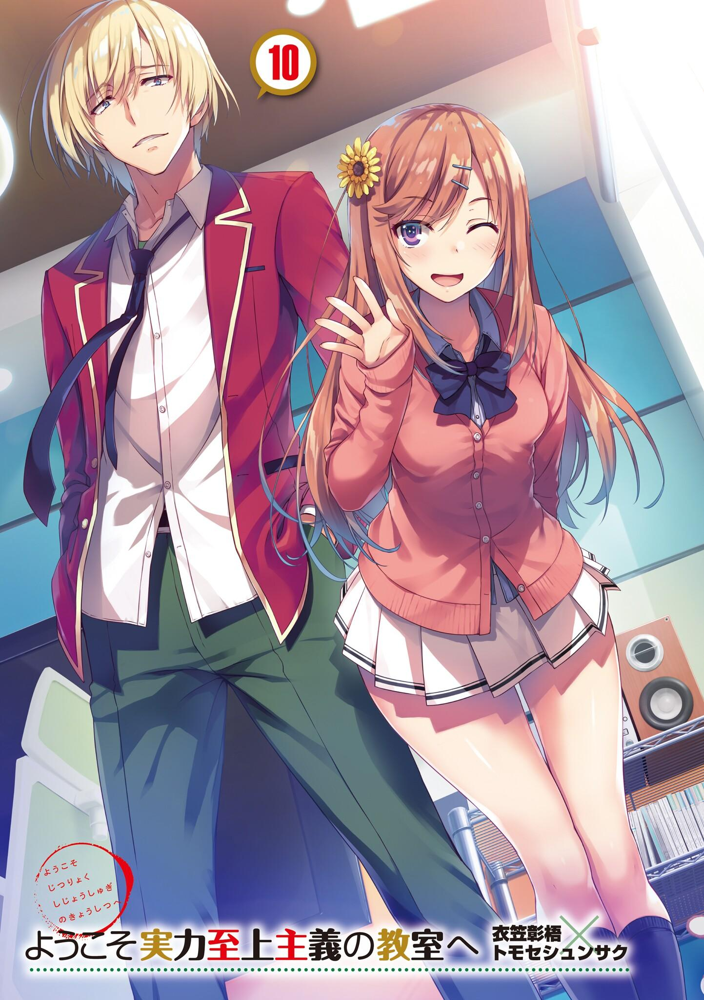
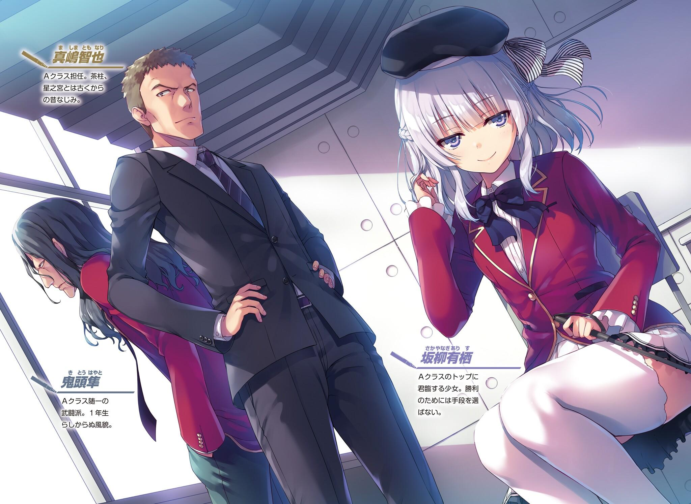
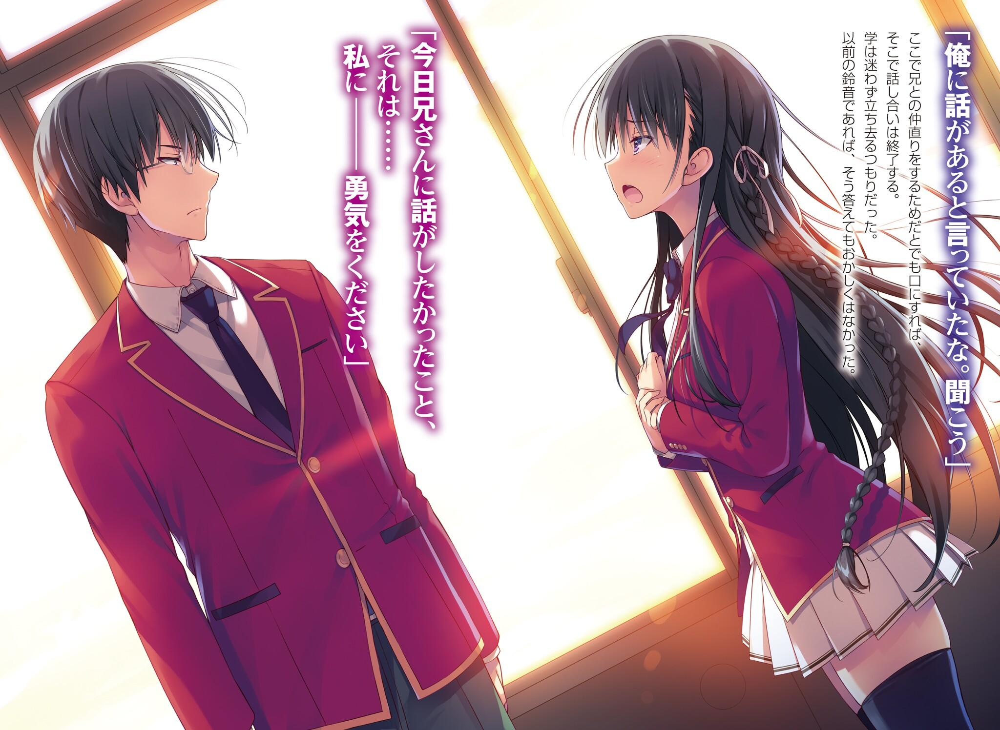
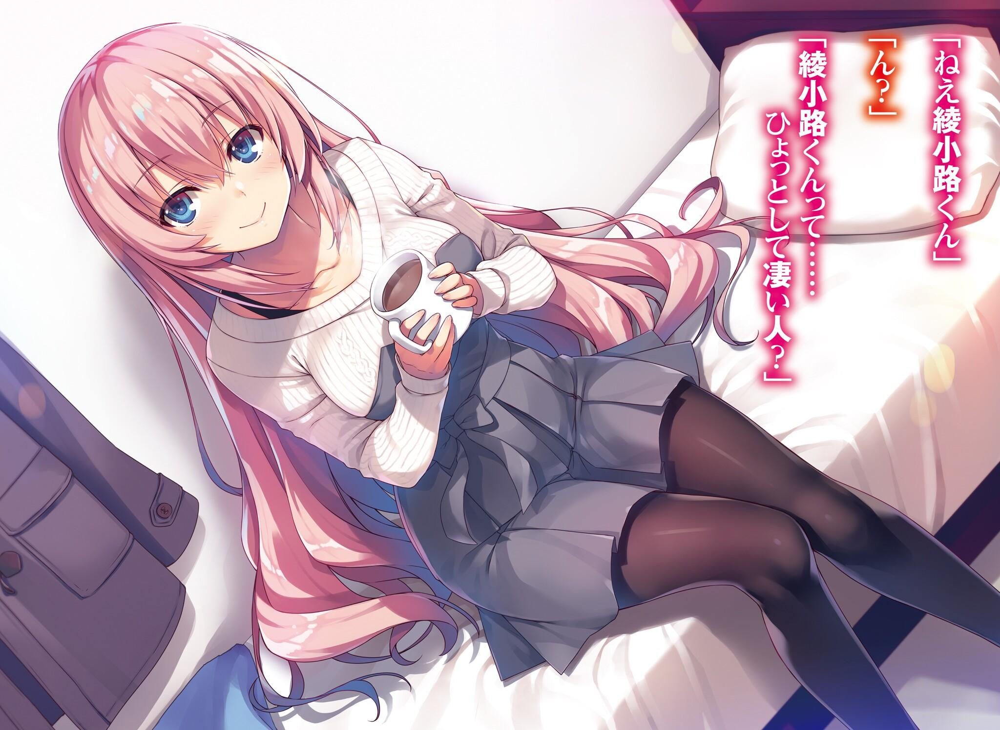
GLADHEIM
TRANSLATIONS
Youkoso Jitsuryoku Shijou Shugi no Kyoushitsu e - Volumen 10
EL MONÓLOGO DE YOUSUKE HIRATA
Para mí, mis compañeros de clase son existencias importantes.
...No, no es del todo acertado.
Para mí, mi clase es lo más importante.
Conozco muy bien la contradicción de esta afirmación.
Para proteger a mis queridos amigos, tengo que proteger a la clase.
Si puedo proteger a la clase, puedo proteger a mis amigos.
La clase es la reunión de muchos estudiantes. Hay tantas maneras diferentes de pensar como la cantidad de personas. Comienzan a pelear por las cosas más insignificantes.
Por eso tengo que protegerlos.
Finalmente, proteger a mi clase se convirtió en mi deber.
Sin embargo, ese no es mi verdadero yo.
Originalmente nunca fui el protagonista de mi clase. En cambio, mi existencia era la de una sombra.
Usando a la Clase C como ejemplo, puede que haya sido similar a Ayanokouji-kun, quizás.
Es por eso que a veces lo veo superpuesto a mi yo anterior.
Pero he cambiado.
Después de ese incidente, era imposible no hacerlo.
Cuando era pequeño, tenía un buen amigo. Un amigo que estuvo conmigo desde el Jardín de niños hasta la secundaria. Lo intimidaban sin que me diera cuenta y terminó por intentar suicidarse.
No, el hecho de que siga vivo es pura coincidencia.
Su muerte no hubiera sido extraña en absoluto.
Ese día.
A partir de ese día, mi vida comenzó a cambiar.
Comencé a pensar en cómo deshacerme de las intimidaciones.
Pero fallé.
La clase está bloqueada porque están tomando decisiones equivocadas. Las peleas dentro de la clase han desaparecido, pero al mismo tiempo, también lo han hecho las sonrisas. Y entonces, una vez más, lo mismo estaba a punto de suceder ante mí. No puedo dejar que se repita el mismo error. Esa fue la única respuesta a la que llegué.
La única forma de proteger a esta clase.
Eso es-
La escena que se desplegaba ante mí estaba llena de compañeros que me miraban con sorpresa en la cara.
—Horikita-san... ¿puedes callarte por un momento?
Palabras que no contienen ningún rastro de inteligencia.
Vulgares y llenas de violencia. Son mis palabras.
Una voz alejada de la ira o la tristeza.
Mis compañeros de clase, incluida Horikita-san, me miran con extrañeza.
Eso no importa.
En este punto, ya no importa.
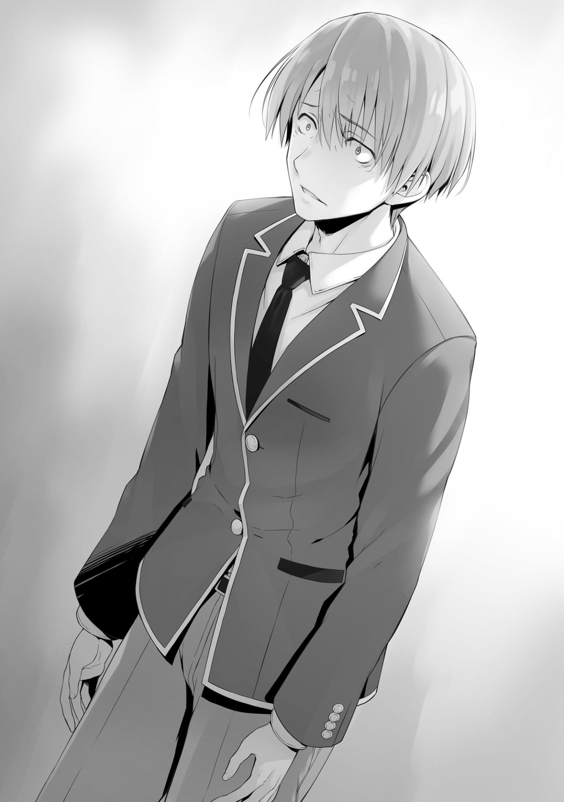
Al final de este horrible examen especial.
Yo, Yo--
LA CALMA ANTES DE LA TORMENTA
Finalmente es primero de marzo, pocos días después de los exámenes de fin de curso.
Lunes, el día en que todos esperaban ansiosamente los resultados.
Después de todo, en el caso de una nota insuficiente, la única opción que quedaba era la expulsión.
—Sensei, ¿vas a anunciar los resultados ahora?
Incapaz de seguir sentado, Ike prácticamente cayó de su asiento mientras esperaba que la maestra, Chabashira-sensei, respondiera.
—Cálmate. Lo sabrás en un par de minutos.
Chabashira-sensei, con movimientos experimentados, extendió un gran trozo de papel, que ella trajo, en la pizarra.
Esta escuela suele publicar nuestras notas digitalmente, como en nuestros teléfonos o en los foros en línea. Sin embargo, cuando se trata de los exámenes en los que está en juego la expulsión, los profesores nos muestran los resultados de esta manera.
—¿Te sientes seguro, Ike?
—Bueno, sí, estudié bastante, pero...
—Estudiaste mucho, ¿eh? Y aún así, ¿estás tan inquieto?
Chabashira-sensei debe haber encontrado su respuesta más divertida que sorprendente, ya que sonrió un poco.
Para Ike, que por lo general obtiene calificaciones bajas, era natural que se sintiera ansioso sin importar cuánto estudiara.
—Sudou, siempre pareces estar en la contienda por la puntuación más baja, así que ¿cómo te sientes?
No sería sorprendente que Sudou fuera el alumno más ansioso del aula.
Considerando las pruebas anteriores, no es exagerado decir que las calificaciones de Sudou fueron de las más bajas en casi todas las materias.
Chabashira-sensei-sensei esperaba una respuesta similar a la de Ike, pero su respuesta fue algo mucho más inesperado.
—...Al menos tengo confianza. No voy a reprobar.
—¿Oh?
A pesar de que la destreza física era la única cualidad rescatable de Sudou, su expresión y tono de voz lograban mantener un claro aire de confianza.
Por supuesto, supongo que aún seguiría ansioso por los resultados, como Ike.
Sin embargo, gracias al esfuerzo que ha puesto para superar esa ansiedad y a la experiencia que ha acumulado, ha sido capaz de crear confianza.
Esto es lo que las repetidas sesiones de estudio de Horikita le grabaron en la cabeza. Es diferente a lo que era capaz de hacer cuando toda su estrategia para los estudios consistía en amontonar superficialmente la información la noche anterior. Poco a poco las semillas del conocimiento comenzaron a crecer.
Como profesora que guió los estudios de Sudou, el rostro de Horikita permaneció emperturbable.
Bueno, ella parecía algo disgustada con la forma en que Sudou se estaba adelantando.
—Hmm.... Es muy interesante ver cómo han crecido. No hay manera de averiguar qué es lo que van a lograr a partir de ahora, y todos ustedes han superado fácilmente mis expectativas. Ahora, anunciaré los resultados de sus exámenes de final de curso.
Chabashira-sensei-sensei publicó los resultados de las pruebas en el papel de la pizarra.
Y después de esto, trazó una línea roja a través de los resultados.
Cualquier persona cuyo nombre caiga por debajo de esa línea será expulsada de la escuela de inmediato.
—Los resultados esta vez-
Con un lápiz rojo en la mano, Chabashira-sensei presionó la punta contra el papel y dibujó una línea horizontal.
La línea roja del destino.
Y el número de estudiantes cuyos nombres cayeron por debajo de ella fue...
cero.
En otras palabras....
—Todos aprobaron con éxito el examen. Estos han sido sus mejores resultados hasta ahora.
Chabashira-sensei-sensei reveló que todos en la Clase C aprobaron.
—¡Muy bien!
Ike fue el primero en gritar.
Parecía que tenía mucho miedo de escuchar los resultados. Después de todo, Ike tenía la puntuación más baja de la clase.
—Bueno, eso no fue tan difícil. Jajajajajaja... ¡Eso estuvo cerca!
Ike habló, su atención se concentró en su nombre y en la línea roja directamente debajo de él.
—Sólo estudié un poco el día anterior y aún así pude pasar.
Dijo Yamauchi, pero su nombre estaba justo encima del de Ike.
—No mientas, Haruki, estabas estudiando todos los días con desesperación, ¿no?
—¿De verdad? ¡Wajajajaja!
En cualquier caso, tanto Ike como Yamauchi lograron aprobar el examen, por lo que nadie se quejó.
Chabashira-sensei-sensei vigilaba una escena así con una mirada amable.
Sin embargo, los resultados fueron sorprendentes.
Ike quedó último, con Yamauchi justo detrás de él. Les siguieron Hondou, Satou e Inogashira.
El nombre de Sudou estaba justo encima del de Inogashira.
Teniendo en cuenta los resultados de Sudou hasta ahora, se podría decir que ha mejorado sustancialmente.
—Sudou, este último año, lograste mejorar tus notas más que nadie.
Parecías seguro de que aprobarías. Espero ver cómo tendrás éxito en el futuro.
Chabashira-sensei parecía compartir mis sentimientos al respecto.
—Heh. No es nada especial.
A pesar de decir eso, parecía contento con lo bien que lo había hecho.
Por otro lado, los estudiantes que ocuparon los primeros puestos fueron más o menos los mismos de siempre.
En primer lugar estaba Keisei, y en segundo lugar estaba Koenji. Keisei ha sacado buenas notas desde el principio, y con lo diligente que es con sus estudios, es natural que supere en rango al resto de la clase. Sin embargo, Koenji seguía siendo tan misterioso como siempre. Nunca estudiaba y tampoco interactuaba con nadie más. Si utilizara toda la extensión de sus habilidades, entonces podría tener el potencial para superar a Keisei. Debido a todas las pequeñas fluctuaciones en los resultados de las pruebas de Koenji hasta ahora, es posible que, dependiendo del examen, esté holgazaneando cuando piensa que no vale la pena su tiempo. Horikita ocupó el tercer lugar. Por lo general, se quedaba un poco atrás en inglés, pero esta vez obtuvo una puntuación mucho más alta. Seguramente mejoró mucho gracias al tiempo que pasó enseñando a Sudou.
—Sensei, ¿cómo les fue a las otras clases?
—Todos han sobrevivido, igual que tú. En cuanto a la puntuación media por clase, la clase C quedó tercera.
No había razón para preguntar qué clase quedó primera, segunda y cuarta respectivamente.
—Como pensaba, parece que tendremos que aspirar más alto si queremos superar a las clases que están por encima.
Sin un atisbo de complacencia, Horikita empezó a anotar las calificaciones de todos.
Los estudiantes que estaban en la cima no obtuvieron calificaciones perfectas por muy poco, por lo que una mejora adicional no era una opción. De hecho, la única opción que quedaba era concentrarse en mejorar las calificaciones de los estudiantes de la parte inferior.
—Buen trabajo con Sudou. Estoy impresionado.
—Es el resultado de su arduo trabajo. Todo lo que hice fue romper cada una de sus debilidades hasta que comenzó a ver el éxito.
Al igual que Horikita, la asignatura más débil de Sudou era el inglés, sin embargo, seguía viendo una gran mejoría en sus calificaciones.
Esta mejora mostró claramente que los dos habían centrado sus esfuerzos en el inglés durante sus estudios.
—Me pregunto si será capaz de subir el resultado un poco más la próxima vez. Por supuesto, todo depende de si puede seguir concentrado o no.
No tenía sentido preocuparse por eso. Después de todo, mientras Horikita estuviera por aquí, Sudou seguiría dando lo mejor de sí mismo.
Seguramente ya estaba empezando a acostumbrarse a estudiar.
Tal vez hasta pueda entrar pronto en la mitad superior de la clase.
—Parece que Ike-kun y Yamauchi-kun todavía tienen un poco de espacio entre sus resultados y la línea roja. Fue la decisión correcta que tuvieramos sesiones de estudio de manera rutinaria. Si un cierto ya sabes quién, junto a mí, se esforzara lo más mínimo, la puntuación media de nuestra clase subiría un poco más, ¿no es así?
—Este es mi límite.
Como siempre, mis calificaciones no fueron ni buenas ni malas. Esta vez, conseguí el puesto 18.
—No voy a aceptar eso. Algún día voy a hacer que te tomes esto en serio.
—Haré todo lo posible para estar a la altura de tus expectativas.
En cualquier caso, fue genial que todos pudieran aprobar el examen esta vez también.
Los estudiantes que apenas habían logrado aprobar los exámenes se sintieron claramente aliviados de haber terminado. Ike y Yamauchi ya habían empezado a bromear entre ellos.
Chabashira-sensei miraba a su clase con una tierna mirada.
—Tengo que reconocerlo, jóvenes. Puede que sea algo simple de decir, pero bien hecho.
Por lo general, era bastante raro que Chabashira-sensei elogiara a sus alumnos, pero era más frecuente en los últimos tiempos. Tal vez tuvo la corazonada de que todo el mundo aprobaría los exámenes de fin de curso.
—¡Lo logramos!
—Sin embargo, Ike, te estás emocionando demasiado. Aparte de los exámenes especiales, a nivel académico, es natural que apruebes un examen como éste. Y además, este examen no fue tan difícil como otros exámenes a nivel nacional.
En comparación con los exámenes escritos que habíamos hecho hasta ahora, la dificultad de este examen en particular era definitivamente mayor.
Sin embargo, la escuela fija la dificultad de los exámenes cerca del nivel de habilidad actual del estudiante. Todo es con el propósito de mantener las apariencias.
—Bueno, no se puede evitar, pero ahora que las buenas noticias se han ido...
Chabashira-sensei cortó el ambiente alegre que había llenado el aula, y lo reemplazó inmediatamente con algo mucho más pesado.
Era el despliegue habitual.
—La mayoría de ustedes ya lo saben, pero el hecho de que hayan terminado este examen de fin de curso no significa que las pruebas hayan terminado para este año. Pronto habrá un examen especial particularmente importante, y como en años anteriores, está programado para comenzar el 8 de marzo.
Chabashira-sensei explicó lo que debemos esperar para el futuro.
Hablando del 8 de marzo, es el próximo lunes, ¿no?
Acabamos de terminar el examen de fin de curso, por lo que un examen especial final que se llevara a cabo tan pronto era razonable. Después de todo, era lo último que quedaba en el calendario de la escuela para el año.
Además, los estudiantes de tercero tendrían que tomar otro examen además del de la semana próxima.
—Chicos. Este próximo examen especial será el último de este año.
Trabajemos todos juntos y hagámoslo lo mejor que podamos. Si lo hacemos, nuestra clase podrá aspirar a la clase A sin que nadie sea expulsado.
Las palabras de aliento de Hirata se extendieron por toda la clase, con muchos estudiantes hablando para mostrar su apoyo.
Chabashira-sensei observó la escena, revelando una sonrisa vagamente aliviada.
— Tal y como han estado las cosas últimamente, estoy empezando a pensar que todos ustedes podrían graduarse juntos dentro de dos años.
Con estas palabras de despedida, Chabashira-sensei terminó la clase antes de lo habitual.
—Hacer que sensei nos haga un cumplido como ese, se siente algo fuera de este mundo, ¿no es así?
Ike y Yamauchi empezaron a reírse alegremente.
—Pero no se vuelvan demasiado arrogantes. Su último examen es en sólo una semana, y de ningún modo será fácil.
Chabashira-sensei habló de nuevo justo antes de salir del aula, dejándonos con este último recordatorio.
PARTE 1
Sólo nos quedaba poco tiempo como estudiantes de primer año.
Utilicé el tiempo entre clases para tomarme un breve descanso para ir al baño.
En el camino de regreso a clase, me encontré con dos alumnos mayores, en medio de una conversación profunda, que me resultaban familiares.
El primero era el actual presidente del consejo estudiantil, el estudiante de segundo año Nagumo Miyabi. Le acompañaba su antecesor, Horikita Manabu, estudiante de tercer año.
Fue una mera coincidencia, pero Nagumo me vio inmediatamente.
En el momento en que me saludó, sentí que perdí la oportunidad de fingir que no lo había notado y regresar a clase.
—Hola Ayanokouji. ¿Pudiste aprobar el examen de fin de curso?
En contraste con la pregunta directa de Nagumo, el mayor de los Horikita miró tranquilamente en mi dirección.
—De algún modo.
Me comprometió a una conversación sin sentido.
—Qué frío. No creo que esa sea la actitud correcta cuando el presidente del consejo estudiantil está frente a ti.
—... ¿En serio?
Me enderecé un poco. No estaba seguro si era suficiente para él, pero debería ser algo más aceptable.
—Bueno, lo que sea. Has venido en el momento justo. Hay algo que he querido preguntarte.
Antes de continuar, Nagumo mostró una expresión de alegría, como si se alegrara de que estuviéramos los tres solos.
—Para desviar la atención de las calumnias que habían circulado en torno a Ichinose Honami, al parecer alguien publicó un montón de rumores sobre varios estudiantes de primer año en los foros de la escuela. Ahora bien, me pregunto, ¿quién haría algo así?
Me estaba probando con sus palabras. No, era muy posible que ya me hubiera descubierto.
No importa cuánta información tenga, mi actitud no cambiará.
—Bueno, no tengo ni idea. Pero al final del día, no me han causado más que problemas.
—Oh, sí, tú también fuiste una víctima, ¿verdad? ¿Qué pasó con eso?
—El comunicado de la escuela dejó muy claro que no debemos hablar de eso. No creo que ni siquiera el presidente del consejo estudiantil sea una excepción.
Debido a la advertencia, este tipo de comportamiento inquisitivo debe ser evitado.
—Es como dice Ayanokouji, Nagumo. Deberías abstenerte de decir algo demasiado descuidado.
Con el mayor de los Horikita apoyándome, Nagumo inmediatamente retrocedió.
No parecía que estuviera particularmente interesado en tocar el tema.
—¿De qué han estado hablando ustedes, celebridades?
—Sólo tengo una pequeña discusión con Horikita-senpai. ¿No es cierto?
Buscando confirmación, Nagumo miró al Horikita mayor, quien respondió con un simple asentimiento.
Estaba un poco preocupado por el lugar en el que mantenían la conversación.
Los dos se reunieron en el pasillo cerca de las aulas de primer año, así que había una sensación persistente de que algo estaba fuera de lugar.
—Mañana, un paso por delante de los otros años escolares, los estudiantes de tercero iniciarán la batalla decisiva que determinará si Horikita-senpai se gradúa con éxito de la Clase A o no. Así que quería escucharlo de él personalmente. ¿Tú también estás interesado?
A diferencia del resto del cuerpo estudiantil, los estudiantes de tercer año todavía tenían que tomar más de un examen especial.
El hecho de que empezara tan pronto no fue tan sorprendente.
No sabía lo que Nagumo quería que dijera, pero de todos modos le respondí honestamente.
—No estoy particularmente interesado. En última instancia, no tengo tiempo para preocuparme por mis compañeros mayores.
Hacia mi completa falta de interés, Nagumo dejó ver una expresión algo insatisfecha.
—Qué frío. Estás actuando así sólo porque eres el favorito de Horikita-senpai, ¿no?
No recuerdo haber sido particularmente favorecido por él.
De hecho, durante el año pasado, podía contar el número de veces que me involucré con él con los dedos de una mano.
—No te engañes, Ayanokouji. Todo ese trato preferencial no te hace especial. Sólo tuviste suerte con el entorno en el que te colocaron. Así es....
Es todo gracias a esa vigilante y ansiosa compañera tuya de allí.
Confundido, miré por encima de mi hombro y vi la imagen de Horikita, observándonos desde lejos.
Era demasiada coincidencia que esta selección de gente se hubiera reunido aquí sólo por casualidad.
—¿Fuiste tú quien la llamó aquí, Nagumo?
—Es natural que me acerque a la hermana menor de mi senpai. Después de todo, dirigiré a las generaciones más jóvenes como presidente del consejo estudiantil el año que viene.
De alguna manera, Nagumo lo había orquestado todo para que los dos hermanos aparecieran aquí.
Yo era la única persona que estaba presente por mera coincidencia.
—Ven aquí.
Nagumo llamó secamente a la Horikita más joven.
—...El que me envió este correo electrónico... ¿Fuiste tú, presidente Nagumo?
—Bueno, no exactamente, pero lo suficientemente cerca. Eres la hermana pequeña de Horikita-senpai, ¿verdad?
—Sí.... mi nombre es Horikita Suzune.
Debido a la presencia de su hermano mayor, Horikita fue cautelosa con su respuesta.
—No esperaba que la hermana menor de mi predecesor fuera colocada en la clase D después de la inscripción. Me sorprendió.
—¿Cuál es tu objetivo, Nagumo?
Sin siquiera mirar a su hermana, el Horikita mayor le pidió una respuesta.
Después de todo, Nagumo seguramente tenía una razón para llamarlos aquí.
Pero Nagumo simplemente agitó la cabeza, como para decir que no tenía motivos ocultos.
—Sólo quería reunirme contigo y con tu hermana menor.
Su objetivo aquí era sin duda evaluarla.
Llegando a la misma conclusión, el mayor de los hermanos Horikita tomó la iniciativa.
—Voy a decir esto ahora para que quede claro, pero será mejor que no pienses que puedes usar a mi hermana para obligarme a hacer una concesión.
—¿Concesión? ¡Claro que no! ¿Realmente crees que haría un movimiento contra ella? Una linda estudiante menor y además la preciada hermana pequeña de mi senpai?
— Para conseguir lo que quieres, creo que harías cualquier cosa.
Nagumo no confirmó las frías palabras del mayor de los Horikita, pero tampoco las negó.
—Aún así, no tienes que ser tan distante, ¿verdad? Si me hubieras hablado antes de tu hermana. Si lo hubieras hecho, habría podido invitarla al consejo estudiantil mucho antes.
—¿Qué?
Al escuchar algo inesperado, ambos hermanos se sorprendieron.
—Si es la hermana pequeña de mi senpai, puedo hacer que se haga cargo de la presidencia del consejo estudiantil después de graduarme. El hecho de que sea la hermana de un hombre que ha hecho tanto por nuestra escuela la califica más que suficiente.
—No uses la relación familiar como medio para evaluar las capacidades de alguien. Mi hermana no tiene nada que ver con lo bien que me desempeñé como presidente.
—...Así es. No soy apta para ser miembro del consejo estudiantil.
Horikita rechazó la invitación de Nagumo para unirse al consejo estudiantil.
Simplemente no tenía la confianza en sí misma para ser parte de él, ya que su hermano mayor rechazó la idea.
Después de todo, cuando en el pasado le hablé de la posibilidad de unirse al consejo estudiantil, su reacción fue igual de negativa.
Nagumo pareció ver algo en la humilde actitud de Horikita.
—Esta reunión es sólo para presentarnos. Te invitaré de nuevo otro día.
Si Horikita quería o no unirse al consejo estudiantil era otro asunto. Era como si Nagumo estuviera declarando que se involucraría activamente en el progreso de Horikita. Al hacer algo tan perturbador, es probable que buscara los puntos débiles de su hermano.
—...Bueno, entonces, um, yo...
Horikita intentó escapar de la conversación. En vez de querer alejarse de Nagumo, Horikita parecía querer alejarse de su hermano.
—Los de tercer año no van a estar aquí por mucho más tiempo, ¿sabes?
¿No crees que estaría bien que te mimaran un poco?
—Lo siento. Si me disculpan.
Horikita, juzgando que cualquier otra conversación sería incómoda para su hermano, se apresuró a volver a la clase. Dadas sus reacciones, cualquiera podría ver lo mala que era la relación entre los hermanos.
— Parece que ustedes dos tienen una relación maravillosa, ¿no es así, Horikita-senpai?
—¿Estás satisfecho, Nagumo?
No importaba en que plan estuviera metido Nagumo, el mayor de los Horikita no parecía preocupado.
—Apreciaría el tiempo que me queda con mi hermanita si fuera tú.
Aunque Nagumo estaba intentando en parte obtener una reacción de él, era cierto que Horikita vino a esta escuela para seguir a su hermano, pero solo se había reunido con él un par de veces hasta ahora.
—De todos modos, senpai. Por favor, haz lo mejor que puedas para inculcar un sentimiento de permanencia en el cuerpo estudiantil al graduarte como miembro de la Clase A. Si por casualidad te rebajas a la Clase B antes de graduarte, ni siquiera podrás reírte de eso… si entiendes lo que quiero decir.
Si eso ocurriera, se le consideraría un fracaso. Alguien que traicionó las expectativas de la escuela y de los estudiantes a su alrededor.
Se encontraba muy presionado.... No, no es el tipo de hombre que se preocuparía por algo así.
El Horikita mayor sintió que la conversación había llegado a su fin y se fue sin decir una palabra más.
—Santo cielo. Por supuesto que esto no es suficiente para que me tome en serio.
Parece que Nagumo quería obsesionarse con su predecesor hasta el final.
—¿Es tan importante para ti competir con el ex presidente de esta manera?
Durante el campamento de entrenamiento que hubo hace un tiempo, para lidiar con el mayor de los Horikita, Nagumo optó por una estrategia descarada que también se extendió por el resto de los tres grados.
—Por supuesto. Eliminar a Horikita-senpai es el único objetivo que me queda en esta escuela.
Después de todo, en efecto, no hay oportunidades para que el segundo y tercer año se enfrenten entre sí.
Sin embargo, tiene la intención de hacer que esto suceda por la fuerza, independientemente de lo que se le ocurra.
—Bueno, lo que haga dependerá de los detalles del examen y del propio Horikita-senpai.
Al parecer, no importaba cuantos enemigos hiciera, Nagumo pretendía dejar las cosas claras con el mayor de los Horikita antes de la graduación. A pesar de afirmar lo contrario, Nagumo seguro estará profundamente involucrado sin importar cuales sean los detalles del examen.
Después de todo, casi no le quedaba tiempo para arreglar las cosas con su senpai.
—¿Habrá algún problema con el examen especial de la próxima semana, presidente Nagumo? Tampoco espero que los de segundo año lo tengan fácil.
—Bueno, no sé. Sólo sigue esperando mi inevitable fracaso.
Cuando el descanso estaba a punto de terminar, Nagumo terminó la conversación y se fue.
Poco después de regresar al aula, mi vecina Horikita me miró.
—El presidente Nagumo y mi hermano... ¿de qué estaban hablando?
—Si estabas interesada, deberías haberte quedado hasta el final.
—Eso....
Bueno, fue una conversación difícil para ella. Después de todo, se vuelve dócil y mansa como un cordero cuando está frente a su hermano.
—Es inusual que te quedaras y escucharas su conversación. Te has convertido en alguien que atrae la atención de todo tipo de personas,
¿verdad? Me pregunto si es gracias a la carrera de relevos que tuviste con mi hermano en el festival deportivo.
Sus palabras estaban bellamente entrelazadas con una ironía sarcástica. Para ser justos, no es que sea capaz de predecir el futuro.
No todo va siempre de la manera que yo espero.
—Parece que no hubo muchas oportunidades para que te acerques a tu hermano este último año.
—...¿Y qué?
El humor de Horikita empeoró tan pronto como mencioné la situación con su hermano mayor.
Siendo así, hubiera sido mejor que no me arrastraran de improviso a la conversación de Nagumo.
Su preocupación por lo que habíamos hablado antes con Nagumo estaba escrita en toda su cara.
—¿No quieres tratar de enfrentarlo al menos una vez antes de que se gradúe?
—No entiendes nada. No hay forma de que mi hermano se preocupe por mí. Molestarme en acercarme a él cuando sé que me tratará cruelmente es una estupidez.
¿Así que se matriculó en la misma escuela, satisfecha con sólo mirarlo?
—Si mi hermano está interesado en alguien... es desagradable, pero sólo está interesado en ti.
Estaba a punto de decirle que estaba equivocada, pero me detuve. En este momento, Horikita no me creería aunque entrara en detalles.
Más que nada, no tendría sentido si ella no se atreve a enfrentarse a él.
—¿En serio? Bueno, tal vez tengas razón.
Respondí, terminando la conversación.
Aunque creo que Horikita todavía tenía quejas, no dijo nada más.
LA VOTACIÓN DE LA CLASE
Al día siguiente, martes 2 de marzo.
En la mañana, en el aula.
Chabashira-sensei entró por la puerta poco después de que sonara el timbre.
Era la escena habitual que se desarrollaba cada mañana.
La clase estaba envuelta en un aire relajado.
Ayer se anunció que todos aprobamos el examen de fin de curso sin ningún problema. Todavía faltaban unos días para el comienzo del examen especial final del primer año, el 8 de marzo, por lo que no era de extrañar que no hubiera ningún indicio de nerviosismo en el salón.
Sin embargo, la expresión de Chabashira-sensei mientras estaba detrás del podio era más sombría de lo habitual.
Proyectaba un aura tensa y penetrante que también se extendía a los estudiantes.
—¿Ocurrió algo?
Hirata, siempre dándole prioridad a la estabilidad de la clase, tomó la iniciativa de hablar.
Chabashira-sensei no respondió de inmediato, sino que optó por permanecer en silencio.
La impresión que daba hacía que pareciera que no quería decir nada.
Hasta ahora, por muy serias que fueran las cosas, nos daba sus explicaciones sin misericordia. Por lo tanto, la clase no tardó mucho en darse cuenta de que esta situación era anormal.
—...Hay algo que tengo que decirles a todos.
Habló en voz alta.
Su expresión era tan severa como siempre, pero el sonido de su voz la hacía sentir como si tuviera dificultades.
—Como les dije ayer, el examen final especial para el primer año comenzará el 8 de marzo. Después de este examen especial, pasarán al segundo año, según las normas generales de nuestra escuela.
Chabashira-sensei se dio la vuelta, cogió un trozo de tiza y alcanzó la pizarra.
—Este año, sin embargo, la situación es ligeramente diferente a la de años anteriores.
—Diferente.... ¿Cómo?
Preguntó Hirata a su vez, al percibir una sensación de peligro.
—Ni un solo estudiante de su grado desertó este año, incluso después del examen de fin de curso. Llegar tan lejos sin una sola deserción no había ocurrido antes en la historia de esta escuela.
—Somos increíbles cuando lo pone así, ¿no?
Pensé que no deberíamos anticiparnos, pero Ike intervino para hacer precisamente eso.
Si fuera la habitual Chabashira-sensei, le habría advertido que no se dejara llevar demasiado.
—Así es, y la escuela también lo cree. Normalmente, esto sería algo para celebrar. Inclusive nosotros, como profesores de la escuela, esperamos ver a tantos estudiantes graduados como sea posible. Sin embargo, hay que decir que surgen varios problemas cuando las cosas no salen como esperamos que lo hagan.
La forma en que hablaba era extraña. Hirata y Horikita también sintieron algo fuera de lugar con su elección de palabras.
—Es como si dijera que le molesta el hecho de que nadie haya sido expulsado todavía.
—No es así en absoluto. Pero, a veces pasan cosas que van más allá de mis expectativas.
A pesar de que decía algo por lo que debería estar contenta, las palabras de Chabashira-senei eran pesadas.
Para disipar esa pesadez, Horikita continuó hablando.
—¿Insinúa que hay algo malo con nosotros?
El contenido de lo que Chabashira-sensei tenía que decirnos no cambiaría, sin importar las preguntas que Horikita hiciera. Ella no era la persona que tomaba las decisiones aquí. Sólo era la empleada a la que se le había encomendado la tarea de transmitir las instrucciones.
—Sobre la base de que no ha habido expulsiones entre el primer año, la escuela...
Chabashira se detuvo un momento.
Luego, exprimió las palabras que se le habían quedado atascadas en la garganta.
—...Ha decidido que, dadas las circunstancias atenuantes, se someterán a un improvisado examen especial suplementario hoy mismo.
Escribió la fecha de hoy, martes 2 de marzo, junto con las palabras "Examen Especial Suplementario" en el pizarrón.
—¿¡Eeeh!? ¿¡Qué demonios!? ¿Otro examen especial? ¡Eso es tan injusto!
La escuela está actuando como un mocoso testarudo sólo porque ninguno de nosotros fue expulsado.
Chabashira-sensei simplemente pasó por alto las quejas de Ike. Los estudiantes no tenían derecho a negarse.
No, tal vez era ella la que no tenía ese derecho. Chabashira-sensei se veía menos tranquila de lo normal hoy. No intentaba asustarnos, así que era muy probable que la escuela lo decidiera apresuradamente.
—Parece un poco diferente de lo que hemos hecho hasta ahora....
Horikita murmuró en voz baja, dándose cuenta de que no tenía sentido pelear contra ello en este momento.
—Sólo los estudiantes que logren aprobar este examen especial suplementario serán elegibles para tomar el examen especial el 8 de marzo.
Tras dar una pequeña explicación, Chabashira-sensei se detuvo un momento.
—¡Nunca estuve de acuerdo con esto! No puedo creer que tengamos que ser nosotros los que hagamos otro examen.
—Su insatisfacción está completamente justificada. Después de todo, la escuela ha implementado un examen especial sin previo aviso. Aunque es sólo un examen más que en años anteriores, inevitablemente será una carga para los estudiantes. Es una verdad que tanto yo como los demás profesores nos hemos tomado en serio.
¿Una verdad que otros profesores se han estado tomando en serio? En otras palabras, aunque los profesores lo habían estado tomando en serio, la escuela en sí no lo había hecho. La forma en que lo había expresado hizo posible llegar a este tipo de conclusión.
La acumulación de exámenes especiales extra sería sin duda difícil para los estudiantes en este momento.
Por ejemplo, si se trata de un examen escrito que evalúa la capacidad académica, los estudiantes tendrían que volver a aplicarse en sus estudios. En el caso de un examen físico, tendrían que elaborar posibles contramedidas.
Habría mucha presión sobre los estudiantes, sin importar qué tipo de examen fuera.
Dicho esto, aunque varios estudiantes expresaran su insatisfacción, el examen especial no desaparecería de repente.
Chabashira-sensei reanudó su explicación.
—El contenido del examen especial es extremadamente simple, y la tasa de deserción es bastante baja, menos del tres por ciento por clase.
Una tasa de deserción escolar de menos del tres por ciento.
Por lo que pude deducir, realmente parecía bajo.
Pero quizás, este examen especial suplementario era diferente de los exámenes que hemos tenido hasta ahora.
No había razón para que mencionara expresamente la tasa de deserción escolar.
Nunca había sacado a relucir esa información en los exámenes que habíamos hecho antes.
Los estudiantes que se dieron cuenta de esto albergaban aún más sospechas.
Cuando dirigí brevemente mi mirada hacia la chica que estaba en el asiento de al lado, nuestros ojos se encontraron por casualidad, ya que ella ya me había estado mirando.
—¿Qué pasa, Ayanokouji-kun?
—No. Nada.
—Si sigues mirándome sin decir nada, me sentiré un poco asustada,
¿sabes?
—...Sí.
Me di la vuelta y decidí mirar por la ventana un rato.
En un aula tan confinada, podía escuchar todo lo que se decía, sin importar adónde mirara.
—Me pregunto qué tipo de examen será... ¿Qué nos exigirá?
—Parece que se sienten inquietos por ese punto en particular, pero no hay nada de qué preocuparse. Este examen especial suplementario no tendrá nada que ver con cosas como la capacidad académica o física. Cuando llegue el momento, se espera que hagan algo tan simple que cualquiera podrá hacerlo, como escribir su nombre en el examen. Si a fin de cuentas sólo hay un tres por ciento de posibilidades de abandonar la escuela, eso es indudablemente muy bajo, ¿no están de acuerdo?
Durante todo este tiempo, ha tratado de evitar tocar la verdadera naturaleza del problema: el contenido del examen.
—...Si la dificultad no está relacionada, entonces ese tres por ciento es bastante aterrador para nosotros.
—Por supuesto, es como dices, Hirata. No es que no pueda entender cómo se sienten. Sin embargo, si podrán o no reducir ese porcentaje se basará en los preparativos que hagan antes de que se realice el examen oficial. Como ya se habrán imaginado, los resultados del examen cambiarán dependiendo de sus acciones.
—¿De dónde se derivó esta tasa de deserción escolar? Basándonos en lo que nos ha dicho, parece que lo estamos dejando a la suerte. ¿Es ese el caso?
La posibilidad de que alguien de esta clase deje la escuela no era algo de risa.
Aunque Chabashira-sensei minimizó la tasa de deserción escolar, la carga que esto supone para los estudiantes fue mayor de lo previsto.
Hirata, como la primera persona que lo entendió, cuestionó aún más ese punto.
—Por favor, díganos. ¿Qué tipo de examen especial tomaremos?
—El nombre del examen especial es El voto de la Clase.
—¿El voto... de la clase...?
Chabashira-sensei escribió el nombre del examen especial en la pizarra.
—Ahora les explicaré las reglas de este examen especial. Durante los próximos cuatro días, serán evaluados por sus compañeros de clase.
Luego, el sábado, seleccionarán los nombres de tres estudiantes que consideren dignos de aprobación, y los nombres de tres estudiantes que consideren dignos de desaprobación y votarán por ellos. Eso es todo.
¿Significa eso que todos nos evaluaremos? Pensándolo objetivamente, estudiantes como Hirata y Kushida acumularán mucha aprobación, poniéndolos en la cima de la clasificación. En contraste, parece que los estudiantes que son considerados problemáticos o que están retrasando a la clase acumularán muchas críticas y caerán en picada hasta el fondo.
Pudimos vislumbrar la urgencia que la escuela afrontaba por el hecho de que usaran un sábado para realizar una parte del examen.
Sin embargo, sobre la base de todo lo que Chabashira-sensei ha dicho hasta ahora, los estudiantes de los rangos superior e inferior....
—¿Eso es todo? ¿Eso es todo lo que es el examen?
—Correcto. Eso es todo. ¿No les dije que era simple?
—En ese caso, ¿cómo determina la escuela el resultado del examen?
—Lo explicaré ahora.
Chabashira-sensei, apretó más la tiza y volvió a escribir en el pizarrón.
—La esencia de este examen especial es el número de votos de aprobación y desaprobación que se acumulan hasta el sábado. El mejor estudiante.... es decir, el estudiante que acumule más votos de aprobación, recibirá una recompensa especial. Esta recompensa especial no serán puntos privados. En cambio, recibirán un punto de un nuevo sistema, Puntos de Protección.
Era un tipo de punto del que no habíamos oído nada hasta ahora.
Por supuesto, captó la atención de todos.
—Los puntos de protección les otorgan el derecho de anular una expulsión.
Incluso si reprobaran un examen, siempre y cuando tengan un punto de protección, pueden usarlo para cancelar las preguntas en las que se equivocaron. Sin embargo, estos puntos no pueden ser transferidos entre estudiantes.
No era exagerado decir que en el momento en que dijo esto, una ola de nuevas sorpresas se extendió por toda la clase.
—Todos ustedes deberían ser capaces de entender lo asombrosos que son estos puntos. Son, efectivamente, equivalentes en valor a veinte millones de puntos privados. Por supuesto, a los ojos de un estudiante sobresaliente, sin ninguna razón para temer a la expulsión, puede que no tengan tanto valor.
Eso no es cierto. No existe un estudiante que no acepte el derecho de invalidar una expulsión.
La recompensa era demasiado extravagante. No, era más que extravagante.
Estos puntos de protección tenían el potencial de ser un arma escandalosamente peligrosa dependiendo de cómo se usaban.
Y es precisamente debido a esta extravagancia que la penalización dada a los estudiantes de menor calificación sería aún mayor.
—¿Significa esto que algo malo le pasa a los tres estudiantes de menor calificación...?
Preguntó Hirata, inquieto por la respuesta.
—No. Esta vez, el castigo sólo se aplica al estudiante que reciba más votos de desaprobación en cada clase. Otros estudiantes no serán penalizados, no importa cuántos votos de desaprobación reciban. Después de todo, el tema de este examen especial es seleccionar quién ocupará el primer lugar y luego decidir quién ocupará el último lugar.
—¿Qué clase de castigo es?
—El examen especial esta vez es diferente de los que han tenido hasta ahora, con un punto en particular que es muy diferente. Es decir, que este examen especial se realiza para rectificar el problema de la falta de bajas.
En efecto. El detalle que realmente debería preocupar a los estudiantes es la razón por la que se realiza el examen especial suplementario.
Si este examen se hace porque aún no se había producido ninguna baja escolar....
—Este examen especial es exactamente tan fácil como les dije que es.
Aunque carezcan de capacidad académica o de fuerza física, no estarán en desventaja. Sin embargo, ¿por qué la escuela haría todo lo posible por ofrecer la recompensa especial de los puntos de protección? Eso se debe a que es imposible que todos ustedes avancen al segundo año sin dejar atrás a uno de sus compañeros.
Chabashira-sensei se dio la vuelta y nos miró a cada uno de nosotros, uno por uno.
—Así que, el estudiante de menor calificación... será expulsado de la escuela.
Si hay una votación, habrá resultados.
Y si hay resultados, tendrá que haber un estudiante en primer y último lugar.
Y entonces, la persona en último lugar será expulsada.
Este resultado es inevitable.
Es lo mismo, por muy superior o inferior que sea la clase.
La única diferencia será quién se enfrentará al castigo.
Ese es el tipo de examen al que nos enfrentamos.
La escuela preparó este examen suplementario simplemente porque estaban molestos porque nadie había sido expulsado todavía. Después de todo, si el examen suplementario se llevara a cabo y ningún estudiante abandonara la escuela, no tendría sentido para ellos implementar todo esto.
Aún así, la cara del padre de Sakayanagi, el presidente de la escuela, cruzó mi mente. Aunque puede que no me haya mostrado su verdadera naturaleza durante mi encuentro con él, no pareció ser el tipo de persona que haría cumplir un examen tan irrazonable.
—No entiendo lo que quiere decir, sensei. La persona en último lugar...
¿en serio dice que será expulsado?
—Así es. Tendrán que enfrentarse a la guillotina. Pero tengan la seguridad de que la clase en sí no será penalizada si alguien es expulsado esta vez.
Ese es el tipo de examen que es.
Esto era totalmente diferente a los exámenes especiales anteriores.
Aunque la posibilidad de ser expulsado a título individual era mayor, también existía la posibilidad de que todos escaparan por completo a la expulsión. Pero esta vez, había un sistema en marcha donde el sacrificio era inevitable.
Este es el caso especial que la escuela preparó para nosotros.
Precisamente debido a su urgencia por forzar expulsiones, necesitaban ofrecer algo así como puntos de protección a cambio.
Aun así, los estudiantes seguirían soportando una carga de riesgo desproporcionada.
—Parece irrazonable, ¿no? Bueno, eso es lo que pienso como profesora.
Pero, no se puede hacer nada al respecto ahora que la escuela ha tomado su decisión. No tienen más remedio que acatar las reglas y presentar el examen especial.
—¿Realmente está bien...?
Nubes oscuras se cernían sobre la clase a pesar de que todos acababan de superar el examen de fin de curso.
Para este fin de semana, un estudiante de esta clase iba a desaparecer.
—Como queda poco tiempo para el día de la votación, continuaré con la explicación de las reglas. El número total de votos de aprobación y
desaprobación para cada estudiante se pondrá a disposición del público al final del examen. En otras palabras, se anunciarán los resultados de toda la clase. Sin embargo, la información sobre quién votó por quién permanecerá sin revelar, ya que la votación se hará de forma anónima.
Con un examen como este, definitivamente tendrían que hacerlo anónimamente.
Dejando a un lado los votos de aprobación, habría problemas con los votos de desaprobación durante bastante tiempo si se revelaran los detalles más finos de la votación.
—Continuando, un voto de aprobación y un voto de desaprobación se invalidarán mutuamente. Digamos, por ejemplo, que recibieron votos de desaprobación de diez personas y de aprobación de treinta. Esto equivaldría a un total de veinte votos de aprobación. Además, ninguno de los votos puede ser emitido por ustedes mismos, y también está prohibido votar por la misma persona varias veces.
—¿Qué hay de las abstenciones...? ¿Se nos permitiría abstenernos de usar nuestros votos de desaprobación si quisiéramos?
—Por supuesto que no. Tendrán que emitir todos sus votos, independientemente del tipo de voto que sea. Aunque estén enfermos el día del examen, tendrán que votar.
En otras palabras, es imposible que ninguno de nosotros deje la papeleta en blanco o se abstenga por completo de votar.
Varios estudiantes estaban visiblemente preocupados por esto.
Este era un examen muy peligroso para los estudiantes que sentían que iban a acumular votos de desaprobación.
Los estudiantes que dependen completamente de otros para superar estos exámenes también sentirán una presión considerable.
—...No, es demasiado pronto para ceder a la desesperación.
Hirata dijo palabras de consuelo, intentando calmar a Ike y a los demás.
—Sensei dijo antes que era imposible que todos evitaran la expulsión. Eso significa que debe haber una laguna en alguna parte.
Cuando nos explicó las reglas durante los exámenes anteriores, los significados ocultos detrás de sus explicaciones siempre lograron llevarnos a una salida.
¿Pero y esta vez qué?
Esèprobablemente imposible' significaba que había métodos disponibles que aún no habíamos considerado.
—Aunque no es fácil, existe una forma de evitar que alguno de nosotros abandone la escuela.
—¿Qué quieres decir, Horikita?
—Si toda la clase se une y selecciona a tres personas para los votos de aprobación, y a tres personas para los votos de desaprobación, los seis terminarían con un total de cero votos. De esa manera, nadie terminaría en el último lugar. ¿No es cierto?
—¡Eso es todo! ¡Como se esperaba de Suzune!
Sin duda era posible si todos nuestros compañeros seguían las instrucciones.
Sin embargo, aunque sólo hubiera una persona que se convirtiera en traidora, los estudiantes que habían sido traicionados serían conducidos por el camino de la expulsión.
Después de todo, los puntos de protección incentivarían a los estudiantes a alcanzar el primer lugar.
Mientras que gente como Kushida, que odia a Horikita, podría ser problemática, su influencia podría contabilizarse haciendo algunos ajustes con anticipación. Si se pusiera a Kushida en una posición en la que se esperaba que emitiera un voto de desaprobación por Horikita, se podría evitar hasta cierto punto una crisis.
De esta manera, sería posible determinar quién se convirtió en traidor después de que se anunciaran los resultados de la votación.
En resumen, como el traidor quedaría al descubierto, no podrían traicionar a la clase descuidadamente.
—Lo que Horikita acaba de decir sobre el control de los votos no tiene caso.
—¿Por qué sensei?
—Si nadie es seleccionado para el primer y último puesto, el examen especial será considerado un fracaso. Independientemente de sus intenciones, si los resultados de la votación son un total neto de cero por cada estudiante en la clase, se llevará a cabo otra votación. En pocas palabras, el examen se repetirá sin parar hasta que decidan expulsar a alguien.
Con esto, el camino de escape que la clase buscaba frenéticamente se cerró.
—¿No es extraña esa regla? Si votamos con honestidad y, por casualidad, obtuvimos un total de cero votos, los resultados seguirían siendo los mismos, incluso si celebráramos otra votación. Si distorsionamos a la fuerza los resultados después de eso, parecería que los estudiantes no fueron elegidos por una evaluación legítima.
—Horikita, tu razonamiento es correcto. En el caso de que al final se llegue a un total neto de cero votos para todos, una repetición parece contradictoria. Pero, piénsalo de manera realista. Por pura casualidad, terminar con un total neto de cero votos para todos en un examen en el que se elige explícitamente a las personas tanto para el primer como para el último lugar es casi imposible, ¿verdad?
La respuesta de Chabashira-sensei también es muy razonable.
Un total neto de cero votos para todos no ocurriría a menos que el voto hubiera sido intencionalmente establecido de esa manera.
—...Entonces, ¿qué pasa cuando hay un empate para el primer o último lugar?
En comparación, había una buena posibilidad de que se produjera un empate.
—En cualquier caso, habrá un voto decisivo. Sin embargo, en ese caso, la votación podría empatarse por segunda vez. Si esto sucede, la situación
será evaluada por un método especial preparado por la escuela. No puedo profundizar más en ese método por el momento.
¿Significa eso que sólo nos lo dirá si realmente sucede?
Sin embargo, las posibilidades de llegar a ese punto eran bastante bajas.
—No hay necesidad de preocuparse por eso. La probabilidad de que haya un voto decisivo es cero.
Añadió Chabashira-sensei, pareciendo que compartía mis pensamientos sobre el asunto.
—¿Por qué? Debería ser más que posible.
—Eso es porque también recibirán votos de aprobación de los estudiantes de las otras clases.
—¿De las otras clases?
—Se espera que todos ustedes escojan a un estudiante que encuentren digno de aprobación en otra clase y que voten por ellos. Naturalmente, esto contará como un voto de aprobación único y normal. En otras palabras, en el caso de que un estudiante sea muy odiado dentro de su propia clase, pero sustancialmente popular entre los estudiantes de las otras clases, sería teóricamente posible que ese estudiante terminara con un total de alrededor de ochenta votos de aprobación, incluso después de que se contabilicen los votos de desaprobación.
Era inusual que más de 100 votos de aprobación flotaran por ahí.
A la vista de esta nueva información, es indudable que la posibilidad de que se celebre una votación decisiva es ahora considerablemente menor.
Con esto, parece que encontramos cada pieza del rompecabezas.
Examen Suplementario・La Votación de la Clase Contenido del examen:
El examen consiste en la votación de la clase, donde a cada estudiante en cada clase se le asignan tres votos de aprobación y tres votos de desaprobación.
Regla 1:
Los votos de aprobación y desaprobación se invalidan mutuamente. Votos de Aprobación - Votos de Desaprobación = Resultados.
Regla 2:
No puedes votar por ti mismo.
Regla 3:
Se prohibe votar varias veces por la misma persona, dejar parte de la boleta en blanco, abstenerse de votar y otros actos de esta naturaleza.
Regla 4:
El examen se repetirá hasta que se haya determinado el primer y último lugar entre los estudiantes. El estudiante que quede en el último lugar será expulsado.
Regla 5:
Se requiere que emitas uno de tus tres votos de aprobación para un estudiante de otra clase.
Estos eran los detalles del examen suplementario.
No había duda de que este examen es extremadamente directo y sencillo.
Pero al mismo tiempo, estaba claro que este examen era el más cruel que hemos tenido que enfrentar hasta ahora.
Este fin de semana, alguien en cada clase iba a desaparecer.
Sin embargo:
—Sensei. ¿Por qué dijo que probablemente era imposible? No importa cómo lo mire, no puedo encontrar ninguna laguna en las reglas.
—Así es. No hay ninguna laguna en el reglamento. Sin embargo, también es cierto que hay espacio para la incertidumbre. Probablemente ya lo han pensado, pero todo cambia cuando usan puntos privados.
—¿Dice que podemos usar nuestros puntos privados para evitar la expulsión?
—20 millones. Si eres capaz de preparar todos esos puntos, la escuela no tendría otra opción que revocar tu expulsión.
Esta fue la razón por la que había dicho que eràprobablemente imposible'.
El hecho de que no haya restricciones a la transferencia de puntos privados significa que se tolerarán las negociaciones que hagan uso de ellos. Si puedes obtener votos de aprobación con dinero, entonces obténlos. Eso es lo que la escuela nos estaba diciendo.
Ellos también han juzgado esto como una forma de fuerza.
Con la ayuda del poder absoluto de tus capacidades que has mostrado a todo el mundo durante el último año.
O con el poder financiero de los puntos privados que has conseguido ahorrar a lo largo de los exámenes anteriores.
O tal vez incluso el poder del trabajo en equipo que has acumulado a través de la amistad.
Éramos libres de hacer frente a este examen como quisiéramos.
—Por favor, espere. Veinte millones de puntos es un poco...
—Es una cantidad poco práctica para ustedes, si reunen todos los puntos privados de la clase C. Si obtienen puntos de las otras clases o reciben caridad de los alumnos de las clases superiores, no es imposible.
Ciertamente sería teóricamente posible si fuéramos más allá de nuestra propia clase y año escolar.
Sin embargo, si nos preguntáramos si realmente reuniríamos todos esos puntos para proteger a un estudiante, sería difícil de decir.
Incluso para la Clase A y la Clase B, había una alta posibilidad de que tampoco pudieran reunir tantos puntos privados. No, incluso si lo hicieran, era cuestionable si los usarían o no para proteger a un solo estudiante. Sería muy arriesgado para ellos deshacerse de todos los activos que han acumulado hasta ahora.
—Esta es la única manera en la que podrán esquivar las reglas establecidas por la escuela. Diré esto con anticipación, otros intentos de encontrar una forma de sortearlas en este examen son absolutamente imposibles. El resto depende de ustedes para que lo juzguen y decidan.
Chabashira-sensei terminó su explicación cuando se acabaron las clases.
Tan pronto como abandonó el aula, la clase se sumió en la confusión.
—¿¡Qué hacemos!? ¿¡Qué hacemos!? Este es un examen horrible, ¿no?
—¡Ustedes son tan ruidosos!
—¿Qué quieres decir con ruidosos? Seguramente van a emitir sus votos de desaprobación en nuestra contra, ¿no es así?
Los chicos y las chicas lanzaban blasfemias de un lado a otro, con la sensación de estar en guardia unos contra otros.
—Qué desagradable.
Un estudiante se rió con desdén, vigilando el conflicto entre los jóvenes.
La existencia particularmente inusual de la clase, Kouenji Rokusuke.
—No sirve de nada alarmarse, ¿verdad?
—¿Realmente crees que estás en posición de estar calmado en este momento? ¿Acaso entiendes los problemas que has causado a la clase hasta ahora? —Sudou habló, cuestionando a Kouenji a medida que se acercaba.
Hasta ahora, Kouenji sin duda causó problemas dentro de la clase gracias a su actitud voluble.
— ¡Egoístamente te ausentaste tanto del examen de la isla deshabitada como del festival deportivo!
Su conversación comenzó a atraer la atención de los alumnos de toda la clase.
En este punto, los estudiantes de mente débil estaban buscando a la persona que se convertiría en el sacrificio, todo para evitar ser expulsados de la escuela.
—Eres tú el que no entiende, pelirrojo-kun.
Kouenji cruzó las piernas y las estiró sobre su pupitre.
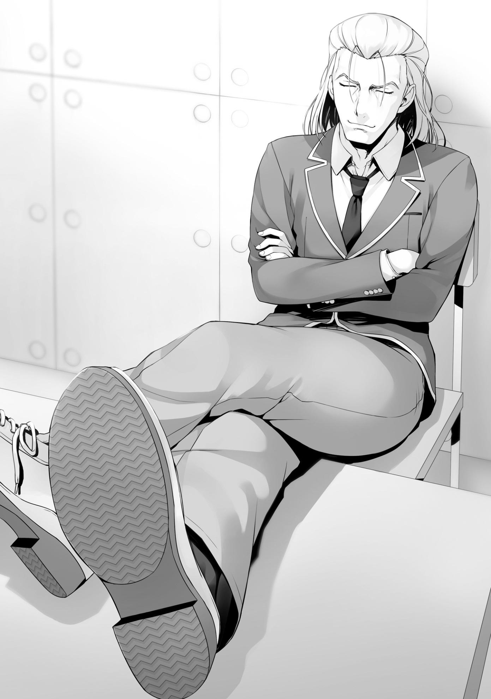
—Parece que tienes la impresión de que todo lo que has sembrado en el último año es la clave para triunfar en este examen especial.
—¡Así es exactamente como es!
—Equivocado. Este examen especial tiene la vista puesta sin duda en los próximos dos años.
Kouenji rechazó rotundamente la opinión de Sudou, o mejor dicho, la opinión de toda la clase.
—¿Eh? ¿Qué estás diciendo...?
Completamente perdido, Sudou pensó en esto como el habitual comportamiento absurdo de Kouenji.
—¿Quieres escucharme? Este examen es literalmente un caso especial.
¿No es costumbre que una clase reciba una gran penalización cuando alguien es expulsado? Esta vez, sin embargo, no es así en absoluto. En otras palabras, esta es una oportunidad muy adecuada para que nos deshagamos de un estudiante innecesario.
—¡Entonces, yo digo que tú eres el estudiante innecesario; una carga total para la clase!
—Oh no, para nada.
—¿Qué? ¿Cómo puedes decir eso?
—Si quieres saberlo, es porque soy asombroso.
Kouenji habló con una audacia abrumadora, como si dijera que esa era la última palabra en la materia.
Sudou se tambaleó ante su completa falta de vacilación.
—Cuando se trata de los exámenes escritos, siempre estoy en lo más alto de la clase, no, de todo el año escolar. De hecho, obtuve el segundo lugar por un margen muy pequeño en el examen de fin de curso. Por supuesto, si me hubiera hubiera esforzado, hubiera tomado fácilmente el primer lugar.
Además, en términos de habilidad física, te supero incluso a ti. Tú mismo deberías saberlo muy bien, ¿no?
Kouenji alardeaba de la altura de su potencial.
—¡Y... y qué! Todo eso no tiene sentido si no te tomas las cosas en serio.
—Claro. Por eso, de ahora en adelante, pasaré página. Con este examen como punto de inflexión, me convertiré en un estudiante útil que contribuirá al avance en todos los tipos de exámenes. Esto sería una gran ventaja para la clase, ¿no?
—¿¡Quién creería algo así!? ¡Soy mucho más útil que tú!
El reclamo de Sudou también era razonable.
Nadie en el salón de clases, incluyéndome a mí, tenía ninguna razón para creer en las palabras de Kouenji
De hecho, no pensaba que este hombre se tomaría las cosas en serio después de este examen.
Más bien, no había ninguna razón real para que él cambiara.
Estaba claro que, mientras lograra pasar este examen, volvería a vivir una vida autocomplaciente.
—Bien, entonces, permítanme invertir la pregunta. Esta charla de que eres más útil que yo, ¿es algo que todo el mundo aquí puede creer?
Kouenji ignoró Sudou, y en su lugar comenzó a dirigirse a sus compañeros de clase.
—No, no sólo pelirrojo-kun. Cuando se trata de estudiantes que todavía no han ayudado en absoluto, no hay garantía de que de repente sean útiles en el futuro, ¿verdad? Cualquiera puede hacer una lista de promesas falsas, como yo, pero lo que realmente importa al final es la fuerza que ocultan. Sin fuerza que los respalde, las promesas vacías carecen totalmente de persuasión.
La idea de que los estudiantes sin habilidad tenían que esforzarse para pasar de página.
La idea de que los estudiantes con habilidad deben esforzarse para pasar de página.
Kouenji decía que estas dos ideas eran similares, pero no lo eran.
Todo el concepto de acumular votos de desaprobación y terminar en la clasificación más baja de la clase, Kouenji no cuestionaba nada de eso en absoluto. Por el contrario, parecía estar recibiendo con agrado el examen suplementario en sí.
Sin embargo, esto no significaba que Kouenji no estuviera enfrentando ningún riesgo.
Dependiendo de las acciones que la clase emprendiera, corría el riesgo de obtener un número considerable de votos de desaprobación.
Para bien o para mal, hablaba demasiado.
Aunque, para ser honesto, estoy de acuerdo con la idea de Kouenji Si tuviéramos que pensar en la clase como un todo, era necesario tomar una decisión clara.
Se nos presentó la oportunidad de seleccionar cuidadosamente a un estudiante innecesario y deshacernos de él por el bien de la clase en su conjunto, en lugar de simplemente elegir en base a nuestras preferencias personales.
En el caso de los exámenes especiales anteriores, hubo muchos casos en los que un estudiante que tenía grandes fortalezas habría sido expulsado debido a un par de debilidades. En pocas palabras, este fue el caso de Sudou, que estaba discutiendo con Kouenji. En contraste con las habilidades físicas con las que había sido bendecido, sus habilidades académicas estaban en la competencia por ser las peores de la clase. De hecho, sus habilidades académicas casi lo frenaron tanto que, en un momento dado, estuvo a punto de ser expulsado de la escuela. Sin embargo, con la ayuda de Horikita, Sudou
comenzó a compensar gradualmente sus deficiencias, y como resultado, comenzó a mostrar su valor como miembro de la clase.
Al igual que Sudou, la mayoría de las personas tienen tanto fortalezas como debilidades.
Por otro lado, no faltan personas que no sólo carecen de puntos fuertes, sino que además están plagadas de debilidades y se destacan por ello de una manera negativa. Cada uno tiene el potencial de crecer como ser humano, pero cada uno florece en momentos diferentes, y algunos están simplemente limitados por su capacidad de crecimiento. Exactamente por eso tenemos que aprovechar este examen.
Desafortunadamente, parece que Kouenji es la única persona en la clase que está al tanto de esto.
—Deja de fastidiarme Kouenji. No creo que necesitemos a alguien como tú, y eso no va a cambiar.
—¿Sin importar cuán incompetentes sean tus amigos cercanos?
—Incompetentes.... ¿estás llamando incompetentes a mis amigos? ¡No eres más que un maldito mentiroso!
Sudou golpeó con el puño el pupitre de Kouenji y lo miró con fiereza.
—Precisamente. En cualquier caso, ¿eso es todo? Si esta es su decisión, siéntanse libre de hacer lo que quieras, pero entonces.... por lo que puedo decir, esta clase simplemente seguirá siendo patética e inferior.
Kouenji se peinó tranquilamente, sin mostrar ningún tipo de interés.
Sus repetidas provocaciones habían hecho arder a Sudou
—Tú, con tan poco entusiasmo-
—Relájense los dos. Deberíamos hablar de esto con calma, ¿cierto?
Hirata se abrió paso a la fuerza entre los dos.
¿Cuántas veces había intervenido y mediado así Hirata?
Era una escena que ya me había acostumbrado a ver, pero Sudou se estaba acalorando cada vez más y no mostraba signos de calmarse.
—¿Qué quieres decir con "relájense", Hirata? Por supuesto que tú vas a estar bien. Después de todo, no hay forma de que termines en el último lugar.
—Hey-
Las palabras de Ike pusieron a Hirata en un aprieto.
Es cierto que Hirata ha contribuido enormemente a la clase durante el último año.
En términos generales, no es exagerado decir que se trata de uno de los alumnos más seguros en este examen. En este examen en el que alguien será expulsado inevitablemente, las palabras de un estudiante que estaba realmente a salvo del peligro no serían capaces de resonar en los demás.
—Yo... No está claro lo que me va a pasar.
A pesar de que lo negó, sus palabras aún no pudieron llegar a Sudou
—¿Escuchaste eso, Kanji? Hirata acaba de decir que no sabe lo que le pasará.
—No, no, Hirata-sama definitivamente está a salvo.
Yamauchi e Ike intercambiaron amargas sonrisas que estaban llenas de más asombro que irritación.
Esta reacción es comprensible.
Nadie aquí consideraba a Hirata como un candidato potencial para la expulsión.
Aunque obtuviera algunos votos de desaprobación, seguro que obtendría más que suficientes votos de aprobación para anularlos.
—¡…!
Hirata intentó decir algo varias veces, pero las palabras no salieron.
El examen especial acababa de ser anunciado.
Debido al estado inquieto del aula, no podrían aceptar tranquilamente nada de lo que Hirata tenía que decir.
—Sigamos hablando Kouenji.
—No tengo nada más que decirte.
—Hay más que suficiente de lo que hablar.
Sudou insistió más en el asunto. En este punto, la única persona que podría detenerlo sería...
—Es suficiente Sudou-kun —Horikita habló, la última palabra de la discusión—. No te dejes llevar sólo porque tus notas han mejorado un poco.
—No, esta vez, no es así...
—Cierra el pico.
—... Entendido.
Ella tenía control total sobre Sudou con sólo un puñado de palabras.
Horikita ordenó a Sudou que volviera a su asiento y se mantuviera alejado de Kouenji
—Horikita-san, has sido de gran ayuda.
—No es gran cosa comparado con el problema causado por este examen.
Dicho esto, Horikita también se distanció de Kouenji y regresó a su asiento.
Hablé mientras se acercaba.
—Gracias por tu duro trabajo.
—Eso requirió mucho esfuerzo extra.
Suspiró y se sentó.
—Pero.... las cosas se han vuelto realmente problemáticas. A pesar de toda la inestabilidad y la confabulación, la clase siempre ha podido
cooperar. Y aún así, ahora nos obligan a expulsar a alguien... es demasiado cruel.
Horikita se lamentó, incapaz de hacer nada sobre el caos que envolvía al salón.
—Cruel, ¿eh?
Por supuesto, entendí que sólo quería protestar.
—¿No lo crees?
—Nunca hubo ninguna garantía desde el principio, desde que nos inscribimos.
—...Sí. Fue sólo una idea de último momento. Pero aún así, sigo pensando que este examen es un ultraje.
—Bueno, parece una venganza por el hecho de que nadie ha sido expulsado todavía.
Es razonable sentirse insatisfecho como Horikita.
Sin embargo, no podía permitirme el lujo de ser un mero espectador durante este examen en particular.
Toda la clase tenía que soportar el riesgo de ser expulsados. No, como estudiante en la parte inferior de la jerarquía social, me temo que correría un peligro aún mayor de acumular votos de desaprobación si no me involucro en este examen.
Para evitarlo, lo mejor sería preparar el terreno con anticipación.
—Honestamente no puedo aceptar este examen, pero...
A pesar de las quejas de Horikita, pude sentir algo así como una feroz determinación en su expresión.
Después, la atmósfera de intranquilidad persistió en el aula hasta el final de las clases de la mañana.
PARTE 1
Durante la hora del almuerzo, el grupo Ayanokouji decidió aprovechar el tiempo libre para mantener una discusión en el café.
—Cielos, esto es un asco, ¿no? Forzar a alguien a retirarse es como, ¿en qué está pensando la escuela?
Haruka soltó un suspiro de exasperación mientras clavaba un popote en su bebida.
Keisei fue el primero en responder.
—Estoy de acuerdo. Lo más imperdonable para mí es el hecho de que mis compañeros de clase tienen que luchar entre sí. Es un completo giro de 180 grados de cómo los exámenes que hemos tenido hasta ahora han requerido cooperación. Es absolutamente desconcertante.
—Te entiendo. Hasta ahora, no importa qué tipo de examen haya sido, sólo hemos tenido que ir en contra de las otras clases.
Akito también se mostró de acuerdo.
—Sólo porque no ha habido una sola expulsión... es como si la escuela tratara deliberadamente de atacarnos, ¿no es así?
A lo largo de la mañana, todos habían pasado el tiempo inquietos de una forma u otra, incapaces de calmarse.
Es natural, dado que muchos estudiantes estaban insatisfechos con el irrazonable examen adicional que la escuela había anunciado. Era posible que los otros grupos de estudiantes también estuvieran hablando de ello.
—Me pregunto si realmente no hay un truco secreto para el examen.
Yukimuuu, eres un tipo listo. Seguro que has pensado en algo.
—No.... ¿no lo creo? La propuesta inicial de Horikita de fijar el voto repartiéndolos por igual es la única estrategia que se me ocurre. Pero, basado en lo que nos dijo Chabashira-sensei, es imposible. Aunque el
examen adicional es un poco egoísta, no podemos ignorar las reglas establecidas por la escuela.
No fue ninguna sorpresa que Keisei no pudiera encontrar una solución.
No importa cómo se mire, la salida de este examen había sido sellada.
—También pensé que la escuela no quería que hubiera alumnos expulsados. Al menos, eso es lo que solía pensar, pero ahora parece que no es así.
—...Estás diciendo que la escuela realmente quiere ver a la gente ser expulsada....
Aún aferrándose a un rayo de esperanza, la expresión de Haruka se volvió sombría.
—Por eso es mejor no ser optimista esta vez. Seguramente habrá un duro desenlace esperándonos.
Un duro desenlace. En otras palabras, una expulsión en nuestra clase.
Era el futuro inevitable que nos esperaba.
—...Es posible que uno de nosotros se vaya este fin de semana.
No habiendo dicho una palabra durante un buen rato, Airi agitó la cabeza ansiosamente.
Su comportamiento hizo que pareciera que no estaba dispuesta a imaginar ese futuro.
—Keisei. En lugar de esperar silenciosamente el examen, debe haber algo que podamos hacer, ¿verdad?
Preguntó Akito, esperando escuchar algo que disipase su ansiedad.
En el momento justo, Keisei asintió una vez y nos miró a cada uno de nosotros con rapidez.
—Como dice Akito, tenemos que hacer algo para evitar la expulsión. Así que, tengo una sugerencia. ¿Por qué no nos unimos y votamos entre nosotros?
—Por votar unos por otros, ¿quieres decir usar nuestros votos de aprobación entre nosotros?
—Sí, no creo que ninguno de nosotros consiga suficientes votos de aprobación para ocupar el primer lugar. Pero por si acaso, sería mejor que trabajemos juntos para que todos podamos evitar quedar últimos.
Con los cinco trabajando juntos, cada uno de nosotros sería capaz de obtener tres votos de aprobación.
Lo importante es que también sería negar tres votos de desaprobación.
—Pero, ¿eso está bien? ¿No se espera que votemos por el estudiante que más contribuyó a la clase...? Sensei también nos dijo que sería una pérdida de tiempo intentar controlar los votos así...
La siempre sincera Airi habló algo incómoda.
—Hasta cierto punto, votar en grupos como éste es inevitable. Chabashira-sensei y los otros estudiantes ya deberían estar al tanto de esto. Además, incluso si no lo hacemos, es probable que haya otros grupos que lo hagan.
Después de todo, es posible utilizar la misma estrategia para concentrar los votos de desaprobación en una sola persona. De hecho, sólo nosotros cinco tenemos la capacidad de emitir cinco votos de desaprobación por una sola persona.
—Cinco votos.... eso es... un número muy alto para este examen. Si haces un grupo lo suficientemente grande, no sería tan difícil poner diez o veinte,
¿verdad?
—Eso es completamente cierto. En resumen, los que tienen una mejor posición en la clase lo pasarán mejor con el examen.
De hecho, este es uno de los puntos clave del examen.
Para cualquier estudiante determinado, cuanto más alto sea su estatus social dentro de su clase, más favorable será su tendencia de voto. Los estudiantes altamente influyentes también podrán disfrutar de la ventaja de poder formar un grupo y atacar a estudiantes específicos.
—También estoy de acuerdo en usar a nuestro grupo para cubrirnos mutuamente. No quiero que ninguno de nosotros falte.
Secundé esa opinión.
—Y-yo también.
Airi nos siguió en señal de conformidad.
—Está decidido entonces.
Keisei asintió en respuesta al acuerdo unánime del grupo.
—Espera, espera. Hay algo que me gustaría preguntar primero —Aunque Akito ya estuvo de acuerdo con la estrategia de Keisei, parecía que algo le preocupaba—. ¿No habrá gente tratando de crear un grupo más grande que el nuestro?
—Por supuesto que eso podría pasar. Más bien, hay una buena posibilidad de que así sea.
Naturalmente, Keisei ya lo sabía y estaba de acuerdo con él.
Si Keisei sugiriese que deberíamos ir y formar un grupo más grande, no tendría otra opción que detenerlo. No sería la mejor política para este examen.
—Entonces, ¿no deberíamos tomar medidas para llegar a otros tan pronto como sea posible?
—No.... En general, tenemos que intentar no causar ningún problema hasta el final del examen. Sólo tenemos que asegurarnos de nunca entablar nada con nadie en la clase, no importa quién sea. Así que dejemos la idea de hacer un grupo grande.
—Así que estás diciendo.... Para evitar ser blanco de otros, debemos tratar de no sobresalir.
Si llamaras la atención innecesariamente, probablemente terminarías siendo un objetivo fácil como Sudou y Kouenji.
—Además, obviamente no somos un grupo adecuado para ese tipo de estrategia.
—Bueno, supongo que sí.
Keisei concluyó que deberíamos evitar crear un grupo grande.
Agradezco que todo el grupo, incluyendo a Haruka, llegara a un consenso.
Fue agradable ver que ya no había ninguna posibilidad de que uno de ellos se quedara atrapado en mi estrategia y se pusiera en desventaja.
—Sin embargo, si te invitan personalmente a formar parte de otro grupo, creo que estaría bien que aceptaras la invitación. Sería una forma valiosa de evitar ser blanco de los votos de desaprobación.
A pesar de que acordamos mantener nuestros votos de aprobación dentro del Grupo Ayanokouji, eran sólo tres votos por persona.
Sería aún más provechoso para nosotros si pudiéramos mantenernos en buenos términos con los demás Grupos y evitar los votos de desaprobación.
—¿Pero eso no será difícil? Una de las razones originales por las que nos agrupamos es porque no somos capaces de hacer ese tipo de cosas.
Haruka parecía estar diciendo que habíamos creado nuestro grupo precisamente porque no podíamos encajar con ninguno de los otros grupos.
Bueno, supongo que Keisei ya entendía esto cuando hizo la sugerencia.
Suponiendo que alguno de nosotros recibiera una invitación, sería mejor seguir el consejo de Keisei.
Si bien esta era la decisión correcta, también era cierto que venía con un riesgo notable.
Si te unieras tontamente a demasiados grupos diferentes y te tomaran como alguien que está tratando de ser amigo de todos, podrías terminar sufriendo por eso.
No podrías encontrar un grupo que estuviera dispuesto a recibirte tan fácilmente.
—Con sólo tres votos.... no hay... no hay forma de asegurar que todos estemos a salvo, ¿verdad? Yo... no soy de ninguna ayuda para la clase, así que... tal vez todos usen sus votos de desaprobación conmigo....
La idea de convertirse en el objetivo hizo que Airi se sintiera aún más incómoda.
Para este examen, si toda la clase concentrara sus votos de desaprobación en una sola persona, no habría manera de defenderse contra eso. Hirata o Kushida pueden obtener suficientes votos de aprobación para invalidar la mayoría de los votos de desaprobación, pero....
No, incluso eso sería improbable. El enfoque principal del examen es cuántos grupos se pueden crear para asegurar los votos. Lo mejor sería suponer que el número de estudiantes que recibirán votos con base a sus evaluaciones objetivas será extremadamente limitado.
—No te preocupes demasiado, Airi. Si lo haces, te preocuparás hasta morir.
—S-sí...
La cara de Airi se nubló. A pesar del apoyo, no pudo evitar el malestar que sentía.
Sin duda existen numerosos inconvenientes en tener una personalidad tímida como la suya en un examen como este.
—Esto es totalmente lo peor.... como que debemos ser hostiles con nuestros compañeros y estar constantemente en guardia de ser atacados por ellos al mismo tiempo.
—Estoy de acuerdo, pero como es un examen, no tenemos otra opción.
—¿De verdad vas a aceptarlo tan fácilmente, Kiyopon?
—Aunque no queramos, no creo que tengamos otra opción.
Después de decir “qué maduro” en voz baja, Haruka asintió en señal de conformidad, aparentemente impresionada con mi respuesta.
—Oh, por cierto, me di cuenta hace un rato, pero miren eso.
Haruka señaló detrás de Keisei y de mí.
Cuando miré por encima de mi hombro, vi la figura de un chico de la clase D.
Estaba claramente en conflicto con lo que le rodeaba, y se destacaba por ello.
Esta era la razón por la que Haruka se había fijado en él.
—Hay algo un poco fuera de lugar en toda esta situación, y también hay algo inusual en Ryuuen-kun.
—Hah. No es más que un rey autoproclamado que se da aires antes de ser expuesto y despojado de todo lo que tenía.
El tono de Keisei era tan frío que me hizo preguntarme si era porque tenía un odio particular hacia gente como Ryuuen.
Sin embargo, fue una consecuencia natural, considerando las estrategias que Ryuuen había utilizado y la mala actitud que ha tenido al interactuar con las otras clases.
Por supuesto, no había manera de que Ryuuen se sintiera arrepentido de su situación actual, ni que se sintiera preocupado.
—Pero, este examen va a ser muy exigente para Ryuuen-kun, ¿verdad?
¿O no es ese el caso?
Keisei asintió en respuesta a las preguntas dubitativas de Haruka.
—Creo que exigente es quedarse corto. ¿No sería más exacto llamarlo sin esperanza? Ha hecho lo que ha querido durante tanto tiempo que no hay forma de que pueda evitar acumular votos de desaprobación.
Akito también asintió, compartiendo la opinión de Keisei. Haruka habló, añadiendo algo más al punto de Keisei.
—Es un poco lamentable, ¿no? El hecho de que podría ser expulsado de la misma clase que solía controlar.
—Pero, ¿no está demasiado tranquilo para eso? Que lea un libro a la intemperie, completamente solo... Probablemente lloraría si estuviera en su lugar.
Airi habló, mirando interrogativamente a Haruka.
—¿En serio? Es porque se ha dado por vencido. Considerando el tipo de examen que es, no hay razón para que las personas sin amigos que son odiadas por los que les rodean tengan que luchar. Seguramente planea encarar el examen como un verdadero hombre hasta el final, ¿no creen?
Esta conclusión no parecía equivocada.
Sin embargo, el hecho es que, si Ryuuen no hacía nada, había una alta posibilidad de que fuera expulsado de la escuela.
—Miyatchi, ve y pregúntale cómo se siente ahora mismo.
—No puedo preguntarle eso...
Aunque parecía tranquilo y sereno, eso no cambiaba el hecho de que sus colmillos son afilados.
No había forma de saber lo que haría si te burlabas de él despreocupadamente.
—Deja de mirarlo tanto.
—Okay~
Haruka respondió a la advertencia de Akito, dejando alegremente sus manos en el aire.
—Volviendo al tema, ¿qué opinan de lo que dijo Kouenji en clase?
Akito le preguntó a Keisei sobre lo que había pasado esta mañana.
Keisei seguramente ya había estado pensando en ello, ya que respondió casi inmediatamente.
—¿Te refieres a lo que dijo sobre la fuerza oculta? Bueno, creo que tiene razón, pero sigo pensando que Kouenji es un estudiante innecesario. Ese tipo siempre está causando problemas a la clase. Para ser honesto, da un poco de miedo.
Si lo miraras desde la perspectiva de Keisei, que es reacio a asumir riesgos, Kouenji era ciertamente una existencia impredecible.
—Además... esto puede sonar un poco cruel, pero si nos deshiciéramos de Kouenji, no habría consecuencias muy graves. En última instancia, es una persona sobre la que sería muy fácil para mí usar un voto de desaprobación. ¿Qué opinan ustedes?
—Bueno, eso puede ser cierto. Si tenemos que elegir a alguien, lo ideal sería que pudiéramos votar por él sin dudarlo.
—Aunque Kouenji-kun es una persona extraña, siempre obtiene resultados sorprendentes en los exámenes, ¿no? En cuanto a los exámenes, creo que él está contribuyendo mucho más a la clase que yo... —En medio de su propia ansiedad, Airi habló en defensa de Kouenji—. Siempre pienso que Keisei-kun y Kouenji-kun son increíbles cada vez que salen los resultados de los exámenes...
—Eso no es bueno, Airi. Si no puedes tomar una decisión firme ahora, sólo sufrirás más tarde, ¿sabes?
—Lo sé, pero...
Aun así, Airi se oponía firmemente a tener que votar por alguien. Haruka habló mientras Airi se calló.
—Bueno, por el momento, creo que Kouenji-kun es un voto sólido.
—No tengo objeciones a eso.
Haruka miró a Keisei, pidiéndole su opinión.
—Por ahora, claro. Ya que tendremos que elegir a tres personas de todos modos, podemos hacer ajustes más tarde si la situación lo requiere.
Kouenji se había convertido en uno de los candidatos a los votos de desaprobación del Grupo Ayanokouji
Era apropiado que hubiera varias opiniones sobre si Kouenji era necesario o no.
Incluso desde mi punto de vista, el hombre conocido como Kouenji ciertamente venía con una gran cantidad de riesgo.
Después de todo, podría haber graves consecuencias debido a su naturaleza caprichosa.
Sin embargo, ciertamente posee un talento mucho mayor que ese. Si abordara los exámenes y los problemas de frente, sería capaz de lograr casi cualquier cosa. Aunque todavía no he visto lo capaz que es, sin duda es lo suficientemente capaz como para hacerme pensar de esta manera.
—No lo odio ni nada.... pero es difícil decir si Kouenji es bueno para la clase o no.
Esta también parecía ser la razón por la que Akito aceptó la decisión de votar por él.
Su presencia se destaca por encima de las demás, o mejor dicho, su existencia misma parece difícil de medir, incluso después de tomar en consideración los rumores.
—Además están Ike-kun, Yamauchi-kun y Sudou-kun, ¿verdad? Todos parecen ser opciones sólidas para los votos de desaprobación, ¿no?
—Mhm. Esos cuatro, Kouenji incluido, todos parecen ser los candidatos más probables para la expulsión en este momento. Sin embargo, no puedo imaginarme que todos se queden sentados y esperen el día de la votación.
Todos ellos formarán grupos grandes para reunir votos de aprobación e intentarán tomar medidas para evitar obtener más votos de desaprobación.
—Nosotros tampoco estamos a salvo.
Eso era completamente cierto. El examen ya ha comenzado. Una batalla para aliarse y establecer un enemigo común.
—Dada la conversación que hemos tenido, era difícil para mí imaginarme a todos en la clase siendo camaradas hasta esta mañana.
Akito dio un suspiro de frustración mientras imaginaba las cosas que vendrían.
Como si se le hubiera ocurrido algo, Haruka volvió a mirar a Ryuuen
—Todavía hay varios candidatos entre los que elegir. Tal vez sería mejor que todos tuvieran la oportunidad de evitar la expulsión, ¿no crees?
Precisamente porque comprendía el estado actual de la Clase C, Haruka era consciente de las dificultades a las que se enfrentaba en la Clase D.
No importa quién seas, no tendrás ninguna oportunidad si eres el objetivo de todos.
—Miyatchi, Yukimuuu. Hipotéticamente hablando, ¿qué harían ustedes dos si estuvieran en los zapatos de Ryuuen-kun?
—Yo no haría nada. No tendría sentido luchar si toda la clase está en mi contra. Probablemente me rendiría.
Akito habría tirado la toalla rápidamente.
Keisei reflexionó seriamente sobre su pregunta durante un rato antes de finalmente agitar la cabeza.
—Es imposible.
—¿Imposible? ¿Y si amenazaras a toda la clase o algo así?
—Eso sólo sería contraproducente.
Es probable que haya varios estudiantes que esperan que Ryuuen haga precisamente eso.
Los que se sintieran amenazados podrían emitir su voto de desaprobación a favor de Ryuuen sin reservas.
—Entonces, ¿qué hay de reunir votos de aprobación arrodillándose ante las otras clases?
—Si Ryuuen te preguntara, ¿votarías por él?
—¿Eh? No lo creo...
—Así son las cosas.
Keisei habló estando de acuerdo, haciendo que Haruka demostrase su punto de vista por él.
—La mayoría de la gente llegaría a la misma conclusión que tú. Después de todo, todo el mundo ya conoce el comportamiento habitual de Ryuuen No debería haber tantos bichos raros que consideren ayudar a ese tipo.
—Entonces, ¿qué tal un poco de soborno o comprar los votos de tus compañeros?
—Incluso si asumimos que Ryuuen tiene una gran cantidad de puntos ahorrados, no parece que sea capaz de comprar suficientes votos.
Curiosamente, no sólo ha hecho demasiados enemigos, sino que también ha dado la impresión de ser un oponente problemático. Dudo que alguno de sus compañeros esté dispuesto a venderle un voto de aprobación por un poco de dinero.
—Entonces, ¿no tiene todavía una oportunidad con las otras clases?
—No, en realidad no. Desde el punto de vista de los extraños como nosotros, ¿no sería más fácil competir contra la Clase D con Ryuuen fuera de escena?
—Aah.... Tal vez tengas razón. Fue aterrador cuando no sabíamos qué iba a hacer despúes.
Esta es exactamente la razón por la que Ryuuen estaba en problemas. Si se diera el caso de que se tratara de una mera carga que retrasara la Clase D, podría obtener votos de aprobación de las otras clases y evitar su expulsión. Sin embargo, debido a que Ryuuen es reconocido como una existencia problemática también por otras clases, muchos de ellos querrían verlo salir de la escuela.
Había muy pocas ventajas para que cualquiera de las clases permitiera que una amenaza potencial de este tipo se mantuviera.
Puede haber algunos estudiantes de la clase D pensando en el futuro lejano, o creyendo ciegamente que Ryuuen se convertirá en el salvador de la clase, pero no hay duda de que estos estudiantes son la minoría.
Aunque Ryuuen formara contratos con varios otros alumnos que prometieran emitir votos de aprobación entre ellos, sería difícil demostrar si han cumplido o no con sus obligaciones contractuales. Porque la votación se llevará a cabo de forma anónima, siempre y cuando recibas un solo voto de aprobación, cualquiera podría mentir y decir que votó por ti. Incluso si Ryuuen quisiera iniciar una disputa sobre una conducta inapropiada, sería demasiado tarde. Ya habría sido expulsado.
Además, antes de todo esto, todavía existía la cuestión de encontrar a alguien dispuesto a formar un contrato con Ryuuen.
—Así que es un jaque mate total...
—Está haciendo todo lo que puede para mantener la calma. Después de todo, luchar desesperadamente sólo porque no quieres ser expulsado sería desagradable.
—Sí.... Eso sería bastante vergonzoso para alguien que solía actuar como si fuera el dueño del lugar, ¿no?
Era una lástima, pero la expulsión de Ryuuen estaba prácticamente grabada en piedra.
Por supuesto, si tuviera una razón para luchar, la situación sería un poco diferente, pero....
No encontraríamos las respuestas, por mucho que lo discutiéramos aquí.
Lo que pensaba de todo esto era algo que sólo él sabía.
—Entonces, ¿qué tal si tratamos de averiguarlo?
Alguien habló por encima de mi hombro, el sonido de su voz sonando cerca de mi oído. Era Horikita.
Tenía una bolsa de plástico en la mano con un sandwich para el almuerzo saliendo de ella.
—¿Qué quieres decir con "tratar de averiguarlo"?
Akito la interrogó, sintiendo algo fuera de lugar con las palabras que había elegido.
No, fue más bien como si hubiera sentido algo inquietante.
—Lo que piensa de todo esto, lo que planea hacer a continuación. No tenemos más remedio que preguntarle para averiguarlo.
—Basta. Deja las cosas como están.
Nadie quiso ofrecerse como voluntario para acercarse a Ryuuen
—Está bien entonces.
—No hay razón para que ninguno de nosotros, incluyendo tú, nos involucremos con Ryuuen ahora mismo. No tiene nada que ver con este examen.
—Eso es verdad, ¿no? Desde luego, no es de interés para la clase, pero puede serme útil.
Horikita dijo esto antes de detenerse un momento.
Poco después de ver que no tenía intención de unirme a ella, se fue a verlo ella sola.
—¿Puede serme útil? ¿Qué es lo que...?
Keisei y Akito no lo entendieron, ya que ambos inclinaron sus cabezas hacia un lado, confundidos.
—Oye, ¿no es esto un poco problemático? ¿No está en peligro Horikita-san?
—Yo también lo creo... ¿Kiyotaka-kun?
Haruka y Airi hablaron mientras me dejaban la situación a mí.
—... Supongo. Iré a comprobarlo un momento.
No pensaba que pasaría algo, pero sería mejor si tuviera a alguien con ella, por si acaso.
Para bien o para mal, Horikita no era de las que se andaban con rodeos.
Impedí que Akito viniera y me fui para alcanzarla.
—¿De qué planeas hablar con Ryuuen?
—Sólo pensé que podría darme información útil.
¿Información útil? No entendía lo que esperaba averiguar de él.
Pero viendo que estaba actuando, seguramente tenía una razón para hacerlo.
—¿Te han pedido Sakura y los demás que me protejas?
—Algo así.
—Oh, en serio.
A lo largo de nuestra corta conversación, el ritmo de Horikita no cambió.
Poco después, llegamos al lugar donde estaba sentado Ryuuen Ya debería haber notado nuestra presencia, pero su mirada estaba fija en el libro que tenía en la mano. Basado en la página que estaba leyendo, parecía ser una especie de novela literaria.
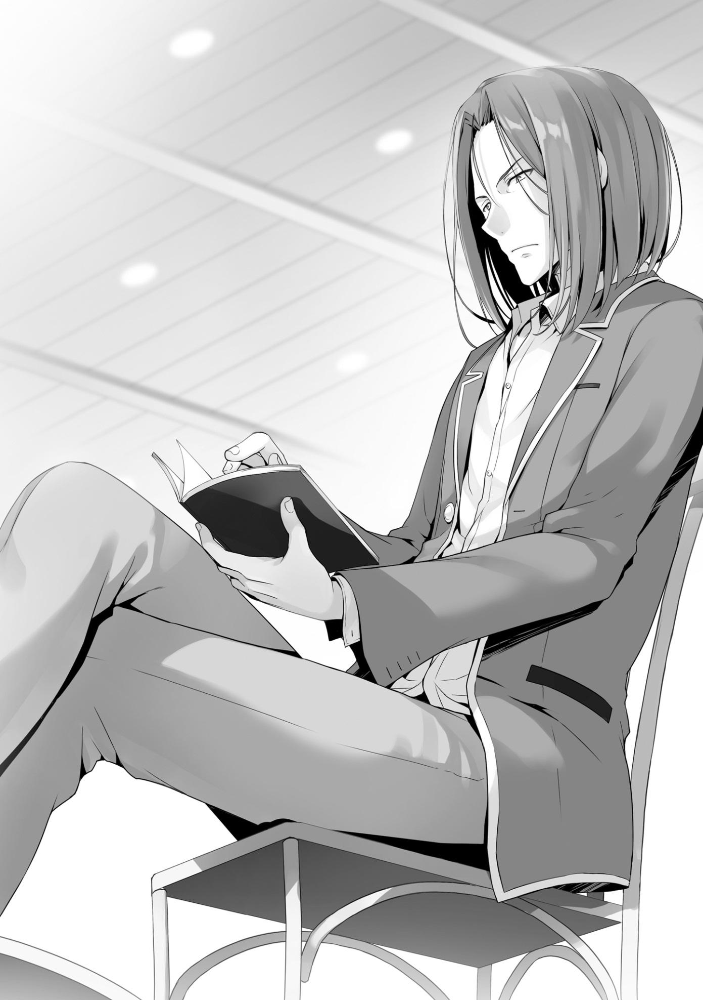
—Estás tremendamente tranquilo, Ryuuen-kun.
—Me preguntaba quién era, pero sólo es Suzune y su pequeño y descerebrado seguidor.
De repente cerró el libro, el sello en la tapa indicando que había sido tomado de la biblioteca.
No era necesario decirlo, pero el "pequeño y descerebrado seguidor" del que hablaba, por supuesto, era yo. Solo me miró un instante antes de apartar su mirada y mirar a Horikita.
—¿Y qué clase de asuntos tienes conmigo?
Tenía curiosidad de saber por qué Horikita estaba corriendo el riesgo de intentar contactar con Ryuuen.
—Seré directa. Este nuevo examen especial. ¿Qué vas a hacer?
—No es que tenga muchas opciones. No voy a hacer nada.
—En otras palabras.... ¿estás diciendo que te has resignado obedientemente a no continuar en la escuela?
Si las cosas se mantienen como están, la expulsión de Ryuuen será inevitable.
—Soy un buen objetivo para todos. En un examen como este en el que hay que expulsar a alguien, nadie quiere atraer el resentimiento del pobre tonto que es expulsado, pero en mi caso, así no es como funciona.
Habiendo discernido que la conversación no valía la pena, Ryuuen reabrió su libro y continuó leyendo.
—Los votos de desaprobación serán para ti. Aunque muchos estudiantes se sientan culpables, la carga mental para todos será mucho menor de lo que sería si votaran por otra persona.
Ryuuen parecía estar considerando seriamente la idea de dejar la escuela.
—Si de verdad quieres dejar la escuela, no diré una palabra. No, no sólo yo. Probablemente hay muchas personas en las clases B y A que también
quieren que desaparezcas. Para bien o para mal, fuiste demasiado lejos.
Nadie está dispuesto a ayudarte.
Describió la realidad de la situación.
En algunos casos, palabras como estas serían un golpe poderoso, incluso para alguien que ya entendió la situación.
Pero, no significan nada para Ryuuen.
Ya había entendido todo por su cuenta y lo había aceptado.
—Probablemente sea cierto. La clase D no tiene ninguna posibilidad después de que me vaya. Como estudiantes de otra clase, sería lo mejor y más apropiado que me aplastasen aquí.
En lugar de hacerlo girar de una manera negativa, lo hizo de una manera positiva.
—Es una evaluación demasiado grande de ti mismo. Qué típico de ti. Pero incluso con toda esa confianza, has caído a la Clase D por tu falta de capacidad como líder, ¿no?
—Kuku. Desde luego.
La clase D pudo avanzar bajo la dictadura de Ryuuen Ahora que se ha derrumbado y han caído hasta el fondo, están perdiendo la oportunidad de volver a levantarse.
Sin embargo, el plan de Ryuuen nunca tuvo nada que ver con la clasificación de la clase. Tanto si eres de clase A como de clase D, siempre y cuando tengas puntos privados, podrás convertir la derrota en victoria. Por eso, incluso frente a las críticas por ser el de menor rango, no tenía necesidad de agitarse.
La clase A puede ser la clase superior, pero la superioridad en sí misma no tiene valor.
La estrategia de Ryuuen se centraba en el futuro. Era una forma interesante de luchar, pero había muchas deficiencias. Usó la fuerza para mantener su posición, y no buscó la comprensión de sus compañeros. Miró demasiado lejos y no pudo
ver lo que estaba pasando a su alrededor. Estas fueron las razones que influyeron en su derrota y lo llevaron a su situación actual.
—Parece que nunca seremos capaces de entendernos.
—Eso parece. ¿Satisfecha?
Aunque estuve escuchando la conversación de Horikita todo el tiempo, todavía no entendía lo que quería saber de él.....
—Hoy podría ser la última vez que podamos hablar, ¿así que está bien si te hago una sola pregunta?
Parecía que estaba llegando al meollo del asunto.
¿Era esta la pregunta que llevaría a Horikita a la información que estaba buscando?
—Estás en una situación más desesperada que nadie en este momento. Si te esfuerzas de verdad en afrontar este examen... ¿serías capaz de sobrevivir y evitar la expulsión?
Ella lo miró con agudeza, retándolo a que la mirara a los ojos y le respondiera.
Esta fue la razón por la que Horikita estaba hablando con Ryuuen, a pesar de que no tenía ninguna razón para preocuparse por él.
Quería preguntarle a Ryuuen cómo podría superar el resultado casi seguro de ser expulsado de la escuela.
—Qué pregunta tan estúpida. Por supuesto que podría.
Ryuuen respondió sin dudarlo. Tenía la convicción de que, mientras quisiera sobrevivir, podría hacerlo.
La mirada que tenía en sus ojos no tenía ni una pizca de inseguridad.
—Eso es lo que esperaría de ti, aunque estés mintiendo. No siento nada más que confianza de tu parte.
—¿Finalmente estás satisfecha? ¿O quieres escuchar mi plan secreto para sobrevivir al examen?
—No hay necesidad. No estoy en la misma posición que tú.
—Claro.
—Gracias. Siento que podré fortalecer mi determinación un poco más gracias a ti.
—¿Tu determinación?
Horikita asintió, dejándose en claro.
—Definitivamente habrá expulsiones por este examen suplementario. Es un destino inevitable. Por lo tanto, es necesario que nosotros determinemos correctamente la persona más adecuada a remover.
¿Entiendes el peso detrás de lo que estoy diciendo?
—Tu lucha puede llevarte a ser excluida por el resto de tu clase.
Ryuuen sonrió mientras respondía, sin darle a su pregunta una respuesta clara.
—Si así es como termina, entonces esa sería toda la extensión de mis capacidades.
—Qué patética. ¿Así que todo fue sólo una farsa?
—¡…!
Aunque Horikita estuvo hablando tranquilamente con Ryuuen, este último vio a través de su tranquila fachada.
No, en lugar de ver a través de ella, fue más bien como si la hubiera roto él mismo.
—Estás buscando confianza en ti misma al hablar conmigo, pero tu determinación no vale nada —Las palabras de Ryuuen poco a poco avivaron el fuego dentro de Horikita—. Elegir a quién expulsar es la única parte remotamente difícil de todo esto.
—... Yo puedo hacer eso. Nunca he tenido piedad de nadie que haya retrasado a mi clase, desde que me inscribí aquí.
—No, no puedes.
—Tú.... ¿qué podrías entender de mí?
—He tenido mucho tiempo para vigilarte el año pasado, así que te entiendo lo suficiente. Poniéndolo de una manera que hasta tú puedas entender, puedo ver la debilidad que tratas de mantener oculta.
Horikita no tenía ninguna posibilidad de ganar este enfrentamiento verbal.
Su imprecisa y a la vez vaga respuesta de “podré fortalecer mi determinación un poco más”.
Ese momento de vacilación antes de que ella dijera: “Yo puedo hacer eso”.
Ryuuen pudo notar instantáneamente estos pequeños detalles que otras personas normalmente no podrían.
Horikita le estaba mostrando su debilidad sin siquiera saberlo.
Su conversación estaba completamente bajo el control de Ryuuen
—Tu clase ya te ha hecho ser complaciente. No hay forma de que seas tan implacable como para tomar una decisión en este momento. Tendrías que haber evitado apegarte a tu clase desde el principio como yo, o tratar a tus compañeros como piezas de ajedrez como Sakayanagi.
Tu clase se siente muy diferente después de hacer muchas conexiones cercanas con tus compañeros.
Cuando Horikita se inscribió aquí por primera vez, siempre actuó sin dudarlo.
Estaba totalmente dispuesta a abandonar Sudou después de que él reprobara su examen. Pero si le preguntaras si podría o no abandonarlo ahora, probablemente sería imposible para ella. Su relación con sus compañeros de clase ha cambiado constantemente.
—Suenas como si lo tuvieras todo planeado, pero realmente no tienes una forma de salvarte, ¿verdad?
—¿Y por qué piensas eso?
—¿Realmente perdiste con un compañero, o fue hecho por alguien fuera de tu clase...? —Horikita me miró durante una fracción de segundo antes
de mirar inmediatamente hacia Ryuuen—. Cualquiera que sea, ¿vas a aceptar en silencio tu condición de perdedor y abandonar la escuela?
Horikita le arrojó estas palabras a la cara como una provocación.
Sin embargo, Ryuuen aceptó todo sin pestañear.
—Es la recompensa de Ishizaki como el que me derrotó, así que planeo sentarme y aceptarlo. Es una oportunidad que tú y el resto de la clase D no deben perderse.
Ryuuen dejó ver una sonrisa mientras hablaba y una vez más volvió a prestar atención a su libro.
—...Oh, ¿en serio? Entonces, tendré que estar atenta y asegurarme de que mis compañeros de clase nunca, nunca desperdicien sus votos de aprobación en ti. Por supuesto, aunque no lo haga, no hay forma de que voten por ti.
Horikita se alejó y la seguí inmediatamente. La atención de Ryuuen estaba concentrada en su libro cuando nos fuimos.
Horikita habló mientras caminábamos, su voz a la vez totalmente calmada y llena de ira.
—Ese tipo es la encarnación física de un mentiroso. No es que no esté luchando para seguir inscrito, sólo se está dando aires. Pero no importa.
No importa cuánto se esfuerce, está condenado a abandonar la escuela.
—Quién sabe. Puede que tenga algún tipo de plan.
—Imposible. No hay manera de que Ryuuen-kun impida su expulsión, no importa cómo se mire. Aunque se disculpara ante su clase y empezara a ser un ser humano decente por primera vez, eso no cambiaría el número de votos que obtendría.
—Sí. No hay forma de que pueda lograrlo con una estrategia como esa.
—No tendría sentido que tratara de amenazar o sobornar a la gente tampoco. Ustedes también decían lo mismo antes, ¿verdad?
Ella tenía razón en eso. Debe haber estado escuchando nuestra conversación.
—¿O tal vez ya has pensado en algo? ¿Una forma de que Ryuuen-kun evite la expulsión?
—No, para nada.
Había tratado de pensar en una solución por un tiempo, pero dada su situación, todavía no podía pensar en nada que pudiera salvarlo de manera confiable.
Todavía me falta una pieza esencial del rompecabezas.
—Entonces eso es todo lo que hay que hacer.
Horikita dejó el café en el mismo estado de ánimo frustrado con el que entró.
Me di la vuelta brevemente, echando un vistazo a Ryuuen Me imaginé cómo habría sido si Ryuuen y yo nos hubiéramos conocido antes....
—No, es una quimera sin sentido. Al menos, por el momento.
No había razón para pensar en un estudiante que estaba a punto de desaparecer.
Dejé de pensar en ello y decidí volver con el Grupo Ayanokouji.
PARTE 2
Esa noche, recibí una llamada de Kei.
En su mayor parte, tenía que ver con el examen especial.
—Entonces, en este examen. ¿Qué debo hacer?
—Ya empezaste a formar un grupo a tu alrededor, ¿verdad?
—Bueno, más o menos. Hay siete chicas en mi grupo.
Enumeró los nombres de las chicas aparte de ella.
Todas eran chicas con las que Kei se llevaba bien.
—Al final, todo el mundo tiene miedo de ser expulsado. Si soy sincera contigo... no estoy segura de cuánta gente me odia.
—No sería tan extraño si obtuvieras unos cuantos votos de desaprobación.
—¿No deberías decirme lo contrario, aunque tengas que mentir?
Kei me contestó con enojo desde el otro extremo del teléfono.
—Por ahora, el mejor curso de acción es actuar en silencio para no llamar demasiado la atención. Es posible que te conviertas en candidata a la expulsión si te destacas negativamente.
—Lo entiendo. Me aseguraré de no hacer nada estúpido.
—Bien. Además, el hecho de que ya hayas roto con Hirata puede ser ventajoso para ti.
—¿Eh?
—Hirata es muy popular entre las chicas. Si aún estuvieran juntos....
quizás algunas de ellas podrían haber planeado usar la expulsión para separarlos por la fuerza.
—Eep, eso es espeluznante. Aunque es completamente posible...
Otros estudiantes pueden hacer algo impulsivo simplemente por el anonimato del voto.
—... Deberías estar bien, ¿verdad? No te destacas porque te mantienes en las sombras, y tus notas también son normales.
A los ojos de la mayoría de la clase, no debería haber nada por lo que aprobarme o desaprobarme.
—Mantener un perfil bajo puede tener sus ventajas.
—Pero es posible que consigas un voto de desaprobación de Sudou-kun,
¿no? Como, para deshacerse de un rival que quiere a Horikita-san.
Aunque, bueno, sólo es lo que él piensa.
—Tal vez.
Debido a que no había otra opción que votar por tres personas, probablemente todos obtendrían un par de votos de desaprobación. Aunque, no sería suficiente para que valiera la pena preocuparse.
—De toda la clase, diría que los tres idiotas y Kouenji-kun son todos un poco desagradables, ¿no?
Parece que el grupo de amigas de Kei llegó a una conclusión similar a la del grupo Ayanokouji
—Son las mejores opciones, pero aún no sabemos qué pasará. Dicho esto, Kouenji no se encuentra en una buena posición en este momento.
—No es el tipo de persona que forma grupos y coordina votos, ¿verdad?
—Sí.
Ike, Yamauchi y Sudou obviamente formarán un grupo pequeño para ayudarse.
Kouenji, por otro lado, está indefenso y solo. También tiene una tendencia a hacer enemigos gracias a esa actitud arrogante suya.
Además, el mismo día en que se anunció el examen, tuvo una tensa discusión con Sudou delante de toda la clase.
—Entonces, ¿qué vas a hacer? ¿Con quién piensas usar tus votos de desaprobación?
—Todavía no lo he pensado, pero planeo elegir gente que no espero que sea útil para que la clase avance.
—Qué sensato de tu parte. Pero ese es tu estilo, ¿no?
Viendo que alguien inevitablemente tenía que ser expulsado de la escuela, esta era la única manera de tomar mi decisión.
—¿Ah? Imposible, pero... no estás hablando de gente como yo, ¿verdad?
—Eres importante para la clase. No hay forma de que haga eso.
¿E-En serio? Bueno, por supuesto.
Su reacción de sorpresa sonó un poco avergonzada.
—Si la clase toma una decisión con respecto a los estudiantes de los que deben deshacerse, es decir, si te das cuenta de que han tomado una decisión sobre quiénes serán exactamente con los que usarán sus votos de desaprobación, házmelo saber. Es difícil para mí conseguir ese tipo de información.
—Okay~
Terminé la llamada con Kei.
Aunque le dije que elegiría a gente que no esperaba que fuera útil para avanzar, esa era sólo mi opinión personal sobre el asunto.
Como no estaba involucrado activamente en la clase, no tenía ninguna intención de involucrarme profundamente en la manipulación de los votos.
Por consiguiente, tenía la intención de aceptar sin reservas el resultado de la clase, sin importar qué grupos se enfrentaran entre sí. Por supuesto, si me atacan, esa sería una historia totalmente diferente.
De todos modos, tal y como Kei mencionó antes, la posibilidad de que Ike, Yamauchi o Sudou sean expulsados es muy alta. Kouenji también. Además, en cuanto a las chicas, las que tienen malas notas como Inogashira, Satou y Airi probablemente tampoco estén a salvo. Sin embargo, en el futuro, los grupos comenzarán a tomar forma gradualmente. Un gran número de votos se moverán por razones completamente ajenas a la capacidad académica. Personas aisladas como Kouenji y personas tímidas como Airi que no tienen muchos amigos también se convertirían en objetivos fáciles.
—No sé qué pasará a continuación.
Sólo puedo recopilar información para prepararme para cualquier acontecimiento inesperado y vigilar la tendencia de la votación.
LAS DIFICULTADES DE LA SALVACIÓN
Revisé mi teléfono cuando me desperté a la mañana siguiente.
Y, por supuesto, el chat grupal del grupo Ayanokouji se incrementó mucho mientras dormía.
Ni siquiera había pasado un día entero desde que Chabashira-sensei aninció el examen suplementario, por lo que era comprensible que estuviera en el centro de su discusión.
—En verdad son impulsados por su ansiedad, ¿no?
La preocupación de Airi era particularmente obvia dada la forma en que había escrito sus mensajes.
Las cosas se complicarían si alguien de nuestro grupo se convertía en un objetivo. No estaba seguro de cuánto me iba a involucrar, y también era cierto que era una situación difícil de contrarrestar. Aunque mi intención era hacer los arreglos necesarios para Hirata y Kei, no había garantías.
Aunque se amenace a alguien y se le obligue a llegar a un acuerdo, existe la posibilidad de que cambie su voto en el último minuto. Simplemente no hay forma segura de evitar la expulsión si eres el blanco de un gran número de votos de desaprobación.
En cualquier caso, todo el mundo tenía que sufrir al menos una cierta cantidad de riesgo.
Mientras me desplazaba por los mensajes, había una interesante propuesta de Keisei. Empecé a leer desde allí.
Keisei: [¿Qué les parece si uno de nosotros va a la escuela temprano durante los próximos tres días para recopilar información?]
Akito: [Ya que somos un grupo tan pequeño, sería una buena idea. Estoy contigo].
Haruka: [Esa podría ser una buena jugada. Tengo curiosidad por saber qué tipo de cosas dirán otros grupos].
Airi: [Yo también estoy de acuerdo.]
Haruka: [Lo haré mañana ya que saldré temprano.]
Todos llegaron unánimemente a un acuerdo. Hablaron de esperar para escuchar mi opinión sobre el asunto, pero como por lo general tardaba un poco en revisar mi teléfono, al final decidieron seguir adelante con ello y ver qué pensaba más tarde.
—Ya veo.
Aunque no creía que la información cayera en nuestras manos tan fácilmente, era mejor que no hacer nada.
Como estrategia, no sólo era simple, sino que los resultados potenciales también valían la pena.
Como toda la conversación había ocurrido anoche, Haruka probablemente ya estaba en el aula.
Dada la fluidez de su conversación, parecía que los demás asumirían el papel de ir a la escuela temprano durante los otros dos días, así que sin duda estaría bien aunque yo no hiciera nada.
La votación tendrá lugar en tres días. En otras palabras, los detalles sobre en quiénes íbamos a centrar nuestros votos de desaprobación tendrían que estar listos para hoy a más tardar. Por el momento, sería una suerte si el grupo Ayanokouji pudiera obtener información valiosa por las mañanas, como planeó Keisei.
Por el momento, mientras esperaba la respuesta de Kei sobre las chicas de la clase, pensé en buscar información sobre los chicos de Horikita, que reinaba sobre Sudou, o de Hirata.
Después de todo, es importante conocer la información lo antes posible.
PARTE 1
Sentía que finalmente me estaba acostumbrando a mi vida cotidiana aquí.
Sin darme cuenta, había pasado casi un año completo desde que empecé a vivir en los dormitorios.
—Se siente como si el tiempo ya no pasara como antes.
El paso del tiempo se siente diferente dependiendo de lo mucho que estés disfrutando.
Honestamente, cuando me enteré por primera vez de este fenómeno, no entendí muy bien su significado.
Antes de empezar la preparatoria, cada segundo de mi vida se sentía exactamente igual. Pero ahora, era diferente.
Obviamente, los días seguían pasando a la misma velocidad de siempre.
Quedaban aún dos años para la graduación.
Pero era extraño. Cuanto más lo pensaba, más sentía que el día de la graduación llegaría en un abrir y cerrar de ojos.
—¡Buenos días, Ayanokouji-kun~!
Escuché a Ichinose llamarme por la espalda tan pronto como salí. Debe ser porque los dos nos íbamos a la escuela a la misma hora todas las mañanas.
Miré detrás de mí y le respondí.
—Ah. Buenos días, Ichinose.
Por extraño que parezca, tan pronto como la llamé, Ichinose se quedó rígida.
—¿Hmm?
Estaba perfectamente quieta, congelada con la mano en alto.
—¿Qué pasa?
Mi pregunta pareció sacarla del trance en el que se encontraba mientras caminaba. Aunque, sus movimientos eran todavía un poco rígidos en algunos aspectos.
—Vaya, uhh.... hace bastante frío hoy otra vez, ¿eh?
—Supongo que sí.
Nuestra respiración era visible en el aire mientras hablábamos.
—¿Planeabas caminar a la escuela con alguien?
—En absoluto. Suelo estar solo por las mañanas.
—Bueno, entonces... ¿te importa si me uno a ti?
Es probable que no haya ni un solo estudiante capaz de rechazarla cuando lo pide así.
Respondí asintiendo con la cabeza.
—…
—……
Cuando los dos terminábamos solos en el pasado, Ichinose solía ser la que empezaba la conversación. Esta vez, sin embargo, el único sonido que rompía el silencio entre nosotros era el de nuestros pasos mientras Ichinose caminaba a corta distancia detrás de mí.
Así que decidí preguntarle sobre el examen.
—Este próximo examen especial debe ser muy difícil para ti y tu clase, ¿no?
En comparación con las otras clases, la Clase B tenía un trabajo en equipo abrumadoramente sólido y un fuerte sentido de camaradería en general.
Estar obligados a decidir a qué estudiante expulsar será muy doloroso para todos ellos.
—Ah, bueno... Sí, creo que este examen es el más difícil que hemos tenido por mucho.
—Probablemente.
Podía decir lo mismo basándome sólo en su nublada expresión.
Ichinose, como líder de su clase, era la única que estaba absolutamente a salvo.
Comparada con Hirata o Kushida, se encontraba en una situación completamente diferente. Parecía ser la única estudiante con garantía de aprobar el examen.
Y es por eso que tener que eliminar a alguien de la clase es una decisión tan dolorosa para ella.
Es mejor que se quede al margen y no se involucre en la votación para nada. De esa manera, sería menos estresante para ella.
Podría ser posible que Ichinose hiciera algo así, pero...
—Ante un examen tan espantoso... no tengo más remedio que hacer algo,
¿no?
—Bueno, probablemente.
—...Sí. Debo hacer algo.
Caminaba a mi lado mientras decía esto.
De costado, pude ver una sonrisa en su rostro.
—¿Estás... pensando en retirarte tú misma, Ichinose?
—¿Eh? Claro que no. Definitivamente no dije nada de eso.
Lo negó, pero la mirada en sus ojos daba otra impresión.
Que estaba totalmente preparada para tomar esa decisión si lo necesitaba.
—Para que conste, tus compañeros no estarían dispuestos a votar por ti muy fácilmente.
—Te dije que nunca dije nada sobre que me expulsen. Pero, si realmente lo piensas, entonces supongo que probablemente tengas razón en eso.
—El hecho de que lo has considerado está escrito en tu cara.
—¿D-De verdad?
Ichinose rápidamente trató de confirmarlo.
¿Fue natural o lo hizo a propósito?
Parecía ser lo primero esta vez.
—Haa.... Mantenlo en secreto para todos, ¿de acuerdo?
—¿Estás dispuesta a sacrificarte por el bien de alguien más?
—No exactamente. Siento que tengo que luchar y asumir la responsabilidad del riesgo yo sola.
“Asumir la responsabilidad del riesgo yo sola”, ¿eh?
En otras palabras, no tenía intención de tomar la salida fácil observando pasivamente desde fuera.
—No lo entiendo. ¿Es esta tu manera de rendir homenaje al compañero que sea expulsado?
Aunque significaría más viniendo de Ichinose que de alguien más, aun así no sería algo que ellos quisieran.
De cualquier manera, simplemente no podía imaginarme a ese estudiante dejando la escuela con una sonrisa en la cara.
—No hay mucho más que pueda decirte. No es algo que me gustaría que otros oyeran. Además, estás en la clase C. No importa qué tipo de examen sea, hay veces en las que simplemente no podemos colaborar.
—Eso es muy cierto.
En todo caso, lo máximo que pudimos discutir entre nosotros fue sobre los votos de aprobación.
Si fueras capaz de conseguir el voto de Ichinose, estarías en una posición de partida algo favorable para el resto del examen.
Sea como sea, Ichinose no es una estudiante que necesite votos de aprobación.
Aun así, no se limitaría a entregar su voto a cambio de puntos privados. Así que ni siquiera intenté mencionarlo.
Y aunque, por si acaso, comprara su voto, al final no sería más que un amuleto de la suerte.
—De todos modos, la escuela es horrible, ¿no? Con lo de hacer que alguien deje la escuela y todo eso. Aunque consigas los votos de aprobación de los chicos de las otras clases, alguien tiene que irse al final.
No todo el mundo acogía con satisfacción este examen, sobre todo porque forzaban las expulsiones justo cuando el primer año estaba llegando a su fin.
—¿Estarás bien, Ayanokouji-kun?
—Bueno, es difícil de decir... no soy un estudiante muy importante en mi clase.
—Entonces, si estás de acuerdo con ello, tal vez pueda hacer algo.
—¿Qué quieres decir?
—Ya que tengo un voto de aprobación que puedo usar en alguien de otra clase, podría usarlo en ti.
Planteó un tema que yo había decidido intencionadamente no mencionar unos momentos antes.
—Aunque, es sólo un voto, así que puede que no valga mucho....
—Agradezco tu oferta, pero debo rechazarla. Tu voto se desperdiciaría en alguien como yo.
—¡Eso no es para nada cierto! Más bien, honestamente creo que sería el voto más justificado en todo el examen. Se supone que es para alguien digno de admiración en otra clase. Sí, no puedo pensar en nadie más digno que tú, como el que me salvó.
Sus palabras fueron extremadamente difíciles de responder.
—Ya veo. Bueno, entonces, si surge algo, me pondré en contacto contigo.
—Fantástico. Lo recordaré.
Con eso, Ichinose muestra una sonrisa.
—Buenos días, Honami.
Escuché a alguien llamar a Ichinose desde atrás.
—Buenos días, Asahina-senpai.
—¿No estás muy animada hoy? Por cierto, ustedes dos están en clases diferentes, ¿no? Entonces deben estar en buenos términos, ¿verdad?
—Err, sí. Es un buen amigo...
Ichinose parecía un poco avergonzada con su respuesta.
—¿Oh~? Un buen amigo, ¿eh?
Habría causado menos malentendidos si ella no hubiera respondido así.
—Bueno, lo que sea. De todos modos, me gustaría pedir prestado Ayanokouji-kun por un momento, ¿está bien?
Asahina se nos acercó, esperando que Ichinose se marchara para poder hablar conmigo a solas.
—Entiendo. Bueno, entonces, Ayanokouji-kun, seguiré adelante.
Sin signos particulares de descontento, Ichinose inclinó la cabeza, cumpliendo la petición de Asahina.
—Lo siento, Honami. Nos vemos.
—¡Oh, no! Por favor, discúlpenme.
No sentí nada raro en su corta conversación.
En vez de eso, parecía que las dos compartían una relación senpai-kouhai como es debido.
—Es una niña muy buena, ¿no? Linda. Inteligente. Ni siquiera en el segundo año, nadie tiene nada malo que decir sobre ella.
—Eso es cierto. También Ichinose parece muy popular entre casi todo el mundo en el primer año.
—¿Podría ser que te hayas ganado su afecto?
Al parecer, el comportamiento algo extraño de Ichinose no pasó desapercibido.
—Imposible.
Independientemente de Ichinose, quería que mi tiempo con Asahina fuera lo más corto posible.
Despertaría sospechas si fuéramos vistos por uno de los subordinados de Nagumo. Si realmente tiene algo que decir, entonces lo mejor es que lo haga rápido.
—Si tienes asuntos conmigo, te escucharé.
—Qué aburrido. Bueno, no importa. Los vi a los dos actuando amigablemente, así que quería decirte algo —Asahina estuvo sonriendo alegremente durante un tiempo, pero esa sonrisa desapareció rápidamente—. He escuchado un poco sobre el examen de primer año.
Alguien tiene que dejar la escuela, ¿no?
—Eso parece.
La noticia ya había llegado a los estudiantes de segundo año.
—Honami se preocupa mucho por sus amigos, o cómo decirlo... Sabes que ella no es el tipo de persona que se sentaría y dejaría que expulsen a alguien de la clase B, ¿verdad?
—Eso es verdad. Creo que a todo el mundo le interesa saber dónde va a terminar la clase B, aunque nadie hable de ello.
Mi respuesta fue un poco sosa, pero logró transmitir mis pensamientos con suficiente facilidad.
—Entonces, ¿cómo crees que Honami afrontará el examen?
Asahina me miró con ojos curiosos.
En lugar de sentir curiosidad por mi respuesta, era más bien como si estuviera tratando de sonsacarme una respuesta en particular.
En cuyo caso, darle una respuesta indirecta podría ser contraproducente.
—Asumiendo que ella planee prevenir la expulsión... La clase B tiene una cantidad considerable de puntos privados ahorrados. Así que de alguna manera sólo tendría que compensar el resto de los puntos que necesita y evitar que la expulsión ocurra. Algo así, ¿verdad?
—Bingo. Bueno, esa es la única conclusión lógica.
Si estuvieras trabajando bajo el supuesto de que ella trata de evitar la expulsión, cualquiera habría llegado a la misma conclusión.
Lo difícil era que no había mucha gente que pudiera hacerlo.
Lograr reunir de alguna manera 20 millones de puntos privados era sumamente difícil.
—Parece que ha ido a pedirle ayuda a Miyabi. ¿Puedes adivinar cómo respondió?
—¿Él accedió inmediatamente?
—...Bingo otra vez.
Basado en el curso de los acontecimientos hasta ahora, simplemente no había ninguna otra posibilidad.
—Te lo preguntaré sólo para asegurarme, pero no hay forma de que le presten suficientes puntos privados sin ninguna condición, ¿verdad?
A pesar de que la Clase B poseía un gran número de puntos privados, todavía les faltaba una cantidad considerable.
Varios cientos de miles de puntos aún no serían suficientes.
—Por supuesto que no la hay. Claro, sería una historia diferente si sólo estuviéramos hablando de unos pocos miles de puntos. En ese caso, habría mucho espacio para discutir. ¿Pero una vez que llega a los cien mil o a los millones? Nadie va a regalar tanto —Contestó Asahina sin dudarlo—. Los estudiantes de tercer y segundo año tienen que estar bien preparados para los exámenes especiales que nos esperan. Que necesitemos o no nuestros propios puntos privados no nos quedará claro hasta el final, así que no debería haber espacio para la caridad sólo por un par de estudiantes de primer año.
Debe de tener razón.
Esta fue también la razón por la que Chabashira-sensei habló de ello tan pasivamente.
Aunque consiguieras algunos puntos privados de los alumnos mayores, sería casi imposible para ellos entregar una cantidad importante. Podrías endulzar el trato ofreciéndote a devolverlo con intereses, pero eso no significaría nada para los de tercer año que están tan cerca de graduarse. Además, incluso si logras conseguir un préstamo de un estudiante de segundo año, sigue pareciendo imposible conseguir un número tan grande de puntos.
—Si hay alguien capaz de satisfacer estas expectativas, el presidente Nagumo es el único que me viene a la mente.
— Al fin y al cabo, ha ahorrado muchos puntos.
—Entonces, ¿qué pasó?
Le pregunté esto, pero basándome en el flujo de la conversación, la respuesta ya estaba clara como el día.
Aún así, dado que Ichinose parecía dudar sobre algo, probablemente había condiciones vinculadas a la colaboración de Nagumo.
—No estés tan ansioso. Estoy en la misma clase que el tipo, por lo que tengo mis dudas de que vaya a prestar un número tan grande de puntos a una kouhai. Honami es una chica tan linda, ¿verdad? No hay absolutamente ninguna manera de que sea expulsada a causa de este examen, ¿cierto?
—Supongo que sí. Parece que la estrategia es evitar que expulsen a uno de sus compañeros.
—Personalmente, no me gusta que ella haga este tipo de trato con él. Por supuesto, es en parte por el bien de mi propia clase, pero.... más que eso, supongo que lo siento por ella.
—¿Las condiciones que ha establecido son demasiado duras? ¿como una tasa de interés obscenamente alta?
—Ese tipo.... La condición que puso para prestarle los puntos... es que los dos entren en una relación.
—Entiendo.
Considerando todo lo que Nagumo ha hecho hasta ahora, esto definitivamente se ve como algo que él haría.
Una relación a cambio de un préstamo de puntos privados.
En términos generales, esta condición era todo menos normal. No sería extraño que lo rechazaran inmediatamente. Pero, si era por el bien de proteger a su clase, había una posibilidad de que Ichinose estuviera de acuerdo con ello, y Nagumo también lo entendía.
—¿Está bien? ¿que me cuentes todo esto?
—Ya te lo he dicho. Es por mi clase. Si Miyabi presta todos esos puntos privados a una estudiante de primer año, el resto de nosotros podemos sufrir como resultado. Además, a cambio de proteger a sus amigos, Honami tendrá que pasar por algo doloroso.
—Tal vez sí, pero ¿por qué me lo dices a mí? Estoy en la clase C.
Tenemos una relación hostil con Ichinose.
—No lo sé. Pero, si eres tú, probablemente serás capaz de hacer algo al respecto de una manera u otra.
—Me estás sobreestimando. No hay forma de que pueda costear la falta de puntos de la clase B.
Sería otra cosa si fuera posible conseguir suficientes puntos sin depender de Nagumo, pero eso tampoco funcionaría.
—Oh, ¿en serio? Bueno, ustedes dos son rivales...
Ayudar en forma activa a una clase rival sería demasiado tonto cuando deberíamos estar agradecidos por la pérdida de una amenaza potencial. En primer lugar, se necesitarían varios millones de puntos, por lo que todos en la clase C tendrían que unirse para ayudar. Sería absolutamente imposible.
—No puedo hacer nada al respecto.
—Está bien. Aunque no hagas nada, no te lo echaré en cara. De todas formas, es sólo un deseo de mi parte. Dicho esto, aunque digas que no puedes, pienso que podrías arriesgarte de todos modos.
Después de darme una palmada en la espalda, Asahina empezó a irse.
—En fin, te he dicho todo lo que necesitas saber. ¡Te dejaré el resto a ti!
Con eso, Asahina corrió hacia la escuela sin decir una palabra más.
Basado en su comportamiento y su forma de hablar, no parecía estar mintiendo.
—Hacer un trato con Nagumo, ¿eh?
No era muy apropiado para ella, pero parece que esta es la estrategia de Ichinose.
Si realmente lo hace, podrá evitar la pérdida de uno de sus compañeros de clase.
Era una forma de luchar a su disposición sólo por la unión de su clase y la enorme suma de puntos que acumularon juntos. Pero por la forma en que hablaba Asahina, parecía que el requisito de una relación era un gran obstáculo para Ichinose. Después de todo, si la condición de Nagumo no le pesaba mucho,
sería más seguro pedir prestados los puntos privados antes de que Nagumo pudiera cambiar de opinión.
Bueno, es difícil tomar una decisión rápida cuando se trata de una relación de pareja con alguien del sexo opuesto.
Estaría bien si se tratara simplemente de una cuestión de cooperación, pero no había absolutamente nada que pudiera hacer sobre tantos puntos privados.
Probablemente, la Clase B estaba corta por unos cuatro o cinco millones de puntos, lo que excedía con mucho el alcance de algo en lo que podía ayudar.
Sería más rentable cortar la relación con tus compañeros de clase, pero ¿cómo sopesaría Ichinose las opciones si pusiera la condición de Nagumo en la balanza....?
—Dada su personalidad...
¿Cómo saldrían las cosas en el futuro? No era muy difícil de imaginar.
PARTE 2
El examen especial era un tema difícil de tratar en clase.
Había una atmósfera tan mala en el aula que se sentía como si se pudiera alcanzar y sentir la tensión en el aire.
—Buenos días, Kiyopon.
—Buenos días.
Intercambié saludos con Haruka mientras me sentaba en mi asiento.
No podía sentir ningún entusiasmo por las expresiones de los estudiantes que ya habían llegado al aula.
La idea de ser blanco de los votos de desaprobación se interponía entre las relaciones de clase normales, haciéndolas imposibles de mantener. Esto continuaría hasta el final del examen especial.
Y probablemente continuaría por un tiempo después de eso.
[El ambiente del aula es súper sombrío, ¿no?]
Haruka me envió un mensaje de texto.
[¿Algo inusual?]
[Nada todavía. Por supuesto, todos están en guardia, ¿no?]
En el aula, era imposible saber cuándo alguien podía estar escuchando.
Nadie se atreverá a dar nombres específicos sobre a quién pretenden votar.
[Entonces, aquí está la esperanza de tener mejor suerte mañana.]
[Sí.]
Después de este breve intercambio, guardé mi teléfono.
Sin sobresalir ni causar problemas a la clase, simplemente nos sentábamos y esperábamos a que pasara la tormenta.
Si tan sólo nuestros compañeros de clase nos permitieran tener una salida fácil de esto.
PARTE 3
Cuando llegó la hora del almuerzo, me dirigí a la biblioteca.
No es que estuviera insatisfecho con pasar el tiempo junto al Grupo Ayanokouji; es sólo que sentía que era importante que pasáramos algún tiempo separados de vez en cuando. Además, en la biblioteca, había una estudiante en particular que amaba los libros tanto como yo.
Por supuesto, Shiina Hiyori también vino hoy a la biblioteca. Casualmente escogí un libro de los estantes, y poco después de sentarme y hojearlo un poco para decidir si quería tomarlo prestado o no, alguien habló.
—Buenas tardes, Ayanokouji-kun.
Recién llegada la hora del almuerzo, sólo había unas pocas personas en la biblioteca, así que notó mi presencia inmediatamente.
Estaba sosteniendo en su mano un libro que era de un género similar al mío.
—Parece que eres tan ratón de biblioteca como siempre.
—Bueno, la biblioteca es un lugar maravilloso.
Después de pedir suavemente permiso, Hiyori se sentó en el asiento a mi lado.
Juntos, los dos leímos en silencio nuestros libros.
Los estudiantes con un amor natural por la biblioteca no tenían necesidad de una conversación excesiva.
Se podría decir que el acto de leer un libro era, en sí mismo, una forma de conversación.
Así de fácil, leemos nuestros libros sin decir una palabra hasta justo antes del final del almuerzo.
Pasó alrededor de media hora antes de que yo hablara.
—Ya es hora de que volvamos.
—Eso parece.
Después de mirar el reloj para comprobar la hora, decidí no irme todavía.
—Por cierto, Hiyori. Hay algo que me gustaría preguntarte.
—¿Qué pasa?
Insegura de lo que quería preguntar, levantó curiosamente la vista de su libro.
—Se trata de la situación actual de Ryuuen.
—La situación de Ryuuen-kun, ¿verdad...? Para ser honesta, no es muy buena.
—Así que es la mejor opción para la expulsión.
—Sí. Casi todos en la clase han accedido a emitir un voto de desaprobación por él.
—¿El propio Ryuuen también lo ha aceptado?
—Creo sí. De hecho, ha visitado la biblioteca después de la escuela últimamente y he podido conversar un poco con él, así que estoy bastante segura de ello.
El libro que estaba leyendo cuando lo vi en el café antes fue tomado de la biblioteca.
Me hizo pensar que seguramente había estado en contacto con Hiyori, lo cual, después de venir aquí, me pareció correcto.
—¿Qué piensas de todo esto, Hiyori?
—Es una pena, pero no podemos evitar la expulsión. Por lo tanto, estoy dispuesta a aceptar el hecho de que vamos a perder a alguien, incluso a mí. Aunque, si la clase D realmente quiere llegar a la cima otra vez... He comenzado a pensar que podríamos necesitar Ryuuen-kun...
Es probable que tenga algunas dudas sobre Ryuuen, pero reconoce sus verdaderas capacidades.
Hablando de eso, no recuerdo que Ryuuen haya tratado a Hiyori con dureza antes.
—Siento haberte preguntado. Sólo estaba interesado en el estado actual de la clase-Me interrumpí, quedé sin palabras.
—No... supongo que no quiero que Ryuuen sea expulsado de la escuela.
No necesitaba venir hasta aquí hoy.
Sin embargo, quería saber qué estaba pasando con Ryuuen, así que terminé viniendo de todos modos.
—Es mejor tener tantos amigos como puedas, ¿no?
—...Sí.
Me pareció un poco extraño de alguna manera. No se suponía que fuéramos más que enemigos.
—Uhm...
—¿Hm?
—Mmm... no creo que alguien como yo deba decir esto, pero...
Aunque parecía un poco difícil de decir, Hiyori continuó.
—Ayanokouji-kun, por favor no dejes la escuela, ¿de acuerdo...? Con todo lo que ha pasado, no quiero que mi querido amigo también desaparezca.
—Haré lo mejor que pueda.
Acepté con gratitud las preocupaciones de Hiyori mientras nos separábamos y regresábamos a nuestras respectivas aulas.
PARTE 4
El mal ambiente persistió incluso después de que terminaron las clases.
Le importara o no, mi vecina Horikita empezó a preparar sus pertenencias en silencio, como siempre.
Era difícil afrontar un examen como éste tú solo. Normalmente, uno querría pensar en hacer tantos aliados como fuera posible, pero Horikita no mostraba ninguna intención de hacer algo así.
Para decirlo con optimismo, Sudou era la única persona garantizada de emitir su voto de aprobación por Horikita.
Dicho esto....
Recordé la confrontación de Horikita con Ryuuen el otro día.
Reflexionar sobre lo que ella quería ganar de él y lo que le faltaba como persona me permitió entender su estrategia para avanzar.
Parecía como si tuviera la intención de manejar este examen de una manera diferente a la de todos los demás, pero ese no era un camino fácil de tomar.
Sin embargo, si realmente pudiera lograrlo, sería un deseo hecho realidad en lo que a mí respecta. Podría tratar a su estrategia y a la mía como la misma cosa, y hacer que Horikita asumiera la responsabilidad de todo ello.
Me giré y miré por toda la clase, imaginando cómo Horikita veía a nuestros compañeros.
—Es raro que no hayas intentado pedirme consejo todavía. ¿Estás bien con el examen?
Aunque sólo había pasado un día, decidí confirmar si Horikita había cambiado o no.
—Aunque te pidiera consejo, no me darías una respuesta directa.
—Por supuesto.
Horikita empezaba a comprender poco a poco que yo no le daría consejos tan fácilmente.
—Además.... Este no es exactamente el tipo de examen en el que puedes ir y pedir ayuda a tus compañeros.
—Muchos de los demás estudiantes han formado grupos para conseguir votos de aprobación.
—Si la gente quiere hacer eso, entonces son perfectamente libres de hacerlo.
Horikita terminó de recoger sus cosas y se levantó de su asiento.
—Entonces, ¿qué vas a hacer?
—Lo que pueda.
Con estas palabras, Horikita abandonó el aula.
Como tenía un poco de curiosidad, decidí seguirla.
—¿Qué pasa?
Me miró con el ceño fruncido, disgustada porque la seguí.
—Estoy un poco interesado en lo que vas a hacer.
—Normalmente no te gusta involucrarte conmigo, así que ¿por qué ahora?
¿Por qué, eh?
En pocas palabras, era porque deseaba conocer la estrategia que había decidido.
Si realmente la ponía en acción, quería apoyarla completamente.
Dicho esto, no tenía intención de decirle eso aquí.
—Aún no te has unido a un grupo, ¿verdad? Si estás en apuros, puedo ayudarte.
—¿Es así como es? Más o menos, estás preocupado por mi situación, ¿no?
Si te pidiera ayuda, ¿me dejarías unirme al grupo del que eres parte?
—No sería molesto para nosotros acoger a otra persona.
—Aunque aprecio la oferta, debo rechazarla. No eres la persona que estoy buscando ahora mismo.
Al parecer, ya se ha decidido.
Sin embargo, sus recursos son limitados y todavía se encuentra en un punto en el que se siente impulsada por su ansiedad.
Probablemente yo no sea la persona adecuada para compensar esas deficiencias.
—Tú realmente...
Me frunció el ceño con más intensidad que antes.
—¿Qué?
—Sólo déjame en paz.
Habló con dureza, deteniéndome en seco.
Si continúo siguiendo a Horikita, solo serviría para enfurecerla más.
Después de verla marchar, miré por un momento por la ventana del pasillo, contemplando la vista.
—Supongo que me iré a casa por hoy.
—...¿Podría molestarte un momento, Ayanokouji-kun?
Como si sólo estuviera pasando, Hirata apareció. Me hizo preguntarme si él también me había seguido.
A juzgar por el momento, seguramente esperaba a que Horikita y yo nos separáramos.
—Si te parece bien, ¿podrías venir conmigo un rato después de la escuela?
Necesito hablar contigo.
Era una rara invitación de Hirata, una que no tenía ninguna razón en particular para rechazar.
Mientras yo le respondía con un gesto de asentimiento, Hirata suspiró aliviado.
Después de pasar un día entero inmerso en la atmósfera tensa del aula, parecía ser el estudiante más agotado de la clase.
Por supuesto, podía deducir que esto estaba relacionado en gran medida con el examen especial.
—Muy bien, ¿qué tal si nos encontramos cerca de la entrada sur del centro comercial Keyaki a las cuatro y media?
—Claro.
Eso fue todo lo que nos dijimos.
No me pareció que fuera algo de lo que pudiéramos hablar aquí.
Después de todo, los estudiantes que se dirigían a las actividades de club y volvían a casa caminaban constantemente a nuestro lado.
Había planeado reunirme con Keisei y los demás después de la escuela hoy, así que tuve que decirles que iba a llegar un poco tarde. Hirata estaba muy ocupado hablando con sus amigos por ahora, así que decidí ir al Centro Comercial Keyaki antes que él.
PARTE 5
Después de salir del aula, me dirigí inmediatamente hacia la entrada principal de la escuela.
En el camino, me encontré con Sakayanagi Arisu de la Clase A. Podía ver a Kamuro de pie junto a ella.
—Ayanokouji....
En guardia, el cuerpo de Kamuro se endureció.
Sin embargo, como siempre, Sakayanagi no mostró ningún cambio. Se mantuvo serena, con movimientos relajados y tranquilos.
Las reacciones contrastantes entre las dos fueron un poco interesantes.
—Qué coincidencia. Ayanokouji-kun.
—En efecto. ¿Hay algo que necesites con la clase C?
Las dos parecían dirigirse hacia la clase C.
Sin embargo, en lugar de responderme, Sakayanagi ignoró mi pregunta con una sonrisa mientras me hacía una a mí.
—¿Adónde vas ahora?
—Tengo planes de encontrarme con un amigo en el Centro Comercial Keyaki en media hora.
—¿Es eso cierto? Es como si vivieras tu vida al máximo. Si no te importa,
¿podrías dedicarme un poco de tu tiempo?
Sakayanagi sacó su teléfono y verificó la hora.
¿Vino por aquí sólo para encontrarse conmigo? No, eso es difícil de imaginar.
Sólo son las cuatro y diez minutos.
Aunque se demorara varios minutos en llegar al Centro Comercial Keyaki, aún quedaban más de diez minutos hasta las 4:30.
—¿Te parece bien estar de pie mientras hablamos?
—Sí. Aunque llamaremos la atención si hablamos aquí. ¿Qué tal si nos movemos a otro lugar?
—Está bien.
También quería evitar destacar tanto como fuera posible.
Habría sido distinto si fuera con una compañera de clase, pero Sakayanagi era el tipo de persona que llamaba la atención tanto si quería como si no.
Como ella misma era consciente de eso, empezamos a movernos a un lugar menos concurrido.
Igualando el lento paso de Sakayanagi, el tiempo pasó mientras nos movíamos por el edificio.
—En cualquier caso... Ayanokouji-kun, Masumi-san. ¿No creen que este examen suplementario es demasiado irracional? Han decidido forzarnos la expulsión sólo porque nadie ha sido expulsado todavía. Preparar un examen como este.... Pensándolo racionalmente, es ridículo.
—Totalmente. Mashima-sensei suele ser bastante tranquilo, pero incluso él ha estado dando una especie de sensación agitada últimamente.
Parecía que los otros profesores tampoco estaban satisfechos con el examen suplementario.
Sakayanagi y Kamuro continuaron hablando.
—Hay una razón para eso.
—¿Qué, sabes algo?
—Es un asunto personal del que estoy un poco avergonzada, pero mi padre fue suspendido de su puesto hace unos días.
—Suspendido.... Tu padre... Si no me equivoco, es el presidente de la junta, ¿verdad?
Sabiendo ya lo del padre de Sakayanagi, Kamuro presionó para obtener más información.
—No he oído hablar de ello en detalle, pero parece que han surgido bastantes cosas desfavorables con respecto a Padre. El padre que conozco no es el tipo de persona que se ensucia las manos con esas cosas. Por supuesto, no puedo descartar la posibilidad de que yo, como su hija, simplemente no lo supiera, pero... también es cierto que alguien pudo planear todo esto para forzar a Padre a abandonar su puesto.
En la superficie, estas palabras fueron pronunciadas para Kamuro, pero en realidad, eran para mí. Si el padre de Sakayanagi fuera realmente inocente, no sería sorprendente que 'ese hombre' tuviera algo que ver en todo esto.
La impresión que tenía del padre de Sakayanagi puede no haber sido un malentendido.
—Dicho eso, es algo que no tiene nada que ver con estudiantes como nosotros. No es más que una simple charla.
Sakayanagi no veía la suspensión forzada de su padre como algo a lo que valiera la pena prestarle atención.
—Aun así, ¿qué tiene que ver eso con el examen?
—¿No crees que es posible que la escuela haya preparado el examen apresuradamente... con el fin de forzar la expulsión de alguien?
—Alguien....
Kamuro me miró durante un instante antes de volver inmediatamente su mirada a Sakayanagi.
—He intentado que no me moleste hasta ahora, pero tú... ¿Por qué has estado vigilando Ayanokouji?
Preguntó Kamuro mientras caminaba junto a Sakayanagi.
—¿Oh? Has intentado que no te moleste hasta ahora, ¿verdad?
—... Por supuesto que sí.
Kamuro negó las implicaciones de Sakayanagi, pero la mirada en la cara de Sakayanagi parecía entenderlo todo.
Sin embargo, en vez de seguir presionando, volvió a la pregunta de Kamuro.
—Simplemente lo conozco de hace mucho tiempo. ¿No es esta respuesta lo suficientemente aceptable?
Contrastando con la preocupación de Kamuro, Sakayanagi contestó con indiferencia.
Considerando el hecho de que no le había dicho nada a Kamuro antes, fue una respuesta bastante reveladora.
También es posible que estuviera tratando de medir mi reacción. Si yo reaccionara mal o interrumpiera descuidadamente su conversación, entonces podría terminar siendo expuesto como una debilidad.
Bueno, en realidad, no me importaba.
—Entonces, ¿están diciendo que ustedes dos se reencontraron aquí por casualidad? Es una posibilidad muy remota.
—Sí. La posibilidad es muy remota. Verdad, ¿Ayanokouji-kun?
—Tal vez sí.
Aunque nunca la había conocido antes de venir aquí, técnicamente no había nada incorrecto en lo que decía.
En ese entonces, nuestro conocimiento del otro era definitivamente de un solo lado.
—Entonces, ¿es realmente una persona difícil de manejar? Lo siento, pero no lo veo en absoluto.
Igual que Sakayanagi había hecho antes, Kamuro fue directo al grano.
En cierto sentido, quizás las dos eran realmente similares.
—Últimamente te has vuelto muy curiosa, ¿no? Hasta ahora, no creo que me hayas hecho este tipo de preguntas.
Parecía como si las pocas veces que había hecho contacto directo con Kamuro le hubieran dado algunas ideas.
Quizás esto también había despertado algún tipo de curiosidad incontrolable en Sakayanagi.
—Puedes preguntarle a cualquiera y ellos pensarán lo mismo. Nunca has estado tan obsesionada con alguien así antes.
—Me pareciste una persona particularmente indiferente a la que no le gustaba interferir en los asuntos de otras personas. Por eso no tenía reservas en pedirte que le echaras un ojo a Ayanokouji-kun, pero... no tienes remedio, ¿verdad?
Sakayanagi sonó un poco sorprendida, aunque también un poco encantada en algunos aspectos.
Creí que solo decía esto para ver mi reacción, pero quizás estaba haciendo estas preguntas mezquinas porque estaba interesada en las respuestas de Kamuro.
Mientras hablaban, llegamos a nuestro destino.
—Nadie nos molestará si hablamos aquí.
Llegamos al edificio especial. Sin duda era tranquilo, dado que se habían acabado las clases.
—Bueno, Masumi-san. Me disculpo, pero por favor, vuelve a los dormitorios sin mí.
Sakayanagi hizo que Kamuro caminara hasta aquí simplemente porque quería una compañera para conversar.
—... Como sea.
Sakayanagi finalmente decidió enviar a Kamuro de vuelta a casa sin hablar demasiado de mí.
Kamuro se giró y bajó la escalera sin oponer resistencia, haciendo que me preguntara si ella sabía desde el principio que esto iba a acabar así.
—¿Estuvo bien?
—Sí. ¿No te hubiera molestado que revelara algo?
—No particularmente.
Si muestro algún signo de debilidad, le daré la oportunidad de aprovecharlo.
Además, no había necesidad de dar a Sakayanagi ninguna información adicional.
—Veo que me han reconocido como tu enemigo. Supongo que estoy dispuesto a aceptarlo por el momento.
Mi respuesta y el razonamiento detrás de ella fueron tan obvios que Sakayanagi entendió el significado de mis palabras sin ningún problema.
—Yendo tan lejos como para dejar que Kamuro regrese sin ti, ¿de qué quieres hablarme?
Pasamos mucho tiempo viniendo aquí, así que no quedaba mucho hasta que me reuniera con Hirata.
Le pedí que fuera al grano.
—Es sobre la promesa que nos hicimos.
—Acepté enfrentarme a ti en el próximo examen especial. Es decir, este examen.
—Sí, ese era indudablemente el plan. Sin embargo.... si te parece bien, me gustaría aplazarlo hasta la próxima vez. Este examen suplementario no es una competencia entre las clases. Más bien, es un proceso de selección para que evaluemos a nuestros compañeros. La única manera de influir en las otras clases es con votos de aprobación, y no podemos atacarnos aunque queramos... ¿No estaría bien si posponemos nuestro duelo hasta la próxima vez?
En otras palabras, estaba aquí para decirme que este examen especial no cuenta, ya que no era un escenario adecuado para nuestra competencia.
—¿Estás dispuesto a aceptar esta propuesta?
—Toma la decisión que quieras.
Como le había dado la respuesta que estaba buscando, Sakayanagi expresó respetuosamente su gratitud.
—Muchas gracias. Me preguntaba qué tendría que hacer si no estabas de acuerdo. Ahora, seré libre de centrar mi atención en la política interna de la clase A. Aunque...
—¿Aunque?
—Como hemos acordado un alto el fuego, supongo que te diré algo para ganarme tu confianza. Para este examen, no haré nada que te ponga en desventaja. Es decir, no les daré ningún voto de desaprobación.
Dio su palabra, restringiendo sus acciones futuras.
—En el improbable caso de que interfiera con la Clase C y de alguna manera impacte negativamente sus resultados... no me importaría aceptar mi derrota. Sería perfectamente aceptable que te negaras a tener un combate conmigo en el próximo examen.
—Si mis compañeros concentran sus votos de desaprobación en mí, no habrá una próxima vez.
Entonces me expulsarían. Fin de la historia.
—Sin duda tienes razón en eso. De cualquier manera, por favor, ten un poco de tranquilidad. Eso es todo lo que intento decir.
Sus palabras eran más que corteses, pero supongo que estos eran los pasos que necesitaba seguir para ganarse mi confianza.
—Tal vez tus subordinados te traicionen antes de que pueda ocurrir nuestro combate.
—Fufu, eres muy gracioso.
Casi todos los estudiantes de la clase A formaban parte de la facción Sakayanagi.
Estaba convencida de que la clase no se atrevería a intentar eliminar a su líder.
—Ya había decidido quién sería expulsado tan pronto como se anunció el examen.
—¿Decidiste desde el principio quién sería removido? Suena como la decisión correcta.
Sakayanagi pudo tomar esta decisión precisamente porque estaba en lo más alto de su clase.
—Entonces, ¿cuándo planeas decirle a tu clase quién es?
—Ya se lo dije a todos hace mucho tiempo. Si hubiera esperado hasta el último minuto para informarles, habría causado ansiedad. Haciéndolo saber con anticipación, es más fácil para el resto de la clase, ¿no crees?
Sería insoportable para el estudiante que está programado para ser expulsado de la escuela.
Sin embargo, el resto de la clase podría evitar caer en el caos.
—¿Sabes a quién he elegido, si puedo preguntar?
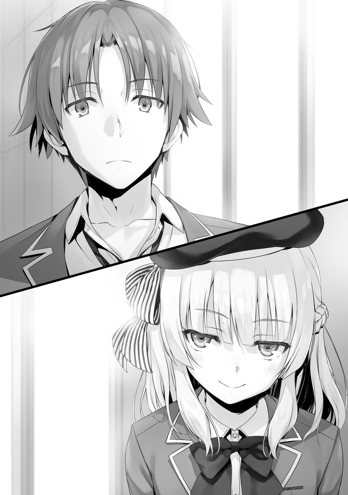
—Quién sabe. No tengo la menor idea.
A pesar de haber dicho lo contrario, tuve una idea bastante buena.
—Katsuragi Kouhei-kun.
—¿Una elección razonable?
—Es el antiguo líder de la clase A que se opuso a mí a principios de año.
No hay necesidad de que dos personas estén en lo más alto de la misma clase.
Katsuragi es una persona tranquila y serena.
Lo más probable es que comprendiera que él sería el chivo expiatorio en el momento en que escuchó los detalles del examen.
Parecía haber aceptado su destino sin resistencia.
Aún había algunos estudiantes que continuaban siguiendo a Katsuragi como Yahiko, pero eran superados en número.
—Sé que lo has visto como un enemigo desde el principio, pero tenía la impresión de que había dejado de intentar liderar la clase.
Incluso en la Clase A, Katsuragi ocupaba un lugar destacado en términos de excelencia general.
Sentí que sería una pena perderlo, pero al parecer Sakayanagi pensaba diferente.
—Entre mis amigos, muchos ya lo odian. Sencillamente no pueden estar de acuerdo con su forma de pensar conservadora. Siendo ese el caso, puedo levantar la moral mostrándole la puerta.
Por lo visto, estaba haciendo un trueque entre perder poder de combate y aumentar la moral de la clase en su conjunto.
—¿Está bien que me digas esto? ¿Sobre quién es tu objetivo?
—No es como si fueras a hacer algo detrás de escena para protegerlo,
¿verdad, Ayanokouji-kun?
No me parece que vaya a obtener ningún resultado que haga que valga la pena el esfuerzo.
—¿Qué planeas hacer con la clase C?
—Quién sabe. No participaré en ella. Tengo la intención de dejar la toma de decisiones a mis compañeros de clase.
—Cuando se trata de eso.... es tan simple como quitar uno de los molestos, o incluso uno de los incompetentes —Sakayanagi parecía estar disfrutando mientras pensaba en ello—. No hay necesidad de pensar en lo que la clase D pretende hacer. Claramente se van a deshacer de Ryuuen-kun.
No tenía ninguna objeción para ella.
En el caso de la Clase A, no había ventajas particulares en echar una mano a Ryuuen
Lo más probable es que la Clase A quisiera verlo expulsado, aunque eso significara renunciar a la oportunidad de deshacerse del contrato vinculante que había firmado con Katsuragi.
—Aunque no tengo ni idea de lo que hará la clase B. Durante todo este examen, deseo ver quien es el expulsado de esa clase tan íntima. Aunque,
¿tal vez Ichinose-san ha encontrado algo interesante?
—Lo siento. Ya es hora de que me vaya.
Era libre de tener todos los delirios que quisiera. Es sólo que prefiero que lo haga ella sola.
—Tienes razón. Por el momento, podemos dejar nuestra conversación aquí. Después de todo, el próximo examen especial empieza la semana que viene.
El distintivo ruido de su bastón golpeando el piso resonó por todo el pasillo.
Por una fracción de segundo, la mirada de Sakayanagi se dirigió a las cámaras de vigilancia instaladas cerca del techo.
El movimiento fue tan sutil que no lo habría notado si no la hubiera estado observando de cerca.
No pude determinar si fue intencional o sólo una mirada casual y al azar a otra parte.
—Pues bien, nuestro duelo se decidirá en el examen especial final del año, tal y como lo habíamos previsto en un principio. Es una promesa.
Respondí con un pequeño asentimiento con la cabeza antes de salir del edificio especial.
PARTE 6
No había muchas tiendas que fueran lo suficientemente buenas para reunirse después de clases.
Normalmente, la gente se reunía en el café del Centro Comercial Keyaki, pero hoy era diferente.
—Gracias por venir hoy.
—No es gran cosa, Hirata. Yo también quería hablar contigo.
—Me alegra oír eso. De todos modos, ¿qué tal si caminamos un rato?
Después de reunirnos en la entrada sur, Hirata hizo una rápida revisión de los alrededores antes de empezar a caminar.
—Lo siento Ayanokouji-kun. ¿Te importa si cambio un poco nuestros planes?
—¿Cómo es eso?
—¿Es un problema si mejor hablamos en mi habitación? Creo que me sentiría mejor si lo hiciéramos.
—No me importa en absoluto.
—Gracias por entenderlo.
Por lo que parecía, el centro comercial no era un buen lugar para lo que quería hablar.
No quería que nadie escuchara nuestra conversación.
Hirata inició una pequeña charla mientras caminábamos hacia los dormitorios.
—Nuestro primer año ya casi ha terminado. ¿Cómo te fue en el tuyo, Ayanokouji-kun?
Soltó un suspiro mientras miraba hacia el cielo.
—Entre ser enviado a la isla deshabitada y ser forzado a participar en el campo de entrenamiento, fue un año agotador.
—Sí. Definitivamente fue duro, pero aún así me divertí. Desde que me inscribí aquí, siento que he sido capaz de construir con éxito relaciones de confianza con la gente que me rodea.
—Sí, yo también lo creo.
No lo negué. Todavía había mucha gente en la clase que se odiaban entre sí.
Sin embargo, supongo que el enemigo de un enemigo es un amigo. A lo largo de todo el proceso de ser obligados a trabajar juntos, los vínculos habían comenzado a tomar forma gradualmente.
—Honestamente.... Nunca hubo problemas hasta que empezó este examen.
Una sombra se cernió sobre la sonriente cara de Hirata.
—¿Es eso de lo que quieres hablar?
—Sí. Lo siento.... soy muy consciente de que no quieres hablar de ello.
No me involucraría activamente, sin importar el tipo de examen especial que fuera.
Durante los exámenes anteriores, Horikita siempre ignoró mis sentimientos y me pidió ayuda.
Curiosamente, fue precisamente lo contrario para este examen.
Horikita no acudió a mí en busca de ayuda, mientras que Hirata sí.
Era como si Horikita fuera cada vez más madura en estos días.
Tal vez se dio cuenta de que yo no iba a ayudar, ya que la frecuencia de sus peticiones también se iba agotando, poco a poco.
—Este examen... no se me ocurre una solución. No importa cuántas veces lo piense, no se me ocurre nada.
—No importa cuántas veces...
Mirando de cerca, pude ver círculos oscuros bajo los ojos de Hirata.
Entonces me pregunté si había pensado en el examen toda la noche, incapaz de dormir lo suficiente.
—Suena difícil. En un examen como éste, cuanto más piensas en tus compañeros, más difícil es.
—¿Eh...?
—No importa, no te preocupes.
Si digo algo descuidado, Hirata se hundirá aún más en la oscuridad.
Por ahora, lo mejor es dejarlo en paz.
—Si... si hay una manera de salvar a la clase, por favor, dímelo.
Debido a mi respuesta, de alguna manera se había hecho una idea equivocada, pensando que yo tenía una respuesta para él.
—¿Realmente crees que es imposible ahorrar 20 millones de puntos privados?
—He intentado hacer los cálculos, pero no es posible conseguir tantos puntos. Ayer, traté de hablar de ello con mis superiores en el club de fútbol, pero todos están esperando los exámenes especiales a los que se enfrentarán después de esto.
—¿Entonces no pudieron darnos ningún punto?
—Sí...
Al final del día, el número de métodos disponibles para evitar perder a alguien es muy limitado.
—Lo siento, no puedo pensar en otra cosa. Definitivamente te lo diré si lo hago.
—¿Es así...? Bueno, gracias.
Fue la mejor respuesta que pude darle en este momento.
Tratando de sonreír con todas sus fuerzas, Hirata me dio las gracias.
Este examen especial era muy fácil, pero también muy difícil.
Si cambias un poco tu punto de vista, la verdadera meta de este examen se vuelve increíblemente clara.
Pero Hirata no podía verlo.
Esto sólo es un examen para que eliminemos a un estudiante innecesario.
Desde el momento en que Chabashira-sensei explicó las reglas, tanto Kouenji como yo ya habíamos determinado el objetivo final del examen.
Por supuesto, no hay forma de saber 'quién' será expulsado. Todo lo que importa es asegurarse de que no seas tú.
Sin embargo, es diferente para gente como Hirata.
Nunca podrá superar el saber quién será expulsado.
Por eso se había quedado atrapado en un laberinto, incapaz de encontrar la salida.
—Ayanokouji-kun, ¿crees que está bien que alguien sea expulsado?
—Sería bueno que nadie fuera expulsado cuando termine el examen. Pero eso es difícil en este caso.
—...Por supuesto. Tienes razón. Pero, debe haber algo-
—¿No te ha costado dormir porque ya sabes la respuesta a eso?
Hablé, interrumpiéndolo.
—Eso....
El silencio se interpuso entre nosotros al acercarnos a la entrada de los dormitorios.
Esto se debió principalmente a que pudimos ver a varios estudiantes charlando en el vestíbulo.
El verdadero problema, sin embargo, era un poco más profundo.
Nuestros ojos se encontraron con cierta persona sentada en uno de los sofás del vestíbulo.
—Bueno, bueno, bueno. Pero si son el chico Hirata y el chico Ayanokouji.
Qué coincidencia tan graaande debe ser esta.
—Hola, Kouenji-kun. ¿Esperas a alguien?
Se fijó en nuestras miradas inmediatamente después de entrar en el edificio.
—¿Estás diciendo que te preocuparía si tuviera planes de reunirme con alguien?
Kouenji respondió a la pregunta de Hirata con una pregunta suya.
—Me parecería inusual.
—No me desagrada tu honestidad, pero desafortunadamente no espero a nadie.
Aunque respondió a la pregunta, eso no explicaba lo que estaba haciendo aquí.
En general, Kouenji no era el tipo de persona que pasaba su tiempo en un lugar como este.
—Vámonos.
Hirata se dirigió al ascensor y se acercó para apretar el botón para llamarlo.
Entonces, Kouenji habló abruptamente desde detrás de nosotros.
—Bueno, será mejor que hagas todo lo posible para reunir la sabiduría necesaria para superar este examen.
—...Nunca cambias, ¿verdad, Kouenji-kun?
Preguntó Hirata, la actitud de Kouenji pesa un poco en su mente.
El dedo de Hirata se había detenido antes de presionar el botón.
—No hay razón para que cambie para un examen como este.
—¿Es eso realmente cierto?
Era raro ver a Hirata alterarse así.
Se dio la vuelta y se enfrentó a Kouenji Por supuesto, todavía no lo miraba fijamente.
Hirata siempre ha sido una persona calmada y tranquila, hasta el final.
—Dices que no hay razón para que cambies, pero honestamente, me pregunto si tú eres el que más necesita cambiar. Me preocupa que....
nuestros compañeros te pongan como ejemplo.
Esta era la forma que tenía Hirata de mostrar preocupación y hacer una amenaza.
Fueron palabras que expresaron con fuerza su deseo de cooperación.
Hirata esperaba que Kouenji tuviera algún interés, aunque fuera poco.
—Tus preocupaciones son infundadas. ¿No deberías ser tú, el líder de la clase, el que haga algo para salvarme?
Hasta el final, Kouenji no tenía intención de cambiar su postura de 'no hacer nada'.
—Hay cosas que ni siquiera yo puedo hacer. Puede que no sea capaz de estar a la altura de tus expectativas.
—Oh, definitivamente puedes.
A pesar de la falta de confianza en sí mismo de Hirata, Kouenji lo llenó de expectativas sin la menor vacilación.
Me preguntaba si estaba siendo sincero o no, pero no podía decirlo.
Levantándose del sofá, Kouenji se acercó a Hirata y le dio una palmadita en el hombro.
—Cuando termines de lamer las heridas de tu compañero, asegúrate de tirar la basura innecesaria.
En el momento en que estas palabras salieron de la boca de Kouenji, Hirata apretó firmemente el botón del ascensor.
—... Vámonos Ayanokouji-kun.
—Sí.
El tono de Hirata, que había sido amistoso hasta ese momento, contenía ahora ligeros rastros de ira.
Hay basura entre tus compañeros.
Hirata no pudo evitar sentirse irritado por lo que Kouenji implicó.
Sólo habló después de que la puerta del ascensor se cerró detrás de nosotros.
—Haa.... Lo siento. Te dejé ver algo un poco indecoroso.
—No te preocupes por eso. Las opiniones de Kouenji son problemáticas.
Hirata forzó una ligera sonrisa y bajó un poco la cabeza.
—En el fondo, sé que evitar la expulsión es algo poco realista. A pesar de todo, en algún lugar de mi interior, ya me he dado por vencido.
El ascensor llegó al piso de Hirata. Bajamos y nos dirigimos a su habitación.
—Adelante, entra.
—Perdón por molestar...
Esta es la primera vez que estoy en la habitación de Hirata. Fundamentalmente hablando, la decoración interior es sencilla, similar a la de la mía. Había un ligero y suave aroma en el aire, similar al de un ambientador.
A pesar de que era un poco claro, se estaba convirtiendo en él. Una habitación muy bien arreglada.
—Toma asiento. ¿Quieres un poco de café?
—Sí. Siento molestarte.
—No te preocupes por eso. Yo fui el que preguntó.
Esta era una experiencia relativamente nueva para mí, ya que yo solía ser el único que recibía invitados.
—Como continuación de lo que estábamos hablando hace un momento....
Habló una vez más mientras preparaba el café en la cocina.
—Me pregunto si realmente no hay manera de salvar a todos.
—No lo sé. Tal vez no puedo pensar en nada.
Di la misma respuesta que antes.
A pesar de saber que esta sería mi respuesta, Hirata todavía parecía estar buscando la salvación.
Tenía la intención de que mi respuesta lo consolara, pero parecía haber sido contraproducente.
—Si no puedes pensar en nada, dudo que alguien más pueda hacerlo.
—Me estás dando demasiado crédito.
No tenía ni idea de cuándo empezó a evaluarme tan bien.
—He sentido que eres una de las personas más confiables de la clase desde ese asunto con Karuizawa-san.
Hirata habló como si hubiera visto la verdadera naturaleza de mi corazón.
—No estoy seguro de que eso sea acertado.
Cuando el agua terminó de hervir, me dio una taza de café.
—Estoy siendo honesto. Aunque eres una persona modesta, así que seguramente lo niegues.
En este punto, no importa lo que diga, sería un desperdicio de esfuerzo.
Incluso si negara sus afirmaciones, Hirata no me creería.
Empecé a pensar en cómo sería mejor cambiar de tema, pero Hirata rápidamente continuó, anticipando mi intención de hacerlo.
—El hecho de que alguien tenga que ser expulsado durante este examen...
no puedo aceptarlo, por mucho que lo intente. No existe tal cosa como alguien a quien no le importe si un compañero se ve obligado a marcharse.
—No es que no sepa a qué te refieres, pero simplemente no tienes otra opción. Sólo tenemos hasta el fin de semana para tomar una decisión.
—Una decisión, ¿eh? Ayanokouji-kun.... ¿Crees que alguien en particular debería ser expulsado?
Me miró con ojos penetrantes.
Aunque tenían un aspecto suave, también parecían contener algo completamente distinto.
—En realidad no.
Puede que se haya interpretado como una declaración injustamente neutral, pero fueron mis pensamientos honestos sobre el asunto. A pesar de que había
algunos estudiantes en consideración, nadie quería nominar abiertamente a uno para su expulsión. Sería mejor determinar a quién expulsar con una discusión en la clase.
—No tenemos más remedio que aceptarlo, quienquiera que sea.
—Qué sensato. Comparado con alguien como yo, estás más hecho para ser el líder de la clase.
Hirata tomó la iniciativa de organizar la clase a principios de año, pero ahora sus palabras estaban llenas de una tímida incertidumbre.
Había una sola cosa específica que podía hacer para prepararse.
—¿Qué debo hacer para seguir adelante? ¿Exactamente cómo debo hacer frente a este examen?
Puede que sea un poco fuera de lugar darle consejos, pero Hirata siempre ayuda a los que le rodean.
Quería hacer algo para ayudarle....
—No quiero que te fíes de mi palabra, pero te diré lo que pienso.
—De acuerdo.
—Pongamos a un lado por un momento los pensamientos idealistas sobre
“salvar a todos”. Desde hace tiempo te has devanado los sesos, preguntándote: "¿De quién debemos deshacernos?", pero aún no has podido tomar una decisión.
Mis palabras le preocupaban un poco, pero Hirata finalmente asintió con la cabeza.
—En cuyo caso, ¿qué tal si intentas hacer lo contrario? En vez de pensar:
"¿De quién debemos deshacernos?", piensa: "¿A quién debo salvar?".
—¿A quién debo salvar...? Por supuesto que quiero salvar a todos...
—Asigna una prioridad a cada estudiante de la clase. Clasifica a todos, incluyéndote a ti, uno a la vez de mayor a menor importancia. Por supuesto,
puede haber algunos estudiantes con aproximadamente la misma importancia, pero debes tratar de hacerlo de todos modos. Puedes hacerlo simple y basarlo en quien más te agrade, o puedes basarlo en cuánto han contribuido a la clase hasta ahora.
Con la elaboración de un ranking como éste, inevitablemente habrá un estudiante en último lugar.
—Eso.... Pero...
Era una solución increíblemente sencilla.
Sin embargo, Hirata no sería capaz de hacerlo. Su corazón seguía empeñado en salvar a todos.
Pensaba que clasificar a sus compañeros de clase de esta manera sería un acto escandaloso.
—Digamos que hago un ranking. La lista que yo haga no será necesariamente la misma que la de nuestros compañeros.
Con esta excusa, siguió huyendo.
A este ritmo, el día del examen especial llegaría y él estaría completamente indefenso.
—Eso está bien. Creo que primero debes tomar tu propia decisión.
Por ahora, este era el único consejo que podía darle.
Además, cualquier decisión que tomara a partir de ese momento le correspondía tomarla a él mismo.
Agradecido, tomé un sorbo del café que me preparó.
Era de una marca diferente al café que yo suelo comprar, ya que tenía un amargor algo potente.
—Bueno, sí. Probablemente tengas razón.... Recientemente he estado consumido por el deseo de huir de todo esto.
Hirata siguió mi consejo e hizo todo lo posible por aceptarlo.
No creo que vaya a ser fácil de inmediato. La idea puede dejar un mal sabor de boca y terminar siendo rechazada por completo.
Sin embargo, hizo todo lo posible para aceptarlo con una mente abierta.
—Haa.... Muy bien. Gracias.
Hirata pronunció palabras de agradecimiento.
Por el momento, nuestra conversación pareció llegar a su fin.
—¿Puedo preguntar algo un poco insensible?
De repente, al cambiar de tema, decidí preguntar sobre algo que me causaba curiosidad.
—¿Hm? ¿Qué pasa?
—¿Alguien se te ha confesado desde que rompiste con Karuizawa?
—Bueno, esa es una pregunta inesperada. Nunca pensé que me preguntarías algo así, Ayanokouji-kun.
Había una mezcla de sorpresa y desconcierto en la cara de Hirata.
Me interesaba el potencial de los intereses amorosos de Hirata debido a mi conversación anterior con nuestra compañera de clase, Mii-chan. Antes del examen de fin de año, ella me pidió consejo porque estaba interesada en Hirata, así que tenía curiosidad por saber qué había pasado con eso. Me preguntaba si ya había tomado acción.
—Bueno, no diré quién, pero... sí, una chica se acercó a mí.
En otras palabras, las chicas ya estaban empezando a confesarse a Hirata.
Tanto si se trataba de Mii-chan como si no, no tenía intención de presionarlo más para averiguarlo.
A pesar de todo, los tipos atractivos como Hirata son realmente increíbles. Las chicas se lanzaban constantemente sobre él, aunque no haga nada. No, más bien, la popularidad de Hirata provenía de la forma en que se comporta. No holgazanea de ninguna manera.
—¿Vas a salir con esta chica?
—Por supuesto que no. No voy a salir con nadie ahora mismo.
Afirmó con decisión su postura al respecto.
—¿Hay alguien que te guste o algo así?
Podría entender lo que decía si él sólo tuviera ojos para la persona a la que su corazón estaba dedicado.
—Salir con alguien... es demasiado para mí ahora mismo. No estoy cualificado.
—Si así es para ti, entonces no debe ser más que una quimera para alguien como yo.
En primer lugar, cuando se trata de enamorarse, no hay necesidad de cualificaciones.
—No soy apto paro el amor.
Cuanto más capaz es la persona, más humilde es.
Cuanto menos capaz es la persona, más arrogante es.
Finalmente, nuestra conversación terminó sin que ninguno de los dos profundizara demasiado.
PARTE 7
—Perdón por llamarte tan tarde, Ichinose.
Esa noche, a las once y media, invité a Ichinose a mi habitación.
No hubiera sido extraño que estuviera en guardia y rechazara la oferta, pero no parecía tener ningún problema con ella.
—¡Está perfectamente bien! Aunque, es muy raro que te acerques a mí de esta manera.
—Es porque realmente quiero hablar contigo. Por el momento, si te parece bien, siéntete libre de sentarte en la cama. El suelo puede estar un poco frío.
Después de expresar su gratitud, Ichinose se sentó en la cama.
—Este.... Mi corazón late un poco rápido...
—¿Hm?
—Oh. No, no es nada. ¿Cómo es que no pudimos hablar por teléfono?
¿Por qué, eh?
Tomé una taza blanca mientras ponía a hervir un poco de agua en una tetera.
—Quería confirmar un montón de cosas contigo que son difíciles de transmitir con sólo hablar por teléfono.
—Ya veo.
—Supongo que iré al grano y te preguntaré directamente. ¿Qué vas a hacer con el examen?
—¿Quieres continuar la conversación de esta mañana? Bueno, he estado pensando mucho en cómo pasar el examen sin expulsar a nadie...
supongo.
—¿Y se te ha ocurrido algo específico?
Eché un vistazo por encima del hombro y observé cómo intentaba responder a la pregunta.
Por supuesto, era algo que había dicho por cortesía.
Los dos sabíamos que no había otra forma de hacerlo que no fuera a través de la entrega de más de veinte millones de puntos privados.
—Por desgracia, aún no... ya no queda mucho tiempo, así que me estoy poniendo un poco ansiosa.
No pude ver ninguna señal de que escondiera algo basado en sus palabras o su comportamiento. Me recordaron que, durante el examen especial del crucero, me había impresionado la inesperada cara de póquer de Ichinose.
—Pensaba que podrías ir a pedirle ayuda al presidente Nagumo.
—¿Qué clase de ayuda?
Si no están adecuadamente preparados para ello con anticipación, hacer una pregunta como ésta podría hacer que la otra persona se ponga nerviosa, pero Ichinose aún así me devolvió la pregunta como si no nada revelador se hubiera preguntado en absoluto.
Sin embargo, lo que iba a decir a continuación seguramente sería suficiente para romperle la cara de póquer.
Cuando el agua de la tetera empezó a hervir, preparé una taza de chocolate caliente y se la di.
—Gracias.
—Este examen suplementario es diferente a los que hemos tenido antes.
No se puede resolver sin que alguien sea expulsado por la fuerza, con la única excepción de ahorrar veinte millones de puntos privados. No importa cuántos puntos de la Clase B se hayan acumulado, no hay forma de que hayas alcanzado los veinte millones. Con esa suposición en mente, no tendrías otra opción que buscar ayuda de un tercero.
Los ojos de Ichinose se movieron hacia su chocolate, soltando pequeñas y constantes respiraciones para enfriarlo.
—¿Es eso verdad? Bueno, Asahina-senpai también lo sabía. Aunque, no pensé que te lo diría, Ayanokouji-kun.
Se dio cuenta de que no servía de nada tratar de ocultarlo más, e inmediatamente se percató de cómo lo sabía.
—Entonces, ¿supongo que también has escuchado de su condición para prestarme los puntos que necesitamos?
Mientras respondía con un pequeño asentimiento, una amarga sonrisa tomó forma en la cara de Ichinose.
—¿No es ridículo? ¿En muchos sentidos...?
Prestar puntos privados con la condición de entablar una relación.
Además, estaba pensando seriamente en aceptar esta condición.
Esto que quizo decir con “En muchos sentidos”.
—Nagumo-senpai más o menos me prohibió revelar algo sobre nuestro trato. Me dijo que si lo hacía, podría olvidar que alguna vez existió. Aunque, ya que Asahina-senpai es la que te lo dijo, debería estar a salvo por el momento.
—No te preocupes por eso.
—Dices eso, pero esto no tiene nada que ver contigo, ¿verdad....?
—Muy cierto.
Es un problema de la clase B y una decisión de Ichinose.
—¿Cuántos puntos más necesitas?
—Un poco más de cuatro millones.
Sólo por entrar en una relación, los cuatro millones de puntos que su clase necesitaba serían contabilizados y podrían pasar el examen sin que nadie fuera expulsado.
—Vaya condición te ha dado Nagumo.
—Sí. Normalmente sería imposible para alguien como yo pedir puntos y salir con Nagumo-senpai. En términos generales, como me está prestando los puntos, es lógico que esté en posición de pedirme algo a cambio.
Mientras escuchaba su opinión sobre el asunto, tuve una idea de lo que estaba pensando. No había manera de que permitiera que alguien fuera expulsado de la clase B. Por esa misma razón, se estaba preparando para sacrificarse.
—Es la única manera de salvar a todos los de la clase B.
—¿De verdad...?
En este momento, no hay nada que pueda decir para ayudarla.
Los puntos privados eran lo único físicamente capaz de ayudar a Ichinose ahora mismo.
Siendo realistas, cuatro millones era un número que ni siquiera yo podía adquirir, por mucho que lo intentara.
—¿Estás.... preocupado por mí?
—Lo siento si estoy siendo impertinente.
—No, en absoluto. Más bien, estoy súper feliz.
A pesar de su respuesta, su expresión aún estaba un poco nublada.
—Pero, honestamente, sigo un poco preocupada.... No habría vacilado en mi decisión si no hubiera hablado contigo.
Ichinose lentamente tomó un sorbo de su chocolate.
—...Entonces ¿qué piensas, Ayanokouji-kun?
—¿Sobre el trato con Nagumo?
—Sí. Desde tu punto de vista, ¿qué opinas de lo que intento hacer?
Los ojos de Ichinose se fijaron en los míos.
Le contesté, cargando con todo el peso de sus expectativas.
—Es un método disponible para ti y sólo para ti, que puede evitar que un compañero sea expulsado. Está disponible para ti porque te uniste al consejo estudiantil e hiciste conexiones con el presidente Nagumo. Llegar a un acuerdo con él para alcanzar los 20 millones de puntos es definitivamente una forma de hacer todo esto.
—¿No me desprecias por eso?
—No hay necesidad de menospreciarte. Aunque, para ser completamente honesto, no estoy seguro si vale la pena pagar veinte millones de puntos privados sólo para salvar a un compañero.
—...¿En serio? —Ichinose lentamente tomó otro sorbo de su chocolate—.
—Digamos, Ayanokouji-kun.
Continuó manteniendo contacto visual.
—¿Hmm?
—Ayanokouji-kun, ¿tal vez eres alguien realmente increíble?
Que me llamara alguien realmente increíble, no sabía cómo reaccionar.
Solo le había dicho exactamente lo que había oído de Asahina.
—¿Qué te lleva a creer que lo soy? Lo siento, pero no es algo de lo que esté al tanto.
—Sólo te hace aún más asombroso si eso es verdad. Después de todo, tú...
Se reservó las palabras que iba a decir.
—¿Qué pasa?
—No, nada en absoluto.
Era como si no entendiera del todo lo que quería decir.
Como si su boca se hubiera movido un paso más rápido que su cerebro.
—...¿Qué es esto?, me pregunto...
Ichinose murmuró en voz baja, haciéndose esa pregunta a sí misma. Aunque había sido un poco forzado, me alegró oírlo de ella en persona.
Pude ver que, pase lo que pase, Ichinose actuará por el bien de la Clase B.
Después de toda esta ansiedad, Ichinose tomará una decisión.
Es decir, entrar en una relación con Nagumo Miyabi.
HERMANO Y HERMANA
Era la tercera mañana después de que se anunciara el examen suplementario.
La votación debía celebrarse el sábado, pasado mañana.
En muy poco tiempo, una persona sería expulsada de cada clase.
El aire frío se filtró en mi cuerpo en el momento en que abrí la puerta del pasillo.
Después de descender al vestíbulo del primer piso en el elevador, vi a Sudou saliendo del hueco de la escalera.
— ¿Usas las escaleras?
—Más o menos. Aunque sea corto, pensé en hacer ejercicio.
Desde las actividades del club hasta el estudio, Sudou se esforzaba al máximo para llevar un estilo de vida estudiantil estándar.
De esa manera, los dos nos fuimos juntos a la escuela.
—Puede que yo sea estúpido y tenga mal caracter, pero he estado haciendo grandes mejoras recientemente. Por eso no quiero que me expulsen.
En lugar de hablar conmigo, sentí como si estuviera hablando consigo mismo.
—¿Estaría mal que te dijera que no pasa nada por estar resentido mientras puedas seguir inscrito aquí?
—No, eso suena bien. Los de voluntad fuerte son los que pasarán este examen.
—Cierto.
Después de llegar a la escuela, sentí una extraña sensación de incomodidad tan pronto como entré en el aula.
Sudou, por otro lado, fue a su asiento sin darse cuenta de nada.
El estado de ánimo había cambiado.
Yo tampoco era insensible a estas cosas.
En el momento en que entré a la clase C, noté una sensación completamente diferente en el aula en comparación con el día anterior.
La habitual y cotidiana escena en el aula se desarrollaba ante mis ojos.
Todo el mundo actuaba como si las cosas fueran totalmente normales.
El salón estaba sumergido en una charla ociosa y en una conversación amigable.
Era la encarnación física de algo que estaba fuera de lugar.
Ayer mismo, todos fueron muy cautelosos entre ellos, con la intención de vigilar a la gente que les rodeaba.
Y sin embargo, hoy, había una extraña sensación de unidad.
—Buenos días Ayanokouji-kun.
Hirata me llamó.
—Buenos días.
Después de una breve respuesta, me tomé un momento para examinar cómo Hirata estaba tomando todo esto.
—¿Hm? ¿Pasa algo malo?
Me preguntaba si no había notado nada extraño en el salón, o si fingía no hacerlo.
Hirata me miró a los ojos con la misma expresión de siempre.
—No, no es nada.
—¿En serio? Bueno, tengamos un buen día hoy también.
Hirata terminó su saludo y se dirigió a las chicas que lo estaban llamando.
La extraña sensación de que algo estaba fuera de lugar se fue desvaneciendo a medida que más y más estudiantes llegaban al aula.
La conclusión que saqué de esto fue que se formó un gran grupo para preparar el próximo examen.
Es probable que haya habido consenso en cuanto a elegir no sólo a quién proteger, sino también a quién expulsar.
Había once personas en el aula. Dejando a un lado a Hirata, si las diez restantes combinaban sus votos de desaprobación, pondrían en una posición peligrosa a quienquiera que fuera su objetivo.
De estas diez personas, había un puñado de chicos en un grupo con Ike y Yamauchi.
También había un grupo de chicas que por lo general tenían poco que ver con ellos.
Era posible que todos en el aula se hubieran unido en un gran grupo.
Aunque, curiosamente, algunas de las chicas eran miembros del grupo en el que Kei está.
Es más, todavía no había oído nada de esto de Kei.
—Buenos días.
Horikita apareció poco después.
Aunque su actitud era la misma de siempre, echó un vistazo rápido por el aula.
—...¿Qué pasó?
—¿Tú también lo sientes?
—Sí. Es un poco desagradable. Aunque, si estás interesado, ¿por qué no vas y se los preguntas tú mismo?
—Yo paso. Es mejor dejar las cosas en calma.
Al menos, no era algo que pudieras investigar descuidadamente.
[¿Sucedió algo?]
Envié un mensaje a Keisei, que había llegado a la escuela más temprano por la mañana.
[Ni idea. Pero por algún motivo siento que algo es diferente a ayer.]
Keisei no se dio cuenta de todo, pero iba por buen camino.
[Tal vez se formó un gran grupo. Nuestros compañeros están extrañamente tranquilos.]
Envié un mensaje para indicarle la dirección correcta.
Después de leerlo, Keisei miró a su alrededor y luego a mí.
[Eso es verdad, sin duda. La atmósfera sombría claramente se ha ido. Buen trabajo notándolo.]
[No tengo muchos amigos, así que soy sensible a los cambios a mi alrededor].
[Suponiendo que se haya formado un grupo de diez o más personas, probablemente han decidido por quién van a votar, ¿verdad?]
[La persona a la que atacarán estará en una situación bastante difícil.]
[Eso me hace preguntarme quién formó el grupo... ¿Estaremos bien?]
Podía sentir la ansiedad de Keisei por su mensaje.
A medida que se incrementa el número de personas en un grupo, para aumentar la influencia general, los estudiantes que no son muy cercanos a los miembros originales inevitablemente terminan uniéndose. Liderar un grupo como ese no es una tarea fácil.
Como había llegado más gente al aula, por el momento dejé de enviar mensajes a Keisei.
La continuación de esto tendría que esperar hasta el almuerzo o hasta después de clases.
PARTE 1
Hora del almuerzo. Me uní al grupo Ayanokouji para una pequeña charla.
Aunque sólo se trataba de una plática, la mayor parte de la conversación tenía que ver con el examen suplementario.
Naturalmente, el primer tema fue la atmósfera inusual en el aula esta mañana.
Como Keisei fue el que llegó temprano a la escuela hoy, comenzó con él diciéndonos que había señales de que se había formado un grupo grande.
—... Ya veo. Tienes razón, hoy se sintió más alegre que ayer.
—Pero.... Es sólo una especulación en este momento... ¿Verdad?
—Sí. No hay evidencia de que realmente se haya formado un grupo grande, y es posible que tampoco hayan elegido un objetivo específico para sus votos de desaprobación.
Al final, esta conjetura se basaba únicamente en lo que había ocurrido temprano en la mañana.
—Entonces, ¿a quién deberíamos intentar investigar primero?
—Esa es una pregunta difícil. Si elegimos a la persona equivocada, el líder del grupo podría darse cuenta de que estamos husmeando. Si eso sucede, existe el riesgo de que uno de nosotros se convierta en un objetivo también.
Keisei mencionó la única cosa que queríamos evitar a toda costa.
—Seguramente hay una razón por la que no nos invitaron.
Cuando se trata de un grupo grande, estaría bien invitar a cualquier persona que no sea el objetivo principal del grupo.
Sería ideal que 39 personas acorralaran a una sola.
Sin embargo, este resultado simplemente es ilógico.
—¿Y si... uno de nosotros es muy cercano a quienquiera que sea su objetivo? —Haruka sugirió, en voz baja, que nos miráramos
maliciosamente entre nosotros—. ...O... ¿qué pasa si uno de nosotros es el objetivo....?
—¡Detente Haruka-chan...!
Dejando a un lado el miedo de Airi, la broma de Haruka no fue exactamente para reírse.
—Es posible que se movieran para formar un grupo desde el primer día y poco a poco aumentaran el número de personas en las que pudieran confiar. Entonces, hoy, probablemente sintieron que estaba bien salir de las sombras.
La deducción de Keisei era razonable. El cambio fue bastante grande para un solo día. Con toda probabilidad, este grupo estuvo actuando desde que se anunció el examen suplementario.
—Si todavía planean aumentar su número, entonces podrían ponerse en contacto con uno de nosotros hoy.
—¿Y si tienen la intención de atacar a uno de nosotros? ¿Qué se supone que debemos hacer si nos amenazan con expulsarnos si no cooperamos con ellos y peleemos entre nosotros....?
Akito inadvertidamente hizo una de las grandes preguntas.
—¿No es super obvio? Ya hemos decidido darnos prioridad.
—¿Aunque.... te conviertas en su objetivo como resultado, Haruka?
—Eso... pero... no creo que quiera quedarme en la escuela tanto como para traicionar a mis amigos. Si hicieran algo así, probablemente me quejaría.
Un poco tímida, Haruka respondió a la pregunta de Akito.
—Lo mismo digo. Nunca traicionaría a ninguno de ustedes.
A pesar de su ansiedad, Airi asintió con seriedad.
—¿Y tú, Keisei?
Tras una breve pausa, Keisei dijo lo que sentía de verdad.
—... Coincido bastante con ustedes dos. Sin embargo, la realidad nunca es tan simple. En este examen, si realmente te atacan, probablemente no podrás evitarlo. Puede sonar mejor aceptar una expulsión en lugar de un amigo, pero... aún así sería muy doloroso.
—Eso.... Kiyopon, ¿qué te parece?
Todos se voltearon y me miraron.
Sentí que, hasta cierto punto, debía intentar unificar las ideas de todos.
—Estoy en contra de la forma en que Haruka maneja las cosas.
—¿Estás diciendo que nos traicionarías para llevarte bien con el grupo grande?
—No, cooperar con otro grupo para expulsar a un amigo está totalmente fuera de discusión. Sin embargo, sería mejor estar de acuerdo con ellos en apariencia. No creo que sea una buena idea no cooperar o hablar en contra de ellos.
Es vital evitar que sus emociones nublen su juicio en estas situaciones.
—Al pretender cooperar con ellos, podemos averiguar cuántos votos de desaprobación ya tienen y a quiénes pretenden invitar al grupo. Esta información sería importante tenerla en nuestras manos, ¿verdad?
—... Por supuesto.
Haruka, que se había enfadado, empezó a recuperar la compostura.
Si te alteras y rechazas la oferta del grupo grande, no podrás obtener mucha información.
En este momento, no tenemos forma de saber a quién están atacando.
—Aunque finjas cooperar con ellos, no es posible que sepan quién votó por quién el día de la votación, ya que es anónimo.
En otras palabras, podríamos ocultar lo que realmente ocurriría.
—Supongo que hacer las cosas a tu manera sería lo mejor para todos nosotros.
Asentí con la cabeza, en señal de conformidad.
—Además, el grupo grande ha estado expandiendo silenciosamente su influencia desde el primer día y ya tiene un número considerable de seguidores. El cerebro detrás de esto es probablemente bastante astuto a su manera. Se han manejado con mucho cuidado y, además, no han especificado nada sobre a quién van a expulsar. Parece que Hirata y Horikita tampoco se han fijado en ellos.
Horikita pudo haber tenido una idea, pero Hirata parecía no haber notado nada en absoluto.
Esperaba que Hirata se diera cuenta, pero sorprendentemente, se las ingeniaron para eludirlo, incluso en un momento tan crítico.
—Es probable que Hirata no esté siendo presionado por un grupo específico porque ve a todos desde una posición neutral. Si descuidadamente le piden apoyo, existe la posibilidad de que intente disolver el grupo.
—En cualquier caso, se podría decir que la persona detrás de todo esto realmente lo pensó todo.
—Eres increíble Kiyotaka-kun. No puedo creer que hayas sido capaz de hacer todo esto.
Airi aplaudió alegremente, como si se estuviera felicitando a sí misma.
—Eso es completamente cierto. Yo no fui el que notó el extraño estado de ánimo de esta mañana, sino Kiyotaka.
—Lo dije antes. Cuando estás solo durante mucho tiempo, te das cuenta sin querer de los pequeños detalles. Además, no hay garantía de que este grupo grande exista realmente, no es más que una suposición.
No había pruebas de si realmente existía o no. Sólo era para hacer avanzar la conversación.
—Aún así, creo que es mejor estar en guardia.
—Amigo, todo lo que hemos estado hablando ha sido un asco. ¿No podemos hablar de algo un poco más positivo?
Con un suspiro, Akito habló mientras jugaba con su teléfono.
Todos negaron con la cabeza.
—Hablar de algo positivo simplemente no es posible. La realidad es que pronto vamos a perder a un compañero de clase, así que aunque lo hiciéramos, no sería muy agradable.
Estos sentimientos de ansiedad continuarían ardiendo, sin importar cuánto planificáramos las cosas en este lugar.
—Cuando lo dices de esa manera, yo... realmente estoy muy preocupada...
—¿Sigues diciendo cosas como esa Airi? Definitivamente estarás bien.
Para que no se preocupara, Haruka levantó la voz y dio unas palmaditas a Airi en la cabeza.
—Pero...
—De entre las dos, las chicas me odian más a mí que a ti.
—Tal vez sí...
Cuando Akito asintió con la cabeza, Haruka lo miró con fiereza. Él habló para defenderse.
—¿Qué? Tú misma lo dijiste.
—Está bien que lo diga yo, pero ¿no crees que es molesto oírlo de alguien más?
—...Supongo.
Ante un argumento tan sólido, Akito cedió.
Viéndolos así, Airi parecía perder aún más confianza en sí misma.
—Haruka-chan... Eres linda... Tienes un buen sentido del humor... y eres inteligente...
—No, no, no... Por lo menos, no deberías decir eso.
Aunque Haruka estaba algo sorprendida, aún así consolaba a Airi.
—No hay necesidad de que se preocupen tanto. Hay muchos objetivos mejores entre los chicos.
Keisei también siguió con palabras de consuelo.
—Sí, los chicos son los que están en peligro, así que no hay razón para ser tan serias ahora mismo.
—En serio, comparado con las chicas... ¿No es Hirata-kun?
La pregunta de Haruka sonaba un tanto dudosa. El resto de nosotros siguió su mirada.
Por supuesto, era Hirata, caminando apático y solo.
Era el tipo de persona que siempre mantenía la cabeza en alto y nunca dejaba de sonreír.
Ahora, sin embargo, sería inexacto decir que nos daba una impresión alegre, ni siquiera como halago.
—¿Qué esperabas? Seguramente está preocupado por el examen.
—Eso parece. Como si fuera una persona totalmente diferente.
Los dos vieron con preocupación cómo Hirata desaparecía de la vista.
—Se ve tan angustiado que no tiene que preocuparse por ser expulsado.
Está colocando demasiada carga sobre sí mismo.
—Alguien va a ser expulsado. Es inevitable.
Parecía que, en algunos aspectos, miraban a Hirata con compasión en sus ojos.
Recibí un mensaje de texto mientras escuchaba su conversación.
El remitente no era alguien a quien pudiera ignorar.
—Lo siento, me piden que me reúna con alguien.
—¿Quién?
Esto pareció desestimar el interés de Haruka, mientras movía su mirada hacia mí con intriga en sus ojos.
Airi también me miró, los ojos llenos de ansiedad.
—...Horikita. Debe ser por el examen.
—Oh. Genial.
Haruka perdió todo interés después de escuchar los detalles.
Probablemente recordó la interacción de Horikita con Ryuuen no hace mucho tiempo.
Después de despedirme de ellos, me fui del café.
PARTE 2
El punto de encuentro era una zona de descanso en el camino desde y hacia la escuela, inadecuada para reunirse durante la hora del almuerzo.
A nadie le gustaba venir aquí en esta época del año, especialmente durante la primavera y el otoño.
—Siento haberte llamado hasta aquí.
—No es nada. Siento haberte hecho esperar con este clima tan espantoso.
—No te preocupes por eso.
La persona con la que me reuní era Horikita.
Sin embargo, no era la más joven Suzune, sino el mayor Manabu.
—...Saludos.
Tachibana inclinó un poco su cabeza.
A pesar de que ambos habían dejado el consejo estudiantil, Tachibana seguía al lado del mayor de los Horikita.
Sobra decir que su relación parecía ir más allá de la de un mero jefe y subordinada.
Tachibana solía ser un poco brusca conmigo, pero hoy parecía algo reservada.
Me preguntaba si se debía a que anteriormente cayó en la trampa de Nagumo y forzó a la Clase A a tomar medidas para evitar su expulsión.
—He oído que comenzó un examen especial suplementario.
—Las noticias viajan rápido. Bueno, terminará pronto.
—Algunos alumnos de primer año ya han venido a consultar el asunto con los de tercero. Aunque, probablemente no haya ninguno de nosotros que pueda ayudar de manera significativa.
—Como era de esperar, ¿no hay ningún alumno mayor dispuesto a prestar sus puntos privados?
—Sería difícil. Los mismos exámenes especiales se llevan a cabo cada año, pero en realidad es una rotación de tres años. Esto es para evitar que los estudiantes matriculados filtren la información del examen.
Era justo lo que sospechaba, aunque era bastante obvio.
—El examen especial para el tercer año se decidirá en función del número de puntos privados que tengamos. No tenemos suficiente para dejar algo para nuestros compañeros menores.
Ya veo. Esta era la razón por la que la tez de Tachibana no se veía muy bien.
Debido a su error, su clase se vio obligada a entregar más de 20 millones de puntos.
Su reacción es comprensible considerando que esos puntos habrían sido importantes para superar su examen especial.
—Lo siento mucho. Si tan sólo fuera más confiable...
Impulsada por su conciencia culpable, Tachibana bajó su cabeza hacia el mayor de los Horikita.
—Estás haciendo algo innecesario.
—Ah, sí...
La regañó. Me preguntaba cuántas veces ya se había disculpado con él.
—¿Sabes algo de tu hermana menor?
—Suzune no se acercará a mí.
—Este examen especial no tiene precedentes. Tiene que haber alguien dispuesto a aconsejarla.
En realidad, Horikita estaba desesperada. Estaba lo suficientemente claro dado su reciente contacto con Ryuuen
En lugar de sacarle algo, Ryuuen la había bloqueado por completo.
—Si ese es el caso, ¿no estaría bien que ese alguien fueras tú, Ayanokouji?
—Estás pidiendo lo imposible. Horikita y yo somos demasiado diferentes.
—Entonces, ¿estás diciendo que ella y yo somos similares?
—Al menos más que yo.
—…
Hubo un momento de silencio antes de que volviera a hablar.
—De ahora en adelante, se espera que ella tome las decisiones difíciles, quiera o no. Eres el único que puede guiarla.
—Incluso si eso es cierto, es algo que ella tendrá que decidir por su cuenta.
Él no estaba equivocado. No debería forzar a su hermana menor a tomar una decisión.
Todo tendría que ser juzgado y decidido por la propia Horikita Suzune.
—Entonces, ¿exactamente para qué me llamaste aquí?
Tener una larga y profunda conversación en este clima frío no era preferible para ninguno de nosotros.
Como no le gustaba hablar de su hermana menor, pensé en pasar a otro tema.
—Es sobre Nagumo. Quiero saber si has notado algún movimiento inusual.
—¿Es eso realmente algo de lo que teníamos que hablar en persona?
—En realidad, fui yo quien lo pidió —De una manera inesperada, descubrí la razón por la que se había organizado esta reunión—. Quiero saber por qué te han reconocido —Podía ver rastros de frustración en los ojos de Tachibana.
Cualquiera que fuera la razón, el mayor de los hermanos Horikita aceptó su petición de concertar un encuentro conmigo aquí, así que seguramente estaba interesado en ayudarla a madurar.
—¿Me han reconocido? Probablemente él nunca ha pensado en mí como algo más que irrespetuoso.
—Ya lo sé.
Escuchar una respuesta tan clara y decisiva de su parte hirió un poco mi corazón.
—Aún así.... he decidido intentar ampliar mis horizontes al menos un poco.
Puede que tengas un potencial que valga la pena reconocer que no soy capaz de ver.
—¿Cuál es tu impresión después de reunirte con Ayanokouji una vez más?
—Sinceramente, no tengo la menor idea.
—Pensé que dirías eso.
Me quedé perplejo con su conversación.
Tal vez por la extraña, aunque un tanto relajada atmósfera, el mayor de los Horikita mostró una ligera sonrisa.
—Es una pena que sólo conoceremos el verdadero valor de Ayanokouji después de que nos hayamos graduado.
—No, nada cambiará, ni siquiera después de que ustedes dos se gradúen.
—Yo también lo creo.
Tachibana también expresó sus pensamientos, estando de acuerdo conmigo.
Me llamaron a un clima tan frío sólo para esto.
Bueno, supongo que esto también era un testimonio de lo grande que era la herida que llevaba Tachibana.
Hablé de nuevo.
—Nagumo no ha mostrado ningún interés en mí debido a su obsesión contigo. Si quieres encargarte de él, más vale que lo enfrentes de frente, sólo esta vez.
Este no era el tipo de petición que debería hacer a un hombre a punto de graduarse de la clase A.
Era solo que, de una forma u otra, Nagumo seguro que haría su jugada.
No, era completamente posible que ya la haya hecho.
—...Nagumo-kun recientemente ha estado en estrecho contacto con la clase B del tercer año. Creo que les va a ofrecer todo su apoyo, como lo hizo en el campo de entrenamiento.
En aras de derrotar a su eterno rival, Nagumo puede haber ofrecido ayudar a bajar a Horikita Manabu y a su clase a la Clase B.
—Siempre hay algo más. Sólo quiero pasar el tiempo en paz.
—Si realmente quieres hacer eso, este problema con Nagumo... No puedes darte el lujo de descuidarlo así.
El Horikita mayor estaba seguro de que algo terrible iba a ocurrir el año que viene.
Después de que Horikita Manabu se marche y ya no haya nadie con quien esté obsesionado por derrotar, Nagumo empezará a actuar violentamente, haciendo lo que le plazca.
Es decir, sufriría mucho si no tomo las medidas necesarias para ese entonces.
—Haré lo que pueda.
Por el momento, le di esta respuesta.
PARTE 3
Esa noche, después de salir de la ducha, revisé mi teléfono sólo para ver que tenía varias llamadas perdidas de Kei.
Me pareció algo urgente, ya que había llamado casi cada dos minutos.
Apenas terminé de secarme el pelo, comencé a marcar su número para llamarla, pero me llamó una vez más, así que simplemente contesté.
—¿Hola?
—¡Caray, por fin contestas...!
—Pareces muy asustada.
—No, estoy aterrorizada.... Algo absolutamente terrible ha pasado, Kiyotaka.
—¿Algo terrible?
—No tengo idea de quién está detrás de esto, pero Kiyotaka... todos votarán por ti para expulsarte de la escuela.
—¿Es así?
—Eso... ¿significa que ya lo sabías?
—No, es la primera vez que escucho hablar de esto. Aunque, estaba vagamente consciente de que alguien estaba siendo atacado.
El hecho de que ese alguien fuera yo era algo que acababa de descubrir.
—¿Por qué estás tan tranquilo?"
—¿Sabes cuánta gente va a votar en mi contra?
—No lo sé exactamente.... Pero, por lo que parece, es aproximadamente la mitad de la clase. Amenazaron con que si alguien te lo decía, esa persona sería expulsada la próxima vez.
Como estaban tratando de arrinconarme, era natural que hubiera un par de amenazas.
Me preguntaba si ya habían logrado convencer a la mayoría de la clase.
Si lo hubieran hecho, incluso con los votos de aprobación del Grupo Ayanokouji y el que yo obtendría de Kei, seguirían siendo insuficientes.
—Entonces, ¿estás bien al decirme esto? Podrías terminar siendo tú misma el objetivo.
Por supuesto, eso sólo sería si anduviera por ahí contándole a todo el mundo que había escuchado hablar de esto a través de Kei.
No sabía quién estaba detrás, pero habían hecho un buen trabajo. Aunque la estrategia de aislar a alguien y forzar su expulsión era, en sí misma, simple, reunir los votos necesarios para que realmente ocurriera no lo era. Después de todo, alguien que escoge a un compañero de clase sería visto como "malvado"
por la gente que lo rodea. Si alguien con un fuerte sentido de la justicia o un amigo cercano del objetivo se enterara del plan, sería posible que la mente maestra se viera forzada a dejar la escuela. Mientras que habría resistencia cuando se trata de juzgar a un compañero de clase, habría mucha menos resistencia cuando se trata de juzgar al 'mal'. Esta fue la razón exacta por la que Haruka y Akito, que son estudiantes de lengua relativamente afilada, no tomaron la iniciativa y nombraron a alguien a expulsar durante las conversaciones de
nuestro grupo. En última instancia, todo nuestro grupo discutió a los candidatos y llegó a una decisión conjunta sobre por quién votar en el futuro.
El autor intelectual que me perseguía no temía convertirse en un objetivo él mismo.
—Vas a hacer algo, ¿verdad? Puedes hacer algo al respecto, ¿no?
—No lo sé. Es problemático si la mitad de la clase está en mi contra.
Aunque lograra reunir diez votos de aprobación, eso no significaría necesariamente que pudiera escapar de una situación tan difícil.
El grupo del cerebro, obviamente, distribuiría sus propios votos de aprobación entre sus amigos.
Me enfrentaba a un riesgo significativo de ser expulsado.
—Gracias por hacerme saber esto.
—No es nada importante, pero... en serio, ¿qué vas a hacer?
—¿Qué voy a hacer? Tendré que pensarlo un poco.
—Puede que parezcas perfecto, pero incluso tú tienes tus defectos, ¿de acuerdo? Si yo no estuviera aquí, ¿no sería muy posible que te hubieran expulsado sin que te dieras cuenta de nada?
—Es exactamente por eso que estás aquí.
—Oh. Ya veo...
Precisamente porque tenía a alguien capaz de obtener información fuera de mi alcance, pude enterarme de esta crisis de mi expulsión.
—Te contactaré de nuevo pronto.
—Entiendo.
Terminé la llamada.
Aunque quería hablar un poco sobre el 8 de marzo de la próxima semana, dejé el asunto por ahora.
Antes que nada, necesitaba averiguar por qué me estaban atacando.
—Bien, entonces...
Agarré el teléfono con fuerza y lentamente empecé a devanarme los sesos.
A quién elegir contactar en este momento influirá en gran medida en mi estrategia a futuro.
Contactar al autor intelectual o a uno de sus seguidores simplemente no era una opción.
No obstante, la situación no mejoraría en absoluto si me pongo en contacto con alguien inútil.
—...En cuyo caso.
Marqué rápidamente un número directamente de mi lista de contactos.
Decidí que, en primer lugar, debía terminar lo que tenía que hacer.
Después de un tiempo, la llamada se conectó.
—¿Qué pasa?
Contestando el teléfono con su inalterable tono de voz estaba Horikita Manabu.
—Necesito hablar contigo sobre el examen suplementario. Es bastante importante.
—Espera un momento.
Escuché el sonido del agua corriendo desde el otro extremo del teléfono y esperé unos diez segundos.
—Estaba lavando los platos. No quería que el ruido interfiriera con el altavoz.
—Perdón por interrumpirte.
—Así que, algo malo ha pasado.
El mayor de los Horikita y yo nos habíamos encontrado más temprano este día.
Seguramente entendió que algo malo pasó porque yo no había mencionado nada en ese entonces.
—Algo pasó en mi clase. Se formó un grupo grande y han decidido exactamente a quién tratarán de expulsar.
—Dado el examen, el establecimiento de un grupo grande es inevitable.
¿Quién es el objetivo?
Quizás la cara de su hermana menor le vino a la mente.
—Yo.
—No es una broma divertida.
—No estoy bromeando. Más de la mitad de mi clase ya ha accedido a votar en mi contra.
—¿Oh?
—Estoy en una situación difícil, así que pensé en consultarlo contigo.
—¿Ni siquiera tú puedes hacer nada con este examen? ¿Es eso lo que estás diciendo?
—En pocas palabras, sí.
Aunque, para ser precisos, estaba hablando con él porque estaba tratando de hacer algo.
—¿Qué quieres de mí? Cuando se trata de este examen tuyo, no creo que haya nada que pueda hacer para ayudarte.
—Bueno, sólo hay una cosa que quiero de ti.
Le propuse algo. Mi camino en el futuro dependerá de si lo acepta o no.
—...Ya veo. Así que eso es lo que quieres.
—En lo que a ti respecta, no debería ser una mala oferta. Puedes usarla como tu razón.
—Efectivamente. No habría estado de acuerdo si no fuera por eso.
—Tampoco necesitas ejercer tu autoridad como ex presidente del consejo estudiantil, ni hacer nada para ayudarme directamente.
Un estudiante capaz como el mayor de los Horikita debería poder de entender a lo que me refiero, incluso sin que yo exprese explícitamente mis intenciones.
—Seguramente ibas a usar esta estrategia sin importar si te atacaban o no.
—Sí. Había planeado ponerme en contacto contigo de todos modos. Lo habría mencionado antes, pero...
—¿No lo hiciste porque Tachibana estaba allí?
Por supuesto, sabía que ella no era el tipo de estudiante que revelaba un secreto, pero me abstuve de decir algo, por si acaso.
—“Estoy en una situación difícil”, dices. No estás en una situación difícil en absoluto.
—Eso depende de mañana. Sin tu colaboración, me habría visto obligado a cambiar de táctica, y deberías ser consciente de que no es beneficioso para mí ser el centro de atención.
—...Está bien. Actuaremos mañana.
—Me has ahorrado muchos problemas. Me pondré en contacto contigo cuando identifique a la mente maestra.
Corté la llamada con el Horikita mayor y conecté el cable de carga a mi teléfono.
—Ahora que me he quitado eso del camino....
Era una estrategia que había planeado llevar a cabo para este examen desde que se anunció por primera vez.
Una acción necesaria para remover a un estudiante innecesario.
Sin embargo, en el caso de que yo acabara siendo el objetivo, era vital que aumentara la precisión de dicha estrategia. Decidí llamar a Kushida.
—Buenas noches, Ayanokouji-kun. De alguna manera pensé que hoy me llamarías.
—Supongo que tienes una idea de la situación, ¿verdad?
—Sí. Parece que estás en apuros.
Como era de esperar, la noticia de que me había convertido en candidato a la expulsión ya había llegado a oídos de Kushida.
—Oh, no me digas que querías que te diera una pista sólo por nuestra sociedad mutua, ¿no? Si te cuento alguna información, seré el objetivo la próxima vez.
Por supuesto, esta no era su verdadera razón para no decírmelo.
—¿Quién te lo dijo? que eres el objetivo.
El interés de Kushida era averiguar quién me dijo que yo era el objetivo.
—Alguien anónimo.
—Hmph. Entonces al menos dime una cosa. ¿Qué te dijo esta persona anónima?
¿Qué dijeron, eh?
Me quedé callado porque no tenía intención de responder a esa pregunta.
—Eres muy inteligente, ¿no es así Ayanokouji-kun? Estarás pensando que debes tener cuidado de no decir nada importante.
—Lo que sea a lo que quieres llegar me sobrepasa. ¿Qué quieres saber?
—Por ejemplo, ¿te dijeron quién es el autor intelectual? ¿O alrededor de cuántos votos hay en tu contra?
Esto significaba que Kushida quería saber los detalles más finos de lo que Kei me dijo. Si ella le dijo a Kei que la mitad de la clase había accedido a votar por
mí y le dijo a otros estudiantes que el número era un tercio, podría reducir el número de personas que habían filtrado la información.
—Parece que ambos estamos tratando de entender las intenciones del otro.
—¿Será que tú eres el cerebro, Kushida?
—Oh, yo no haría algo así. En nuestra clase, soy un símbolo de completa neutralidad y paz.
Sin embargo, aunque ella no fuera la mente maestra, al menos tenía que estar cerca de ella. Seguí adelante.
—Eso es cierto. No sería sorprendente que eligieras a Horikita si fueras tú quien estuviera detrás de todo esto.
—Jajaja, me parece justo. Sabías muy bien que era arriesgado acercarte a mí de esta manera, pero seguiste adelante y me contactaste de todos modos. Sé que estás en un buen lío, pero... ¿qué quieres de mí?
—Quiero saber quién es el cerebro.
—Aunque lo supieras ahora, no te ayudaría, ¿verdad?
Kushida era del tipo que siempre se adaptaba a la situación, así que no parecía difícil persuadirla para que se pusiera de mi lado.
—Por favor, dímelo.
—Sin embargo, no puedo traicionar a mis amigos... —Kushida dejó escapar una risita diabólica al otro extremo del teléfono—. No, sería más exacto decir que no podría decírtelo aunque quisiera.
—¿Qué quieres decir?
—Lamento tener que informarte esto, pero soy la única que sabe quién es la mente maestra.
—...Ya veo.
— En efecto. Parece que entiendes lo que esto significa.
La mente maestra había seleccionado a Kushida como su principal confidente.
Luego, con su ayuda, escogieron a gente que no tenía conexión conmigo y los reclutaron en el grupo.
Dada la abundante confianza que tenía en la clase Kushida, difícilmente rechazarían su invitación.
—Si eres tú, tarde o temprano podrás averiguar quién es, ¿verdad? Así que, aunque no te lo diga ahora, no habría mucha diferencia.
—No. Probablemente será difícil si no me lo dices tú. Supongo que esta persona también quiere tratar de permanecer oculto. ¿No es por eso que te ha confiado todo a ti?
—Seguro que dices lo que piensas, ¿no?
—Eso es porque, conociéndote, te las arreglarás para comprender mis planes si no lo hiciera.
Tenía la corazonada de que mi plan de averiguar sobre la mente maestra sería un éxito si acudía a Kushida.
Aunque, al mismo tiempo, también había sido un fracaso.
—Me sorprende que hayas decidido participar en la expulsión de alguien de la escuela.
—Bueno, más o menos. A mí también me han puesto en una situación bastante difícil, ¿sabes? Si lo rechazo, pensará que no estoy dispuesta a ayudar, ¿sabes? Me preocuparía si se corriera el rumor de que no ayudo, a pesar de que fue esa persona quien me lo pidió.
Definitivamente se encontraba en una situación que requería una consideración profunda.
—Sin embargo, la decisión de tomar medidas también fue difícil. No quiero que te expulsen Ayanokouji-kun, pero no puedo traicionar la confianza de un estudiante que me ha pedido ayuda. Es más, creo que se han
apoderado un poco de esta debilidad mía. Si lo han hecho, parece que podría ser el blanco si hago algo para traicionarlos.
Quizás alguien como Kushida podría mantener la neutralidad hasta el final.
Pero aún así, me molestaba el hecho de que ella colaborara voluntariamente con ellos.
Una explicación es que ella está de acuerdo con esto para protegerse. Si se negaba descaradamente a aceptar la oferta del autor intelectual, había una posibilidad real de que no le hubieran permitido unirse al grupo. Alternativamente, también existía la posibilidad de que ella estuviera resentida, sufriendo como resultado de ello. Siendo así, era mejor para ella estar en una posición de control dentro del grupo, incluso si eso significaba correr un poco de riesgo. Esta explicación era suficientemente válida.
La chica llamada Kushida personifica orgullo y arrogancia. A pesar de ello, es adorada y elogiada por los demás, prefiriendo gobernar sobre ellos. Era de las que se alegraban de que la gente fuera inferior a ella.
—Entonces, ¿entiendes la situación en la que me encuentro? No podría ayudarte aunque quisiera.
Si la identidad de la mente maestra fuera expuesta, la culpa recaería en Kushida.
Estaba siendo manipulada brillantemente.
—En ese caso, no intentaré forzarte a hacer nada. Perdón por llamar tan tarde en la noche.
—¿En serio? ¿No vas a preguntar nada?
—No quiero molestarte. No me parece que vayas a poder ayudar en este momento.
—¿Realmente crees que puedes averiguar quién es el cerebro sin mí?
—Ni idea. No estoy seguro de que pueda.
Empecé a retroceder y mostré una pizca de debilidad, tentando a Kushida para que diera algunos pasos adelante.
Si ella no mordía el anzuelo, no había nada que pudiera hacer al respecto. De cualquier manera, la identidad de la mente maestra no tenía nada que ver con mi estrategia. El conocimiento simplemente haría los pasos que tendría que dar un poco más fáciles.
—Qué hago...
Pero, en lugar de retroceder, Kushida se detuvo.
Mordió el anzuelo por voluntad propia.
—Bueno, Ayanokouji-kun es mi camarada. Supongo que te lo diré.
Con eso, dejé de retroceder también.
—...¿Por qué cambiaste de opinión?
—Porque quiero ver cómo lo manejas, o algo así. Dicho esto, si algo de esto termina recayendo sobre mí, no te perdonaré. ¿Estamos en la misma página?
—Soy capaz de distinguir de quién soy y de quién no soy enemigo.
Cuando dije esto, tuve la sensación de que se le estaba formando una ligera sonrisa en los bordes de la boca.
—Es Yamauchi-kun.
Dio el nombre tentativo de la mente maestra.
Era "tentativo" porque no había suficiente evidencia para determinar si lo era o no.
—Yamauchi, ¿eh?
—No pareces sorprendido.
—Es un candidato de expulsión razonable. No es de extrañar que tomara la iniciativa y se moviera para protegerse.
—...¿Estás satisfecho ahora?
Preguntó inquisitivamente.
—Aún después de escuchar esto, hay algo que no entiendo del todo. No creo que seas tan estúpida como para ser manipulada por alguien como Yamauchi. Estoy seguro de que podrías haberlo aplacado con éxito y rechazado cuando se acercó a ti. Te estás poniendo en un gran riesgo cubriéndolo y actuando como su mediador.
—Entonces, ¿por qué no lo rechacé?
—Tal vez descubriste que el verdadero cerebro no es Yamauchi, sino la estudiante que lo respalda desde las sombras.
Kushida parecía estar disfrutando, pero ahora su tono se volvió serio.
—Lo sabías.
—Si no me equivoco, Sakayanagi se acercó a Yamauchi no hace mucho tiempo.
Justo antes del examen de fin de año, vino a ver a Yamauchi. En ese momento fue el tema más controvertido dentro de la clase C.
Le di a Kushida una razón suficientemente convincente para saber esto, dejando de lado mi anterior contacto con Sakayanagi.
—Es sorprendente, pero, sí, eso es exactamente lo que está pasando.
Sakayanagi-san de la clase A parece ser la que apoya a Yamauchi-kun.
Me gustaría evitar hacer de ella mi enemigo si es posible.
—¿Cómo sabes que Sakayanagi es la que lo apoya? ¿Yamauchi te lo dijo?
—No, Yamauchi-kun lo ha mantenido en secreto. Pero, eres consciente de la amplitud de mi red de información, ¿verdad? Me enteré por alguien de la
clase A. Es decir, que Sakyanagi lo está manipulando para intentar hacerle algo a la clase C
Todo se desarrollaba a la perfección. Dada la situación, el hecho de que Yamauchi se acercara primero a Kushida seguramente también formaba parte de las instrucciones de Sakayanagi. Dentro de la clase A, Hashimoto sospechaba de mi relación con Kei. No habría sido difícil para él advertir a Sakayanagi si su objetivo era establecer un grupo sin que yo me diera cuenta.
En cuyo caso, Kei no debería haber sido invitada al grupo. Probablemente no me habría dado cuenta de que me estaban atacando hasta más tarde.
—¿Es una coincidencia que seas el objetivo de Sakayanagi-san? ¿O es intencional?
—Quién sabe. No he interactuado mucho con ella. Tal vez está eligiendo a alguien que no se destaca.
—Bueno, eso es posible. Después de todo, aparte de Horikita-san, Sudou-kun, Satou-san, y tus amigos de ese grupo tuyo, es probable que no haya nadie dispuesto a correr el riesgo de contarte sobre tu situación.
A pesar de todo esto, era inusual que la mente maestra fuera Sakayanagi.
¿Por qué se acercó a mí y me pidió que pospusiera nuestro enfrentamiento hasta el próximo examen especial?
¿De verdad tenía tantas ganas de derrotarme que estaba dispuesta a romper nuestro acuerdo?
Tenía que ser consciente de que me negaría a competir contra ella en el próximo examen especial si empezaba algo en mi contra. Que Yamauchi reuniera votos de desaprobación en mi contra era, sin duda, una violación de nuestro acuerdo. En otras palabras, si tuviera que sacar algún tipo de significado de esto, sería que nuestro acuerdo no había sido más que una mentira.
Decir que nuestra competencia se pospondría hasta la próxima vez había sido sólo una distracción para desviar la atención de su trampa.
No.... Por lo que sabía de Sakayanagi, no era el tipo de persona que se conformaría con ganar de esa manera.
En cuyo caso, ¿qué debo hacer con todo esto?
—Has sido de gran ayuda, Kushida.
—¡Ten cuidado con tu conducta y asegúrate de que no te expulsen!
Terminé la llamada y tiré el teléfono en mi cama.
—No importa lo que me tengan reservado, lo que tengo que hacer no ha cambiado.
Ahora que conocía la identidad de la mente maestra, todo lo que tenía que hacer era transmitir la información al mayor de los Horikita y poner las cosas en marcha.
EL BIEN Y EL MAL
Cuando entré a clase a la mañana siguiente, la mayoría de los estudiantes en el salón se giraron y miraron en mi dirección.
Sin embargo, apartaron la mirada casi inmediatamente.
Entonces, de pronto, me miraron de nuevo. Esto sucedió una y otra vez.
La realidad es que ya comenzaron a tomar acciones para expulsarme.
Esta es la verdadera forma de la sensación de que algo estaba fuera de lugar que experimenté el día anterior.
Los miembros del Grupo Ayanokouji, como Akito y Keisei, no parecieron notar nada inusual.
Con toda probabilidad, ninguno de ellos tiene la capacidad de actuar necesaria para evitar que me diera cuenta de que se habían enterado del blanco del grupo grande.
Además, nuestros oponentes trabajaron mucho para construir cuidadosamente un grupo tan grande, por lo que no había ninguna posibilidad de que la información se filtrara a ninguno de ellos.
Tampoco estaba dispuesto a hacer que se preocuparan excesivamente por mí diciéndoles la realidad de la situación.
Si les revelaba mi situación actual por descuido, la participación de Kei al filtrarme la información podría llegar a ser pública.
No tenía más remedio que lidiar con esto yo solo.
—Buenos días, Ayanokouji-kun.
—Ah. Buenos días.
Horikita, que acababa de llegar al aula, tampoco parecía ser consciente de la situación.
—¡Hola!
Sudou llegó junto con ella, ya que sus saludos llegaron casi uno tras otro.
—Para que lo sepas, el momento de nuestra llegada fue una coincidencia.
—No estaba preguntando.
Por alguna razón u otra, Sudou me lanzó una mirada presuntuosa antes de dirigirse a su asiento.
Probablemente no estaba involucrado en lo que ocurre dentro de la clase C.
Aunque es posible que quiera que me expulsen, si sigue el plan de Yamauchi, eso tendría un gran impacto en la evaluación que Horikita haga de él después.
Además, tampoco es un actor lo suficientemente hábil para mantener una cara de póquer.
—...Por cierto.
Horikita me susurró después de que Sudou estuviera fuera de alcance.
—¿Qué?
—¿Qué hiciste?
—¿No estás omitiendo algunos detalles? Sé más específica.
—Con respecto a mí. ¿Qué hiciste?
Su pregunta seguía siendo bastante abstracta.
—No sé qué intentas decir, pero no hice nada. No tengo tiempo para cuidar de ti.
—¿No tienes tiempo? ¿Adónde quieres llegar?
—Es mi problema. No te preocupes por eso.
La clase iba a empezar pronto.
Basado en la actitud de Horikita, todavía no se ha puesto en contacto con su hermano mayor.
Probablemente ocurriría esta tarde.
PARTE 1
Es la hora del almuerzo del viernes y el examen especial de mañana se acerca rápidamente.
Yo, Horikita Suzune, pensé en los acontecimientos que tuvieron lugar la noche anterior.
Justo cuando pensé que ya era hora de dormir, recibí un mensaje de texto.
Recuerdo que mi corazón casi se estremece al ver de quién era.
Era un mensaje de mi hermano mayor.
Sólo escribió una línea de texto.
[¿Hay algo de lo que te arrepientas?]
Este único mensaje parecía hacerme una pregunta.
Después de leerlo varias veces, pensé en lo que podía hacer a pesar estar perdida.
Sin embargo, esta era una oportunidad única en la vida.
Si dejo que se me escape... La próxima vez que pueda escuchar la voz de mi hermano será durante la graduación.
[¿Estarías dispuesto a hablar conmigo?]
Una vez tomada la decisión, escribí este mensaje como respuesta.
Aunque todo lo que tenía que hacer era pulsar enviar, mis dedos se sentían pesados y no podía hacerlo fácilmente.
—Haa....
Estabilicé mi respiración y presioné el botón. Lo único que podía hacer ahora era esperar la respuesta de mi hermano.
Cuando mi ansiedad sobre si respondería o no casi se había desvanecido, la respuesta llegó en forma de una llamada telefónica.
En lugar de ansiedad, sentí alivio.
Afortunadamente, respondió con una llamada telefónica. Habría sido difícil para mí enviarle un mensaje con mis temblorosas manos.
—...Soy yo. Suzune. ¿Dijiste que quieres hablar?
—Sí....
—¿De qué quieres hablar?
—...Uh, tu mensaje... ¿Por qué me enviaste algo así...?
—¿Eso es tan importante ahora? ¿Eso es realmente de lo que necesitabas hablar conmigo por teléfono?
—N-no, no es eso.
Sintiendo que estaba a punto de terminar la llamada, rápida y frenéticamente lo negué para evitar que lo hiciera.
—Si te parece bien.... ¿estarías dispuesto a reunirte conmigo en persona?
—¿En persona?
—S-sí.
—Cuando te inscribiste aquí, sugerí que sería mejor que dejaras la escuela.
En el momento en que rechazaste mi oferta, tu relación conmigo se acabó.
Lo entiendes, ¿verdad?
Sacó a relucir los fríos y duros hechos de este asunto. Sólo podía imaginarme su decisión de ponerse en contacto conmigo de esta manera como un capricho.
La relación que tenemos como hermanos es simplemente así de distante.
La verdad es que quería hablar con mi hermano mayor sobre todo tipo de cosas.
Sobre todo lo que ha pasado hasta ahora. Sobre lo que pasaría en el futuro.
Pero.... nunca me preguntaría por algo así.
—Es algo que quiero preguntarte en persona.
Se quedó callado. Lentamente seguí hablando.
—Esta será la última vez... Después de esto, no me involucraré contigo nunca más.
Era lo único que podía ofrecerle.
—De acuerdo, comprendo.
Esa fue la conversación que tuvo lugar anoche.
Ahora me iba a encontrar con mi hermano mayor.
Para evitar ser vistos por otros, nos reunimos en el edificio especial, un lugar que normalmente no tiene gente.
Cuando llegué a mi destino, ya estaba allí.
PARTE 2
—Siento haberte hecho esperar...
Manabu se quedó allí en silencio. Desde el punto de vista de Suzune, no había cambiado nada desde que eran más jóvenes.
Seguía siendo la misma persona a la que ella perseguía todo este tiempo.
—¿Cuánto tiempo ha pasado desde que hablamos solos?
—...Si no contamos lo que pasó inmediatamente después de que me inscribí aquí, unos tres años....
—Ya veo. Probablemente es ese tiempo.
Manabu pensó en cuando su hermana menor estaba en su primer año de secundaria.
Cuando decidió asistir a la preparatoria Kōdo Ikusei, la alejó.
En ese momento, ni siquiera consideró que su hermana menor seguiría sus pasos.
Pero, desde luego, Suzune estaba aquí ahora, de pie frente a él.
—Dijiste que querías hablar conmigo, así que escuchémoslo.
Su conversación terminaría si ella dijera que su meta es reconciliarse con su hermano mayor.
Si fuera la antigua ella, no le habría sorprendido que dijera eso.
En cuyo caso, Manabú no diría ni una palabra. Simplemente se marcharía sin dudarlo un instante.
—Tiene que ver con este examen suplementario. Eres consciente de por lo que están pasando los de primer año, ¿verdad?
—Mhm. Cada clase está siendo forzada a expulsar a un estudiante.
—Sí.
—¿Y?
Instó a Suzune a que continuara.
Suzune, que hablaba con relativa facilidad, dudó en continuar.
—Si me preguntas por mi reserva personal de puntos privados, estaba casi agotada en el campo de entrenamiento. En cuyo caso, estás perdiendo el tiempo.
—No es nada de eso. Nunca consideré pedirte esa clase de apoyo.
Suzune fortaleció su determinación, decidida a disipar cualquier incertidumbre que pudiera tener.
—De lo que quería hablar contigo hoy.... Por favor, dame valor.
Las palabras salieron, y después de una breve pausa, continuó.
—Quiero enfrentarme a este examen de frente. Otras personas están formando grupos, tratando de tomar el control de los votos para asegurarse de estar a salvo de la expulsión. Pero, definitivamente se arrepentirán de haberlo hecho más adelante. Es por eso que yo.... quiero enfrentarme a ellos.
Manabu miraba en silencio mientras ella hablaba, reconociendo la determinación que tenía en sus ojos.
Al mismo tiempo, recordó lo que Ayanokouji le dijo el día anterior.
Lo que intenta hacer no es nada fácil.
Pero, con sus propias manos, intentaba hacer algo que nadie más podía hacer.
Para decidirse, tomó una decisión y se reunió con su hermano.
—¿Cuánto tiempo tienes?
—No tengo planes después de esto...
—¿De verdad?
Suzune se quedó algo sorprendida por la inesperada pregunta de Manabu.
—Entonces, me gustaría preguntarte algunas cosas antes de escucharte.
¿Qué piensas de esta escuela?
—¿Eh?
—¿Estás contenta aquí?
—Ah. Uhm... ya veo —La inesperada pregunta de su hermano la tomó desprevenida—. Lo... lo siento. Eso, uh...
Manabú no la regañó a pesar de que estaba perdiendo el tiempo con sus palabras.
—Si disfruto o no de estar aquí... honestamente no lo sé. Al menos, no es aburrido.
—¿De verdad?
Suzune no entendía el significado de la pregunta de Manabú.
Después de todo, había pasado bastante tiempo desde la última vez que tuvo una conversación normal con su hermano.
—Parece que has logrado superar uno de tus defectos.
—¿Mis defectos...?
—Por supuesto. Te concentraste tanto en ti misma que nunca prestaste atención a lo que sucedía a tu alrededor. Al ampliar tus horizontes, has logrado dejar de pasar tus días aburrida.
—De alguna manera.... pareces diferente hoy.
A los ojos de Suzune, su hermano mayor era serio y dedicado. Alguien que casi nunca sonreía.
Alguien que nunca desperdiciaría una oportunidad de mejorar.
Ella sentía que era imposible que él pensara que ir a la escuela era algo para disfrutar.
—Sólo prestaste atención a mis logros académicos, siempre obsesionada con sacar buenas notas en los exámenes.
—Eso es porque.... siempre has sido mi modelo a seguir.
Esto era algo que Suzune ya había dicho muchas veces hasta ese momento, y la cara de Manabu se nublaba cada vez que lo escuchaba.
—Modelo a seguir, ¿eh?
—...Lo comprendo. Que es absolutamente imposible para mí alcanzarte.
Pero aún así, esforzarse por acortar la distancia lo más posible no debería ser algo malo.
A pesar de ser consciente de su descaro, ella quería que él viera lo mucho que se esforzaba.
Sin responder a los sentimientos de su hermana, Manabu cerró los ojos tranquilamente por un momento.
—¿Qué opinas de Ayanokouji?
—... ¿Qué pienso de él?
—Sólo dime tu honesta impresión de él.
—Es un compañero de clase irritante. Aunque es lo suficientemente capaz como para ser reconocido por ti, no me gusta que ni siquiera intente hacer uso de eso. Pero creo que algún día podré alcanzarlo y, con suerte, superarlo.
—Es desafortunado, pero nunca podrás alcanzar a Ayanokouji.
—…
—Dicho esto, no hay necesidad de alcanzarlo. Está perfectamente bien que crezcas a tu propio ritmo.
—Mi propio ritmo...
Manabú se acercó un poco más a su hermana.
Si Suzune hiciera lo mismo, la distancia entre ellos sería lo suficientemente corta como para que sus manos se alcanzaran.
Sin embargo, Suzune no pudo dar ese paso.
—¿Tienes miedo?
—...Sí...
Esta sensación de distancia era algo que Suzune no había sido capaz de superar, incluso cuando era más joven.
Era tan corta, y sin embargo tan lejana.
—Para acercarte, tienes que estar dispuesta a dar un paso adelante.
—¿Qué puedo hacer...? ¿Qué puedo hacer para deshacerme de esta distancia...?
—Déjame ayudarte a encontrar las respuestas que buscas. Así que dime,
¿qué quieres presentar a tu clase?
Asintiendo con la cabeza, Suzune lentamente empezó a explicarle las cosas a su hermano.
PARTE 3
Después de clases, el día antes de la votación.
Mañana, se tomaría la decisión de expulsar a un estudiante y su asiento en la clase quedaría vacío.
Había una sensación persistente de malestar que pesaba sobre todos, pero aún así, tenían una creencia reconfortante de que las cosas estarían bien.
Esto se debía a que alguien había sido elegido como sacrificio.
Ayanokouji Kiyotaka sería expulsado de la escuela.
Más de la mitad de la clase ya estaba de acuerdo con este curso de acción.
Muchos de ellos albergaban un poco de culpa por ello en este momento.
Y sin embargo, esa culpa era un pequeño precio a pagar siempre y cuando pudieran salvarse ellos mismos.
Después de un tiempo, la culpa desaparecía.
Dentro de un año, simplemente recordarán que yo había sido uno de los estudiantes de su clase.
Dicho esto, no sentí ningún resentimiento hacia ellos. Con el fin de evitar la expulsión, todos se habían devanado los sesos desesperadamente para encontrar soluciones. Al final, sólo resultó que yo fui el objetivo.
Después de ganar la compasión de sus compañeros de clase, Yamauchi hábilmente ganó a Kushida y sugirió un objetivo para la votación basado en la simpatía y la comprensión.
Entonces Kushida atrapó a los compañeros que pudo. Como la invitación vino de una amiga de confianza a la que le habían confiado sus secretos, no pudieron rechazarla por completo.
La estrategia de Yamauchi no era mala. Se arriesgó e hizo bien su trabajo como autor intelectual.
Fue una pena que decidiera ir tras de mí.
Si su objetivo realmente era evitar la expulsión, debería haber ido tras Ike o Sudou.
Después de todo, ninguno de los dos tendría la capacidad de recuperarse de algo así.
Bueno, ya que Sakayanagi era la que realmente movía los hilos, no había manera de que eso pasara.
En cualquier caso, dado que se trataba de esto, no me quedaba otra alternativa que tomar medidas para expulsar a otra persona.
Pero esta vez, no sería yo quien lo haría.
Sólo soy un estudiante de bajo perfil y poco efectivo que estaba siendo atacado por Yamauchi. No soy alguien capaz de hacer un cambio en esta situación.
El semblante de la chica sentada en el asiento de al lado cambió mucho más de lo que había previsto.
Todo su cuerpo parecía tener un aura diferente a la de antes, brillando como si hubiera sido golpeada por un hechizo mágico.
—Pues bien, eso es todo. Mañana es sábado, pero habrá un examen, así que no se queden dormidos.
Las palabras de Chabashira-sensei marcaron el final de la jornada escolar.
Todos estaban listos para empezar a empacar sus cosas y volver a casa.
Hubo un breve momento de silencio total.
Vamos, Horikita. Muévete. Sé que puedes hacerlo.
Empujó su silla y se levantó de su pupitre.
—¿Podrían darme un momento?
Horikita, su voz llena de confianza, llamó a todos los estudiantes de la clase.
Naturalmente, se las arregló para atraer la atención de los estudiantes, curiosos por saber qué estaba pasando.
—Lo siento, pero me gustaría pedirles a todos que se abstengan de ir a casa por un momento.
Incluso Chabashira-sensei se mostró curiosa sobre lo que estaba haciendo Horikita, ya que se detuvo al salir del salón.
—¿Qué pasa, Horikita-san?
Hirata respondió, reaccionando más rápido que nadie.
Después de todo, es el más sensible a los cambios sutiles en el ambiente de la clase.
—Tengo algo que decir sobre el examen especial de mañana.
—¿Sobre el examen especial?
—O-oh, mira la hora... Bueno, ya tenía planes de salir con Kanji después de esto, así que...
—A-A.... Así es.
Yamauchi e Ike hablaron, enfatizando el hecho de que no tenían tiempo para quedarse.
—Los dos parecen muy tranquilos. Aunque uno de ustedes sea expulsado mañana.
Cuando sus ojos se encontraron con los de Yamauchi, él miró hacia otro lado rápidamente.
—Eso es porque.... es inútil, incluso si luchamos. Ya nos hemos preparado para lo peor.
—¿En serio? Qué encomiable. Pero lo siento, eso no significa que todos los demás se sientan igual que ustedes. No tiene sentido lo que estoy tratando de hacer a menos que toda la clase escuche lo que tengo que decir, así que, por favor, ¿estarían dispuestos a soportarlo por un tiempo?
—¿Entonces qué demonios vas a decir?
—Hay algo importante que quiero decirles a todos sobre el examen de mañana y quién va a ser expulsado.
Horikita caminó hacia el frente del salón y se paró detrás del podio de enseñanza.
Seguramente quería estar en una posición en la que pudiera ver las caras de todos como es debido.
—¿Sobre quién será expulsado...? ¿Adónde quieres llegar?
Yamauchi empezó a hablar mucho más rápido de lo habitual.
Probablemente lo está haciendo involuntariamente debido a la combinación de su conciencia culpable y la extraordinaria atmósfera de la clase.
—He reflexionado mucho estos últimos días. ¿Quién debe ser expulsado?
¿Quién debería quedarse? ¿Cómo llegamos a una decisión adecuada?
Hoy por la mañana conseguí encontrar una respuesta satisfactoria a estas preguntas problemáticas. Así que, por favor, permítanme que les explique las cosas a todos.
—Espera un minuto, Horikita-san.
Fue Hirata, no Yamauchi, quien habló para detenerla.
—Nadie en esta clase merece ser expulsado.
—¿Es verdad eso? ¿No es posible que alguien lo merezca?
—Algo como eso...
—He tenido serias preocupaciones desde el momento en que nos informaron sobre este examen. Aunque es importante para poder discutir las cosas entre nosotros y tomar una decisión sobre a quién vamos a expulsar, la escuela no nos dio tiempo para hacerlo. Como resultado, se ha convertido en una batalla en la que formamos grupos e intentamos controlar el resultado de la votación. Estamos corriendo el riesgo de expulsar a un estudiante excelente, a pesar de que no debería ser considerado para la expulsión en absoluto. ¿Podemos llamar a algo como eso un examen?
Chabashira-sensei fue la primera persona que se mostró visiblemente impresionada, y poco después Kouenji.
—No tengo la menor idea de qué te ha sucedido, pero me pareces una persona completamente diferente. Realmente has llegado al meollo del asunto, ¿no? —Con un aplauso, Kouenji siguió hablando—. Entonces, escuchémoslo. ¿Qué sugieres que hagamos?
—Originalmente, pensé que deberíamos tener una discusión con todos en la clase y decidir juntos a quién expulsar. Pero entiendo que, hablando con realismo, eso sería difícil. Por lo tanto, permítanme nominar a alguien que creo que deberíamos expulsar.
Hirata interrumpió.
—¡E-espera a Horikita-san!
—Lo siento, pero estoy hablando ahora mismo. Daré una explicación válida para mi nominación más tarde.
Consciente de cuánto tiempo se estaba tomando, Horikita siguió adelante con la discusión.
—De ninguna manera. Estoy en contra de que arrastres a la clase a un caos como este.
Aún así, Hirata se negó a dar marcha atrás.
No estaba en su naturaleza hacer nada diferente.
—Al menos tiene derecho a hablar. Podemos escuchar tus objeciones después de que ella haya terminado.
Sudou intervino para evitar que Hirata interfiriera.
—Es como dice Pelirrojo-kun. Renuncié a mi valioso tiempo para estar aquí, así que te agradecería que te abstuvieras de desperdiciarlo siendo un estorbo
Kouenji también se pronunció a favor de escuchar a Horikita, aparentemente interesado en la dirección en la que iba la discusión.
—Pero...
Aprovechando la vacilación de Hirata, Horikita volvió a abrir la boca.
—Por este examen especial... he decidido que debemos expulsar a Yamauchi Haruki-kun.
Bajo la atenta mirada de toda la clase, Horikita declaró explícitamente el nombre completo de su candidato.
Hasta ahora, fuera del ojo público, varios estudiantes han sido nominados como blancos para los votos de desaprobación. Sin embargo, Horikita fue la primera persona en nominar públicamente a un objetivo de esta manera. Uno podría preguntarse, ¿por qué nadie más había hecho lo mismo? Eso fue porque inmediatamente se ganaban el resentimiento de quienquiera que nominaran.
Más importante aún, si no lograban convencer al resto de la clase, había una alta probabilidad de que ellos mismos se convirtieran en un objetivo.
—¿Por qué yo, Horikitaa?
Naturalmente, Yamauchi fue la primera persona en mostrar algún tipo de reacción a esto.
Después de todo, si la imprudente nominación de Horikita obtuviera suficiente apoyo, se convertiría en el blanco de los votos de desaprobación. De hecho, era una sentencia de muerte.
—Hay una razón clara para ello. Para empezar, tus contribuciones a la clase durante el último año han sido particularmente bajas.
—¡Eso no es verdad! ¡Mis notas en los exámenes han sido más altas que las de Ken todo este tiempo!
—¿Pero no te superó la última vez?
—¡Eso... pero, eso fue cosa de una sola vez!
—Digamos que tus estudios son superiores a los de Sudou-kun. Aún así, sigues varios niveles por debajo de él en términos de capacidad física.
—¡¿Entonces no está Kanji en el mismo barco que yo?! Definitivamente es peor que yo cuando se trata de la condición física.
Naturalmente, Yamauchi intentó defenderse desesperadamente.
Cualquiera se desesperaría si los señalaran frente a todos de esta manera.
—Es cierto que hay un puñado de estudiantes que están en un terreno de juego similar. Te concedo eso.
—Es cierto. Nombrarme tan seriamente.... ¿Podrías por favor darme un respiro...?
—Sin embargo, todavía estás medio paso atrás, incluso comparado con el resto de ellos. Cuando les asigné a todos una prioridad tomando en cuenta su comportamiento durante las lecciones, los retrasos y el historial de ausencias, y las fortalezas y debilidades, terminaste en el último lugar. El segundo lugar lo ocupó Ike-kun, seguido inmediatamente por Sudou-kun.
Esta es la conclusión a la que llegué ayer.
—¿¡Yo.... yo también soy candidato!?
Con un poco de pánico, Sudou habló.
—Sin duda has mejorado en términos de capacidad académica y pensamiento crítico en los últimos meses, pero eso no significa deshacerse de todas las veces que has sido una carga para la clase. ¿O me equivoco?
—...No, tienes razón.
Con los hechos expuestos frente a él, Sudou los aceptó por lo que eran.
La expresión de Ike era severa, y parecía que también lo había aceptado.
—¿Estás hablando en serio con todas estas tonterías? ¡Esto me está enfadando! ¿¡Cierto!? ¿¡Kanji!? ¿¡Ken!?
Yamauchi intentó arrastrar a su lado a los dos que Horikita nombró como otros candidatos, pero ninguno de ellos tenía las palabras para refutar lo que Horikita dijo.
—Además, soy adorable, ¿verdad? Al menos cuando se compara con alguien como Kouenji. ¡Ese chico problemático abandonó completamente a la clase durante varios exámenes especiales!
—Es cierto que Kouenji-kun tiene mucho trabajo que hacer para mejorar su comportamiento. Sin embargo, pudo comprender la importancia de celebrar este debate. Si yo pusiera un valor general a sus habilidades, la diferencia entre ustedes dos sería tan grande que ni siquiera se podrían comparar. Al menos, no es alguien a quien deberíamos expulsar durante este examen.
Kouenji mostró una sonrisa audaz y llena de autocomplacencia mientras cruzaba los brazos delante de él.
—¡No puedo aceptar esto! ¡De verdad que ya no puedo más!
—Entonces, ¿qué tal si te digo la razón final por la que fuiste elegido entre todas las otras opciones?
Horikita presionó a Yamauchi, interrumpiéndolo tranquilamente en medio de su ataque.
—¿Razón final?
El aura inusual de Horikita hizo que Yamauchi se encogiera momentáneamente.
—Debe haber algo de lo que te sientas culpable y que no estás dispuesto a contarle a nadie. ¿Estoy equivocada?
Yamauchi se sintió abrumado por las confiadas palabras de Horikita.
—No tengo nada por lo que sentirme culpable...
—Ya que no tienes ganas de decirlo tú mismo, lo diré por ti. Para protegerte, utilizaste a Kushida-san como intermediaria para conseguir el apoyo de nuestros compañeros y conseguir que expulsaran a Ayanokouji-kun. ¿No es cierto?
—¿!Qué!?
La clase se convirtió en un torbellino.
Aunque más de la mitad de la clase estaba al tanto de la manipulación del voto, ninguno de ellos sabía que el verdadero culpable detrás de todo esto era Yamauchi.
—¿Estabas planeando que expulsaran a Ayanokouji-kun...?
Al margen de los miembros del grupo Ayanokouji, Hirata fue una de las personas que realmente, visiblemente, se sorprendió al escuchar que yo estaba siendo atacado.
Hirata es del tipo que siempre se mantiene neutral y piensa en la clase como un todo, así que tenía sentido que no estuviera dispuesto a aceptarlo.
—Sí. Es un hecho innegable. ¿No es cierto, chicos?
Kushida había atado a muchos estudiantes al plan de Yamauchi.
Aunque no hicieran contacto visual con ella, seguramente se sentirían sacudidos si tuvieran una idea de lo que estaba sucediendo.
Esto fue suficiente para que Hirata se diera cuenta de que más de la mitad de la clase se había unido al grupo de Yamauchi.
—Hmm.... Todo el mundo parece mucho más tranquilo de lo que había imaginado...
—Su plan comenzó con un pequeño grupo de personas y a partir de ahí se fue expandiendo. Si logras reunir la mayoría de los votos de desaprobación
de la clase, la expulsión de tu objetivo estará efectivamente garantizada,
¿verdad?
—¡No tuve nada que ver con eso!
A pesar de afirmar lo contrario, Yamauchi no hizo más intentos de defenderse.
—¿Entonces quién lo hizo?
—¡No lo sé! ¿De acuerdo? ¡Me dijeron que emitiera mi voto de desaprobación por Ayanokouji!
Mentir en una situación desesperada como esta generalmente no resulta en que las cosas salgan como uno quiere.
—Si no sabes quién empezó, entonces, ¿por qué no me dices quién te dijo que votaras por Ayanokouji-kun?
—Eso... uh...
—Debiste escucharlo de alguien, ¿verdad? No vas a decir que no lo sabes,
¿cierto?
Yamauchi parecía casi al borde del colapso cuando miró a su alrededor en el aula.
—¡...Kanji! ¡Lo escuché de Kanji! ¿Verdad, amigo?
Le echó la culpa a su mejor amigo.
—¿Qué? ¡No! ¡No fui yo!
Naturalmente, Ike lo negó.
—¿Es eso cierto, Ike-kun?
—No, no, no, no, no, no. Absolutamente no fui yo. Lo escuché de...
Ike estaba, comprensiblemente, sin palabras.
Después de todo, la persona que se lo sugirió no era otra que Kushida, y simplemente no podía traicionarla.
—Por tu silencio, siento que eres incapaz de dar una respuesta. En cuyo caso, ¿tal vez tú eres el cerebro, como dice Yamauchi-kun?
—¡No, no! Por eso, err... Kikyou-chan vino a mí, pidiendo ayuda... Ella dijo que alguien estaba en un montón de problemas, así que necesitaba que yo emitiera mi voto de desaprobación por Ayanokouji.
Esta vez, Ike le pasó la culpa a Kushida.
Por supuesto, no había forma de que Kushida se quedara de brazos cruzados y dejara que esto pasara.
Ella odiaba la idea de ser el blanco más que nadie en el salón.
—No me digas que tú eres el cerebro, Kushida-san?
Horikita estaba decidida a rastrear cada pista hasta llegar al fondo de esto.
En una situación como ésta, en la que una persona específica era atacada, no era gran cosa si no descubría la identidad de la mente maestra. Al interrogar a la gente una por una, eventualmente averiguaría la verdad.
—Yo... bueno... cierta persona se me acercó, diciendo que necesitaban mi ayuda, así que... fue un poco difícil rechazarlos...
—¿Y quién es esa “cierta persona”?
En última instancia, la culpa que Yamauchi tanto se esforzó por evitar estaba a punto de cerrar el círculo.
Pero Yamauchi, abrumado por la ansiedad, intentó apresuradamente pasarla una vez más.
—¡Es cierto! Me lo dijo Kikyou-chan! Me pidió que la ayudara para que expulsaran a Ayanokouji.
Impulsado por una sola mentira, no había forma de saber cuándo terminaría esta reacción en cadena de acusaciones.
—¿Y-yo?
—Todos los demás también lo escucharon de Kikyou-chan, ¿verdad?
¿Verdad? ¿Estoy en lo cierto?
Kushida fue la persona encargada de actuar como intermediario.
Sin embargo, había algo que la mayoría de la clase entendía.
Y es que Kushida Kikyou es una estudiante que sólo toma acciones por el bien de sus amigos, y nunca hace nada para tratar de engañar o incriminar a alguien.
La diferencia en la cantidad de confianza que habían logrado acumular era más que evidente.
—Eres tan cruel Yamauchi-kun... Yo... aunque realmente no quería abandonar Ayanokouji-kun, viniste pidiendo mi ayuda... pero, aunque hice lo mejor que pude...
Kushida habló, enterrando su cara en su pupitre, su voz llena de angustia.
Era todo lo que la clase necesitaba escuchar para comprender quién estaba diciendo la verdad. La escena de Yamauchi rogando sinceramente a Kushida que lo ayudara probablemente estaba pasando por todas sus mentes.
La situación de Yamauchi empeoraba constantemente, y sólo continuaría deteriorándose si seguía adelante. Por supuesto, esto también debe haber sido un dolor de cabeza para Kushida, pero dada la situación, no había nada que hacer si quería evitar ser el objetivo.
Después de todo, el peor de los casos es la expulsión.
—...Kushida-san.
Horikita llamó a Kushida, que se estaba cubriendo la cara.
Todos pensaron que iba a decir algo para consolarla.
—Tus acciones también han sido un gran error.
Con un tono fuerte, Horikita la reprendió.
—En esta clase, tienes influencia en el mismo nivel que Hirata-kun y Karuizawa-san... No, tu influencia es aún más fuerte que la de ellos. Por lo
tanto, si nominas a alguien como objetivo, un gran número de tus compañeros te escucharán.
—No quería eso. Sólo quería ayudar a Yamauchi-kun...
—Basta de falsedades, no eres tan estúpida. Desde el principio debiste saber lo que pasaría si lo ayudabas.
Ante las reproches de Horikita, Kushida se levantó de su pupitre, llorando.
—¡No pensé que fuera tan lejos! Es sólo que no podía ignorar el problema de Yamauchi-kun... su sufrimiento... ¡tenía que ayudar de alguna manera!
—No, tú lo sabías. Ignoraste el problema en cuestión, sabiendo muy bien cuál sería el resultado.
Ante el excesivo empuje de Horikita, Kushida se estremeció, vacilando con su respuesta.
En esta situación, no podía responder agresivamente a Horikita aunque quisiera.
No había absolutamente ninguna manera de que rompiera con su personaje y se quitara la máscara bajo estas circunstancias.
Horikita también lo entendía perfectamente.
—Esta experiencia fue causada por tu error de juicio. Deberías haber hecho algo al respecto mucho antes.
—Eso.... No sé qué hacer...
—Deberías reflexionar sobre lo que pasó aquí y de ahora en adelante tomar acciones que beneficien a la clase.
Horikita dijo la última palabra sobre el asunto, haciendo oídos sordos a las excusas de Kushida.
—Sea como sea, parece que no hay duda de que el principal delincuente es Yamauchi-kun.
Horikita dejó de centrarse temporalmente en las maldades de Kushida y volvió a prestar atención a Yamauchi.
—Espera, Horikita. Te dije que no fui yo...
—Vaya, esta fue una discusión muy interesante. Aunque, ¿no es natural que el muchacho intente que alguien más sea expulsado de la escuela?
Superando todas las formalidades absurdas, este examen no es más que la chusma de la clase que lucha por su propia supervivencia. O, ¿hay alguna razón en particular por la que sólo él deba ser condenado?
Kouenji hizo una declaración que no pareció alinearse con nadie, aunque probablemente iba a terminar funcionando a favor de Horikita.
—Tienes razón. Aunque reunir un grupo con la intención de deshacerse de alguien más puede no ser lo más loable, no parece justo culparlo simplemente por tratar de sobrevivir. Bueno, eso es sólo si eso fuera todo.
—¿Oh?
—Yamauchi-kun. No has intentado expulsar a Ayanokouji-kun sólo para protegerte, ¿verdad?
—¡E-espera! ¡Dije que esperaras! ¡Te dije que no fui yo!
—Qué desagradable. Todo el mundo en este salón de clases cree que fuiste tú. ¿Por qué atacaste a Ayanokouji-boy?
Horikita asintió con la cabeza, en señal de aprobación.
—Él, Yamauchi-kun, ha estado conspirando con Sakayanagi-san en secreto, recibiendo órdenes y llevándolas a cabo para ella.
La verdad fue expuesta a la luz del sol.
—Esa es una información muy preocupante, ¿no es así? Conspiración con una estudiante de la Clase A.... Qué desagradable.
Esta fue probablemente la razón por la que Kouenji se involucró en esta discusión.
Kouenji aún corría el riesgo de ser expulsado, por lo que seguramente buscaba utilizar Horikita para evitar el peligro. Al revelar a un estudiante verdaderamente innecesario, la clase lo enjuiciaría.
Incluso si Yamauchi no se hubiera puesto de acuerdo con Sakayanagi ni hubiera atacado a otra persona, el hecho de que fuera el estudiante más innecesario de la clase no había cambiado. Probablemente habría terminado así de todas formas.
Se puede decir que el tiempo necesario para acorralar a Yamauchi se redujo considerablemente, gracias al hecho de que había seguido el plan de Sakayanagi.
—Oye, Haruki, ¿has estado conspirando con Sakayanagi-chan...?
No sólo se reveló su papel como cerebro, sino también su conexión con la Clase A.
Ni siquiera su mejor amigo Ike pudo soportar esta noticia tranquilo.
—¡E-eso es una tontería! ¡No hay pruebas!
—Me pregunto si e estarías dispuesto a mostrarme tu teléfono... Deberías tener a Sakayanagi-san registrada en tus contactos.
—¡Eso es.... porque somos amigos! No hay nada sospechoso en que la registre.
Es cierto que no habría nada sospechoso si los dos realmente tuvieran una relación amistosa.
Sin embargo, el hecho de que, recientemente, Sakayanagi se había puesto en contacto abiertamente con Yamauchi estaba fresco en la mente de todos los alumnos de la clase.
Horikita le preguntó a Yamauchi sobre sus contactos para recordarles a todos lo que había ocurrido.
—¿En serio tienes vínculos con Sakayanagi-chan?
Viniendo de su amigo más cercano, la pregunta de Ike se sintió despectiva.
—Te lo estoy diciendo... ¿Por qué me uniría a la clase A? ¡Nunca traicionaría a mis amigos! ¡Esta es la primera vez que oigo hablar de esto!
¡Vamos, denme un respiro!
Como último recurso, Yamauchi se hizo la víctima.
—Te equivocas. Bajo sus órdenes, convenciste a nuestros compañeros de clase para que atacaran Ayanokouji-kun. Después de todo, ella es mucho más lista que tú. Te dio instrucciones claras de cómo hacer que expulsaran de la escuela a Ayanokouji-kun.
—¡N-no, no, no, no!
—Además, seguramente también hubo algo que convenció a Yamauchi-kun para cooperar voluntariamente con ella. ¿Algo como una invitación para empezar a salir, quizás?
—¡Agh!
En el blanco. Mientras Horikita señalaba la única verdad que quería mantener oculta más que nada, Yamauchi expresó un nuevo tipo de agitación.
Esto era algo que quizás Horikita dedujo por su cuenta, y basado en su reacción, parecía que había dado en el clavo.
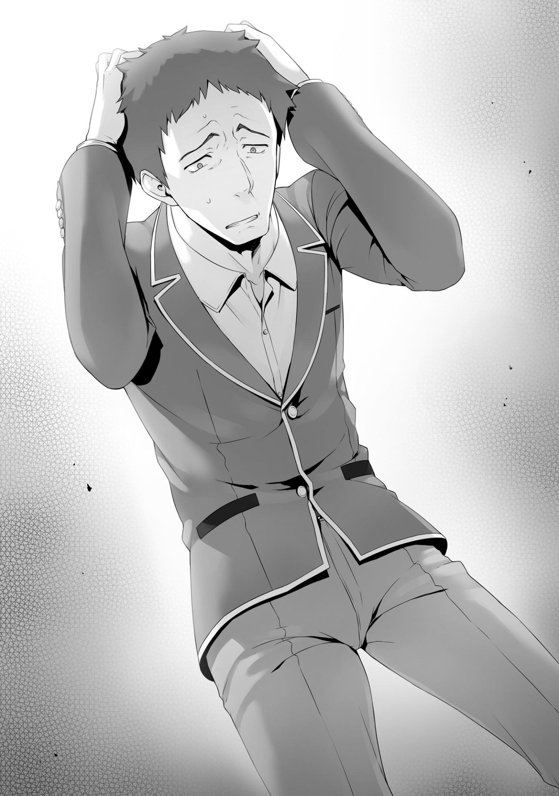
—No hay razón para que la clase expulse a alguien muy superior a ti como Ayanokouji-kun por ese estúpido y despreciable motivo tuyo. Esta es la razón principal por la que te nomino para la expulsión.
Horikita no se dirigió a Yamauchi, sino a toda la clase.
—Ninguno de nosotros quiere perder a uno de sus compañeros de clase.
Sin embargo, traicionaste a tu clase y te confabulaste con el enemigo. Eres, sin duda, el estudiante más innecesario de la clase.
—Eso es...
Prácticamente se podía escuchar a los engranajes girando dentro de la cabeza de Yamauchi mientras pensaba frenéticamente en cómo salir de su situación actual.
—Si... Incluso si asumimos que lo que dices es verdad... ¿por qué soy el único al que critican por ello? Tratar de protegerme trabajando con otra clase es una forma legítima de defensa propia, ¿no? ¡No es como si quisiera ser expulsado!
—Ya veo. Así que, esencialmente, estás preguntando: ¿Qué hay de malo en tratar de protegerme?, ¿verdad?
Era una excusa lamentable y obstinada, pero Yamauchi aún no estaba dispuesto a admitirlo.
—La autoconservación es sin duda importante. Sin embargo, no veo mucho valor en alguien que está dispuesto a tirar a uno de sus compañeros para obtener esa protección, mucho menos en alguien que ha vendido su alma a un enemigo.
Horikita no se retiraría, por mucho que Yamauchi intentase resistirse.
—¡Solo estás defendiendo a Ayanokouji porque estás en buenos términos con él!
—En absoluto. Este fue el resultado objetivo de un juicio tranquilo y sereno.
Tanto tú como Ayanokouji-kun empezaron desde el mismo lugar.
Comparando a los dos, la diferencia entre su contribución total a la clase
es dolorosamente clara. Además, considerando tu conexión con la clase A, ya no hay lugar para discutir.
—No hay ninguna objeción. Creo que la propuesta de Horikita-girl es muy conveniente. No queremos tener cerca a alguien que pueda traicionar a la clase. No podría pasar tiempo con un estudiante que podría traicionar a la clase. Ella tiene mi apoyo.
Con ello, Kouenji fue el primero en apoyar la propuesta de Horikita.
—¡Espera! ¡No he traicionado a nadie! ¡Lo juro por mi vida!
Como último esfuerzo desesperado, Yamauchi juró por su vida para demostrar que no estaba mintiendo.
Es difícil decir si su sentimiento logró o no llegar a sus compañeros de clase.
—¡Oh! Entonces, ¿por qué razón fue Ayanokouji, eh?
—¿Qué quieres decir con eso?
—Aunque de alguna manera estuviera recibiendo órdenes de Sakayanagi-chan, en lugar de intentar expulsar a alguien como Ayanokouji, ¿no tendría más sentido que me enfocara en alguien más peligroso?
Esta fue seguramente una duda persistente cuando Sakayanagi se le acercó por primera vez. En lugar de Ayanokouji, ¿por qué no elegir a una de las figuras centrales de la clase como Hirata o Karuizawa?
—Supongo que es porque no se destaca mucho, para bien o para mal.
Incluso si ella quisiera que expulsaras a un estudiante más sobresaliente, no podrías hacerlo muy fácilmente. Así que eligió a alguien discreto como Ayanokouji-kun. En lo que respecta a Sakayanagi-san, probablemente no importaba quién fuera expulsado. Sólo quería un espía, una pieza de ajedrez que pudiera mover como quisiera.
No había forma de que alguien como Yamauchi pudiera resistirse a quedar atrapado en una estrategia tan astuta.
—Supongo que hay algunos de ustedes que no están muy contentos con mi nominación. En cuyo caso, por favor, no duden en emitir su voto de desaprobación por mí. Ya sea que quieran votar por Yamauchi-kun o por Ayanokouji-kun, o incluso por cualquier otra persona, háganlo.
Simplemente sentí que necesitaba compartir mi opinión con todos, que es exactamente la razón por la que decidí celebrar esta discusión en primer lugar. Por favor, intenten tenerlo en cuenta cuando tomen su decisión.
Horikita habló con confianza, decidió poner todo en juego por lo que creía que era correcto, y probablemente iba a dar sus frutos.
Sin embargo, Sudou decidió intervenir una vez más.
—Espera, Suzune... Creo que entiendo lo esencial de la situación.
También entiendo que Haruki es el que está equivocado aquí...
Su expresión era sombría. Esta era una desesperada muestra de resistencia de alguien que siempre acataba las órdenes de Horikita.
—Pero, estoy en contra de que expulsen a Haruki.
—Bueno, es tu amigo. Soy consciente de lo importante que es para ti.
Sin embargo, Horikita ya había anticipado que Sudou elegiría apoyar a Yamauchi.
Sin embargo, Sudou tampoco estaba dispuesto a dar marcha atrás.
—Es mi amigo, así que voy a protegerlo. Eso tiene sentido, ¿verdad? Sé que es bastante malo que haya hecho lo que hizo con la clase A y todo eso, pero no tenemos que expulsarlo por eso. ¿No es bueno siempre y cuando reflexione y contribuya seriamente en el futuro?
—Si ese fuera el caso, no habría necesidad de expulsar a Ayanokouji-kun tampoco, ya que no ha hecho nada malo.
—Eso es...
—Toda esta perspectiva tuya es errónea, Sudou-kun.
Horikita respiró hondo, preparándose para sacar todo el coraje que pudo reunir.
Se mantuvo erguida, habiendo decidido por completo ser odiada por sus compañeros.
—Al proteger a una persona, estás abandonando a otra. Por lo tanto, este examen no se trata de sentimientos. Se trata de teoría.
Sudou abrió la boca, pero se quedó en silencio.
Su deseo de ayudar a su amigo era claro.
Pero para hacer eso, significaba que alguien más tendría que ser expulsado en su lugar.
Formar un grupo y tratar de controlar los votos fue, en sí mismo, un error.
Hasta hoy, la clase era libre de tomar las medidas que consideraran oportunas para el próximo examen. Todos estaban consumidos por pensamientos negativos, pensando que personas específicas merecían ser expulsadas.
Pensando que no tenía sentido luchar contra algo que ya había sido decidido.
Por eso exactamente se había llegó a esto. Todos se dieron cuenta de que no podían actuar por el bien de la clase y que sólo querían salvarse ellos mismos.
Si Horikita hubiera hecho esto el día que se anunció el examen, es probable que no hubiera sido tan efectivo. Más importante aún, si ella hubiera recurrido a la clase antes de que se hubieran visto obligados a pasar por este examen especial, sus palabras no habrían resonado en ellos. Pero ahora, todo el mundo debería ser capaz de entender lo difícil y aterrador que es tomar la iniciativa y tratar de expulsar a uno de sus compañeros de clase.
—Lo siento, Haruki... No puedo hacer nada por ti...
Honestamente, la nueva madurez de Sudou fue impactante. Todavía tenía una tendencia a perder los estribos después de pequeñas provocaciones, así que, aunque le quedaba mucho camino por recorrer, poco a poco iba ampliando sus horizontes.
Aunque fue una elección entre un amigo cercano y yo, él logró dejar de lado mi relación relativamente cercana con Horikita y llegar tranquilamente a una decisión razonable.
—Entonces parece que está decidido, Horikita-girl.
Kouenji y los demás espectadores estaban dispuestos a dar su veredicto.
—¡Esperen! ¡Esperen! ¡Deténganse!
Yamauchi empezó a gritar, rogando que pararan.
—¡Sería estúpido de su parte desperdiciar sus votos de desaprobación en mí!
—Ya he tomado una decisión. Nadie aquí merece ser votado más que tú.
—¡Sí, pero! Ya tengo un acuerdo con todos para votar por Ayanokouji!
—...Yo...retiro todo...
—¿Eh?
Kushida habló en voz baja, sus ojos mirando hacia abajo.
—Cometí un error.... Quería ayudar a Yamauchi-kun... pero no me di cuenta de la gravedad de la situación. Retiro lo que le pedí a todo el mundo...
Dada la situación, para no arruinar su reputación, Kushida no tuvo más remedio que ponerse del lado de Horikita.
—Espera, espera, espera. ¿¡Qué estás diciendo!? ¡Estás rompiendo tu promesa! ¡Qué cruel!
—Tú eres el cruel aquí Yamauchi-kun.... yendo tan lejos como para traicionar a tus compañeros...
Y ahora, Yamauchi estaba completamente solo.
La sensación de ser el objetivo de muchos de sus compañeros era algo que él debería conocer mejor que nadie.
—Eres el eslabón más débil de la clase, y eres un traidor.
Horikita reiteró su punto de vista con indiferencia y serenidad.
—Eso es todo lo que quería decir.
Con esto, intentó poner fin a la discusión.
No parecía que hubiera nadie dispuesto a oponerse a ella.
—En conclusión, me gustaría escuchar las opiniones de todos los presentes. ¿Cuáles son sus pensamientos?
Sin embargo...
—Quiero que esperes un segundo, Horikita-san.
—... ¿Ocurre algo?
Un estudiante varón levantó la mano y se levantó de su asiento.
Si hubiera un único factor que hubiera quedado fuera de los cálculos de Horikita, tendría que ser la existencia de Hirata Yousuke
—Aunque guardé silencio y te dejé decir todo lo que querías decir, debo objetar la forma en que estás induciendo al resto de la clase a votar contigo. Que los camaradas se reúnan para expulsar a alguien así.... está mal.
Las palabras de Hirata no provenían tanto de un sentimiento como las de Sudou, ni de una lógica como la de Horikita. En vez de eso, venían de un lugar de sufrimiento y resistencia, despreciados por su incapacidad para dar una respuesta.
—No hay otra manera. Este examen no tiene ninguna laguna. No es razonable, pero alguien de nuestra clase va a ser sacrificado sin lugar a dudas. No me digas que aún no has aceptado eso.
—¿Cómo es posible que lo acepte? No quiero perder a nadie. Sería diferente si alguien quisiera ser expulsado, pero ya sea Yamauchi-kun o Ayanokouji-kun, en realidad ninguno de los dos quiere ser expulsado.
—¿Ninguno de los dos lo quiere? Te costará encontrar a alguien que lo quiera. ¿Qué tal si le hago una pregunta sin sentido al resto de la clase?
¿Podrían levantar la mano todos los que quieran ser expulsados de la escuela? Si lo haces ahora, ya no habrá necesidad de nada de esto. El resto de nosotros unánimemente emitiremos nuestros votos de desaprobación por ti y nos lavaremos las manos de todo.
Ni una sola persona levantó la mano. Si hubiera un estudiante tan conveniente, ya habrían anunciado su candidatura hace años.
—¿Lo entiendes ahora?
—No. No hay forma de que esté dispuesto a aceptar algo tan horrible.
El estudiante de honor perfecto, bien versado en deportes y en lo académico. Un tipo verdaderamente virtuoso.
Pero a pesar de todo eso, la debilidad de Hirata Yousuke fue revelada.
Cuando llega el momento y se le presiona para que tome una decisión definitiva, se siente abrumado, incapaz de hacer nada en absoluto.
—Tengo fe en mi decisión de presionar aquí, independientemente de si están dispuestos a aceptarlo o no, así que vamos a votar. Aquí y ahora.
—No hay razón para que hagamos eso. No hay forma de garantizar por quién votará la gente mañana.
—Eso no es verdad. Es importante vigilar las tendencias de votación de nuestros compañeros.
—No tiene sentido. Todo el mundo.... ¡todo el mundo está intentando que expulsen a alguien! ¡No puedo....!
Hirata temía que las acciones de Horikita provocaran un incendio que se saldría de control, causando que información personal como "quién odia a quién" se hiciera pública.
—Bueno, entonces, hagámoslo.
Horikita hizo caso omiso de Hirata y una vez más intentó votar.
Ya nadie podía detenerla. Era el momento de la verdad.
—¡Horikita-san!
Un sonido fuerte y antinatural resonó por toda la clase.
Sucedió algo que nadie en el salón había esperado.
Hirata pateó su pupitre, haciéndolo volar hacia delante mientras caía al suelo.
—¿Qué... Uhm, H-Hirata-kun?
Podía escuchar la voz de una de las chicas, temblando de incredulidad.
Y para ser justos, estaba igual de sorprendido.
Fue el tipo de situación que me hizo preguntarme si simplemente se había dejado llevar y si su pie había hecho contacto accidentalmente con su pupitre.
Lo mismo ocurrió con Chabashira-sensei.
Su increíble comportamiento fue sencillamente demasiado inesperado.
—¿Quieres parar, Horikita-san?
Bajó el tono de su voz, como si quisiera asustarla para que retrocediera.
—...¿Qué quieres que pare?
Horikita contestó con una pregunta suya, ajustando su flequillo para ayudar a ocultar su sorpresa.
—Te lo estoy diciendo, para con esta votación.
—No tienes derecho...
Las desalentadoras palabras de Hirata hicieron que su voz titubeara un poco.
Esa era la intensidad de su voz.
—Esta discusión ha sido un error.
—Si es así, ¿qué deberíamos hacer? No es como si tuvieras ideas. No has hecho nada en todo este tiempo.
—...¿Y qué?
—...¿Y qué? Estoy diciendo que es un problema. No has hecho una evaluación adecuada de la situación.
—Cállate...
—No, no me callaré. Yo-
—Horikita.... cierra la boca de una vez.
Hirata habló bruscamente, interrumpiéndola fríamente. Sus palabras eran mucho más pesadas que todo lo que le habíamos oído decir antes.
Se sentía como si el aire dentro del aula se hubiera congelado.
—Escuchen todos.
El tono de Hirata cambió cuando se dirigió a la clase, haciéndolo parecer una persona completamente diferente.
—No importa en absoluto si todo lo que se ha dicho hasta ahora es cierto o no.
—...¡No lo fue! ¡Definitivamente estaba mintiendo, Hirata! ¡Sólo soy una víctima!
Yamauchi le clamó a Hirata, tras verse forzado a una situación desesperada.
—¿Víctima?
—Er...
La profunda e implacable mirada de Hirata atravesó Yamauchi.
—Después de todo lo que se ha dicho, no hay forma de que seas inocente.
—Eso... yo...
—El hecho de que ustedes estén de acuerdo en traicionar a uno de los suyos me revuelve el estómago.
Su enojo no se dirigía sólo hacia Yamauchi, sino hacia la clase en su conjunto.
—Es un examen. No tenemos otra opción.
—De cualquier manera, está mal manipular el voto de esta manera.
—El examen es mañana. ¿Dices que deberíamos sentarnos y no hacer nada para prepararnos? Eso no sería diferente de permitir en silencio la traición de Yamauchi-kun.
—¿Qué tiene de malo no tener un plan? No tenemos derecho a juzgar a nuestros compañeros.
—¿Qué estás diciendo...? ¿No es eso exactamente lo que nos pide este examen especial? De hecho, muchos de nosotros queremos esto.
Horikita lo sabía precisamente porque había estado de pie en el podio, mirando a sus compañeros de clase.
Sin embargo, Hirata ni siquiera estaba dispuesto a aceptar esto.
—...¿No eres tú el verdadero problema aquí?
Su voz baja y pesada resonó por toda la clase.
Incluso ahora, mi cerebro se negaba a aceptar que esta fría voz provenía de Hirata.
—Es cierto que este examen es demasiado despiadado y cruel. Nunca podré aceptarlo. Pero, aún así... si de alguna manera puedes conseguir tolerarlo, en realidad no es más que una encuesta de clase normal. De ninguna manera está aquí para que pongas a todos en contra de todos de esta manera.
—Eso no es realista. En secreto, nuestros compañeros de clase formaron un grupo, discutiendo sobre cómo manipular los resultados de la votación.
Ayanokouji-kun iba a tomar todo eso él solo.
—Sí. Eso también es deplorable. A pesar de todo, tu descarada persuasión a toda la clase es algo completamente diferente.
—Es lo mismo. No hay diferencia. Deberías haber detenido su complot si realmente querías mantenerte fiel a tu hipócrita mentalidad.
Nadie podía interrumpir su conversación en este momento.
Hirata estaba al borde de la desesperación, y la única persona capaz de hablar con él era Horikita.
—Además, incluso sin votar aquí, ya he terminado de explicarlo todo. ¿No te das cuenta de que ese 'voto normal' que querías ya ha desaparecido por completo?
—Así es.... La suerte está echada. No puedes retractarte de lo que se ha dicho.
Hirata respiró hondo antes de continuar.
Recuperó un poco de compostura, pero no hubo ningún cambio en su fría actitud.
—Por eso voy a votar por ti mañana, Horikita-san. No permitiré que vuelvas a causar problemas en esta clase.
Hirata era muy consciente de sus numerosas inconsistencias. Sin embargo, se lleva bien con todos en la clase y valora la paz y la camaradería más que nadie.
Lo que, en consecuencia, es exactamente por lo que está sufriendo.
—Sí. Haz lo que quieras.
Horikita no parecía insatisfecha. Era como si estuviera animando a la clase a hacer lo mismo si estaban de acuerdo con él.
Después de haber vigilado toda la experiencia, Chabashira-sensei se acercó tranquilamente al podio de enseñanza.
—¿Eso es todo, Horikita?
—Sí.
Horikita cedió el podio y volvió a su asiento.
Las clases ya se habían terminado por hoy, y este no era lugar para que un maestro interfiriera.
Pero aún así, Chabashira-sensei se puso de nuevo de pie ante sus alumnos.
—Todos ustedes pueden pensar que este examen es algo irrazonable y terrible que la escuela les está imponiendo. Sin embargo, una vez que entren a la sociedad, definitivamente encontrarán una situación en la que alguien tiene que ser dejado de lado. La gerencia superior y la gerencia senior tienen que estar dispuestas a bajar el martillo cuando sea necesario.
Los estudiantes que estudian en esta escuela son educados para que se conviertan en factores importantes en el éxito futuro de Japón. No podrán crecer si perciben este examen como un simple medio de la escuela para fomentar el acoso.
En la sociedad, las personas que son obstáculos son despedidas para proteger al grupo en su conjunto.
Siguiendo esta cadena de lógica, también hay tratos encubiertos y difamaciones muy parecidas a las que se han hecho estos últimos días.
Ciertamente hay factores de este examen especial que nos ayudan a madurar hacia la edad adulta. Sin embargo, no es de ninguna manera amable forzar a un grupo de estudiantes, aún inmaduros de mente y cuerpo, a hacer este tipo de juicio. El examen puede terminar influyendo negativamente en el futuro de los estudiantes.
—No voy a dar mi perspectiva sobre esta discusión suya. Creo que la participación de todos ha sido valiosa. Espero que lo piensen bien antes de votar mañana.
Con eso, Chabashira-sensei abandonó el aula, después de que terminara de escuchar toda la discusión.
¿Yo? ¿Yamauchi? ¿Horikita? ¿Posiblemente Hirata? ¿O tal vez a alguien más?
No estaba claro por quién votaría exactamente la gente mañana. En otras palabras, la persona que será expulsada mañana todavía está completamente en el aire, y no se podrá culpar a nadie.
Ese es el tipo de examen especial que es este.
PARTE 4
Haruka y el resto del grupo Ayanokouji se me acercaron inmediatamente después de que Chabashira-sensei dejara el aula.
Horikita y Yamauchi abandonaron el aula de inmediato.
—¿Estás libre ahora mismo?
—¿Hm? Sí.
En realidad quería hablar un poco con Hirata, pero...
Sin mostrar ningún tipo de emoción en su rostro, Hirata dejó tranquilamente el aula a solas.
Como mi situación se había hecho pública, ignorar el grupo Ayanokouji no me pareció una buena idea.
—¡Vamos al café!
Estuvimos de acuerdo con la sugerencia de Haruka y dejamos el aula atrás.
Todos entramos juntos en el pasillo, ninguno de nosotros siquiera pensó en ir solo al café.
—¿Está bien esto? En el peor de los casos, el resto de ustedes podría ser el objetivo del grupo de Yamauchi.
—¡Si quieren atacarnos, que lo hagan! No dejaré que expulsen a nadie de nuestro grupo.
Contrariamente a su comportamiento habitual, la ira de Haruka era más pronunciada y no parecía estar cediendo.
—Tengo la misma opinión. No hay una sola razón por la que Kiyotaka deba ser expulsado.
Keisei se mostró de acuerdo, y Akito y Airi asintieron.
—Pensé que era extraño que no encontráramos ninguna información, pero tiene sentido que no pudiéramos, ya que su objetivo era alguien de nuestro grupo.
Por mucho que investigaran, no habrían sido capaces de captar la identidad del objetivo del grupo grande.
Keisei pareció entender esto lo suficientemente bien.
Llegamos al café. Después de que todos terminaron de pedir sus bebidas, Haruka rompió el hielo.
—Creo que Yamauchi-kun es una buena elección para nuestros votos de desaprobación. Bueno, más bien, no creo que haya otra opción.
—No hay ninguna objeción, pero ¿qué hay de nuestros otros dos votos?
—¿No está bien votar por la gente que aún lo apoya?
—¿No habrá un gran descenso en el número de sus seguidores ahora que se ha hecho público que tiene conexiones con Sakayanagi? Ni siquiera Ike y Sudou se atrevieron a decir nada para defenderlo.
—Sí, pero como son sus amigos, creo que le darán un voto de aprobación por simpatía.
La predicción de Haruka seguramente era correcta.
Aunque lo habían tildado de traidor, Yamauchi solo había tomado medidas para protegerse.
Desde otra perspectiva, podría decirse que Sakayanagi simplemente se aprovechó de él. No es como si no hubiera lugar para la compasión.
Horikita era la que había incitado todo el odio hacia Yamauchi.... Bueno... No, yo había sido el que estaba detrás de eso.
Yamauchi era el cerebro, y Sakayanagi era la que movía los hilos detrás de él.
Le informé al mayor de los Horikita sobre todo, y le pedí que le transmitiera la información a su hermana.
Si, por casualidad, no hubiera actuado, yo habría hecho lo que ella hizo.
—Me pregunto cuántos votos de desaprobación obtendrá Kiyotaka. De los chicos, está Yamauchi junto con Ike y Sudou, y más allá de esos tres, Hondou, Ijuin, Miyamoto y Sotomura parecen estar en buenos términos con él.
Parecía que sólo había siete votos de desaprobación de los chicos de la clase.
—¿Qué hay de las chicas?
—No tengo ninguna duda de que Horikita-san emitirá un voto de aprobación para Kiyotaka-kun y un voto de desaprobación para Yamauchi-kun. No sé qué van a hacer las otras chicas... ¿Lo sabes, Airi?
—...Satou-san y Karuizawa-san probablemente no votarán en su contra...
creo...
—¿Por qué?
—No sé por qué, es sólo una sensación, pero...
Airi se calló mientras intentaba explicárselo a Keisei, y Haruka se acercó.
—Es la intuición de una mujer.
—No podemos confiar en eso.
Keisei no iba a contar estos votos sólo con esta explicación.
—Sí podemos. Es muy raro, pero creo que está en la dirección correcta.
Sobre todo porque estamos hablando de Airi.
—¿Qué se supone que significa eso? Aparte de Satou, ¿cómo podría saber algo sobre Karuizawa?
Incapaz de entender su razonamiento, Keisei dudó al inclinar la cabeza.
—No te preocupes por eso. Digamos que podemos contar con que esas dos no voten por él.
—Esto es descuidado...
—Sin embargo, aparte de esas tres, aún no está claro lo que harán el resto de las chicas.
—Sí. Hay muchas chicas a las que no les agrada Yamauchi-kun. Incluso si cumplen sus promesas de votar por Kiyopon, probablemente terminarán emitiendo uno por él también.
—Mirándolo desde una perspectiva psicológica, probablemente sea cierto.
Para alguien que simplemente está buscando pasar el examen, podrá salvarse emitiendo sus votos por personas con la mayor posibilidad de ser expulsadas. Probablemente lo vean como una lucha individual por la supervivencia entre Kiyotaka y Yamauchi, y los votos restantes probablemente se dispersarán entre las otras opciones.
Keisei analizó los hechos del asunto basándose en todo lo que había oído hasta ahora.
Por ejemplo, Kouenji ha sido el blanco principal de los votos de desaprobación de la clase, pero aún así, esa mentalidad ha perdido algo de impulso. Emitir un voto de desaprobación por Kouenji significaría hacer caso omiso de sus puntos fuertes, y dado que hay varios estudiantes que frenan el avance de la clase, Kouenji probablemente terminará por estar a salvo.
—Estoy segura de que estarás bien, Kiyotaka-kun.
—Sí, gracias.
En el fondo de su mente, Airi probablemente todavía está algo ansiosa de que algunos de los votos de desaprobación que quedan se emitan por ella.
Sin embargo, me ofreció palabras de aliento sin dejar que esta ansiedad se manifestara.
—De todos modos, ¿no es Kiyopon el más tranquilo aquí?
—Es sólo que no hay nada que pueda hacer. Mis pensamientos han estado llenos de inquietud.
—No te preocupes. Gracias a Horikita, las cosas ya no se ven tan mal.
Más bien, es como si ella te hubiera salvado.
Si no fuera por Horikita, hay una buena posibilidad de que la mayoría de la clase hubiera tomado el examen sin saber nada de lo que estaba pasando.
Sin ni siquiera pensarlo dos veces, habrían votado por mí sólo para salvarse.
Un resultado como ese era demasiado fácil de imaginar.
—Pero... me pregunto cómo se enteró Horikita-san de la traición de Yamauchi-kun.
Airi planteó casualmente una nueva pregunta crucial.
—Nuestro grupo está cerca de Kiyotaka-kun, así que tiene sentido que ninguno de nosotros haya oído hablar de ello, ¿verdad? Pensé que Horikita-san estaría en la misma situación que todos nosotros...
—Es cierto.... Tampoco parece que Horikita haya intentado formar un grupo.
Yamauchi seguramente también estaba frustrado por esto. Lo más probable es que pensara que alguien del grupo grande que creó lo traicionó, llegando incluso a contarle todo a Horikita.
En primer lugar, es probable que no hubiera podido notar la fuga de información, ni hacer nada al respecto.
—No sé quién, pero debe haber alguien que no quería que expulsaran a Kiyopon, ¿verdad?
—Probablemente. Al menos hay una persona buena en el grupo.
Ninguno de ellos fue capaz de darse cuenta de que ese "alguien" eran tanto Kei como yo mismo.
PARTE 5
En el camino de regreso a los dormitorios, nos encontramos con Hirata sentado en uno de los bancos con la misma expresión apática en su rostro.
Si alguien más lo viera así, se replantearía la idea de llamarlo.
Después de todo, nadie lo había visto así antes.
—Parece bastante derrotado.
—Sí.... Es completamente diferente de lo normal.
Tanto Haruka como Akito reconocieron inmediatamente lo irreal que era esta situación.
—Creo que intentaré hablar con él un poco.
—Ríndete, Kiyotaka. ¿No sería mejor dejarlo en paz ahora mismo?
—Tal vez, pero hay algo que me ha estado molestando.
—¿Algo que te ha estado molestando?
—Lo siento, pero pueden regresar sin mí. No creo que esté dispuesto a decir mucho si tratamos de llegar a él todos. Si se va a enfadar con alguien, prefiero que sea sólo yo y no todos nosotros.
—...Está bien, pero la votación es mañana, así que no hagas nada que lo afecte de la manera equivocada. Honestamente, no hay forma de saber por quién va a votar Hirata ahora mismo.
Asentí en respuesta al consejo de Akito y me separé del grupo.
Les agradecí que pudieran entender la situación y volver a los dormitorios sin mirar atrás.
Antes de hacer otra cosa, tomé una foto de su derrotada apariencia desde lejos y se la envié a Kei con algunos otros detalles.
—Hirata.
Para aprovechar al máximo esta oportunidad, lo llamé inmediatamente después de pulsar el botón de enviar.
—...Ayanokouji-kun.
—¿Tienes un minuto?
—Sí, claro. Yo también quería hablar contigo.
Era posible que estuviera sentado aquí esperándome.
De lo contrario, no tendría sentido sentarse en un lugar tan frío.
Además, estaba sentado en un costado del banco, muy posiblemente con la esperanza de que alguien más se sentara con él.
Me senté en el espacio vacío a su lado.
—Pronto llegará una cálida primavera.
—Sí.
—Yo... creía que todos podríamos dar la bienvenida a esa primavera juntos. No, incluso ahora, en algún lugar dentro de mi corazón, todavía lo creo.
Hirata habló apasionadamente, a pesar de que la clase casi había colapsado no hace mucho tiempo.
A pesar de que todos fueron testigos de su estúpido y desagradable comportamiento en el aula, esta parte esencial de su personalidad aún no ha cambiado.
—Tener que dejar a alguien atrás.... lo detesto.
—No hay nada que podamos hacer al respecto. Ya sea yo, Yamauchi o alguien más, alguien tiene que ser el sacrificio.
La expresión de Hirata seguía sin mostrar ningún indicio de emociones.
—¿Podría confiártela a ti?
—¿Confiarme qué?
—La Clase C. Quiero que dirijas a todos en mi lugar de ahora en adelante.
—No seas tan imprudente. No sería capaz de hacer algo tan inaudito.
Hirata, si quieres proteger a la clase, tienes que hacerlo tú mismo.
—Eso es imposible. Yo... no puedo seguir haciéndolo.
Seguramente se sentía frustrado consigo mismo por no poder tomar una decisión. Tal vez esta clase de pensamientos era lo único que tenía en mente.
Pero eso no era todo.
—Cometí el mismo error otra vez. Incluso reflexioné sobre ello en aquel entonces, y sin embargo...
Sumergido en la amargura, lágrimas comenzaron a brotar en la esquina de sus ojos.
Me preguntaba cuánta angustia ha experimentado Hirata a causa de este examen.
—Me sentiría tranquilo confiándole la clase a alguien como tú.
Suspiró, su aliento blanco dispersándose en el frío aire.
No había nada deslumbrante ni envidiable en la cara del líder de nuestra clase.
—En este examen especial. Emite un voto de desaprobación por mí y otro por Yamauchi. Está bien que emitas el último por Horikita si quieres.
—Así que me estás diciendo que debería dejar la decisión en manos del resto de la clase.
No es necesario que Hirata elija explícitamente a alguien.
Podría optar por dejárselo a los otros 39 estudiantes de la clase.
—Realmente eres increíble, Ayanokouji-kun.
—No soy nada especial.
—Tanto Horikita-san como Yamauchi-kun se me acercaron mientras estaba sentado aquí. Horikita-san me dijo que votara por Yamauchi-kun, y Yamauchi-kun me dijo que votara por ti. Ambos afirmaron que querían lo contrario que el otro. Sin embargo, eres el único que no intentó derribar a alguien más. Eso no es algo que cualquiera pueda hacer.
Eso se debe a que, desde un punto de vista estratégico, es mejor no decir nada.
En esta situación, no es una buena idea tratar de forzar a Hirata a votar como tú quieres.
Es sólo que llegué a esa conclusión con anterioridad.
—Me alegro de haber hablado contigo. Yo... realmente siento que podría ser capaz de encontrar una respuesta ahora.
—¿De verdad?
Hirata se levantó.
Parecía como si hubiera encontrado su propia manera de realizar el examen.
Pero, yo no iba a estar de acuerdo con su manera de pensar.
—¿Volvemos?
Por sugerencia suya, los dos comenzamos a caminar de regreso a los dormitorios sin intercambiar una palabra más.
LAS IDEAS DE LAS OTRAS CLASES.
Desde el principio, la postura de la Clase D sobre qué hacer no había cambiado en lo más mínimo.
Aproximadamente el noventa por ciento de la clase llegó a la misma conclusión cuando se anunció el examen suplementario por primera vez.
Y para el viernes, el día antes de la votación, esa conclusión seguía siendo la misma.
La conclusión de expulsar Ryuuen Kakeru.
La mayoría de la clase ya se había decidido sin ninguna discusión o planificación previa.
Ryuuen lideró la clase como un dictador, gobernando con puño de hierro. Sin embargo, no puede decirse que sus acciones hayan llevado a la clase al éxito, ni siquiera como un cumplido.
De hecho, él fue la razón por la que su clase bajó de la Clase C, situándolos en último lugar.
Además, muchos estudiantes sufrieron a causa de su imperio de intimidación y violencia. Se aprovechó de los estudiantes de mente débil para crear una situación en la que sus demandas no fueran cuestionadas. Él fue la raíz de todo el mal. Muchos de los estudiantes pensaban que no habrían caído a la Clase D
si Ryuuen no hubiera existido, aunque nunca hubieran sido capaces de llegar a la Clase B.
Al tercer día en que se anunció el examen, una buena parte de la clase D ya había llegado a un acuerdo. Es decir, asegurarse de que todos emitieran un voto de desaprobación para Ryuuen, y distribuir los dos votos restantes entre el resto de la clase para evitar concentrar demasiados votos en otra persona. De esta manera, podrían asegurar la expulsión de Ryuuen Aunque Ishizaki realmente no quería que Ryuuen se marchara, se encontraba en una posición difícil, ya que era el que tenía el mérito de derrotarlo. Se había visto obligado a desempeñar el importante papel de reunir votos de desaprobación en contra de Ryuuen.
Cuando se explicaron los detalles del examen, Ryuuen comprendió inmediatamente la complejidad de la situación en la que se encontraba Ishizaki y la postura de grupo de sus compañeros de clase.
Y así, llegó a una decisión. En este examen en el que la clase quería expulsarlo, él no pondría ni una pizca de resistencia.
Por esta razón, iba a disfrutar del tiempo que le quedaba hasta que el examen suplementario llegara a su fin.
Después de todo, todavía tenía que pensar adónde iría y qué haría después de abandonar la escuela.
Por lo tanto, no quería perder el tiempo quedándose en el aula después de que la escuela terminara ese día.
Ryuuen dejó el aula de inmediato.
Ibuki miró mientras lo hacía, pensando tranquilamente en cómo pasaría el tiempo durante el resto del día.
En el pasado, Ryuuen la invitaba a menudo a acompañarlo, pero eso no ocurría desde hacía tiempo.
Una chica se acercó a Ibuki mientras miraba fijamente la puerta por la que Ryuuen acababa de pasar.
—Bueno, es una expresión miserable en tu cara, ¿no es así? ¿Realmente te entristece que expulsen a Ryuuen?
—Haa.... ¿Tú otra vez? Realmente disfrutas tratando de discutir conmigo,
¿no?
—No realmente. Sólo estoy aquí porque estoy preocupada por ti, ¿no es obvio? Me parece que has sido cada vez menos importante desde que Ryuuen-kun perdió, ¿no crees?
La que pronunció estas palabras desafiantes no fue otra que la compañera de clase de Ibuki, Shiho Manabe, una figura central entre las chicas de la clase D.
Desde que se inscribieron, las dos nunca se llevaron bien. Manabe se enfrentó a Ibuki varias veces, pero como Ibuki contaba con el apoyo de Ryuuen, Manabe no podía quejarse de ella tanto como quería.
Por dentro, esto hacía a Manabe extremadamente infeliz.
Lo más probable es que sus provocaciones fueran su forma de desahogar la ira acumulada.
—Vas a emitir un voto de desaprobación por mí, ¿no es así, Ibuki-san?
—No sé.
—Sólo hazlo. Yo votaré por ti, así que estaremos en paz.
—...Huh, ¿es así?
Manabe se enfadó un poco por la indiferente respuesta de Ibuki.
Después de todo, ella realmente quería ver cómo se retorcía y se perdía en la ira.
—Bueno, ¿no es agradable saber que no serás expulsada, Ibuki-san?
Aunque un puñado de personas emitan sus votos de aprobación por Ryuuen-kun, obtendrá más de 30 votos de desaprobación.
Manabe sólo podía ser así de arrogante porque Ryuuen no estaba en el salón, pero eso no cambiaba el hecho de que muchos otros estudiantes compartían su postura en este asunto.
Ishizaki se levantó de su asiento.
El examen suplementario tendría lugar mañana, y una vez que comenzara, no se podría hacer nada más para cambiar la situación.
—Ven conmigo un momento, Ibuki.
Ishizaki se acercó a las dos chicas mientras éstas se miraban fijamente.
—...Lo que sea.
A pesar de su respuesta ambigua, Ibuki aceptó la petición de Ishizaki y abandonó el aula.
En cuanto a Ibuki, creía que cualquier cosa sería preferible si significaba alejarse de Manabe.
—Puedes actuar tan calmada y serena como quieras, pero debes saber que después de que Ryuuen-kun sea expulsado, eres la siguiente.
Actuando como si fuera la gobernante de la clase, Manabe despidió a Ibuki con una última provocación.
—Entonces, ¿adónde vamos?
Preguntó Ibuki, sin mirar a Manabe, cuando salieron del aula.
—A ninguna parte en particular. Sólo quería hablar contigo un momento sobre los puntos privados a los que se aferra Ryuuen-san ¿Qué les pasó?
—No les "pasó" nada, todavía los tiene.
—¿Todavía no los has recibido? El examen es mañana, ¿sabes? Los perderemos todos una vez que lo expulsen.
—¿Y quién fue el que se alteró por no tomarlos?
—Eso es.... No me importaban mucho los puntos privados en ese entonces...
—Si tanto los quieres, ¿por qué no se los pides tú mismo?
—No voy a hacer eso.
Ibuki habló bruscamente porque ya sabía que esa sería su respuesta.
—En lo que respecta al resto de la clase, tú eres el responsable de acabar con Ryuuen. Sería muy sospechoso si la gente se enterara de que has estado en contacto con él. La gente incluso podría empezar a cuestionar tu lealtad.
Para Ishizaki, el hecho de que sus compañeros de clase dudaran de él no sería un hecho catastrófico, ya que quería evitar la inminente expulsión de Ryuuen.
Sin embargo, eso pondría a Ishizaki en riesgo de expulsión en lugar de Ryuuen.
Además, la verdad detrás de la participación de Ishizaki en el derrumbe de Ryuuen podría ser expuesta. No había forma de que Ishizaki se acercara a él.
Tenía dos emociones contradictorias: el deseo de salvar Ryuuen y el deseo de salvarse a sí mismo.
—Yo... Maldición, ¿qué debo hacer...?
—Lo mejor es dejar que expulsen a Ryuuen, ¿no? Hasta tú deberías saberlo.
—¿De verdad está bien? ¿De verdad crees que podemos ganar en el futuro sin Ryuuen-san?
—Esperaba que lo alabáramos mucho a pesar de que nunca produjo resultados decentes. Sus acciones eran imposibles de entender y, además, parecían un poco estúpidas.
—Se arriesgó mucho, pero sin él, llegar a la clase A no es más que una quimera.
Incluso Ryuuen desconfiaba del amplio poder general de la Clase A bajo el liderazgo de Sakayanagi.
Y además estaba la unidad inquebrantable y los resultados consistentes de la Clase B bajo el mando de Ichinose.
Y por otra parte, estaba Ayanokouji de la clase C, que contaba con la fuerza bruta para abrumar a Ryuuen y una cantidad inconmensurable de conocimiento y creatividad que lo respaldaba.
La diferencia de poder entre las clases era dolorosamente obvia, un hecho que dejó una fuerte impresión en Ishizaki.
Para que la Clase D pudiera lidiar con esos monstruos, era crucial que ellos mismos tuvieran un monstruo.
Era evidente que Ryuuen Kakeru no era el estudiante ideal para deshacerse de él durante este examen.
—Bueno, admito que Ryuuen está lejos de ser normal.
Ibuki también tenía sus pensamientos sobre todo esto.
Por alguna razón, aunque Ryuuen fue derrotado por Ayanokouji, su opinión sobre él no disminuyó.
Ryuuen poseía algo único que Sakayanagi e Ichinose no tenían.
Un 'algo' que podría incluso ser capaz de alcanzar a alguien como Ayanokouji.
Al menos, eso es lo que ella pensaba.
—Maldita sea...
Viendo, con una mirada de reojo, a Ishizaki descargar sus frustraciones, Ibuki se puso a pensar en lo que podría hacer para este examen.
A pesar de que Ishizaki era un tipo desagradable y testarudo, seguía poniendo todo su empeño.
Y sin embargo, ella sólo pensaba en protegerse a sí misma. De cómo sería más seguro permanecer en silencio y dejar que Ryuuen fuera expulsado.
Sin duda, Ibuki no tenía tanta libertad de acción como Ishizaki.
Sabía, sin lugar a dudas, que el resto de la clase la detestaba.
De hecho, sabía que si Ryuuen desaparecía, sería el próximo objetivo.
En la declaración de Manabe había algo más que un simple hostigamiento.
Sin embargo, mientras se mantuviera callada esta vez, sobreviviría.
O tal vez en un futuro próximo se revele otro camino a seguir.
Este era el aspecto principal que le impedía actuar.
Pensó en lo que "él" dijo.
『 Este examen no es lo bastante simple para que puedas salvar a alguien sólo porque dices que quieres. 』
Él ya había visto a través de la mente de Ibuki, su manera de pensar.
Fue por eso que no había sido capaz de enfrentar la situación seriamente.
—Hey, Ishizaki.
—¿Qué...?
—No quieres que expulsen a Ryuuen, ¿verdad?
—...Sí. Ni siquiera puedo mentir al respecto.
—Sí.
No había absolutamente ninguna manera de que alguien recibiera más votos de desaprobación que Ryuuen
—No quiero admitirlo, pero siento lo mismo. Sólo recuerda que después de que Ryuuen se haya ido, yo soy la siguiente.
Ella expuso explícitamente los hechos.
—Voy a ver Ryuuen esta noche y conseguiré los puntos privados. Puede que sea la única que pueda.
Estos puntos se aprovecharían entonces en beneficio de la clase D.
El sacrificio de Ryuuen sería utilizado como una fuente de aliento para el futuro.
—Así que no hay otra manera...
—Es todo lo que podemos hacer.
Ibuki reafirmó su determinación.
Recuperaría todos y cada uno de los puntos privados que Kakeru tenía.
Mientras hubiera una posibilidad de que pudieran beneficiar a la Clase D, era absolutamente necesario obtenerlos.
PARTE 1
Esa noche, Ibuki visitó la habitación de Ryuuen sin avisar previamente.
El seco sonido de su puño golpeando su puerta reverberó silenciosamente a través del frío pasillo.
Después de esperar un poco, la puerta se abrió.
—¿Tú?
—...¿Qué demonios estás haciendo?
Con el pecho desnudo, Ryuuen llegó a la puerta sin nada más que sus calzoncillos.
—Si te dijera que estoy haciendo algo vulgar, ¿te irías?
—Te patearía en las bolas y volvería a mi habitación sin mirar atrás.
—Kuku. Acabo de salir de la ducha, entra.
Parecía decir la verdad, ya que su cabello aún estaba húmedo.
Aunque todavía desconfiaba de las burlas de Ryuuen, Ibuki entró en su habitación.
Era la primera vez que lo hacía desde que se inscribió.
Contrariamente a lo que se esperaba, la habitación estaba adornada con varios accesorios, lo que le daba una impresión completamente diferente a ser "su"
habitación.
—No estás aquí porque querías acostarte conmigo antes de que me expulsaran, ¿verdad?
Ibuki no tenía intención de extender esto al quedar atrapada en sus provocaciones, sino que eligió ir directo al grano.
—Tus puntos privados. Entrégamelos.
—¿Oh? ¿No eres tú la que los rechazó al principio?
Mientras se secaba el pelo con una toalla, Ryuuen sacó una botella de agua de plástico de la nevera.
Aunque, en lugar de ofrecérsela a Ibuki, le quitó la tapa y bebió un trago.
—Ya no hay nada que puedas hacer para sobrevivir al examen. En otras palabras, los puntos se van a desperdiciar contigo.
—Supongo. Tal como está la situación ahora, si me expulsan, todos desaparecerán.
El contrato secreto que hizo con la Clase A sería rescindido, dejando a la Clase D en una posición difícil.
—Así que dámelos mientras puedas.
—Bueno, no tienes nada de vergüenza.
—Es lo que realmente quieres, ¿no? No habría sido indigno de ti ir y malgastarlos si realmente no quisieras entregarlos, pero no me parece que lo hayas hecho. Es como si nos hubieras dicho que viniéramos a buscarlos.
Ryuuen se mantuvo callado durante los últimos días.
Era obvio que había utilizado, a lo sumo, sólo un par de miles de puntos.
—Kuku, bueno, eres muy inteligente. Lo que sea, llévatelos. De todos modos, son inútiles para mí.
Ryuuen mostró una sonrisa mientras estaba de pie ante Ibuki.
Luego tomó su teléfono y comenzó a tocar la pantalla.
Sólo le llevó un momento. Todo lo que poseía Ryuuen fue transferido al teléfono de Ibuki.
—Llegaron. Has servido a tu propósito con esto, Ryuuen.
Ibuki intentó guardar su teléfono mientras hablaba, pero Ryuuen se acercó y la agarró del brazo.
Con eso, la empujó contra la pared.
—¡Oye! ¿Qué estás haciendo?
Ibuki inmediatamente lanzó una patada, pero Ryuuen la atrapó con una mano, parándola fácilmente.
—No me desagrada esa personalidad agresiva tuya, ¿sabes?
—¿¡Huh!?
Ibuki reaccionó con una hostilidad evidente, sin saber qué iba a hacer, pero Ryuuen simplemente sonrió y soltó su pierna.
Era la forma en que Ryuuen le ofrecía una última despedida.
—Eres fuerte, pero si me preguntas, tienes muchos puntos débiles. No puedes vencer a Suzune así.
—Métete en tus asuntos.
—Adiós, Ibuki.
Ryuuen se dio la vuelta, como si ya hubiera perdido el interés en la conversación.
Luego se acercó a la puerta principal para mostrarle el camino de salida.
Hubo un silencio momentáneo mientras se ponía los zapatos.
—¿Está satisfecho con el tiempo que pasaste aquí, en esta escuela?
Preguntó Ibuki, rompiendo tranquilamente el silencio con la espalda hacia él.
—¿Ah?
—No importa.
La respuesta fue obvia con sólo mirarlo.
Ryuuen no estaba nada satisfecho.
De hecho, iba a dejar la escuela en silencio sin poder obtener esa satisfacción.
Ibuki se levantó, el aire frío del pasillo entró mientras abría la puerta.
—Adiós entonces.
Con estas palabras de despedida, Ibuki se fue, cerrando la puerta tras ella.
No había nadie más que ella en el pasillo a estas horas de la noche.
Una enorme suma de puntos privados se desplegaba en la pantalla de su teléfono.
No sintió nada más que vacío al cambiar a otra pantalla.
Ibuki hizo una llamada telefónica mientras caminaba por el pasillo.
No le importaba si la persona al otro lado estaba dormida.
Si saltaba el buzón de voz, tenía la intención de cortar la llamada.
Sin embargo, contestaron antes de que el tono sonara dos veces.
—Soy yo. Tengo todos los puntos privados de Ryuuen.
Había terminado su tarea, reportándose con la persona a la que necesitaba reportarse.
Desde el otro extremo del teléfono, 'él' respondió, diciendo que quería encontrarse en persona.
—Está bien, pero...
Se calló mientras pensaba en cómo ya había salido.
Después de una breve pausa, Ibuki accedió a su petición, decidiendo ir a su habitación.
PARTE 2
El viernes, el día antes del examen suplementario, los estudiantes de la clase B
también se quedaron después de clases.
Toda la clase estaba presente.
La que estaba detrás del podio no era la maestra, Hoshinomiya, sino la líder de la clase, Ichinose Honami.
—Gracias a todos por lo que han hecho la semana pasada. Estoy muy agradecida de que todos ustedes hayan aceptado mi egoísta petición.
Después de que el examen suplementario fue anunciado inicialmente, Ichinose hizo una petición a sus compañeros de clase:
『 Les pido que continúen llevándose bien hasta que terminen las clases, es decir, hasta el día antes del examen. 』
Fue su única petición, una que se hizo sin ninguna explicación.
No profundizó más en la estrategia para el próximo examen.
Tensar la relación entre sus compañeros de clase no le haría ningún bien a nadie.
Después de todo, el hecho de que alguien fuera expulsado durante este examen era absolutamente inevitable.
Aunque los estudiantes de la clase B se sintieron un poco incómodos al respecto, cumplieron fielmente la petición de Ichinose.
Confiaban en las palabras de Ichinose porque a lo largo del año comprendieron que ella hablaba por el bien de la Clase B en general.
La profesora de la clase, Hoshinomiya, estaba un poco incómoda al escuchar a Ichinose hablar. Como una de los profesores que sentía que este examen especial era excesivo, se sentía culpable por las dificultades que tenía que soportar la Clase B. La clase era fuerte y deslumbrante porque lograron unirse como si fueran uno solo sin que nadie fuera expulsado. Le preocupaba que, si alguien era expulsado en este punto, podría proyectar una sombra sobre el resto de la clase.
— Imagino que todos están muy preocupados, pero me gustaría que todos se sintieran tranquilos. No dejaré que ninguno de nosotros sea expulsado.
Mientras Ichinose hablaba, en las miradas de sus compañeros había rastros de ansiedad y suspenso.
Le había dado buenas noticias a la clase, pero al mismo tiempo, despertó sus sospechas.
—¿Estás segura, Ichinose? Decir eso con tanta confianza...
Kanzaki expresó su preocupación. Dada la situación, si ella estaba mintiendo sólo para hacer que todos se sintieran mejor, lo mejor era que la detuviera ahora.
—Está bien, Ichinose. Estamos preparados para lo que tenemos que hacer.
Shibata también habló. Aunque Ichinose no tuviera un plan, no se lo iba a reprochar.
Sin embargo, Ichinose volvió a hablar, confirmando su convicción.
—Está bien. Kanzaki-kun, una vez me dijiste que si alguien tiene el poder de cambiar las cosas, no es más que un tonto si no lo usa, ¿verdad? Por eso he estado reflexionando sobre lo que podría hacer por todos ustedes.
Estaba segura de que ninguno de sus compañeros de clase tenía que ser expulsado.
—...Entonces escuchémoslo. ¿Cómo vas a evitar la expulsión?
Si no podía proporcionar ninguna prueba, también podría estar engañándose a sí misma.
—Sólo hay una forma de asegurar que todos sobrevivan a este examen provisional, ¿verdad?
—Sí, tendríamos que usar 20 millones de puntos para anular la expulsión.
—Por eso me gustaría pedirles a todos que me confíen todos sus puntos privados. No tendrán puntos para gastar hasta abril, pero de esta manera, todos se salvarán.
—Pero, si recuerdo bien, no tenemos suficiente para alcanzar los 20
millones, ¿verdad?
Shibata preguntó, mirando a sus compañeros de clase, sus ojos buscando confirmación.
Ya lo habían discutido varias veces, pero al final, no se puede gastar lo que no se tiene.
Todavía les faltaban algunos millones de puntos, una diferencia que simplemente era demasiado grande para superarla.
—¿Entonces qué? Honami-chan es quien los pide, así que entréguenlos.
Una de las chicas habló, desestimando las dudas de Shibata.
Sin siquiera preocuparse por los detalles, las chicas inmediatamente decidieron transferir sus puntos a Ichinose.
La clase le transfería rutinariamente un porcentaje de sus puntos cada mes, así que ya se habían acostumbrado a hacerlo.
—Bueno, supongo que tienes razón.
Shibata estuvo de acuerdo y sacó su teléfono.
Con la confianza de sus compañeros, cada uno de los puntos privados de la Clase B fue transferido a Ichinose en un abrir y cerrar de ojos.
El total en la pantalla de su teléfono era de apenas dieciséis millones de puntos.
—Sí, tal como se calculó, nos faltan unos cuatro millones de puntos.
—Ahora, ¿cómo vas a compensar el resto? No me imagino que nadie de las otras clases esté dispuesto a darnos tantos, ni siquiera los de las clases mayores.
Aunque ya había enviado sus puntos, Kanzaki volvió a presionar a Ichinose para obtener una respuesta.
Cuando Nagumo le presentó a Ichinose la oferta de pedir prestados puntos privados, prometió no decir nada a los demás sobre el trato.
Sin embargo, ahora que había llegado a esto, no podía mantenerlo en secreto de sus amigos.
Por eso, el día anterior, consiguió permiso de Nagumo para revelarlo todo, con la pequeña excepción de los detalles sobre el asunto del noviazgo.
—Del presidente del consejo estudiantil Nagumo. Cuando le hablé de nuestra situación, me dijo que estaría dispuesto a proporcionar el resto.
—¿El presidente del consejo estudiantil? ¿Puede siquiera conseguir tantos puntos?
—Sí. De hecho, hasta me mostró cuántos tiene.
Sin embargo, no había manera de estar seguros hasta que Ichinose los recibiera.
—Por supuesto, tendremos que pagarle después.
—¿Cuáles son los detalles del plan de pago? ¿El presidente planea cobrarnos intereses?
—¿La respuesta a esas preguntas afectará lo que tenemos que hacer?
—No, en absoluto. Aunque la tasa de interés sea irrazonablemente alta, no creo que nada pueda reemplazar a uno de nuestros colegas.
Kanzaki estuvo de acuerdo con Ichinose sin pestañear.
Sin embargo, consideró que todavía era importante entender primero los detalles de la transacción.
Él se encargaría de hacer las preguntas que el resto de la clase no se atrevía, e Ichinose estaba increíblemente agradecida por ello.
Para ella, él era un compañero muy querido que hablaba en nombre de los sentimientos de la clase.
—Nuestro período de pago es de tres meses, y no hay intereses.
—¿Está bien que no cobre nada?
En esta difícil situación, no sería inusual que la contraparte exigiera al menos un poco de intereses.
El hecho de que el presidente Nagumo les prestara puntos sin ninguna ventaja lo hacía parecer el salvador de la Clase B.
—Por eso, me parece que voy a molestar a todos por un tiempo... ¿Está bien?
—¡Increíble.... como se esperaba de Ichinose-san! ¡Tienes todo mi apoyo!
Ninguno de sus compañeros de clase mostró signos de insatisfacción.
Por ellos, definitivamente no dejaría que alguien fuera expulsado.
Esa era la determinación de Ichinose Honami de proteger a sus amigos.
PARTE 3
Esa misma noche, Ichinose llamó a Nagumo.
Estaba confirmándolo todo para preparar el examen de mañana.
—Nagumo-senpai, soy yo, Ichinose.
—¿Honami? Esto es sobre nuestro pequeño arreglo, ¿verdad?
—Sí. Se lo dije a todos mis compañeros hoy, así que pensé que te lo explicaría todo una vez más.
—Las condiciones que te di no van a cambiar. Sólo tienes que reunir todos los puntos privados que puedas conseguir, incluyendo los que tienen tus compañeros de clase. No podemos dejar que superes esto sin que compartas el sufrimiento.
—Tienes razón. Yo también lo creo.
No estaba dispuesto a prestarles los puntos que necesitaban mientras aún tuvieran puntos de sobra para ellos.
Esta era una de las condiciones que Nagumo propuso a cambio de su ayuda.
Nagumo tenía una enorme cantidad de puntos privados ahorrados, alcanzando casi diez millones.
Sin embargo, evidentemente no estaba dispuesto a prestarlos todos. Además, aunque no lo pusiera como requisito, Ichinose habría tomado la iniciativa de minimizar el número de puntos que pediría prestados.
—¿Cuántos más necesitas?
—4.043.019 puntos.
—¿De verdad? Parece que la presión sobre mi presupuesto será menor de lo que esperaba. Dicho esto, todavía estaré en desventaja en los exámenes.
—Sí....
Nagumo soportaba una gran carga.
Tendría que tomar medidas si uno de sus compañeros se enfrentaba a la expulsión en el próximo examen especial.
En ese caso, era más que posible que quedara en una posición difícil debido a los cuatro millones de puntos que estaba prestando.
Ichinose era dolorosamente consciente de lo afortunada que era al recibir esta oferta.
—Siento mucho haber hecho una petición tan egoísta.
—Está bien. Es muy propio de ti no querer abandonar a nadie. Pero, bueno, recuerdas la otra condición que tengo para prestarte los puntos, ¿verdad?
—Sí. Tengo que empezar a salir con Nagumo-senpai, ¿no?
—Sí. Te transferiré los puntos privados tan pronto como estés de acuerdo.
—...El plazo es a medianoche, ¿verdad?
—¿Todavía estás dudando? ¿No quieres evitar perder a uno de tus compañeros?
—Por supuesto. Es sólo que estoy un poco ansiosa.
—¿Ansiosa?
Ichinose se tragó sus miedos, forzándose a hablar.
—Senpai... uh... ¿Te gusto?
—¿Qué?
—Oh no, uhm.... Siento haber preguntado algo tan grosero... Es sólo que, siempre pensé que salir significaba que tenías ese tipo de sentimientos por alguien...
—No habría hecho de esto una condición si no me gustaras.
Nagumo contestó sin dudarlo.
Aunque Ichinose se alegró de oír su respuesta, se sintió incómoda.
—Si estás de acuerdo, te enviaré los puntos ahora mismo.
—Por favor, espera. Quiero... pensar en ello.
—¿No es eso lo que has hecho estos últimos días?
Lentamente pero con seguridad, la fecha límite de Nagumo se estaba acercando.
—Probablemente no puedas pedir prestados los puntos del segundo y tercer año, ¿verdad? Además, los de primer año son tus oponentes. Es aún menos probable que consigas algo de ellos.
Nagumo era muy consciente de que era el único que estaba dispuesto a prestar a Ichinose más de cuatro millones de puntos privados.
Sin embargo, no tenía intención de forzar el asunto.
Después de todo, era obvio que Ichinose dependería de él al final.
—Ten cuidado. Soy un hombre que es quisquilloso con los plazos.
—Sí. Definitivamente te llamaré más tarde.
Al terminar la llamada, Ichinose dio un fuerte suspiro mientras se apoyaba contra la pared.
Para Ichinose, proteger a sus compañeros era su prioridad número uno.
Sentía que debía estar dispuesta a aceptar sus condiciones, ya que él estaba dispuesto a ayudarla a conseguir lo que quería.
Pero Ichinose no tenía ninguna experiencia con el romance o el amor.
Simplemente no podía imaginar que fuera natural comenzar una relación con alguien así.
Y... en el fondo, su corazón le decía que estaba mal.
No tenía sentido que dos personas salieran si no se gustaban.
No tenía sentido si los sentimientos eran unilaterales.
Pero, no sería fácil sugerir que rompieran una vez que empezaran a salir.
—Haa.... soy indecisa, aunque ya debería haberme decidido...
Eran un poco después de las nueve de la noche.
Ichinose no tenía más remedio que responderle en las próximas tres horas.
Dejó escapar otro fuerte suspiro.
Se dijo a sí misma que, mientras pudiera soportarlo, podría salvar a sus compañeros.
Que era lo mejor. Que, si realmente no había otra opción...
Pero no importaba lo que se dijera a sí misma, su corazón retrocedía.
Si realmente aceptara su condición, sentiría que perdería una parte de sí misma.
Y eso fue una premonición dolorosa.
—No. Nada bueno saldrá de esta forma de pensar.
¿De qué sirve cambiar de opinión una y otra vez después de llegar tan lejos?
Si las negociaciones con Nagumo se rompiesen ahora, uno de sus compañeros sería expulsado.
—... ¡De acuerdo!
Se acarició las mejillas ligeramente, reforzando su decisión.
—Yo... protegeré a todos.
Sola, Ichinose sonrió en silencio, después de reafirmar su determinación.
PARTE 4
Volviendo atrás en el tiempo al mismo día en que el examen suplementario fue anunciado por primera vez, mucho antes de que Ichinose se decidiera a aceptar la condición de Nagumo....
A diferencia de las otras clases, la Clase A dio la bienvenida al examen complementario con los brazos abiertos.
Esto se debía a que habían logrado tomar una decisión antes que cualquiera de las otras clases.
—El resto es para que lo discutan entre ustedes. Sólo asegúrense de tomar una decisión para el día de la votación.
El profesor de la clase A, Mashima, terminó su explicación del próximo examen.
El resto del tiempo de clase estaba reservado para que los estudiantes sostuvieran una discusión, y Sakayanagi comenzó la conversación sin siquiera levantarse de su asiento.
—Para este examen, creo que sería maravilloso si Katsuragi-kun tomara la salida.
Sakayanagi hizo su nominación sin la menor vacilación.
Katsuragi permaneció completamente inmóvil; sus ojos cerrados y sus brazos cruzados delante de él.
—¿Qué...? ¿Qué quieres decir? ¡Eso no parece justo!
El único que mostró alguna forma de resistencia fue Totsuka Yahiko, un leal seguidor de Katsuragi.
—Basta, Yahiko.
Y sin embargo, Katsuragi rechazó rotundamente los intentos de Totsuka de hablar por él.
—¡Pero, Katsuragi-san!
—Tengo la intención de aceptar lo que me espera.
—No parece que haya objeciones. O más bien.... no parece haber lugar para objeciones, ¿no es así, chicos?
La mayoría de la clase A ya se había unido a la facción Sakayanagi. Sin duda había un puñado de ellos que no estaban interesados en hacerlo, pero no estaban tan insatisfechos como para considerar rebelarse contra ella.
Con el fin de asegurar una graduación segura para ellos mismos, seguirían del lado de Sakayanagi.
Debido a su fe ciega en Katsuragi, Totsuka fue el único que intentó oponerse a ella.
Esas acciones no tienen sentido. Katsuragi lo entendió mejor que nadie.
—Bueno, entonces, votemos a mano alzada. Si no tienen dudas en expulsar a Katsuragi-kun en la votación de este fin de semana, entonces, por favor, siéntanse libres de levantar la mano.
Los estudiantes de la clase A levantaron las manos todos al mismo tiempo.
Excluyendo a Totsuka, Katsuragi y Sakayanagi, los 37 estudiantes lo aprobaron.
Mashima miró en silencio hacia otro lado, como si ya lo hubiera previsto.
—Con resultados como este, parece que la discusión ha terminado, ¿no creen?
—¿Realmente vas a aceptar esto?
—Está bien, Yahiko.
Aunque Totsuka se opuso a Sakayanagi hasta el final, Katsuragi ni siquiera intentó hablar por sí mismo.
—El contrato que firmé con la clase D sigue en vigor. Como resultado, la Clase A ha enviado innecesariamente puntos privados a Ryuuen todos los meses. Simplemente estoy asumiendo la responsabilidad.
—¡Pero tenemos puntos de clase por eso!, ¿no? ¡No fue un desperdicio total! Además, ya que la clase D tiene que expulsar a alguien también,
¡puede que terminen eligiendo expulsar a Ryuuen! Si eso sucede, el contrato será anulado aunque no expulsemos a Katsuragi-san!
Totsuka frenéticamente organizó una discusión.
—¡No pienses que puedes hacer lo que quieras sólo porque eres la líder de la clase!
—Totsuka, es suficiente.
Totsuka era el único que se acaloró, así que Katsuragi lo reprimió por segunda vez.
Su tono, mucho más fuerte que antes.
—¡Katsuragi-san...!
Katsuragi se esforzó por mantener la compostura, aunque debería estar más preocupado que nadie.
Movido por su determinación, Totsuka bajó la cabeza y volvió a su asiento.
—Personalmente no me importaría que siguiera haciéndolo, ¿sabes? Fue un discurso interesante.
—Está bien. No tengo objeciones con el plan de expulsarme.
—¿Es así? Bueno, entonces, actuemos teniendo en cuenta los deseos de Katsuragi-kun.
Después de menos de cinco minutos de discusión, la Clase A llegó a un consenso.
La clase entonces pasó su tiempo como de costumbre, como si el examen suplementario no existiera en absoluto.
Levantándose de su asiento, Katsuragi salió del aula para estar solo.
Naturalmente, Totsuka fue tras él inmediatamente después.
—Katsuragi-san, ¿te parece bien que te expulsen?
—...No se puede evitar. En un examen como este, los estudiantes influyentes tienen una ventaja abrumadora. Aunque me resistiera, no sería capaz de superar los votos de desaprobación que obtendría de la facción de Sakayanagi.
—Pero tiene que haber algunos estudiantes que no estén satisfechos con Sakayanagi. Si los juntáramos a todos juntos...
—Me has ayudado muchas veces hasta ahora, y por eso, estoy muy agradecido.
—Katsuragi-san...
—Dicho esto, después de que me vaya, deberías alinearte con Sakayanagi.
Si vas tontamente contra ella, su próximo objetivo serás tú, Yahiko.
Katsuragi lo sabía mejor que nadie, por lo que quería evitar que Totsuka se enfrentase a Sakayanagi.
—Esas son las últimas palabras que te daré como consejo.
—...¡Maldita sea...!
Totsuka, con la cara deformada por la frustración, no pudo hacer otra cosa más que asentir frenéticamente con la cabeza.
PARTE 5
Ese mismo día, después de que terminaran las clases....
—Vamos a casa, Masumi-san.
—...Bien.
Sakayanagi se levantó de su asiento y llamó a Kamuro.
—Parece que salió una nueva bebida en el café del Centro Comercial Keyaki. ¿Te gustaría comprar una en el camino?
Este fin de semana, uno de sus compañeros sería expulsado.
Además, a pesar de haber hecho personalmente la nominación, la actitud de Sakayanagi era la misma de siempre.
—Oye.
—¿Qué?
—... No importa.
Kamuro cambió de opinión, sintiendo que habría sido una pérdida de tiempo preguntar.
Las frías y calculadoras decisiones de Sakayanagi eran casi inhumanas.
Aunque Kamuro no era muy diferente a ella, por lo que pensó que sería una tontería señalarlo.
Una llamada telefónica rompió el silencio entre las dos, y a continuación Sakayanagi sacó su teléfono de su bolsillo.
Con una sonrisa muy fina, respondió felizmente la llamada.
—¿Cómo estás, Yamauchi-kun? Estaba pensando que ya era hora de que supiera de ti.
—Hablando de tener un gusto extraño en los hombres...
Recientemente, era habitual que Sakayanagi entablara una profunda conversación con Yamauchi.
Se llamaban casi a diario, hablando con entusiasmo de las cosas más triviales.
—¿Hoy? Oh, no hay problema, reunámonos. Aunque, tengo algunos compromisos previos que atender primero, ¿así que está bien si nos encontramos después?
Basándose en su conversación, quedó claro que ésta era otra de esas llamadas de Yamauchi.
—Estoy ocupada en este momento, me pondré en contacto contigo más tarde, ¿de acuerdo?
Con eso, Sakayanagi terminó la llamada unos segundos después.
—Así que, parece que me reuniré con Yamauchi-kun más tarde esta noche.
—Tú.... has estado hablando mucho con Yamauchi últimamente. ¿Qué estás planeando?
—¿Qué puedo decir? Me ha llamado la atención.
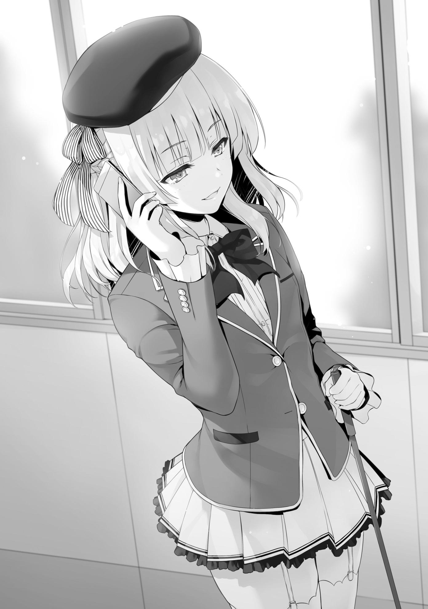
—¿Te llamó la atención...? ¿Te gusta?
—¿Sería extraño si dijera que sí?
Cuando le vino a la mente la apariencia física de Yamauchi, Kamuro sólo sacudió la cabeza.
—Estás bromeando, ¿verdad?
—Sí. Es sólo una broma.
—Tú....
—Lo estoy entrenando. Para ver si puedo usarlo como espía dentro de la clase C.
—Entrenarlo... No puede ser tan simple, ¿verdad?
—Hasta ahora ha sido muy fácil de manejar. Además, como se acaba de anunciar un divertido examen especial, estaba pensando en que participara en un pequeño experimento.
Las palabras de Sakayanagi eran sólo mitad verdaderas.
Aunque Kamuro era cercana, no era alguien en quien confiase completamente.
Sakayanagi había elegido cuidadosamente sus palabras para ocultar lo que necesitaba mantener oculto.
—Vamos a reunirnos con él hoy. Eso debería darte una idea aproximada de cuáles son mis objetivos.
Pensando en lo que pasaría después, Sakayanagi sonrió feliz.
PARTE 6
Esa noche, Sakayangi y Kamuro se reunieron con Yamauchi en el Centro Comercial Keyaki.
Dada la situación, alquilaron una habitación en el salón de karaoke para evitar llamar demasiado la atención.
—Así que, uh.... Kamuro-chan también vino.
—Lo siento. Todavía es un poco vergonzoso que salgamos a solas en una cita...
—N-no, es genial, ¡de verdad! ¡Estoy feliz de tener una cita contigo!
Yamauchi sonrió con desesperación, haciendo todo lo posible para evitar no gustarle.
En realidad, había querido confesarse a Sakayanagi si ella hubiera venido sola, y después, podrían oficialmente convertirse en pareja.
Aún así, Yamauchi hizo a un lado sus sentimientos.
—Yamauchi-kun, ¿estarás bien durante el próximo examen especial?
—¿Eh?
—Bueno, sería genial si lo estuvieras, es sólo que...
Por un momento, la voz de Sakayanagi se apagó.
—Si te expulsaran, no podríamos vernos así nunca más. Eso... es lo único que no quiero que pase.
Aunque la actuación inocente de Sakayanagi hizo que Kamuro se sintiera mal del estómago, no dejó que las náuseas aparecieran en su cara.
Sakayanagi sólo estaba jugando con él.
Además, si se tomara en serio todos y cada uno de los juegos de Sakayanagi, probablemente se volvería loca.
—¡Yo también odiaría eso!
—Es como si nuestros sentimientos estuvieran entrelazados, ¿no?
Sakayanagi palmeó suavemente su pecho con un suspiro de alivio.
—Si hay algo que te preocupa, siempre puedes venir a mí, Yamauchi-kun.
—Pero...
—Tú y yo somos sin lugar a dudas enemigos, pero es diferente durante este examen. No tenemos que competir contra estudiantes de otras clases,
¿verdad?
—Eso es verdad...
—Y debido a eso, es posible que nos ayudemos entre nosotros.
—¿Ayudarnos....?
Yamauchi parecía tener la misma idea.
—Es sólo un ejemplo, pero... ¿qué tal si uso mi voto de aprobación contigo, Yamauchi-kun?
Escuchando eso, Yamauchi tragó saliva con expectación.
La gente quería tantos votos de aprobación de las otras clases como pudieran tener en sus manos.
Los estudiantes en riesgo de expulsión, estaban tan desesperados por estos votos cruciales que se rebajarían a cualquier nivel para conseguirlos.
—¿En serio vas a ayudarme?
—Si tienes problemas, con mucho gusto te ayudaré.
Aunque Yamauchi mantuvo la calma en la superficie, sus amables palabras le habían impactado, haciéndolo en verdad muy feliz.
Nunca había hablado con una chica tan íntimamente en toda su vida. Después de todo, sería vergonzoso que ella se diera cuenta de que no tenía absolutamente ninguna experiencia en el amor.
—A decir verdad... Parece que la gente de mi clase está muy celosa de mí, y me preocupa que puedan usar sus votos de desaprobación contra mí.
—Celosa , ¿eh?
—Es porque soy el único que puede reunirse contigo así, Sakayanagi-chan.
—Eso es verdad, ¿no? No me interesan en absoluto los otros chicos.
No se atrevía a decir que corría el riesgo de ser expulsado porque sus calificaciones eran malas.
En cambio, Yamauchi quería verse bien para que Sakayanagi lo quisiera aún más.
—De cualquier manera, entiendo lo que quieres decir, así que te daré algunas instrucciones secretas que te ayudarán, Yamauchi-kun.
—¿Instrucciones secretas?
—Sí. Por favor, comunícate con aproximadamente la mitad de tu clase y trata de ponerlos de tu lado. Entonces, puedes enfocarte en otra persona y presionar para que sea expulsada.
—Pero, uh... si hiciera eso, ¿no es posible que acabe siendo un objetivo...?
—Supongo que es verdad. No es como si alguien quisiera ser visto como el líder. Después de todo, si terminas molestando imprudentemente a la persona equivocada, podrías acabar por ser votado en su lugar.
Yamauchi asintió mostrándose de acuerdo.
—Por eso voy a ayudarte.
—¿Cómo?
—Hay una veintena de personas que me siguen en la clase A. Haré que todos usen sus votos de aprobación contigo, Yamauchi-kun.
—¿¡Eh!?
—Un buen número de tus compañeros también deberían estar dispuestos a darte votos de aprobación, ¿verdad? Con sus votos incluidos, aunque termines obteniendo más de treinta votos de desaprobación, los votos se cancelarán. Es muy poco probable que te expulsen.
—¿Hablas en serio?
—Por supuesto. Dicho esto, aunque obtengas 20 votos, tu seguridad no estará garantizada. Por eso necesitas tomar las riendas y arrinconar a alguien más.
—¿Pero a quién?
—Veamos.... Naturalmente, no puedes deshacerte de alguien útil para tu clase. Masumi-san, ¿se te ocurre alguien adecuado?
—...¿Qué tal Ayanokouji?
—Ayanokouji....kun, ¿no? Creo que he escuchado el nombre pero...
—Oh, uh, es el tipo de hombre que no destaca en absoluto. ¿Cómo debería explicarlo...?
—Puedes ahorrarme los detalles. Suena como si fuera el blanco perfecto.
Ustedes dos no son muy unidos, ¿verdad?
—¡En absoluto! ¡Es sólo un compañero de clase!
—En ese caso, hagamos que él sea el sacrificio.
—Pero...
El deseo de Yamauchi de salvarse estaba en conflicto con su renuencia a sacrificar a uno de sus compañeros.
Sin embargo, no hace falta decir que su deseo de protegerse era mucho mayor.
—Creo que sería doloroso cortar lazos con un compañero de clase, sin importar el tipo de relación que tengas con él, así que trataría de evitar pensar demasiado en ello. Creo que hemos elegido un objetivo adecuado, así que tenemos que aceptarlo.
Sakayanagi le sonrió con una expresión que parecía decir “De esa manera, tu corazón no dolerá tanto, ¿verdad?”
—El próximo lunes, después de este examen, ¿te gustaría que nos volviéramos a ver, los dos solos? Hay algo que me gustaría decirte entonces, Yamauchi-kun. Es algo muy importante.
—¡¡¡…!!!
Yamauchi titubeó. Sus palabras le dieron el golpe final, atrayéndolo completamente.
Su imaginación se desbocó al imaginar una próxima confesión de amor de Sakayanagi.
En aras de convertir sus sueños en realidad, Yamauchi haría todo lo que estuviera en su poder para evitar la expulsión, sin importar qué.
Aún más importante, si él no llevaba a cabo con éxito la estrategia que ella había ideado, era posible que comenzara a odiarlo.
Estos pensamientos eran lo único que lo estimulaba.
—Así que, empecemos por identificar a las personas que parecen ser amigos de Ayanokouji-kun. Sería mejor si pudiéramos hacer que lo expulsen sin que se entere.
—E-Entiendo.
—Pero antes de eso, tengo un consejo para ti, Yamauchi-kun.
—¿Consejo...?
—Por favor, no le digas a nadie que vamos a votar por ti. Existe el riesgo de que tus compañeros te guarden rencor si hablas de ello descuidadamente.
—Eso es seguro...
Obviamente se pondrían celosos y disgustados si descubrieran que Yamauchi era el único que estaba a salvo en el examen.
—Entendido. No diré nada.
—Muchas gracias.
—Pero... U-uhm.
—¿Qué pasa?
—Uhm, no es que dude de ti ni nada, es sólo que... ¿Realmente vas a usar tu voto de aprobación conmigo?
—¿Estás diciendo que quieres tener algo por escrito?
—Es sólo que estoy un poco preocupado por ello...
Yamauchi estaba preocupado porque le faltaba confianza para dejarlo en un acuerdo verbal, algo que estaba dentro de las expectativas de Sakayanagi.
—¿Crees que te voy a traicionar, Yamauchi-kun? Aunque quisiera, no hay razón para que haga algo así. Pero si realmente no estás dispuesto a creerme... olvidemos que esta conversación alguna vez ocurrió. Si realmente no puedes confiar en una promesa mía, supongo que tendré que reconsiderar la reunión del próximo lunes.
—¡E-espera! ¡Te creo! ¡Confío en ti!
Cuando Sakayanagi intentó echarse para atrás, Yamauchi intentó con impaciencia hacerla regresar.
—Siento haber dudado de ti...
—Está bien. Entiendo que estés ansioso.
Con una suave sonrisa, Sakayanagi le hizo una última advertencia a Yamauchi.
—Dicho esto.... Yamauchi-kun, si te sorprendo escuchándome a escondidas, sacando fotos, o grabando en secreto nuestras conversaciones en el futuro, nuestra relación habrá terminado. Los dos nos convertiremos en enemigos.
—¡No hay problema! ¡Nunca haría algo así!
—Muy bien. Entonces, Masumi-san, si quieres, por favor, regístralo.
—¿Eh? ¿Yo?
—Por favor.
—...Bien.
A pesar de expresar su reticencia, Kamuro registró a Yamauchi.
—Se está poniendo interesante.
Para Sakayanagi, esto no era más que un juego.
En su opinión, el resultado de todo esto ya había sido decidido desde el principio.
Cuando Yamauchi se fue, Sakayanagi se quedó con Kamuro en la sala de karaoke.
—¿Todavía no nos vamos a casa?
Eran un poco más de las 8:00 PM.
El centro comercial sólo estaba abierto para los estudiantes hasta las nueve, y la sala de karaoke también iba a cerrar pronto.
—¿Qué opinas de esta estrategia que se me ha ocurrido, Masumi-san?
—¿Qué quieres decir con...?
—Ayanokouji-kun no es una persona ordinaria. Lo has notado tú misma,
¿verdad?
—Bueno, sé que has estado excesivamente interesada en él.
—Es algo más que eso, ¿no? Has estado cerca de él antes. Deberías haberte dado cuenta.
Aunque ella no estaba segura de nada específico, él era desagradable. Parecía un estudiante que estaba envuelto en misterio.
Esa era la impresión que Kamuro tenía de él.
—Es poderoso.
—...¿Cuán poderoso?
—Gente como Katsuragi-kun, Ryuuen-kun, e Ichinose-san ni siquiera tendrían una oportunidad contra él.
—¿En serio? ¿Qué hay de ti entonces?
—Hmm.... ¿Quién sabe?
—¿Hablas en serio...? No puedo creer que estés diciendo esto.
Kamuro se sorprendió. Había pensado que Sakayanagi diría que podía derrotarlo sin dudarlo.
—Por supuesto que es posible que pueda ganarle. Pero también es cierto que no sé exactamente de lo que es capaz. Bueno... supongo que es un poco diferente a eso. Tal vez hay una parte de mí que quiere que sea un oponente muy por encima de mis capacidades.
Era una sensación misteriosa que nunca antes había notado.
—Espero ver que se tome las cosas en serio antes de que lo expulse.
Era algo que Sakayanagi quería con todo su corazón.
PARTE 7
Ellos se reunieron el martes. Al día siguiente, Sakayanagi comenzó a recibir llamadas telefónicas de Yamauchi con información actualizada, según su reciente conversación.
Ella estaba jugando en ambos lados una partida de ajedrez en su dormitorio mientras le transmitía instrucciones sobre cómo sobrevivir al próximo examen.
Tomó una pieza y la movió hacia adelante en el tablero.
—¿En serio? ¿Tanta gente ya aceptó votar por Ayanokouji-kun?
Había veintiún personas en total, un número impresionante que superó sus expectativas.
Yamauchi seguramente no habría sido capaz de hacer que las cosas salieran tan bien si hubiera hecho todo él solo.
—Yamauchi-kun.
—¿Qué?
—Como esperaba, parece que pedirle a Kushida que actuara como tu mediador fue lo correcto.
Kushida era el tipo de persona que tomaba medidas pensando en sus compañeros de clase.
—Sí, supongo. Ha ido como dijiste que pasaría, Sakayanagi-chan.
Sakayanagi juzgó que, si Yamauchi acudía a pedirle ayuda, Kushida no podría rechazarlo tan fácilmente.
Además, Sakayanagi también consiguió información interesante sobre Kushida.
—Cuando le pediste ayuda, ¿la convenciste con lágrimas como te dije?
—¡No haría algo tan patético!
Sakayanagi miró a Kamuro, la mirada en sus ojos diciendo que él había usado lágrimas para persuadir a Kushida.
—¿Oh? Parece que tus habilidades de negociación se encargaron de todo perfectamente, ¿cierto?
—Es posible...
—De todas formas, te llamaré mañana para saber a quién debes dirigirte a continuación.
—Entendido.
Mañana era jueves, y las decisiones importantes tendrían que tomarse entonces.
Sakayanagi tendría que decidir cómo Yamauchi convencería a estos estudiantes para que se unieran a su facción.
Cuando terminó la llamada, Kamuro habló.
—¿Es esta persona Kushida el tipo de persona que ayudaría a expulsar a alguien?
—Si alguien se le aproxima, sollozando, rogando por su ayuda, no hay manera de que no lo ayude. Sea como sea, es importante tener un buen
manejo de las palabras para conseguir el mayor número posible de seguidores, y Kushida parece tener una lengua de plata.
Agarrando a su reina con una mano, Sakayanagi miró a Kamuro.
—¿Qué crees que pasará después?
—Si sigue así, Ayanokouji acumulará votos de desaprobación y será expulsado de la escuela... pero, si es tan poderoso como dices que es, ¿no hará nada al respecto?
—¿Aunque no sepa que es un objetivo directo?
—Pero no sabe de la estrategia.
—Siempre está en guardia. Dejando a un lado si sabe o no que está siendo atacado, si consideraras la realidad de este examen, no podrías descartar la posibilidad de que finalmente voten por ti. Siendo así, deberías esforzarte por encontrar contramedidas con anticipación.
—...¿Qué quieres decir con contramedidas?
—Demostrar a todos que alguien más es un obstáculo para el éxito de la clase. Cualquiera que sea la razón, cuanto más incompetente sea este alguien, mejor será el resultado.
Sakayanagi imaginó momentáneamente el espectáculo que podría tener lugar dentro de la Clase C en un futuro próximo.
—Yamauchi-kun, por ejemplo, está conspirando conmigo para que uno de sus compañeros sea marginado y expulsado. Si esto saliera a la luz, me imagino que cumpliría perfectamente el papel.
—Entonces, ¿lo que estás diciendo es que no te importa cuál de ellos sea expulsado?
Con su otra mano, Sakayanagi tomó al rey del bando contrario.
—No. Tenemos que dejar al rey para el final.
Hasta el final, Sakayanagi controló hasta la última pieza del tablero de ajedrez.
PARTE 8
Era viernes por la noche, el día antes del examen, y Sakayanagi fue a la sala de karaoke a prepararse para el mismo.
—¿Cuál es la situación?
Kamuro y Hashimoto estaban presentes, junto con Kitou, para un total de cuatro personas.
—Parece que todo fue expuesto hoy. Al parecer, Horikita-san se enteró del plan y expuso al resto de la clase el hecho de que yo colaboro con Yamauchi-kun. Me pregunto cómo se filtró la información.
Sakayanagi se llevó una patata frita a la boca.
Miró intensamente a sus compañeros de clase antes de que uno de ellos finalmente hablara.
—Sakayanagi, la filtración vino de Karuizawa. Como te dije antes, si querías asegurarte de que Ayanokouji fuera expulsado, habría sido mejor evitar meter a Karuizawa en el grupo de Yamauchi.
Hashimoto Masayoshi. Era uno de los colaboradores más cercanos de Sakayanagi, y era alguien que ya se había fijado en Ayanokouji.
Durante el curso de sus investigaciones, vio cómo Ayanokouji se reunía con Karuizawa en secreto, por lo que previamente aportó su opinión sobre lo que Sakayanagi debía hacer esta vez.
Aunque Sakayanagi había accedido a abstenerse de meter a Karuizawa en el grupo al principio, ayer cambió de opinión.
Como consecuencia, su plan fue expuesto a los estudiantes de la clase C.
—¿No te dije que nuestra primera prioridad era asegurarnos de que Ayanokouji no se diera cuenta de que era un objetivo hasta que el examen terminara?
—Sí. Definitivamente recordé tus palabras. Es cierto que Ayanokouji-kun y Karuizawa comparten una relación inusual. Es decir, si ella se enteraba del
plan, había muchas posibilidades de que Ayanokouji-kun también lo supiera.
Esta fue la razón por la que Sakayanagi decidió posponer la incorporación de Karuizawa al grupo de Yamauchi.
Dejó pasar el martes y el miércoles, eligiendo a propósito meterla en el grupo el jueves.
Luego, retrocedió y esperó a ver qué pasaba después. Basándose en lo que ocurrió hoy, es muy probable que haya filtrado la información a Ayanokouji
—Lo arruinaste, ¿verdad, Sakayanagi?
La que preguntó esto no era otra que Kamuro, que estaba escuchando en silencio la conversación.
Hashimoto también habló, ofreciendo un análisis de por qué Sakayanagi cometió un error tan sencillo.
—Karuizawa es una de las chicas más influyentes de su clase. Si la metíanmos en el grupo, eso habría garantizado la expulsión de Ayanokouji Olvida los veinte votos, es posible que hubiéramos conseguido unos treinta.
Dejaste que la avaricia te afectara.
—Sabía muy bien que iban a llevar a cabo un juicio en clase. Era sólo cuestión de tiempo.
—Pero, si las cosas no hubieran salido a la luz, Yamauchi también podría haber tenido una salida.
Después de escuchar cada una de sus opiniones, Sakayanagi se sentía muy entretenida.
—Si sabe que se ha convertido en la presa de alguien, incluso un herbívoro tratará de luchar por su vida si se reduce a ello. Pero, encuentro que eso es exactamente lo que lo hace tan interesante. ¿No quieres ver lo que hará en este tiempo que le queda? ¿Cómo luchará para mantenerse a flote?
—¿Por eso dejaste a propósito que Karuizawa filtrara la información?
—También pude confirmar que su información sobre Karuizawa y Ayanokouji era correcta.
—Pero Ayanokouji fue a ver a Horikita, quien se lo reveló todo al resto de la clase. Eso dificultó saber lo que sucederá después. Teniendo en cuenta que Yamauchi no será expulsado por nuestros votos de aprobación, todavía no hay manera de que Ayanokouji sea expulsado. No tengo ni idea de quién va a ser expulsado en este momento.
Cuando Hashimoto terminó, Kamuro también habló.
—¿No fue también un error hacer contratos con los que aceptaron votar por Ayanokouji sin recibir nada por escrito? ¿Cuánta gente va a votar por él después de lo que pasó hoy...?
Habría una disminución dramática en el número de votos de desaprobación que obtendría Ayanokouji, mientras que el número de votos de Yamauchi aumentaría.
Sin embargo, Yamauchi obtendría 20 votos de la Clase A para escapar de esta situación.
En cuyo caso, será difícil adivinar quién terminará con más votos en su contra.
Tras escuchar el análisis de la situación de Hashimoto y Kamuro, Sakayanagi sonrió.
Para Sakayanagi, el resultado de todo esto era obvio.
Kamuro, Hashimoto, y Yamauchi simplemente no podían verlo todavía.
Recordó la razón por la que hizo esto en primer lugar.
Sakayanagi sacó su teléfono y lo apagó.
Después de todo, recibiría un número incesante e interminable de llamadas y mensajes de Yamauchi si lo dejara encendido.
La clase A tenía muchos votos de aprobación para usar durante este examen.
Yamauchi quizá se sentiría preocupado de si los iban a usar en él o no.
—Parece que hay algo que olvidé contarles a todos, una historia muy importante sobre Yamauchi-kun.
De esta manera, Sakayanagi les contó el encuentro que había olvidado mencionar por descuido.
LOS EXPULSADOS
El sábado por la mañana, el día del examen, llegó finalmente.
Al parecer, casi todas las clases lograron tomar una decisión.
La clase A eligió expulsar a Katsuragi y la clase D eligió expulsar a Ryuuen.
La clase B continuaba creyendo que nadie sería expulsado.
Por supuesto, existía la posibilidad de que nada de eso resultara como se había planeado. Todo el mundo tenía la oportunidad de encarar la expulsión.
Nadie lo sabría con seguridad hasta que los resultados fueran revelados.
Aunque una clase trabajara en conjunto para deshacerse de alguien, no importaría mucho si lograban reunir suficientes votos de aprobación de las otras clases.
Lo importante ahora era lo que se hacía con el poco tiempo que nos quedaba.
Ni siquiera yo estaba cien por ciento a salvo.
No había garantías absolutas como esa en este examen.
Aunque teníamos que estar en el aula a la misma hora de siempre, el examen comenzaría un poco más tarde, a las nueve.
En este momento apenas eran las ocho y media.
¿Debemos tomar esta breve prórroga como una especie de consideración por parte de la escuela... o hay otra razón?
Tal vez sea un truco para mantenernos alerta hasta el final.
—¿Realmente no hiciste nada?
—¿Qué?
—Te pregunto si realmente te mantuviste al margen y no te involucraste en nada de esto, aunque estuvieras en peligro.
—¿Parece que he hecho algo?
—...No en la superficie.
—Ahí está tu respuesta. Esta vez no hice nada. Más bien, tú eres la que me salvó.
—Entonces no sería gracioso que te expulsaran por eso.
—Todavía más si me expulsan después de pelear como tú lo hiciste.
Esta podría ser la última conversación que tendríamos como vecinos.
—Supongo.
Horikita respondió despectivamente.
Justo así, la clase dio la bienvenida al examen en silencio.
Al menos, eso es lo que pensé... En el último momento, algo sucedió una vez más.
—Por favor, escuchen todos.
El que rompió el silencio no fue otro que Hirata. Ayer discutió con Horikita, pero no había hecho nada más que eso.
Sólo habló tontamente de votar por Horikita.
Por supuesto, es posible que algunos de los estudiantes que admiran a Hirata voten en contra de ella.
Sin embargo, eso sería demasiado débil para un golpe definitivo.
Dentro de la clase C, la evaluación de Horikita es relativamente alta.
A pesar de que su forma de hablar franca y directa es aguda y punzante, también da una impresión de fiabilidad.
—Después de escuchar lo que Horikita-san y todos los demás tenían que decir ayer, he llegado a una conclusión. El enfoque principal de este examen... es por quién deberíamos emitir nuestros votos de desaprobación,
¿verdad?
Hirata estaba tranquilo y sereno mientras hablaba.
—¿Todavía... va a decir algo?
—Parece que sí.
Si no lo tuviera, no estaría tratando de decir algo así en el último minuto.
—Qué desperdicio. No tiene un plan. Sólo intenta retrasar lo inevitable.
No, es difícil decirlo con seguridad...
Pude ver indicios de una nueva determinación en los ojos de Hirata.
—En primer lugar, me gustaría disculparme por lo que pasó ayer, cuando dije que votaría en contra de Horikita-san.
Justo como pensaba, Hirata inclinó su cabeza ante Horikita para disculparse por su grosero comportamiento.
—No hay nada por lo que tengas que disculparte. ¿Qué es lo que estás haciendo?
—Decidí que eres necesaria para el éxito de nuestra clase.
—Si ese es el caso, ¿has pensado en quién es innecesario?
—Sí. Lo hice.
Hirata habló firmemente, haciendo que Horikita vacilara por un momento.
—...¿Podrías decirnos quién?
—Se los diré ahora mismo.
Hirata se levantó lentamente de su asiento y se puso detrás del podio de enseñanza, tal como Horikita lo hizo el día anterior.
—Me encanta esta clase. Creo que todos y cada uno de ustedes son necesarios. No importa lo que diga alguien, o lo que haga cualquiera de ustedes, eso no cambiará. Pero, ya sé que eso no resolverá nada.
Después de todas sus dificultades, esta es la respuesta a la que Hirata llegó.
Me pareció que nada cambió con respecto a lo que me contó ayer.
—Quiero que todo el mundo emita un voto de desaprobación por mí.
Hirata dijo lo que pensé que diría.
—¿¡Cómo podría alguno de nosotros hacer algo así!?
Exclamó Mii-chan, y otras chicas expresaron pensamientos similares sucesivamente.
—Estará bien si me expulsan. Estoy preparado para al menos hacer eso.
—Piensa en lo que dices... ¿Te has vuelto loco?
Horikita levantó inconscientemente su voz, aunque, dada la situación, sería bueno dejar que Hirata diga lo que quiera.
—¿Vas a sacrificarte sólo porque no puedes decidir a quién expulsar?
—¿Lo dijiste bien, Horikita-san? ¿Que si un estudiante quiere ser expulsado, no habría nada más de lo que tengamos que hablar?
—Eso...
—Así que me ofrezco como voluntario.
—Nadie en esta clase quiere ver que te expulsen. Tú actúas como mediador para resolver los conflictos de la clase. Esto es demasiado ridículo.
—De cualquier manera, no me importa.
No estaría mal decir que la clase C estaba al borde del caos.
En este punto, no había sorpresas sobre contra quién votaría la gente. La pregunta clave cambió de "¿Quién obtendría los votos de desaprobación?" a
"¿Quién obtendría los votos de aprobación?".
Sin Hirata, los futuros exámenes especiales serían mucho más difíciles.
Ese es el riesgo de perder a una de las figuras centrales de la clase.
—¡No hay absolutamente, ni de broma, ninguna posibilidad de que use un voto de desaprobación para Hirata-kun!
Shinohara y el resto de las chicas comenzaron a hablar en grupo para defender a Hirata.
El corazón de Hirata seguramente se sentía muchísimo peor cada vez que hablaban por él.
—No hay razón para que ustedes me defiendan. Ya los odio a todos ustedes.
Su tono era el mismo de siempre, pero las palabras que dijo eran frías.
—Así que, por favor, permítanme hacer esto más fácil para todos nosotros.
—¡Yo... votaré por Hirata! —Gritó Yamauchi—. ¡Si es por Hirata, creo que todos los demás deberían votar por él también!
Luego continuó gritando cosas como esa.
—Ya veo. Esta es la última resistencia de Yamauchi-kun...
Lo más probable es que Yamauchi se haya puesto en contacto ayer con Hirata y le haya suplicado que no quería ser expulsado, rogándole que lo ayudara.
Esa puede ser una de las razones por las que Hirata decidió firmemente ser expulsado.
Entonces, después de un largo silencio, Chabashira-sensei entró en el aula.
—Bien, entonces, la votación de la clase comenzará ahora. Una vez que su nombre sea pronunciado, por favor diríjanse a la sala de votación.
No parecía que fuéramos a votar todos al mismo tiempo en el salón de clases.
No había garantía de que no viéramos los votos de los demás. La escuela hacía lo que podía para asegurar que los votos permanecieran anónimos.
Ahora, ¿cómo resultará todo a partir de aquí...?
PARTE 1
Dentro de la Clase A esa misma mañana, todos esperaban pacientemente el anuncio de los resultados.
El resultado ya había sido decidido desde que se anunció el examen suplementario, y tampoco hubo objeciones al respecto.
Cuando sonó la campana, Mashima-sensei entró en el aula para anunciar el resultado.
Estaba tan tranquilo como siempre. No tenía una opinión muy clara sobre lo que estaba a punto de ocurrir.
No, más bien, era como si simplemente intentara no pensar mucho en ello.
Habían pasado cuatro años desde que se convirtió en profesor de la Preparatoria, y había visto a muchos estudiantes ser expulsados en ese tiempo.
—Ahora anunciaré los resultados del examen especial suplementario. Para empezar, el estudiante que recibió más votos de aprobación... eres tú, Sakayanagi, con un total de treinta y seis votos.
—No esperaba que todos ustedes votaran por mí. Realmente debo agradecer a todos.
Ella respondió con palabras vacías de gratitud. Casi todos en la clase votaron por ella.
—A continuación... anunciaré el estudiante que recibió más votos de desaprobación. Estoy seguro de que todos ustedes ya lo saben, pero la persona cuyo nombre se mencione será expulsada. Después de esto, tendrá que hacer sus maletas y venir conmigo a la sala de profesores.
El aula estaba completamente en silencio.
Todos los estudiantes estaban callados mientras esperaban que el nombre fuera mencionado.
—En último lugar, con treinta y seis votos de desaprobación...
Hizo una pausa de una fracción de segundo, y luego...
—Yahiko Totsuka.
Habló.
El nombre resonó por toda la silenciosa aula.
—¡Qué absurdo! ¿Qué está pasando?
Katsuragi se levantó de su asiento, levantando la voz después de que los resultados se hubieran hecho patentes.
—K-Katsuragi-san... ¿Por qué? ¿Qué...?
También Totsuka miró a Katsuragi con una expresión de incredulidad en su cara.
Recibió una abrumadora mayoría, treinta y seis, de los votos de desaprobación de la clase, asegurando su expulsión.
Entonces, Mashima-sensei reveló el número total de votos que cada estudiante de la clase recibió.
Katsuragi se colocó justo detrás de Totsuka con un total de treinta votos de desaprobación.
—¿Qué está pasando aquí, sensei? El que debería ser expulsado soy yo...
—No hay ningún error.
Mashima-sensei interrumpió a Katsuragi, respondiendo con calma a su pregunta.
Una joven comenzó a hablar, como si quisiera arrojar luz sobre una situación tan inexplicable.
—Katsuragi-kun, parece que te han dado algunos votos de aprobación.
Qué maravilloso.
Al escuchar eso, Katsuragi finalmente entendió.
Esto no ocurrió debido a algún tipo de error. Más bien, fue el resultado de uno de los planes de Sakayanagi.
—¡Espera, Sakayanagi! ¡El que debería ser expulsado soy yo!
—¿Expulsión? ¿A ti? No eras el objetivo en primer lugar.
Ella respondió con decisión.
—Deja de bromear conmigo. ¡Definitivamente dijiste que te ibas a deshacer de mí!
—Ahora que lo pienso, tienes razón, ¿no? Dije que me iba a deshacer de ti, pero... eso fue sólo una mentira.
Sin una pizca de aprehensión, Sakayanagi sonrió gentilmente.
—¿Por qué... por qué?
—Es simple. Totsuka-kun no aporta ningún beneficio a la Clase A. Por otro lado, eres agudo, y tus reflejos tampoco son nada de lo que burlarse. Esto, combinado con tu cabeza tranquila, te hace útil a tu manera. Este examen es perfecto para deshacerse de alguien innecesario, por lo que sólo un idiota se desharía de alguien a quien todavía le queda uso.
Katsuragi hizo un gesto de dolor, incapaz de refutar su punto.
Aunque, esa no era la única razón por la que Sakayanagi hizo esto.
Originalmente, Totsuka no era el único que se ponía del lado de Katsuragi.
Aunque su intención era hacer de Katsuragi un ejemplo implacable por ir en su contra, la expulsión de Totsuka tendría un impacto aún mayor en la Clase A.
Inculcaría la idea de que, si te pones del lado de Katsuragi, serás el próximo en verte en los zapatos de Totsuka.
—¿Por qué harías esto de forma tan indirecta...?
—¿No es natural que alguien haga todo lo posible para evitar la expulsión?
Hay muchos votos de aprobación flotando alrededor de las otras clases en este examen. Si Totsuka-kun hubiera ido a conseguirlos de las otras clases para salvarse, no creo que hubiéramos podido hacer que lo expulsaran.
No podía saber con seguridad que otra clase no decidiría caprichosamente salvar a Totsuka.
Sin embargo, si señalaba a Katsuragi desde el principio, nadie se molestaría en usar sus votos de aprobación con Totsuka.
—Gracias por tu duro trabajo, Totsuka-kun. Asegúrate de cuidarte cuando salgas de la escuela.
—¡Maldita sea! ¡Maldita sea! ¡Maldita sea...!
Totsuka se encorvó como si estuviera a punto de derrumbarse. Katsuragi no pudo encontrar las palabras adecuadas para consolarlo.
Totsuka normalmente se habría alegrado mucho al saber que Katsuragi no iba a ser expulsado.
Pero ahora que él mismo era expulsado, eso ya no importaba.
En cambio, sólo podía sentir resentimiento cuando se preguntaba por qué tenía que ser él en vez de su amigo.
Si Katsuragi hubiera sido expulsado, Totsuka Yahiko habría sido capaz de permanecer en la Clase A. Y aunque le hubiera disgustado, habría seguido a Sakayanagi hasta la graduación. Y entonces, habría tenido éxito en la vida.
Aunque se sentía culpable por ello, ya había empezado a imaginar vagamente su maravilloso futuro como graduado de la Clase A.
Pero debido a este repentino giro del destino, lo perdió todo.
—Salvarlo con veinte millones de puntos... es quizá imposible.
—Correcto. Desafortunadamente, aunque sumáramos todos nuestros puntos, no tendríamos suficiente.
—Totsuka, no hay... ninguna manera de revocar esta decisión.
El profesor de la clase, Mashima-sensei, habló de forma definitiva mientras enterraba el dolor dentro de su corazón.
—………
Totsuka se quedó sin palabras, incapaz de hacer otra cosa que no fuera asentir con la cabeza.
—Totsuka, por favor, por el momento ven conmigo a la sala de profesores.
Te dejaré recoger tus cosas más tarde.
Considerando los sentimientos del joven, Mashima-sensei pidió que Totsuka saliera del salón.
Su expulsión estaba grabada en piedra, por lo que permanecer en la aula solo serviría para herirlo más.
—Por cierto, Mashima-sensei... ¿Puedo preguntarle algo?
—¿Qué pasa, Sakayanagi?
Cuando Mashima-sensei empezó a salir del aula con Totsuka, la voz de Sakayanagi le detuvo.
Ordenó a Totsuka que esperara en el pasillo antes de girarse para escucharla.
—Aunque es una pena que Totsuka-kun haya tenido que ser sacrificado...
Ya se ha decidido quién será expulsado en las otras clases, ¿verdad?
—Tentativamente. Tan pronto como los resultados estén listos, se publicarán en el tablón de anuncios del primer piso.
—Entonces, dependiendo de los resultados, ¿es posible que haya consecuencias para Katsuragi-kun?
—¿De qué estás hablando, Sakayanagi?
Katsuragi la interrogó, sin estar seguro de a dónde quería llegar.
—Sólo estoy pidiendo referencias futuras.
Por un momento, Mashima-sensei, al igual que Katsuragi, no parecía entender el significado de las palabras de Sakayanagi.
No había considerado la posibilidad de que ella le preguntara sobre "eso".
Sin embargo, al ver la valiente sonrisa de Sakayanagi, Mashima-sensei cambió de opinión.
—...No importa quién sea expulsado, no habrá consecuencias. "Eso" no funciona así. Si, por alguna razón, hubiera consecuencias, ni siquiera tú podrías aprovecharte de ello muy fácilmente.
—Eso es sin duda cierto. Muchas gracias por responder.
Después de que Mashima-sensei saliera del aula, Katsuragi se acercó tranquilamente a Sakayanagi.
En respuesta, Hashimoto y Kitou se levantaron apresuradamente para obstruirle el paso ante la remota posibilidad de que recurriera a la violencia.
Sin embargo, antes de que Katsuragi pudiera decir una palabra, Sakayanagi habló.
—No hay razón para que me guardes rencor, Katsuragi-kun. Alguien tenía que ser expulsado durante este examen. Ya fueras tú o Totsuka-kun, los resultados deben ser tomados en serio. El hecho es que hubo una votación.
Una en la que participaron todos los estudiantes de la clase A.
—... Lo entiendo.
Katsuragi no planeaba ponerse violento. Sólo pretendía desahogar su insatisfacción con ella.
Y aún así, Sakayanagi puso fin incluso a eso.
—Está bien entonces. Después de todo, no quiero que retrases el avance de nuestra clase porque te consuma la desesperación. Sin embargo... Si por casualidad en el futuro te enfrentaras a la Clase A...
—Te dije que lo entendía. No tienes que arrastrar a nadie más en esto.
—Me alegra ver que eres tan sensato.
Si Katsuragi le mostraba sus colmillos a Sakayanagi por resentimiento a causa de la expulsión de Totsuka, Sakayanagi lo amenazó con expulsar a otra persona la próxima vez. Sakayanagi era muy consciente de que, mientras Katsuragi fuera obediente, podía contribuir en gran medida al futuro éxito de la Clase A.
Así, Katsuragi se rindió por completo. Sin ningún medio de ir en contra de ella, no tenía otra opción que levantar la bandera blanca y rendirse ante Sakayanagi.
—Bueno, entonces... me pregunto cómo están las otras clases en este momento.
Por supuesto, en lo que a Sakayanagi se refiere, la clase B y la clase D ni siquiera merecían la pena.
Lo único que le importaba era lo que había sucedido dentro de la Clase C, la clase en la que estaba Ayanokouji. No podía evitarlo, pero estaba ansiosa por escuchar sobre ello.
PARTE 2
En la Clase C, el sonido de Yamauchi golpeando incansablemente su pie era extremadamente molesto.
—Oye, Haruki... Intenta calmarte un poco.
Ike le susurró en voz baja una advertencia.
—C-cállate. Ya lo sé.
—Fufufu. En cualquier caso, parece que tu derrota está cerca, ¿no crees?
—¿Eh? ¿A dónde quieres llegar, Koenji? No me van a expulsar, considerando las otras opciones.
Yamauchi se giró y miró a Koenji con una sonrisa espeluznante en su rostro.
—Creo que es justo decir que, de todos los de la clase, un número considerable de estudiantes han votado en tu contra.
Ike y Sudou se sentaron en silencio, incapaces de ayudar a Yamauchi mientras Koenji avivaba las llamas. Hirata, sin embargo, intervino.
—Así no es como va a resultar esto. El que será expulsado soy yo.
—¿Todavía sigues con eso? No te has dado cuenta todavía, ¿verdad?
—...¿De qué estás hablando?
Koenji sacó su teléfono con una sonrisa audaz en su rostro.
—Este mensaje me lo envió una de las chicas de nuestra clase. Dice así:
“Creo que Hirata-kun tiene la intención de sacrificarse y ofrecerse como voluntario para ser expulsado mañana. Puede que termine diciendo algo hiriente sobre todos o que se haga pasar por un mal tipo, pero esos no serán sus verdaderos sentimientos. Por favor, tengan fe en él y no voten en su contra por ello”. Me parece que fue enviado a todos menos a ti y a Yamauchi-kun.
Hirata se acercó a Koenji y leyó el mensaje en el teléfono por sí mismo.
—La mayoría de los estudiantes se compadecerían de ti después de ver un mensaje como éste. Después de todo, no es falso que hayas pasado este último año tomando medidas por el bien de la clase. ¿No tendría más sentido para ti conseguir más votos de aprobación por esto?
—No puede ser...
El plan de Hirata para conseguir la mayoría de los votos de desaprobación había fracasado.
Por supuesto, esto afectó negativamente a los estudiantes que corrían más riesgo de ser expulsados.
Horikita se giró silenciosamente hacia mí y habló.
—Estás terriblemente tranquilo. Es casi como si ya hubieras previsto lo que sucederá.
—Probablemente también sabes lo que pasará.
—Incluso si lo hiciera, no me sentaría a mirar con tanta complacencia.
Mientras haya espacio para la incertidumbre, todavía hay razones para preocuparse.
Koenji interrumpió, como si respondiera a Horikita.
—El único que debería estar preocupado es él.
Casi todos los alumnos de la clase dirigieron su mirada hacia Yamauchi, preguntándose cómo respondería después de escuchar algo así.
Yamauchi se puso de pie lentamente y se dio la vuelta para ver Koenji.
Su expresión era de confianza, una expresión que decía que estaba seguro de sus posibilidades de triunfar.
—...Hah.
Yamauchi se rió de Koenji con desprecio.
—Adelante, di lo que quieras... La persona que va a ser expulsada no voy a ser yo.
—¿Oh? ¿Y nos dirás por qué?
—Bien. Lo haré.
Parecía que Yamauchi ya no podía soportar que Koenji dijera lo que quisiera.
—¿Cuántos de ustedes votaron en mi contra? ¿Veinte de ustedes?
¿Treinta? No traicioné específicamente a ninguno de ustedes, ¿y aún así me tratan de esta manera? ¡Es irrazonable! Pero está bien. Los perdonaré
—con una sonrisa desconsiderada, Yamauchi se acercó a Ike y le dio una palmada en el hombro.
—Lo siento, Kanji. Por hacer que te preocupes tanto por mí.
—S-sí.
Totalmente inconsciente de lo que su amigo quería decir, Ike no pudo hacer otra cosa que asentir.
—Hay varias personas aquí que podrían ser expulsadas aparte de mí,
¿verdad? Están Kanji, Sudou, Koenji, y Ayanokouji, pero me pregunto cuántos votos de aprobación obtendrán. ¡Estoy tan preocupado!
—Por lo que dices, parece que esperas obtener un gran número de votos de aprobación.
—Sí, eso es. Los tendré.
—Incluso si tus amigos se sintieran lo suficientemente apenados como para apoyarte, sólo obtendrías unos cuatro o cinco votos, en el mejor de los casos. ¿Estás diciendo que eso es suficiente para ponerte en la zona segura?
—Está bien. Eso sería suficiente. Jajaja... Sí, no importa por quién hayas votado, ¡todo es inútil! —Yamauchi levantó ostentosamente sus brazos en el aire—. ¡Sakayanagi-chan prometió que me daría veinte votos de aprobación! En otras palabras, aunque la mayoría de la clase vote en mi contra, ¡no seré yo quien sea expulsado!
Al darse cuenta de que no tenía sentido seguir ocultándolo, Yamauchi decidió mostrar sus cartas.
—Por eso no importa cuántos de ustedes hayan votado en mi contra...
¡Estoy protegido por la Clase A!
Los votos ya habían sido emitidos.
Probablemente era cierto que Yamauchi hizo una promesa como esa con Sakayanagi.
Asumiendo que obtuvo cinco votos de aprobación de la Clase C y veinte de la Clase A, incluso en el peor de los casos, solo terminaría con un máximo de nueve votos de desaprobación.
Si dice la verdad, difícilmente se puede considerar que esté en riesgo de ser expulsado.
El peligro se desplazaría entonces hacia Koenji y yo. Hasta Ike y Sudou podrían estar en problemas.
—Si ese es el caso, entonces ¿por qué pareces tan ansioso?
Yamauchi no parecía tranquilo en absoluto. Temblaba sin parar.
Era la prueba de que, mentalmente, estaba bajo una increíble cantidad de estrés.
—Eso es...
—Como hiciste una promesa con el enemigo, te aseguraste de firmar un contrato, ¿verdad? Es uno de los fundamentos básicos de las negociaciones.
—N-no, pero eso es...
—Una simple promesa verbal no cuenta para nada. La pequeña señorita no es tan misericordiosa.
—¡Claro que lo sé! ¡Está bien!
Las palabras de Koenji simplemente no fueron capaces de llegar a él.
Yamauchi sólo podía creer que Sakayanagi no se retractaría de su palabra. No había nada más que pudiera hacer.
Debió de contactar con Sakayanagi muchas veces anoche para asegurarse de que todo saliera como él esperaba.
—Vaya, vaya, entonces debes estar muy tranquilo. Parece que el voto de desaprobación que emití por ti no tuvo sentido.
—Así es, no tuvo sentido. ¡No tuvo sentido!
—Cállate, Yamauchi. Pude escuchar tus gritos desde el pasillo —Justo entonces, llegó Chabashira-sensei—. Los hice esperar a todos ustedes.
Anunciaré los resultados de la clase C. Por favor, tomen asiento.
El momento del juicio finalmente llegó.
Muy pronto, un estudiante sería expulsado de esta clase.
¿Sería Yamauchi, que se decía a sí mismo que todo estaría bien?
¿Sería Sudou o Ike, uno de los candidatos secundarios a la expulsión?
¿Sería Hirata, que esperaba pacientemente el anuncio de los resultados?
¿Sería Koenji, que estaba tan desatento como siempre?
¿Sería Horikita o yo, que vigilábamos tranquilamente el aula?
O, ¿acabaría siendo otra persona completamente diferente?
—Para empezar, anunciaré a los tres que terminaron con más votos de aprobación. En tercer lugar está... Kushida Kikyou.
Kushida suspiró con alivio cuando escuchó como la nombraban.
Aunque Yamauchi la atacó ayer, acabó ganándose muchos votos de aprobación.
Si se tiene en cuenta el hecho de que es adorada por sus compañeros de clase, un resultado como éste tiene sentido.
—A continuación, en segundo lugar...
Chabashira-sensei empezó a leer un poco más despacio.
Ni siquiera yo podía predecir completamente el nombre de quién iba a decir.
—Eres tú, Hirata Yousuke.
—¡…!
En el momento en que fue nombrado, Hirata cerró los ojos y miró hacia el cielo.
El vergonzoso comportamiento que mostró ayer no tuvo consecuencias significativas.
Hirata trabajó duro este último año, pasando por buenos y malos momentos por el bien de la clase.
Se había ganado una enorme cantidad de confianza, especialmente de las chicas de la clase.
Aunque no hubiera conseguido que Kei difundiera ese mensaje de texto ayer, su clasificación apenas habría cambiado.
—P-pero, si Hirata se colocó en segundo lugar... ¿quién se colocó en primer lugar?
Desde el principio, todos esperaban que Hirata y Kushida obtuvieran la mayoría de los votos de aprobación.
Era razonable que ocuparan el segundo y el tercer lugar, pero este resultado significaba que había alguien que los superaba a ambos.
—...En cuanto al primer lugar...
Chabashira-sensei dejó mostrar una ligera sonrisa antes de leer el nombre.
Cerré los ojos.
—Ayanokouji Kiyotaka.
Todo salió como esperaba.
—¿Qu-qué?
Yamauchi, con el que se suponía que iba a competir por el último puesto, fue el primero en reaccionar.
—¿¡No lo confunde con el primer lugar para el voto de desaprobación!?
¿¡Sensei!?
—No. No hay ninguna duda. Ocupó el primer lugar con un espléndido total de cuarenta y dos votos.
Todos mis compañeros de clase se sorprendieron. Después de todo, recibí más votos de aprobación en nuestra clase que los estudiantes de la misma.
—Tú. ¿Qué hiciste...?
Horikita tampoco pudo ocultar su sorpresa.
—Como dije, no hice nada.
Sakayanagi hizo todo esto ella sola.
—Y finalmente, el estudiante que terminó con más votos de desaprobación, con un gran total de treinta y tres votos. Lamento decir que eres tú, Yamauchi Haruki.
Ahora, Yamauchi recibió otro fuerte golpe.
Antes de que pudiera entender la situación, le dijeron que tenía que dejar la escuela.
—¿¡Treinta y tres votos!?
Confirmó que no había recibido ningún voto de aprobación de la clase A.
El penúltimo fue Sudou con veintiún votos. Y justo detrás de él venía Ike con veinte.
Estaba claro que sus amigos tampoco estaban de ninguna manera a salvo.
—¡No! ¿Por qué? ¿Por qué tengo que ser expulsado?
Chabashira-sensei se acercó a Yamauchi y puso su brazo sobre su hombro, pero él se lo quitó.
—...Haruki...
Como sus amigos, Ike y Sudou sólo pudieron mirar hacia otro lado.
Esperaban que, de alguna manera, Yamauchi sobreviviera al examen, pero lo único que podían hacer era esperar los resultados.
Y ahora que los resultados aparecieron, se dieron cuenta de la triste verdad que hay detrás de todo esto.
Si Yamauchi no hubiera quedado en último lugar, ¿qué les habría pasado?
—¡¿Por qué, por qué, por qué¡! ¡¡¿Por qué yo?!! ¡Este es un examen tan estúpido! ¡Una completa broma!
—Aunque eres libre de pensar lo que quieras, la decisión ya está tomada, Yamauchi
—¡¡CÁLLATE!!
Yamauchi gritó con cada onza de su ser.
Aulló, incapaz de aceptar la realidad de su situación.
—Así es. Sakayanagi, ¡vaya a preguntarle a Sakayanagi! ¡Dijo que haría que la Clase A usara sus votos de aprobación conmigo! ¡Ella no cumplió su promesa! ¿Le permitirán salirse con la suya?"
—¿Tienes algo que demuestre fehacientemente que ella hizo esa promesa?
Preguntó Chabashira-sensei.
—¡Ella lo prometió! ¡En la sala de karaoke! ¡¡¡La escuché!!!
—Aunque quiero creerte, las palabras por sí solas no bastan para probar nada.
—Oh Dios mío, ¿por qué está pasando esto...?
—Es hora de dejar el aula, Yamauchi.
A pesar de sus instrucciones, Yamauchi no se movió ni un centímetro.
—Sal de aquí rápidamente. Tu existencia aquí ya fue borrada.
—¡No lo he aceptado todavía!
—¿Así que planeas ser irremediablemente defectuoso, lamentable y feo hasta el final?
Después de las persistentes provocaciones de Koenji, Yamauchi finalmente se quebró.
—¡¡¡Grahhhhhhhhhhhhhhhh!!!
Tomó la silla de su pupitre y la balanceó hacia Koenji.
Luego levantó la silla en el aire y la hizo descender, apuntando a la cabeza de Koenji.
Si el ataque lo hubiera golpeado directamente, la lesión producida sería inexcusable, sin embargo, Koenji no fue tan ingenuo como para ser golpeado por un ataque tan descuidado.
Koenji agarró casualmente la pata de la silla mientras se balanceaba hacia él y sacó por la fuerza la silla de las manos de Yamauchi.
—Intentaste matarme. No tendrás ninguna queja si te devuelvo el favor,
¿cierto?
La cara de Yamauchi se endureció inmediatamente.
—Ya es suficiente.
Chabashira-sensei intervino, sintiendo el peligro que había detrás de las palabras de Koenji.
Siguiendo sus instrucciones, Koenji rápidamente soltó la silla.
—No hagas nada más que esto, Yamauchi. Por tu propio bien.
Desde los alrededores de nuestra aula, Yamauchi notó las desgarradoras miradas de sus compañeros de clase, sus miradas llenas de compasión.
Y dentro de él, algo se rompió.
—¡U-uwaaaahhhh!
Desmoronándose en ese lugar, levantó la voz y empezó a gritar.
—...Vete.
Al escuchar las palabras de Chabashira-sensei por segunda vez, Yamauchi perdió su voluntad para resistirse.
PARTE 3
Faltaba una persona en la clase.
Era el mismo salón de clases, pero sin embargo, era marcadamente diferente.
El ambiente era pesado y todos estaban descorazonados.
No importaba quién terminara siendo expulsado, la situación hubiera resultado así.
Sin embargo, teniendo en cuenta que alguien tenía que ser expulsado, es natural que la decisión se tomara después de considerar todos los posibles pros y contras.
Para asegurar el futuro éxito de la clase como conjunto, ¿quién es necesario?
¿Quién es innecesario?
Estas preguntas tenían que ser respondidas.
Una persona finalmente se levantó de su asiento y salió del salón.
Con esto, todos los demás siguieron el ejemplo sin que nadie dijera mucho.
Después de un día de descanso, una vez que llegara el lunes, todos volverían a la clase una vez más.
Y cuando llegara ese momento, Yamauchi no estaría allí.
—Él está más loco de lo que pensaba.
El 'él' al que Horikita se refería no era, por supuesto, otro que Hirata.
Estaba sentado inmóvil en su escritorio, como si estuviera aturdido.
Había estado así desde que Yamauchi dejó el aula.
—Hirata-kun... Uhm...
Mii-chan lo llamó tímidamente, preocupado por su bienestar.
Sin embargo, Hirata solo cambió ligeramente su mirada para observarla y no dijo nada.
¿Qué pensaba Hirata de esta clase ahora?
La respuesta a eso era algo que sólo él conocía. En cualquier caso, no había otra opción para él que continuar avanzando.
Los estudiantes que no podían soportar ver a Hirata en semejante estado se fueron lentamente y se dirigieron a casa.
Sudou y Ike también abandonaron silenciosamente el aula.
『 Vayamos a casa cada uno por su cuenta por el día de hoy. 』
Todos los miembros del grupo aceptaron rápidamente el texto de Haruka.
Con mi mochila en la mano, me excusé y comencé a caminar hacia la puerta.
Al salir, me detuve un momento frente a Koenji, ya que él todavía estaba en el aula.
—¿Qué pasa, Ayanokouji-boy?
—No pensé que tomarías medidas por el bien de la clase.
—Por supuesto. Incluso yo cooperaría con Horikita-girl para evitar la expulsión.
—No es eso de lo que estoy hablando. Al ver cómo provocabas constantemente a Yamauchi, me pareció que intentabas centrar su odio en ti, y sólo en ti.
Es obvio que Yamauchi llegaría a odiar a sus compañeros de clase después de ser expulsado.
Sin embargo, desde antes de que se conocieran los resultados, Koenji provocó de forma persistente a Yamauchi más que nadie en la clase, desviando el odio de Yamauchi únicamente hacia él.
Koenji se encargó personalmente de Yamauchi una vez que perdió el sentido de la razón después de que se confirmara su expulsión.
Aunque, desde la perspectiva del resto de la clase, las acciones de Koenji pueden considerarse simplemente como intimidación.
—Bueno, no tengo recuerdos de eso. Sólo quería ver su fea figura desaparecer lo más cerca posible.
—¿Es así? Entonces lo olvidaré.
Tan pronto como salí del aula, Horikita me siguió rápidamente y me agarró por el brazo.
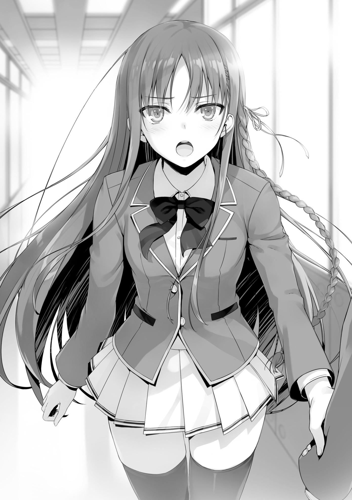
—Ayanokouji-kun. Tú... ¿Cuánto de esto anticipaste?
Cuando Sakayanagi propuso una tregua temporal, estaba un poco más del noventa por ciento seguro de que no tenía que preocuparme por ser expulsado.
Es obvio que, para ella, golpearme con un ataque sorpresa no tendría sentido. Si hubiera mentido sobre la tregua para obligarme a marcharme de la escuela, no se habría alegrado.
Pero al mismo tiempo, manipuló a Yamauchi e intentó que hiciera que me expulsaran.
En otras palabras, ella hizo una clara violación de nuestra tregua. Es decir, sus acciones eran contradictorias.
Para compensar esta contradicción, tendría que hacer todo lo posible para invalidar cualquier voto de desaprobación que pudiera obtener por culpa de Yamauchi.
Es decir, que la Clase A emita la mayoría de sus votos de aprobación en mi favor.
De esa manera, aunque terminara con veinte o treinta de los votos de desaprobación de la Clase C, al final terminaría con un número positivo de votos.
Mi seguridad estaría garantizada. En ese caso, ¿por qué se tomó tantas molestias? Seguramente lo hizo para que expulsaran a Yamauchi Haruki.
Haciéndolo pasar por un villano, consiguió bajar su posición dentro de la Clase C.
Por supuesto, yo no tenía forma de estar absolutamente seguro de nada de esto.
No podía descartar la remota posibilidad de que Sakayanagi estuviera intentando que me expulsaran con un ataque sorpresa.
Así que instigué a Horikita, usándola como un medio para arruinar a Yamauchi.
Además, si dejaba que la clase descubriera que Yamauchi tenía como objetivo a alguien inofensivo como yo, podría obtener votos de aprobación adicionales por simpatía o protección. Aunque, terminar en primer lugar fue demasiado.
—¿No lo dije antes? No tomé parte explícitamente en este examen.
—...Pero...
—Me voy a casa.
—¡¡Ayanokouji-kun!!
Como si sus pies estuvieran congelados en el suelo, Horikita me gritó mientras me alejaba.
—Fuiste tú, ¿no es así? Tú fuiste quien le dijo a mi hermano sobre la conexión entre Sakayanagi-san y Yamauchi-kun, ¿no es así?
Simplemente seguí caminando sin darle una respuesta y bajé la escalera.
En el primer piso, me acerqué al tablón de anuncios.
Había una lista de los resultados del examen de cada una de las clases.
Resultados de la votación de las clases:
Expulsiones:
Clase A: Totsuka Yahiko
Clase B: Ninguno
Clase C: Yamauchi Haruki
Clase D: Manabe Shiho
Estas son las únicas expulsiones.
No habrá cambios en el número de Puntos de Clase debido a estos resultados.
—Yahiko, ¿eh? Supongo que realmente estaba mintiendo cuando dijo que expulsaría a Katsuragi.
Junto con quiénes habían sido expulsados, se enumeraban los nombres de los que recibieron más votos de aprobación. En la clase A fue Sakayanagi, en la
clase B fue Ichinose, y en la clase D fue Kaneda. Kaneda obtuvo la menor cantidad de votos, con un total de veintisiete, mientras que Ichinose obtuvo un impresionante total de noventa y ocho. Teniendo en cuenta que la mayoría de la clase A utilizó sus votos de aprobación conmigo, era evidente cuánto valoraban todos a Ichinose.
Detrás de mí, apareció otro estudiante que probablemente comprobaría los resultados del examen por sí mismo.
Era Katsuragi, y casi al mismo tiempo, Ryuuen también apareció.
—Así que tampoco te expulsaron, Katsuragi.
—...Podría decirte lo mismo. De todos, pensé que tú serías el que se iría.
—Kuku. Parece que la Parca se apiadó de mí.
—La Parca, ¿verdad?
—No te preocupes por eso. No es como si fueras capaz de verla de todas formas.
Con una sonrisa, Ryuuen fue a ver los resultados.
—Aunque parece que la chica Sakayanagi también hizo algo interesante,
¿no te parece? Viendo que ella fue y eliminó a tu único seguidor.
Mientras Ryuuen hablaba alegremente, la expresión de Katsuragi se convirtió en una expresión de remordimiento.
—Has perdido completamente tu espíritu de batalla, ¿no es así?
—No tengo nada que ganar actuando más de lo que ya lo he hecho.
—¿Así que planeas ser el perro obediente de Sakayanagi hasta la graduación? Qué broma.
—………
Hubo un momento de silencio.
Pero había una espantosa expresión en la cara de Katsuragi.
Yahiko, que seguía a Katsuragi en las buenas y en las malas, fue expulsado.
Al mismo tiempo, Katsuragi perdió su estatus de persona a la que la gente estaba dispuesta a proteger.
—¿Hoh? Así que también puedes poner una cara así, ¿eh, Katsuragi?
Después de ver la expresión de Katsuragi, quizás Ryuuen tenía la misma impresión que yo.
—Tal como estás ahora, podrías engañar fácilmente a Sakayanagi.
—...No bromees conmigo. Dejando eso de lado, ¿qué planea hacer ahora un bastardo como tú? Tu futuro en esta escuela fue salvado por la Parca.
¿Planeas desafiar a Sakayanagi, Ichinose y Horikita una vez más?
—No estoy interesado en algo así.
Ryuuen respondió fríamente sin perder la calma.
—El contrato que hice contigo y el resto de la clase A sigue siendo válido.
En pocas palabras, planeo sentarme y exprimirte hasta dejarte seco mientras disfruto un rato. Sólo pensé en encontrarme contigo aquí hoy para besarte el culo por eso.
Por lo visto, esa era la razón por la que Ryuuen vino aquí en primer lugar.
Después de todo, desde la perspectiva de Ryuuen, la expulsión de Katsuragi también habría causado la anulación del contrato.
Con eso, Katsuragi se fue primero y regresó a casa, dejando a Ryuuen y a mí atrás.
—Hazte un favor y ven conmigo un rato.
Sin negarme, dejé que Ryuuen guiara el camino mientras caminábamos hacia la parte trasera del edificio de la escuela.
—¿Desde cuándo eres tan buena persona, Ayanokouji?
—No hice nada, pero no parece que estés muy dispuesto a creerlo.
Ryuuen ya debería estar al tanto de lo que hice.
—No es tanto que hayasecho algo, es más bien que la gente que se preocupa por ti lo hizo. Ellos son los que hicieron todo.
Miré al cielo mientras recordaba los eventos que tuvieron lugar unos días antes.
PARTE 4
La falta de una expulsión dentro de la clase B. El hecho de que Ryuuen todavía estuviera aquí.
Yo estuve involucrado en estos dos notables incidentes que ocurrieron en la sombra.
Fue el día en que me reuní con Hiyori en la biblioteca e invité a Ichinose a mi habitación.
Esa noche, justo después de las diez, el sonido del timbre resonó en mi habitación.
No tenía muchos amigos que vinieran a mi habitación a visitarme.
Consideré si era o no Horikita, Kushida, o tal vez incluso alguien del Grupo Ayanokouji, pero en la mayoría de los casos, me habrían enviado antes algún tipo de notificación de que venían.
Esta vez, sin embargo, no me avisaron de nada. Es decir, la persona en la puerta no era nadie así.
En ese caso, ¿quién rayos había venido a visitarme?
—...Bueno, esto es una novedad.
Mientras revisaba el intercomunicador desde las profundidades de mi habitación, vi que en la pantalla aparecía un dúo inesperado.
Parecían tener frío mientras esperaban que yo abriera la puerta.
—Bueno... supongo que el toque de queda sólo se aplica en los pisos superiores.
Como regla general, está prohibido que un chico entre en las habitaciones de una chica después de las ocho de la noche.
Bueno, incluso si rompes el toque de queda, no pasa nada mientras no se corra la voz. Además, aunque te atraparan, el castigo no sería muy severo mientras sólo hubiera ocurrido una o dos veces. En cualquier caso, no había ninguna regla que impidiera que una chica fuera la que viniera a visitarte.
—¿Sí?
Después de decidirme a por lo menos responderles, hablé por el intercomunicador. Aunque, no era exactamente acogedor con la forma en que expresaba mis palabras.
—...Me gustaría hablar si tienes un momento.
De los dos, el chico empezó a hablar, rompiendo el silencio. Se inclinó hacia delante y miró a la cámara y un primer plano de su pupila apareció en la pantalla.
No parecía que quisiera tener esta charla por el intercomunicador.
—Dame un segundo.
Me acerqué a la entrada y abrí la puerta, y al hacerlo, se abrió bruscamente. El chico, Ishizaki de la clase D, entró en mi habitación de inmediato.
Si uno era descuidado, la fuerza con la que la puerta se abrió podría haber herido a alguien.
—Bienvenida. Deberías darte prisa y entrar también. Hace frío ahí fuera.
—¿Por qué tengo que...
La compañera de clase de Ishizaki, Ibuki, expresó su insatisfacción ante mi invitación a entrar.
—A quién le importa. Sólo entra aquí Ibuki.
—Ugh.
Cediendo a la insistencia de Ishizaki, ella caminó a través de la entrada.
El aire frío estaba empezando a entrar, así que cerré rápidamente la puerta tras ella.
Después de pensar en cómo sentiríamos todavía la corriente de aire frío si habláramos en la entrada, los invité a entrar en la habitación.
—Entonces, ¿qué necesitan de mí, tan tarde en la noche?
A mi pregunta, Ishizaki inmediatamente juntó sus manos y bajó su cabeza.
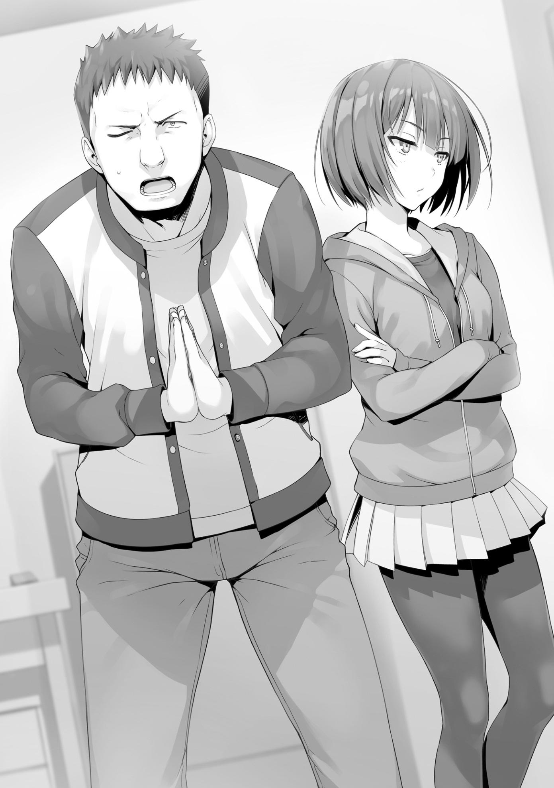
—¡Por favor, Ayanokouji! ¡Dinos cómo evitar que Ryuuen-san sea expulsado!
—...¿Qué?
Estos dos vinieron sin invitación a altas horas de la noche para pedir un favor tan ridículo.
—¿Te escuché mal? ¿Podrías decirlo una vez más?
—¡Te pedí que nos dijeras cómo evitar que Ryuuen-san sea expulsado!
No parece que lo haya escuchado mal.
—Olvídalo, Ishizaki. No hay forma de que Ayanokouji coopere contigo.
Por lo visto, Ibuki e Ishizaki no estaban en la misma sintonía. Al parecer, ella no vino a pedirme ayuda.
—Eso... eso es probablemente cierto, es sólo que... no puedo pensar en nadie más que Ayanokouji que pueda hacer algo.
—No es que me importe. Por cierto, sólo estoy aquí porque Ishizaki me obligó a venir con él. No dejaba de llamarme...
Con un suspiro, me mostró exasperadamente la pantalla de su teléfono.
Había más de cincuenta notificaciones de llamadas perdidas provenientes de Ishizaki.
—¿Cómo podría venir y preguntarle yo solo? ¡Es nuestro enemigo!
—Es lo mismo aunque esté aquí contigo. Qué idiota.
—Cierra la boca...
Ishizaki e Ibuki empezaron a discutir entre ellos.
—Bueno, tampoco creo que hayan sido enviados aquí por Ryuuen.
Si estuvieran actuando, habría sido todo un espectáculo, pero no parecía ser el caso.
—No hay manera de que estemos aquí para eso. Ryuuen-san... no nos pediría que hiciéramos algo así. Deberías entender al menos eso.
—Supongo.
Ryuuen ya se había desentendido de los asuntos escolares al hacer creer que fue derrotado por Ishizaki.
De hecho, pareciera que ya estaba completamente decidido a dejar la escuela.
Además, incluso si no planeaba ser expulsado, no me habría pedido ayuda.
No hay manera de que esté dispuesto a hacer algo tan vergonzoso.
—¿Estás seguro de que no quieres que Ryuuen se vaya? Te ha hecho todo tipo de cosas.
Ibuki habló de nuevo, interrogando a Ishizaki.
—...Bueno... muchas cosas pasaron... pero, ahora es diferente.
—¿Qué es?
—¿Eh? ¿Qué quieres decir con eso?
—Te pregunto qué quieres decir con 'ahora es diferente'.
—He llegado a entender que Ryuuen-san es importante para el futuro de la Clase D.
—No lo entiendo. ¿No sabes lo mucho que hemos tenido que pasar por su culpa?
Estos dos realmente vinieron hasta aquí a verme sin estar de acuerdo en absoluto.
O, para decirlo más precisamente, era como si simplemente no pudieran comunicarse entre ellos.
—En primer lugar, si van a discutir, háganlo después.
Con mis palabras, dejaron de mirarse.
—Ugh. Quiero volver a mi habitación.
Sin embargo, no dejaron de pelearse. En particular, Ibuki todavía tenía una expresión severa en su cara.
—No digas eso. También tienes que ayudarme a persuadir a Ayanokouji.
—No quiero.
—Si van a discutir, háganlo en otro lugar.
Viendo que no hay indicios de que la conversación vaya a avanzar en un futuro próximo, decidí intentar preguntarme algo a mí mismo.
—Ryuuen no es muy popular, ni siquiera en la clase C. Es sólo la perspectiva de un extraño, pero no estoy exactamente equivocado,
¿verdad?
—Bueno, eh... supongo que algunas personas pueden odiarlo, tal vez...
—¿Qué quieres decir con 'algunas personas'? Casi todo el mundo lo odia.
No tiene sentido mentir sobre eso.
—¡Cállate! ¡No hay nada malo en lo que dije!
—Ugh, eres tan ruidoso y molesto. Por cierto, estás salpicando tu saliva por todas partes mientras hablas, así que deja de gritar.
—Creí haber dicho que dejaran sus discusiones para más tarde.
Si siguen haciendo tanto ruido en una habitación tan pequeña como esta, el sonido se escuchará en las habitaciones que nos rodean.
Volví a hablar, esta vez con una punzada de ira en mi voz, y los dos se calmaron un poco.
¿Se dieron cuenta de que actuaban de forma molesta y ni siquera fueron invitados?
Con esto, finalmente pudimos seguir con la conversación.
—Sería muy difícil evitar que Ryuuen sea expulsado.
Hablé sin rodeos, sin andarme por las ramas.
Sentí que mis intenciones se verían mejor de esa manera.
—Supongo que eso es cierto.
Entendiendo lo que quería decir, Ibuki asintió con la cabeza.
Sin embargo, Ishizaki no parecía dispuesto a aceptarlo tan fácilmente.
—¿No puedes hacer algo, cualquier cosa?
Por lo menos, sus motivaciones son genuinas. No hay duda de su impulso por salvar a Ryuuen.
—Realmente quieres evitar que Ryuuen se vaya, ¿verdad?
—...Sí.
Aparte de mí, Ibuki y algunos otros, la mayoría de los estudiantes están bajo el supuesto de que Ishizaki detesta a Ryuuen.
Por supuesto, eso fue sólo una consecuencia del incidente entre Ryuuen y yo. A pesar de ello, es cierto que Ishizaki fue tiranizado por Ryuuen muchas veces hasta este momento. No pensé que vendría e inclinaría su cabeza ante mí y me rogaría que lo salvara cuando obviamente no quería hacerlo.
Esto seguramente se debe a la conexión emocional que estableció con Ryuuen en el transcurso del año pasado.
Sin embargo, nadie estaría batallando si este examen fuera algo que se pudiera superar sólo con las emociones.
Ishizaki necesitaba una explicación sencilla de por qué salvar a su amigo era tan difícil.
—Hay dos razones principales por las que creo que salvarlo no es razonable. Este examen provisional se decidirá por el número de votos de desaprobación que se utilicen en su propia clase. Suponiendo que tú, Ibuki y otros dos o tres no voten en contra de Ryuuen y le den un voto de
aprobaciónr, es muy probable que termine con más de treinta votos de desaprobación. En segundo lugar, nadie más quiere ser expulsado.
—P-pero, quiero decir, no hay mucha gente que piense que podemos ganar y avanzar sin su fuerza, ¿sabes?
Es cierto que tal vez haya algunos estudiantes de la clase D que reconocen las capacidades de Ryuuen.
Sin embargo, por sí misma, esa razón no basta.
No es razón suficiente para plantear la posibilidad de ser expulsado.
—Nadie quiere expulsar a alguien. Centrarse en Ryuuen, la persona más impopular de la clase, causaría la menor cantidad de culpa.
Es como dijo Ibuki.
—Aunque no puedas salir de la clase D, todavía querrás graduarte con seguridad, ¿no? No es como si alguien quisiera ser etiquetado como un alumno expulsado de la preparatoria.
Lo más probable es que este tipo de discusión ya haya tenido lugar dentro de su clase, algo que estaba escrito en la cara de Ishizaki.
—Si eres tratado como el líder que encabezó una revuelta contra Ryuuen, entonces ya habrás oído hablar de esto, ¿no?
Ishizaki asintió. Después de todo, muy probablemente apoyó públicamente la expulsión de Ryuuen debido a la posición en la que se encontraba.
—Creo que aparte de Ibuki, Albert y Shiina, todos están a favor de expulsar a Ryuuen-san.
—Así que es jaque mate sin importar cómo lo mires, ¿no?
—Sí, es jaque mate.
Respondí a la declaración de Ibuki con una simple afirmación.
—Por eso vine aquí en primer lugar. Tú eres el que venció a Ryuuen-san, así que...
—Quieres saber si hay una manera de detener la expulsión. Antes de que lleguemos a eso, hay algo que quiero preguntarte.
—¿Qué...?
—Salvar Ryuuen significa que alguien más de su clase será expulsado.
¿Entiendes eso?
Este es un aspecto esencial del examen. No tenía otra opción que escuchar cómo respondería.
—Eso es... Eso es verdad, pero...
—Si realmente lo entiendes, ¿tienes a alguien más en mente para ocupar el lugar de Ryuuen?
—N-no, para nada. No creo que quiera deshacerme de nadie.
—Entonces suena a que hay un problema. Este examen está diseñado para asegurar que alguien sea expulsado.
Este no es un examen en el que se pueda hablar imprudentemente de querer salvar a alguien.
—Es como dijo Ayanokouji, ¿no? Si realmente quieres salvar a Ryuuen,
¿por qué no tomas la iniciativa y te nominas tú mismo? Si le pides a todos que voten por ti en su lugar, podrías ser capaz de salvarlo.
Su fría idea era más o menos lo mismo que abandonar a Ishizaki, pero, siendo realistas, era la mejor opción que tenía disponible.
Ryuuen acumuló mucho odio de sus compañeros de clase. A pesar de que tiene el talento suficiente para pensar en artimañas valientes e ingeniosas que una persona ordinaria no podría llevar a cabo, una vez que se consideró que cayeron a la Clase D bajo su liderazgo, el hecho de que lo abandonaran fue totalmente inevitable.
—¿Realmente... no hay manera de evitar que alguien sea expulsado?
—Esa fue la pregunta inicial de todos los demás. Al final, todos se dieron por vencidos en el intento de pensar en una solución.
—... Tiene razón.
Ibuki dejó escapar un corto y abatido suspiro.
En lugar de molestarse en pedirme ayuda, Ibuki comprendió desde el principio que no era razonable.
—Como dije antes, esto es una completa pérdida de tiempo. No podemos cambiar el destino de Ryuuen.
—¡Maldita sea...!
Consumido por la frustración, Ishizaki dio un puñetazo en la pared a su lado.
—Creo que Ryuuen planeaba pasar los próximos tres años sin hacer nada.
Pero, quizás cambió de opinión tan pronto como se enteró del examen suplementario. A lo mejor pensó que no tenía otra opción que ser expulsado. Por eso decidió sentarse tranquilamente y esperar a que el examen terminara sin decir nada, ¿no es así?
Ishizaki tampoco creía que Ryuuen lo hiciera como un noble acto de sacrificio.
Ryuuen simplemente no se molestó en resistirse a lo que se le venía encima.
—Tienes que considerar los sentimientos de Ryuuen. Es tu deber como alguien que lo sigue.
—Yo, Yo...
Ishizaki apretó sus puños, lleno de arrepentimiento.
Realmente quiere salvar Ryuuen, ¿eh?
No importa cuántos enemigos tengas, no es malo tener amigos que se preocupen por ti.
Puede que no lo admita, pero Ryuuen tiene algunos buenos amigos.
Una idea comenzó a tomar forma en mi mente.
Sin embargo, había algunas cosas que necesitaban suceder antes de que pudiera llevarse a cabo.
—Si tuviera un consejo para ti...
—¿Qué es? No importa lo que sea, ¡sólo dímelo!
Ishizaki se echó hacia delante, intentando desesperadamente alcanzar cualquier rayo de esperanza.
Pero, desafortunadamente, esas esperanzas suyas no iban a durar mucho tiempo.
—Tal y como están las cosas ahora, los puntos privados de Ryuuen desaparecerán junto con él. Si ha recibido puntos de la Clase A todo este tiempo, entonces ya debería haber ahorrado al menos un par de millones de puntos. ¿Verdad?
—Sí. Mientras no los haya usado, debería tener aproximadamente eso.
—No hay garantía de que sus puntos privados sean transferidos o distribuidos entre sus compañeros de clase si todavía los mantiene cuando sea expulsado. Por lo tanto, antes de que su expulsión se convierta en una realidad, deberían transferir todos sus puntos a otro lugar. Serán útiles para la clase D más adelante.
Si los puntos se distribuyeran entre la clase D, perderían su valor como suma global. Sería mejor para ellos transferir todo a sus respectivos bolsillos ahora.
Estaba seguro de que Ryuuen estaría al menos de acuerdo con eso.
—¡Esto no es lo que quería oír de ti! Quiero saber cómo salvar a Ryuuen-san!
—Renuncia Ishizaki. No tiene sentido decir nada más que esto.
Ibuki reprendió a Ishizaki con una patada ligera antes de girarse hacia mí y continuar.
—Dicho esto, Ayanokouji. No voy a ir a por los puntos que Ryuuen ha guardado.
Ella habló decididamente. En lugar de ir a Ryuuen y rogarle por los puntos, prefiere renunciar a ellos por completo.
—¿Es así? ¿Qué hay de ti, Ishizaki?
—¡Yo tampoco lo haré!
Ambos compartían la misma postura al respecto, aunque por razones ligeramente diferentes.
Estaban resueltos a la idea de que, si Ryuuen iba a dejar la escuela, entonces sus puntos lo acompañarían.
No, no se debía a algo tan loable como la determinación.
—Es una lástima, pero ustedes dos no pueden salvar a Ryuuen.
—¡…!
Ishizaki me miró, su expresión estaba entre la ira y el arrepentimiento.
—Escucha atentamente. La única cosa que ustedes dos pueden hacer ahora es recuperar los puntos privados de Ryuuen. Este examen no es tan simple como para que puedan salvar a alguien sólo porque quieran.
—¡No me jodas! ¿Quieres que tome los puntos de Ryuuen-san y dejemos las cosas en paz? ¡No hay forma de que pueda hacer eso!
Ishizaki levantó su puño, pero Ibuki inmediatamente extendió la mano y le detuvo.
—Dije que pararas esta mierda, Ishizaki. Este tipo puede parecer una persona común, pero en realidad no es más que un monstruo desagradable.
—Incluso si no soy rival para él, ¡al menos tendré una oportunidad!
—Supéralo.
Ibuki entonces golpeó a Ishizaki en la cabeza.
—Vinimos aquí y pedimos a Ayanokouji algo completamente irrazonable.
Ni siquiera dijo nada malo, y aún así aquí estás, arremetiendo contra él por ello. ¿Podrías dejar de ser tan vergonzoso?
—Urgh...
Ishizaki dejó que la sangre se le subiera a la cabeza.
Por alguna razón, le resulta difícil mantener la compostura cuando se trata de Ryuuen. Ninguno de los dos tenía intención de hacer nada. Millones de puntos, completamente libres para ser tomados, simplemente iban a desaparecer. Si estaban pensando en el futuro de la Clase D, esos puntos eran algo que simplemente deberían tener en sus manos.
Si Ibuki e Ishizaki, los amigos más cercanos de Ryuuen, no los querían, entonces no hay nada que se pueda hacer al respecto.
—Bueno, realmente quería ver la fuerza de su determinación un poco más, pero...
—...¿Eh? ¿Qué quieres decir con eso?
—Ya no tiene nada que ver con ustedes dos. Después de todo, ni siquiera están dispuestos a recobrar los puntos privados de Ryuuen.
Con eso, terminé la conversación. Sin embargo, estaba algo convencido de que Ibuki conseguiría los puntos privados de Ryuuen.
Parte 5
A las diez y pico de la noche antes del examen, sonó mi teléfono.
[Soy yo. Tengo todos los puntos privados de Ryuuen.]
Ibuki habló, diciendo lo mínimo y nada más.
—Es bueno que hayas descubierto mi información de contacto, ¿no?
Intenté interrogarla, pero Ibuki permaneció completamente en silencio.
Recordé que le había dado a Shiina mi número, por lo que es probable que lo consiguiera a través de ella.
—Hmm. Así que, ¿te apropiaste de los puntos?
Aunque esperaba que ella hiciera un movimiento, esto suponía esperar hasta el último minuto.
—¿Puedes traer a Ishizaki y venir a mi habitación ahora mismo?
[¿Eh? ¿Ahora mismo?]
—¿Es un problema? Tengo algo que discutir con ustedes acerca de los puntos que tienen en sus manos.
[No exactamente, es sólo... No, estaré allí.]
Con esas pocas palabras de consentimiento, Ibuki dijo que se pondría en contacto con Ishizaki de inmediato y luego terminó la llamada.
Los dos aparecieron en mi puerta menos de diez minutos después. ¿Tenían algún tipo de premonición de que algo importante estaba a punto de suceder?
Así de simple, Ishizaki e Ibuki entraron inmediatamente en mi habitación.
—¿Cuántos puntos tenía Ryuuen?
—Un poco más de cinco millones.
—Eso es suficiente. Si no hubiera suficiente, tendría que hacer algunos preparativos de última hora para compensar el resto.
Como esperaba, no había ninguna evidencia de que Ryuuen los hubiera usado para él.
—¿De qué estás hablando? ¿Qué vas a hacer?
Ishizaki no tenía ni idea de a dónde iba con esto.
Por otro lado, Ibuki ya se había decidido, así que no se quedaba tan atrás.
—Vas a usar esto para hacer algo, ¿verdad?
—Correcto.
—¿Va a usarlos...?
—Estos puntos privados serán usados para una cosa y sólo una cosa.
Salvar a Ryuuen.
—N-no, espera un segundo. ¿No necesitamos veinte millones de puntos para hacer eso?
No importa cómo lo mire Ishizaki, simplemente no había suficientes puntos para hacerlo.
—Antes de entrar en eso, tengo algo que preguntarte. Ishizaki. ¿Estás preparado para asumir la responsabilidad de esto?
—¿Q-Qué estás haciendo de repente? ¿Preparado para asumir la responsabilidad de qué...?
—Salvar Ryuuen significa que tienes que abandonar a alguien más. Ya te lo dije antes, ¿no?
—...Sí.
A pesar de estar un poco nervioso, Ishizaki asintió con la cabeza.
—Me he decidido.
—¿Es así? Es bueno ver que te hayas decidido. Entonces, ¿quién será?
—Quién...
Me pareció que Ishizaki aún no había decidido quién ocuparía el lugar de Ryuuen.
—Si no lo has decidido, puedo decidir por ti si quieres. Sería más fácil deshacerse de cualquier sentimiento de culpa de esa manera. Por supuesto, si piensas que me desharía descuidadamente de un miembro importante de tu clase, no tienes que escucharme en absoluto.
—P-por favor, espera. Déjame pensarlo un poco...
—No hay tiempo.
—Tomaré la decisión rápidamente.
A pesar de decir eso, si pudiera tomar la decisión rápidamente, no lo estaría pasando con tanta dificultad.
—Espera. No me importa de quién nos deshagamos, pero ¿cuál es el plan para esto? Dijiste que lo salvarías con los puntos, pero ¿no nos faltan unos quince millones?
Ibuki intervino, y su irritación era comprensible.
Sea como sea, yo también tenía que considerar mi situación.
—Si quieres evitar la expulsión de Ryuuen, tienes que decidir quién asumirá la culpa en su lugar.
Después hablariamos del plan en detalle.
—Por ejemplo, ¿qué hay de los problemáticos de tu clase?
Aunque me sentía mal porque Ibuki no estaba satisfecha con no recibir una respuesta de mi parte, continué con la conversación.
—Los problemáticos... Bueno, supongo que estamos Komiya y yo, y de las chicas, están Nishino y Manabe.
—Honestamente Ishizaki, en lo que respecta a la seguridad de Ryuuen, no creo que sea una buena idea deshacerse de alguien como tú que entiende la importancia de la presencia de Ryuuen en tu clase. Si hay otro examen similar a este en el futuro, no hay garantía de que Ryuuen pueda pasar por ese tampoco.
Ishizaki se mostró de acuerdo con mi lógica.
—Así que o Nishino o Manabe...
Ishizaki enumeró dos nombres, los cuales me eran familiares. Manabe, en particular, era la estudiante que pensaba expulsar.
De cualquier manera, él era el que tenía que hacer la decisión final.
Tenía la intención de respetar su decisión, independientemente de a quién eligiera.
—Ya sea una de ellas, o alguien más, la decisión depende enteramente de ti.
Ishizaki también estaba al tanto de lo que ocurrió entre Manabe y Kei durante el Examen Especial del Crucero. Si ese incidente tuviese la más mínima influencia en sus consideraciones, con toda probabilidad, elegiría deshacerse de Manabe.
Buscaba defectos. Quería encontrar algún tipo de justificación para poder levantar las manos y decir que ella se lo buscó. Manabe puso sus manos sobre Kei, y al hacerlo, causó problemas innecesarios a los de su clase.
Gradualmente, Ishizaki pensaría que expulsar a Manabe no debería ser tan irracional.
En lo que respecta a Kei, aunque ya había superado el incidente, la presencia de Manabe siempre sería una constante fuente de inquietud. Resolver este asunto sería suficiente para permitir que Kei se relajara un poco más. Además, si hiciera que Kei supusiera que yo fui el responsable de la expulsión, su confianza en mí también aumentaría una vez más.
Sin embargo, Ibuki habló inesperadamente cuando Ishizaki estaba completando su decisión.
—¿Está bien si tomo la decisión?
—¿Eh? ¿Quieres hacerlo?
—Sí. Hay alguien que quiero que se vaya.
—¿Quién?
Pregunté sin esperar la respuesta de Ishizaki.
—Manabe. Es sólo mi preferencia personal.
—¿Y está bien tomar la decisión basándose sólo en eso?
—No tengo ningún problema con ello. ¿Estás diciendo que debería tenerlo?
Con una sola mirada a los ojos de Ibuki, entendí inmediatamente. No tenía ni la más mínima duda.
—Si Ishizaki no tiene ninguna objeción al respecto, entonces está decidido.
A pesar de ello, no hay garantías de que todo vaya a funcionar. Al evitar la expulsión de Ryuuen, la persona que termine con el segundo mayor número de votos de desaprobación será expulsada. Ahora, el objetivo general es reducir la posibilidad de que esa persona termine siendo uno de ustedes dos. No queda mucho tiempo.
—Entiendo... Le diré a los chicos que hubo algunos cambios y que deben usar uno de sus votos en Manabe. Creo que estarán de acuerdo si les digo que el plan es asustarla dándole el segundo mayor número de votos de desaprobación.
—No es una mala idea.
Aprobé la idea de Ishizaki.
Mientras tuvieran la impresión de que la expulsión de Ryuuen estaba grabada en piedra, al resto de sus compañeros no les importaría especialmente sobre quiénes utilizarían los otros votos de desaprobación.
—Bueno, aunque yo podría estar en problemas.
—¿Hmm? ¿Qué quieres decir con eso, Ibuki?
—Manabe y sus amigas seguramente votarán por mí junto a Ryuuen.
Realmente no se ve muy bien para mí.
—E-espera. ¿Estás hablando en serio?
—Hasta tú deberías saber que Manabe y yo no nos llevamos muy bien,
¿verdad?
—Eso, bueno, es verdad pero...
Ishizaki se alejó, sacudido por su incapacidad de entender la conversación.
—Suena como si ya hubieras reafirmado tu determinación, Ibuki.
Por supuesto, si no expulsan a Manabe, Ibuki no tendrá otra opción que resignarse a su destino.
—Podría ser una buena idea consultar con Hiyori al respecto.
—¿Con Shiina?
—Ella podría ser capaz de ayudarte con esto. Creo que estaría bien que la contactaras y le dijeras que quieres concentrar los votos de desaprobación en Manabe para salvar Ryuuen.
—...Bien.
Ibuki envió un mensaje de texto a Hiyori.
—¿Estás en contacto con Shiina, Ayanokouji? No creo que ella esté de acuerdo con el plan para expulsar a Manabe.
—Por casualidad me dijo lo que pensaba sobre este examen.
Aunque Hiyori sea pacifista, también tiene un fuerte deseo de respetar los deseos de su clase.
—Me dijo que cooperaría siempre y cuando fuera por el bien de la clase; ya que piensa que Ryuuen es importante para la Clase D, estoy seguro de que elegirá ayudar.
Controlaríamos los votos de sus compañeros tanto como fuera posible, reduciendo los votos de aprobación y aumentando los votos de desaprobación para Manabe.
A la inversa, aumentaríamos los votos de aprobación y reduciríamos los de desaprobación para Ibuki.
De esa manera, la disparidad entre Ibuki y Manabe se cerraría de un solo golpe.
—Bien, entonces dinos tu plan. ¿Cómo lo salvaremos con sólo cinco millones de puntos?
Ibuki me miró fijamente, la mirada en sus ojos diciéndome que agilizara las cosas.
Saqué mi teléfono y envié un mensaje de texto a cierta persona.
Se marcó como leído casi inmediatamente, y la persona respondió poco después, diciendo que vendría a mi habitación.
Quedaban menos de dos horas para el límite de tiempo.
Fue una suerte que esta persona tuviera la paciencia de esperar hasta ahora.
—¿Qué estás haciendo?
—Alguien nos va a visitar pronto. Será el arma secreta que detendrá la expulsión de Ryuuen.
—¿El arma secreta... que detendrá la expulsión?
Era difícil que me creyeran sólo con palabras.
Unos minutos más tarde, sonó el timbre de mi puerta, aumentando aún más el escepticismo de Ibuki e Ishizaki.
—¿Está bien que esta persona nos vea contigo?
—No te preocupes por eso. Siempre y cuando pongan sus historias en orden ahora mismo.
PARTE 6
—Perdonen la intromisión~
Naturalmente, Ibuki e Ishizaki se sorprendieron al ver al visitante que apareció ante nosotros.
Nunca se hubieran imaginado que se encontrarían con esta persona aquí.
—¿En serio...?
—Woah.
—¡Oh! Definitivamente pensé que podría haber alguien más aquí... Buenas noches.
—B-buenas noches.
Por alguna razón, Ishizaki se puso un poco nervioso.
La persona que llegó a mi habitación no era otra que Ichinose Honami.
Y en este momento, está sentada junto a Ibuki e Ishizaki de la clase D.
Al ver a Ichinose, Ibuki finalmente pareció entender el panorama general de lo que pasaba.
—Tenemos intereses que coinciden, ¿no es así Ichinose?
—Eso parece, Ibuki-san.
—¿Eh? ¿Qué quieres decir, Ibuki?
Ishizaki inclinó su cabeza hacia un lado, todavía incapaz de juntar todas las piezas.
—Ishizaki. Nadie está tan loco como para querer salvar Ryuuen. Incluso si, hipotéticamente hablando, alguien se presentara y dijera que ayudaría a votar por él, no hay manera de saber si realmente cumplirán su palabra o no. Aunque... Hay excepciones a eso...
—¿Es así...? Entonces, ¿eso significa que Ichinose y todos los de la clase B van a...?
Finalmente, todo encajó, e Ishizaki entendió lo que estaba a punto de suceder.
—Sí. Pediré a todos los de la Clase B que emitan cada uno de nuestros cuarenta votos de aprobación por Ryuuen-kun. A cambio, Ibuki-san se encargará de cubrir los puntos privados que nos faltan.
Era una estrategia segura que sólo se podía usar una vez.
Está Ichinose, quien tuvo la intuición de acumular los puntos privados de sus compañeros de clase desde el primer día, y está Ryuuen, quien continuó acumulando puntos privados debido al contrato que hizo con la Clase A.
Era el último juego de poder que sólo podía ponerse en marcha debido a las circunstancias que rodeaban a estas dos personas específicas.
—Si ustedes dos se unen, nadie será expulsado de la Clase B y Ryuuen no tendrá que dejar la Clase D.
Pase lo que pase, Ryuuen sólo terminaría con un máximo de treinta y nueve votos de desaprobación.
Con la protección de la Clase B, ese resultado sería eliminado completamente gracias a los votos de aprobación que obtendría.
Ibuki e Ichinose se miraron a los ojos.
Cuando dos personas no suelen estar involucradas entre sí, no hay razón para que entren en una relación basada en la confianza como esta.
Sin embargo, al enfrentarse cara a cara, es posible determinar si son dignos de confianza o no, al menos hasta cierto punto.
Después de un momento, Ichinose apartó la mirada de Ibuki y me miró.
—Con veinte millones de puntos, salvaré a uno de mis compañeros...
¿Verdad?
Dejándome con esa pregunta, miró de nuevo a Ibuki.
—¿Qué harás, Ichinose? Depende de ti decidir si lo aceptas o no.
Hablé, respondiendo a su incertidumbre. Tenía el derecho de elegir el resultado ella misma.
Después de todo, todavía tenía la opción de rechazar la propuesta de Ibuki y tomar prestados los puntos de Nagumo.
—He tomado una decisión. Mientras Ibuki-san e Ishizaki-kun estén de acuerdo con ello, estoy dispuesta a hacer lo que pueda.
—¿Estás realmente bien con eso?
—Sí. Fui capaz de asegurarme de que su sinceridad es real.
—Eres una idiota, ¿no es así Ichinose?
—¿Eh? ¿¡Ibuki-san!?
—A pesar de que circulaban todo tipo de crueles rumores sobre ti, elegiste ahorrar todos esos puntos. No puedo creer que vayas a desperdiciarlos todos por algo como esto.
—Bueno, puedo ahorrar los puntos otra vez. Está claro que es posible acumular cerca de veinte millones de puntos en sólo un año. Además, no creo que estés en posición de decir eso, Ibuki-san. Podrías embolsarte esos cinco millones de puntos tú misma en este momento, pero decidiste usarlos todos en beneficio de Ryuuen-kun.
Ibuki miró en silencio hacia otro lado sin darle una respuesta directa a eso.
—Tú y yo somos diferentes. Además, alguien más terminará llorando a mares mientras hace las maletas en lugar de Ryuuen. De hecho, esa persona podría terminar siendo yo.
—Pero todavía vas a salvar Ryuuen-kun, ¿verdad?
—Me... me molesta que se escape antes de que pueda pagarle el estúpido préstamo que le pedí, eso es todo.
Ibuki le daría la salvación a Ichinose, totalmente preparada para enfrentarse al potencial desdén de sus compañeros de clase.
Y así como así, Ibuki transfirió la cantidad de puntos privados preestablecida a Ichinose.
—Confirma todo lo que te corresponde.
—Lo haré.
Ichinose inmediatamente echó un vistazo a sus puntos, comprobando que los recibió.
—Gracias. Llegaron muy bien.
Mostró el número en su teléfono, demostrándonos a todos que tenía exactamente veinte millones de puntos en su cuenta.
—Actuaré como testigo de esta negociación. Les haré saber a todos que también he grabado el contenido de esta conversación.
Por el bien de la justicia, saqué mi teléfono.
—Ibuki está ofreciendo unos cuatro millones de puntos. A cambio, Ichinose y el resto de sus compañeros emitirán su voto de aprobación para Ryuuen, por un total de cuarenta votos. Si hay un incumplimiento de este acuerdo...
—No habrá incumplimiento mi parte, si no, tomaré la iniciativa y abandonaré la escuela yo misma.
Por supuesto, ninguno de nosotros pensó que algo así pasaría.
En la práctica, la escuela también tomaría nota de cualquier transacción que consistiera en un gran número de puntos, por lo que si Ichinose fuera en contra de su palabra, no sería sorprendente que se determinara que la transacción era fraudulenta sólo con eso.
Sin embargo, Ibuki e Ishizaki sabían que estaban haciendo un trato con nada menos que con la propia Ichinose Honami, por lo que seguramente sentían que podían confiar en ella de forma segura.
Esta fue la historia de los eventos que ocurrieron entre Ishizaki, Ibuki, Ichinose y yo.
PARTE 7
La parte de atrás del edificio de la escuela estaba tranquila.
—Afirmaste que hubiera sido fácil para ti evitar la expulsión si te tomabas las cosas en serio. Fue porque sabías que podrías haberlo hecho de esta manera, ¿no?
—Claro. Sabía que esa chica Ichinose estaba ahorrando sus puntos. Ella también va por ahí actuando como una persona tan buena. Nunca parecí agradarle mucho, pero pensé que había espacio para la negociación.
Dicho esto, estaba seguro de que Ibuki no tenía el ingenio o la habilidad para negociar con Ichinose usando los puntos, así que me sentí bastante
cómodo dejándolos con ella, es sólo que... no pensé que te involucraras en ello.
—Ibuki e Ishizaki me pidieron ayuda de pura casualidad, así que los utilicé para lo que pude. Después de todo, en lo que a mí respecta, esto no fue más que una gran oportunidad para mí de construir confianza con Ichinose.
Si hubiera hecho que fueran a ti directamente, habrías visto el plan. No puedo imaginar que le hubieras dado a Ibuki los puntos en ese caso.
—Hiciste la elección correcta al no explicarle nada a ella entonces.
Si le hubiera explicado todo a ella, Ryuuen hubiera sospechado y visto lo que estaba haciendo detrás de escena.
—¿Fuiste tú el que eligió a Manabe como objetivo?
Considerando que Kei fue una vez el objetivo de los acosos de Manabe, era natural que llegara a esa conclusión.
—No, eso fue solo una coincidencia. Sabes que ella también se llevaba mal con Ibuki, ¿verdad?
—Ya veo. Así que ella tomó la gran decisión, ¿eh? Manabe terminó llorando miserablemente.
Me imagino vagamente cómo debe haber sido su reacción después de escuchar su nombre.
—Así que dices que fui salvado por Ishizaki e Ibuki, ¿eh? Qué regalo tan molesto me han dado.
—Supongo.
No iba a profundizar más en esto. Si Ibuki e Ishizaki no hubieran visitado mi habitación ese día, probablemente hubiera sacado a relucir mi plan con Hiyori.
Entonces, le habría pedido que recogiera los puntos privados de Ryuuen y que hiciera lo mismo que le pedí a Ibuki.
Hice todo esto para que Ichinose me debiera un favor. Al mismo tiempo, no quería que Ryuuen fuera expulsado por alguna razón que no podía identificar.
Había llevado conmigo estos complicados pensamientos durante todo el examen.
—¿Qué vas a hacer si hay otro examen como este después?
—Kuku. ¿Quién sabe?
No dijo que no haría nada.
Entre otras cosas, probablemente Ryuuen se sintió al menos algo agradecido por lo que Ishizaki e Ibuki hicieron.
Las cosas podrían volverse mucho más interesantes si Ryuuen termina reapareciendo en un futuro no muy lejano.
Por supuesto, que eso suceda o no, dependerá totalmente de él.
Mi teléfono empezó a sonar. Eché un vistazo al identificador de llamadas para ver que no era otra que Ichinose.
Observando lo que estaba sucediendo, Ryuuen se dio la vuelta y volvió a entrar en el edificio de la escuela sin decir una palabra más. Contesté la llamada y hablé.
—Parece que la clase B pasó el examen sin perder a nadie.
[Sip. Kanzaki-kun se ofreció como voluntario para que todos votaran en su contra. Una vez que lo hicimos, se anunció que sería expulsado una vez que los resultados llegaran. Después de eso, pagué los veinte millones de puntos y anulé su expulsión. Hubo algunas dificultades, pero todos los de la clase B se las arreglaron para pasar el examen con seguridad].
—¿Es así? El precio que pagaste no fue exactamente barato.
Aunque era sólo por el momento, ahora la clase B era más pobre que la clase D.
Los puntos se redistribuirán de nuevo en abril, pero la vida cotidiana será bastante difícil para ellos hasta entonces.
Además, una vez que comience el segundo año, podría ser importante tener puntos privados fácilmente disponibles.
Sin embargo, no había necesidad de investigar eso en este momento.
[ Perdimos nuestros puntos privados, pero siempre podremos recuperarlos.
Pero, si hubiéramos perdido aunque sea una sola persona, no habría habido manera de recuperarla].
Ichinose habló sin ninguna indecisión en su voz. Era como si hubiera dicho algo innecesario.
Estaba claro que decidió graduarse junto con cada uno de sus valiosos compañeros de clase.
[ Sin embargo, Ryuuen-kun podría no estar satisfecho con esto. Manabe-san terminó siendo expulsada en su lugar ].
Decidí no mencionar que acababa de ver Ryuuen hace unos momentos y simplemente ignoré la primera parte de lo que dijo.
—¿Eras cercana a Manabe, Ichinose?
[ No exactamente. Sólo hablamos una o dos veces, supongo. Aunque todavía me siento un poco solitaria. Totsuka-kun de la clase A y Yamauchi-kun de la clase C también se han ido...]
Probablemente no había sido capaz de encontrarle sentido a todo esto todavía.
[Me pregunto si alguien va a tener que irse así de nuevo en algún momento.]
Ichinose reflexionó incómodamente.
—Tal vez.
Gente a la que te habías acostumbrado ver todos los días, desapareciendo de repente.
—Tendrás que seguir luchando, ¿no?
[Sip. Voy a subir a la clase A junto con todos mis amigos y me graduaré.]
Antes de hoy, seguramente todavía había algunas personas que pensaban que Ichinose era un hipócrita.
Sin embargo, con esto, esa impresión desaparecería.
No importaba qué, Ichinose lucharía hasta el final para proteger a su clase.
[...Muchas gracias, Ayanokouji-kun. Si no estuvieras aquí, yo...]
—¿Habrías iniciado una relación con Nagumo?
[...Sí.]
Ichinose respondió, confirmando mi respuesta.
[... Sé que es estúpido de mi parte, es sólo que... seguí tratando de convencerme de que hubiera sido un pequeño precio a pagar mientras salvara a mis compañeros. Pero... una vez que me di cuenta de que no tenía que hacerlo, me sentí aliviada desde el fondo de mi corazón].
Pareció dar un profundo suspiro de alivio cuando pude escuchar el sonido del mismo desde el otro extremo del teléfono.
[Creo que definitivamente me habría arrepentido en algún momento.]
Con eso, Ichinose soltó una risa.
—Si ni el presidente del consejo estudiantil ni yo estuviéramos aquí, ¿qué habrías hecho en su lugar?
[...¿tienes que preguntar eso?]
—Tengo curiosidad. Es imposible que no lo hayas pensado, ¿verdad?
[Sí, tenía dos planes. El primero era que yo misma dejaría la escuela]
Como había pensado, Ichinose también consideró sacrificarse.
[ Pero, realmente no pensé que esa sería la decisión a tomar. Como estudiante de esta escuela, quiero quedarme y luchar hasta el final].
En ese caso, eso significaría que su otro plan habría sido su primera opción.
[El otro plan era... hacer una lotería.]
—Ya veo...
Era un plan bastante simple que cualquiera podría haber pensado, pero nunca funcionaría a menos que todos estuvieran de acuerdo con él.
—¿Estaba todo el mundo en la clase B preparado para un sorteo como ese?
[ Sip, ya lo habíamos discutido. Si no hubiéramos encontrado una manera de evitar la expulsión para el día de la votación, habríamos sorteado tres nombres al azar en una lotería. No nos molestamos en hablar sobre a quién irían los votos de aprobación y sólo decidimos que el resto se jugaría al azar].
Era la única manera de juzgar a todos los estudiantes por igual, sin considerar sus fortalezas y debilidades individuales.
Incluso si Ichinose hubiera sido seleccionada, los votos en su contra probablemente habrían sido anulados por los votos de aprobación. Aunque, de todas formas, a todos les habría parecido bien.
—Eso hubiera sido lo más justo, pero nunca hubiera ocurrido en las otras clases.
Los estudiantes más sobresalientes definitivamente no estarían de acuerdo con un plan como ese.
[ No es que alguien realmente quisiera ser expulsado, pero nadie quería ver a nuestros amigos desaparecer tampoco. Una vez que les expliqué esto a todos, estuvieron de acuerdo con el plan].
La clase B sólo puede lograr una hazaña como esa porque tienen una líder indiscutible como Ichinose.
—Estoy impresionado.
A pesar de que no se comunicaba por teléfono, bajé ligeramente la cabeza como muestra de respeto a Ichinose.
En sí mismo, su plan no era particularmente extraordinario.
En primer lugar, era simplemente impresionante que hubiera creado un ambiente en el que un plan como ese pudiera ser ejecutado.
[ De acuerdo, bueno, hablaré contigo más tarde. Gracias una vez más, Ayanokouji-kun.]
—Yo sólo fui el intermediario. Si vas a agradecer a alguien, deberías agradecer a Ryuuen y a sus amigos.
PARTE 8
Después, me enteré de que recibí un correo electrónico en mi teléfono.
—Sakayanagi, ¿eh?
No sabía cómo se enteró de mi dirección de correo electrónico, pero pensé que sería mejor ir y reunirme con ella.
Pensé que vendría a ver los resultados en el tablón de anuncios, pero...
Conforme al mensaje de Sakayanagi, me dirigí hacia el edificio especial donde dijo que me esperaría.
Aunque ya casi había pasado la hora que pidió para que nos reuniéramos, me imaginé que si salía ahora, todavía podríamos encontrarnos.
Una vez que llegué al edificio especial, fui inmediatamente al lugar donde hablamos la última vez.
—Así que finalmente viniste.
—Viendo que tienes mi dirección de correo electrónico, debes tener en tus manos mi número de teléfono también.
—No llamé porque no pensé que sería un problema si no te veía hoy.
—¿Qué es lo que quieres?
—Por el momento, hay algo que me gustaría explicarte.
Mientras hablaba, se inclinó un poco hacia adelante sobre su bastón, acortando la distancia entre nosotros.
—Como hice algo un poco turbulento, pensé que podrías estar algo inquieto, pero parece que mis preocupaciones no estaban justificadas.
Por supuesto, Sakayanagi se refería a cómo había manipulado a Yamauchi para que concentrara todos los votos de desaprobación en mí.
—Cuando me hablaste de retrasar nuestro enfrentamiento, ya estaba un noventa por ciento seguro de que decías la verdad. No confié completamente en ti, así que tomé algunas medidas por mi cuenta, por si acaso.
—Lo sé. Aunque, estás de acuerdo en que no he roto nuestro acuerdo,
¿verdad?
—No hiciste nada que me pusiera en desventaja. No mentiste.
Aunque me vi obligado a soportar al menos cierto grado de estrés mental, si sólo consideramos el resultado, terminé con un número abrumador de votos de aprobación.
No importaba cómo lo mirara, no había razón para que tuviera algo en contra de Sakayanagi.
—Muchas gracias.
Sakayanagi inclinó levemente su cabeza para mostrar su gratitud.
—Por cierto... Totsuka-kun debería haber terminado con un total de treinta y ocho votos de censura, pero al final sólo obtuvo treinta y seis. Votaste por él, ¿verdad?
—No estaba seguro de nada, pero cuando dijiste que querías que expulsaran a Katsuragi, me pareció que era un farol.
En ese caso, sentí que las posibilidades de que ella eligiera a Yahiko, el simpatizante de Katsuragi, eran mayores.
A pesar de que mi voto no cambió nada, terminé votándolo de todos modos.
—Qué maravilloso. Como pensaba, definitivamente eres el auténtico jefe.
El oponente perfecto.
—¿Y? ¿Todo esto fue sólo tu intento de meterte conmigo?
—Bueno... estaría mintiendo si dijera que no es así, pero hay una razón por la que dije que quería posponer nuestro enfrentamiento. Mencioné algo similar no hace mucho tiempo, pero este examen provisional es sin duda algo que cierta persona preparó para que te expulsaran de la escuela. De hecho, este alguien ya me ha enviado un mensaje pidiéndome que ayude a que te expulsen.
—¿Un mensaje?
—Sí. Probablemente fue de la misma persona que hizo que mi padre fuera expulsado temporalmente de la oficina. Originalmente, establecieron el examen provisional con reglas ligeramente diferentes. Los votos que las clases usarían entre ellas iban a ser votos de desaprobación, no de aprobación, así que no hay duda de cuál era su objetivo. Ese hubiera sido un examen bastante irrazonable, ¿no están de acuerdo?
—Si eso hubiera sucedido, no importaría quién es el estudiante, si las otras clases se confabularan contra ti, te obligarían a dejar la escuela.
Habría sido un examen irrazonable en el que incluso Sakayanagi e Ichinose estarían en peligro si las otras clases fueran a atacarlas.
—Exactamente. Parece que el personal actual de la escuela se opuso con vehemencia y logró cambiar esa parte. Además, yo nunca cooperaría con esa persona. Eso no sería nada divertido. Por eso, para garantizar tu seguridad, decidí usar todos los votos de aprobación de la clase A contigo.
De esa manera, aunque alguien hubiera hecho algo en secreto, habría sido imposible que te expulsaran.
—Entonces, ¿por qué elegiste a Yamauchi? ¿Fue por casualidad?
—¿No te acuerdas? Se tropezó conmigo y me tiró al suelo durante el Campo de Entrenamiento Mixto. Además, fue bastante grosero al respecto.
Algo así sucedió en ese entonces.
—Fue una venganza por eso.
¿Ella lo había atacado por algo tan simple como eso?
Para Sakayanagi, sólo eso podría haber sido una razón más que suficiente.
—Sin embargo, todo lo que hice fue encender el fuego. Al final, se quemó porque era una carga para su clase.
—Supongo.
Incluso si Sakayanagi no hubiera interferido con el examen, el resultado final probablemente hubiera sido más o menos el mismo.
—Ésas fueron las principales razones por las que pedí que se pospusiera nuestro enfrentamiento. Al mismo tiempo, no me importaría ver a mi padre volver a su puesto para que la escuela vuelva a la normalidad, pero...
De repente, dentro del edificio especial vacío, alguien nuevo llegó.
—Hola, hola.
Un hombre solitario vestido de traje se presentó ante nosotros.
—Esta es mi primera vez en esta escuela. ¿Alguno de ustedes sabe dónde está la sala de profesores?
—Si busca la sala de personal, entonces ha venido al lugar equivocado.
Dicho esto, por favor disculpe mi falta de modales, pero ¿puedo saber quién pregunta?
—Mi nombre es Tsukishiro. Trabajaré como director interino de la escuela por el momento.
Agitó educadamente su mano y nos dio a los dos una sonrisa aparentemente amable.
Quizás tenía unos cuarenta años, más o menos la edad del padre de Sakayanagi.
—Fufu, ¿es así? Parece que el Sr. Director Interino tiene un sentido de la orientación bastante pobre, ya que por casualidad se ha perdido en su camino hacia allí. O, quizás... decidió hacernos una visita después de
vernos a los dos en la cámara de seguridad la última vez. Este es el mismo lugar en el que Ayanokouji-kun y yo nos encontramos en secreto al principio del examen. No sería muy difícil para usted venir aquí si siempre estuvo pendiente de ello.
Mientras hablaba, recordé la mirada poco natural que Sakayanagi le dio a la cámara la última vez que estuvimos aquí.
Si alguien realmente nos estuvo observando la última vez, habría sido fácil atraerlo la próxima vez que viniéramos aquí.
No sólo Sakayanagi había pensado en este plan con anticipación, sino que la persona en cuestión parecía haber caído en él.
El director Interino simplemente sonrió e ignoró lo que ella implicaba.
—Dices cosas muy interesantes. Aunque, supongo que he escuchado que esta es una escuela muy divertida. Me pregunto si todos los estudiantes de aquí son como tú. De cualquier manera, por favor, disculpen.
El hombre se adelantó, como si intentara caminar entre los dos.
—Ya que está buscando la sala de profesores, le sugiero que vuelva por donde vino. Está en el edificio equivocado.
Con la misma sonrisa de siempre, Tsukishiro pateó el bastón de Sakayangi para quitárselo de la mano, mientras ella intentaba darle direcciones.
Naturalmente, no había forma de que ella reaccionara a algo tan inesperado, por lo que empezó a caerse.
Con una exclamación de sorpresa, rápidamente estiré la mano y la agarré para evitar que cayera, sólo para encontrarme inmediatamente con un golpe del codo del diderctor interino dirigido a mi cuerpo.
Incapaz de tomar medidas evasivas mientras me aferraba a Sakayanagi, me vi obligado a recibir el golpe. Resistí el impacto lo mejor que pude y dejé que Sakayanagi cayera al suelo. Volvió a atacarme en rápida sucesión, agarrándome por el cuello y sujetándome contra la pared con una fuerza desconcertante y sobrehumana.
—No eres tan bueno como dicen los rumores, Ayanokouji Kiyotaka-kun.
Me apretaba la garganta tan fuerte que no podía emitir ningún sonido.
Era difícil imaginar su fuerza basada en su apariencia externa. Sentía que sería difícil liberarse de su control.
—...Ha hecho algo bastante reprobable, Sr. Director Interino.
—Sé que te enviaron instrucciones para que lo expulsaran, Sakayanagi.
—¿Así que ese mensaje era de uno de sus socios? Como los funcionarios de la escuela no pueden forzar explícitamente una expulsión, es comprensible que lleguen a confiar en alguien como yo.
Sakayanagi sonrió mientras se levantaba lentamente del suelo.
—Gracias por ayudarme, Ayanokouji-kun.
Hubiera sido imposible para Sakayanagi evitarlo dada su discapacidad física.
Incluso había una posibilidad de que no hubiera terminado con sólo una caída.
—¿Cree que su comportamiento violento contra los estudiantes pasará desapercibido, Sr. Director Interino?
—No hay necesidad de que me preocupe por ello. Las cámaras de vigilancia de esta zona han sido manipuladas para mostrar imágenes falsas.
En otras palabras, sin importar lo que pasara, no habría ninguna grabación de ello.
—Ahora bien, Ayanokouji, tengo un mensaje de tu padre. Ya no tiene interés en jugar este juego infantil y quiere que vuelvas a casa inmediatamente. ¿Qué tal si parpadeas dos veces si lo entiendes?
No podía decir ni una sola palabra y, además, ni siquiera se me dio la opción de negarme.
Esto es realmente algo que "ese hombre" haría.
—¿Así que no tienes intención de hacer esto fácil para ti?
En respuesta a mi completo e insensible silencio, el director interino comenzó a murmurar mientras se aburría.
—¿Por qué no muestras un poco de resistencia? Muéstrame algo que un chico normal no podría.
Su agarre en mi garganta se hizo aún más fuerte.
Era un oponente muy bien entrenado y hábil con el que un estudiante ordinario no sería capaz de lidiar.
—Hay más en ti que sólo habilidades de observación, ¿verdad? ¿Por qué no me muestras de qué más eres capaz?
Me provocó una vez más, pero aún así no mostré ni una pizca de resistencia.
Al final, Tsukishiro se dio cuenta de que no tenía intención de luchar y soltó su agarre.
—Asumo oficialmente el cargo en esta escuela en abril. Por favor, esperen con ansias.
Con eso, el hombre salió del edificio especial.
—Esa fue una sabia elección, Ayanokouji-kun.
Sakayanagi me elogió por soportar sus acciones y por evitar luchar.
—Él es el director interino. Si eligiera tomar represalias, no sé cómo lo habría usado en mi contra.
Dijo que las cámaras de vigilancia fueron manipuladas para mostrar imágenes falsas, pero que no había garantía de que no lo grabara todo de alguna manera.
Hubiera sido un jaque mate para mí si me hubiera defendido y sólo su comportamiento violento hubiera sido editado fuera del video.
—¿Estás herido?
—No te preocupes. Estoy acostumbrado a cosas como esta. Más importante aún, Sakayanagi...
—¿Sí? ¿Qué pasa?
—Vamos a tener oficialmente nuestro enfrentamiento en el próximo examen.
Mientras hablaba, los ojos de Sakayanagi parecieron abrirse de par en par, sorprendidos.
—Nunca esperé que me dijeras ese tipo de cosas cara a cara.
—Si ese hombre va a estar involucrado a partir de abril, no creo que pueda permitirme competir contigo por mucho tiempo. Te dejaré claro dónde están las cosas y lo olvidaré.
—Me parece bien. No necesitaré una segunda o tercera vez. Con gusto aceptaré el privilegio de ser tu oponente.
El examen final del primer año comenzaría pronto, y eso marcaría el final de la confrontación que Sakayanagi esperaba.
PARTE 9
Lunes.
Entre los alumnos, al menos algunos de ellos se preguntaban si Yamauchi seguiría aquí.
Preguntándose si la expulsión no había sido más que un farol.
Sin embargo, la realidad no era tan misericordiosa.
Desde los acontecimientos del fin de semana, el número de pupitres en el aula disminuyó en uno.
El lugar de Yamauchi Haruki ya había desaparecido hace tiempo.
La sonrisa en la cara de Hirata se desvaneció.
La sonrisa de Kushida también se desvaneció.
Ni Sudou ni Ike parecían especialmente animados.
—Sin más preámbulos, ahora anunciaré el examen especial final.
Así como así, la clase C de primer año avanzó hacia su examen especial final.
PALABRAS DEL AUTOR
¡Hola! ¿Cómo están todos? ¡Feliz año nuevo! Estas son unas palabras inexplicables que escribí en medio de la noche, y estoy muy emocionado de compartirlas con ustedes.
Sí. Cada año que pasa, se hace más y más difícil quedarse despierto hasta tarde. Cuando era adolescente, era fácil para mí quedarme despierto dos días (48 horas) seguidos! Es difícil de creer que pueda presumir de algo tan trivial.
Más bien, sólo he estado despierto durante 20 horas y ya estoy a punto de morir,
¿cómo llegamos a esto?
Asegúrense de dormir al menos seis horas todos los días.
De hecho... Oh sí, con este volumen, el primer año ya terminó...
Se acabó... ¡NO!
En las palabras anteriores, dije que el primer año llegaría a su fin en el volumen 10, ¡pero aún no ha terminado!
Esto es porque, a decir verdad, cuando empecé a trabajar en el Volumen 10, tenía la intención de incluir tanto el examen provisional como el examen final, pero el primero resultó usar muchas más páginas de las que había planeado. No había manera de meter todo en un solo volumen, así que resultó ser así.
Mientras que este volumen terminó más grueso de lo que esperaba, el próximo será absolutamente el final de este primer año. Después de eso, habrá un intervalo de un volumen (Volumen 11.5) que tendrá lugar antes del comienzo del segundo año.
Mis planes siempre parecen cambiar después de que anuncio algo en las palabras finales, así que estoy un poco ansioso, pero... trato de no pensar en eso.
A diferencia de estas novelas ligeras, ¡este año pasado siento que pasó muy rápido! Parece que el 2018 apenas llegó ayer, y ya era 2019 en un abrir y cerrar de ojos (el año en que se publicó este volumen). Es increíble.
A pesar de querer aumentar mi velocidad de escritura de un volumen cada cuatro meses a un volumen cada 3 meses, no he podido lograrlo en estos últimos años, lo cual es frustrante. De cualquier manera, siempre aspiro a un plazo de tres meses.
El año pasado, como siempre, me ayudaron mi ilustrador, Tomose, y mi editor.
Voy a confiar en ustedes aún más en 2019, ¡así que por favor continúen haciendo todo lo que hacen!
Por lo tanto, a ustedes, los lectores, por favor continúen apoyándome a mí y a este trabajo en el futuro.
HISTORIAS CORTAS
HISTORIA CORTA ICHINOSE HONAMI
DIFICULTAD APARENTE
A poca distancia de los dormitorios.
Estaba parada junto a la sombra de una máquina expendedora, dejando salir un soplo de vapor.
—Todavía hace mucho frío.
Es de mañana y hora de ir a la escuela. Una fría mañana de marzo que invita a la llegada de la primavera. Tengo tantas ganas de hablar con cierta persona esta mañana que decidí esperar hasta que pudiera ver su espalda.
Habría sido más cálido esperar en el vestíbulo pero sentí que habría sido muy embarazoso tenderle una emboscada. Al final decidí esconderme.
—… Ser llamada por mis otros amigos sería… un poco...
Con esta excusa, ya había esperado unos diez minutos.
¿Puedes llegar rápido, por favor? Con estos pensamientos en mente, sentí que mi pulso se elevaba constantemente a medida que el tiempo pasaba.
U—
Si hubiera sabido que sería así, habría preferido contactarlo y pedirle una reunión.
La idea de que yo lo llamara tan repentina y oportunamente era un error. Mi culpa.
Tal vez debería dejar lo de la emboscada y hacerlo normalmente. Bueno, entonces, ¿dónde y cuándo debería llamarlo?
Pero…
Quería reunirme y hablar con él hoy, sin importar nada.
Recordando la conversación con Nagumo-senpai ayer, sentí que quería sobrescribirla de cualquier manera.
Entonces en la esquina de mi línea de visión, descubrí caminando a mi objetivo.
Se trata de Ayanokouji-kun.
—¡Buenos días, Ayanokouji-kun!
Dejándolo al flujo de los eventos, me acerqué mientras lo saludaba.
—Ah. Buenos días, Ichinose.
Al notar mi voz, se dio la vuelta y respondió. A pesar de su mirada inexpresiva, al ver su habitual comportamiento…
Me puse rígida.
—¿Hmm?
¡Yahoo-¡ Una pose para saludar seguida de mi cuerpo poniéndose rígido.
Recordé que no había decidido en absoluto de qué hablar.
Por lo general, me dejo llevar por la corriente o por el estado de ánimo cuando hablo con mis amigos.
Sin embargo, hoy es el único día en el que pensé en decidir un tema de conversación con anticipación.
Pero ya es demasiado tarde. Como ya lo llamé, tengo que hacer que funcione de alguna manera.
—¿Qué pasa?
Mostrando cierta preocupación por verme ahí de pie como si estuviera petrificada, Ayanokouji-kun me llamó.
Como si saliera de un hechizo de restricción de movimiento, decidí empezar con cierta fórmula que he usado frecuentemente.
—Yaa, bueno, hace frío hoy, ¿verdad?
El tema es sobre el clima actual debido a que este marzo hace un frío inusual.
—Claro que sí.
El clima es algo raro, haciendo fácil confundir que uno estaba viviendo en el País de la Nieve.
—¿Planeas ir a la escuela con alguien?
Quise confirmarlo, por si acaso, y le pregunté.
—No, en absoluto. Básicamente estoy solo por las mañanas.
Eso fue un alivio. Si alguien apareciera de improviso aquí y ahora, Ayanokouji-kun probablemente se preocuparía.
—Bueno, entonces… ¿Quieres que vayamos juntos?
Al escuchar esto Ayanokouji-kun asintió sin dudarlo.
Ah-eso salió bien.
—………
Ah- de todos modos debería de haber…
¡El tema, no puedo encontrar nada! Al darse cuenta de que no era la misma de siempre, su expresión mostró lo preocupado que estaba.
Sentí que hablar como solemos hacerlo se estaba volviendo más difícil. Hay un extraño cambio en mi interior.
Como era de esperar, decidir hablar con él resultó ser la decisión correcta.
Con estos firmes pensamientos en mi cabeza, comencé a caminar a su lado.
HISTORIA CORTA HORIKITA SUZUNE
VECINO
Pasó junto a mí y se paró frente a Kouenji-kun. Parece que conversan de algo en voz baja. Sin embargo, no escuché lo que decían. Lo vi salir del aula, al ver su espalda sentí algo que no podía expresar dentro de mí. Antes de darme cuenta, me levanté de mi asiento y lo seguí. Ayanokouji-kun caminaba por el pasillo. Su ritmo al caminar no era especialmente rápido, pero sentía como si nunca lo fuera a alcanzar, sin importar lo que pasara. Apresuradamente, tomé su mano sin siquiera pensarlo. No tenía confianza en que mis palabras pudieran detenerlo de algún modo. Se dio la vuelta. Sus pupilas no tenían color. Era alguien que no mostraba sus emociones en absoluto, ni blanco ni negro. Durante el lapso de un año a su lado, no pude ver nada.
—Ayanokouji-kun. Tú... ¿desde cuándo y cuánto sabes?
Así que le pregunté. Lo que quería saber. Lo que necesitaba saber. No pareció preocuparse, ni cambió sus expresiones faciales cuando respondió.
—¿No lo dije antes? No participé en este examen especial en el sentido literal.
Por mucho que llamara a su puerta, la respuesta fue la misma de siempre. Por eso me he distanciado un poco de él últimamente. Ya que temo acercarme a él.
—... Pero...
No lo sé.
No puedo ver a la persona que está detrás de Ayanokouji Kiyotaka-kun.
—Entonces me iré.
Después de su respuesta, no pude retenerlo más tiempo. Sólo pude verlo alejarse más.
Sentí que me las arreglé para crecer un poco durante este examen. Pero al final, no pude captar su existencia en sí misma.
—Por cierto.
Escuché una voz que venía detrás de mí, que me sorprendió, antes de que me diera la vuelta.
Es mi compañera de clase Karuizawa-san.
—...¿Qué pasa?
—Nada. Sólo me preguntaba de qué estabas hablando.
—No mucho. Parece que no confía en mí, eso es todo.
—Hmm...
Luego miró una vez a Ayanokouji-kun como yo lo hice momentos antes.
—Parece que él confía en ti, mucho más que en mí.
—¿Qué te hace decir eso?
Por supuesto que no tenía ninguna prueba.
Pero, de alguna manera lo supe al ver los ojos de Karuizawa.
—Ya que por lo visto confías en él, ¿quizás? Parece que no puedo confiar en él sin importar lo que pase.
Esa fue la única respuesta que se me ocurrió. Me pregunto qué dirá después de oír eso.
—No puedes confiar en alguien que no confía en ti, ¿verdad?
—¡…!
Me estremecí por las inesperadas, pero precisas y obvias palabras dirigidas a mí.
—Si realmente empiezo a confiar en él... Siento que un día seré testigo de algo aterrador. Siento que seré traicionada.
—Ah, ¿es así? No puedo entenderlo porque ya no tengo nada que temer.
Karuizawa no parecía asustada en absoluto.
—Ayer me pareció que estuviste realmente increíble. Tienes un poco de mi respeto, al verte tomar la iniciativa por la clase. Pero Kiyotaka es un asunto totalmente diferente. Si estás tan asustada, tu relación con él nunca comenzará.
Karuizawa respondió antes de regresar y reunirse con sus amigas.
Sus palabras permanecerán en lo más profundo de mi corazón por siempre.
Junto con la existencia de un vecino invisible.
HISTORIA CORTA ICHINOSE HONAMI
PEQUEÑOS LATIDOS
La hora se acercaba cada vez más a la medianoche. He pasado el tiempo en las habitaciones de varios chicos de la clase B antes, pero quedarme en la habitación de un chico a esta hora sería la primera vez para mí.
Además, estar a solas con un chico como ahora, obviamente, es algo que aún no he experimentado.
Ya habíamos terminado de discutir el tema del que tenía que hablar.
Sólo tengo que beber esta taza de chocolate caliente que tengo en mis manos antes de regresar.
—Hey, Ayanokouji-kun.
Miré fijamente la taza mientras lo llamaba.
—¿Hmm?
Me respondió con la cara inexpresiva que siempre tenía, o bastante cerca de ella, ya que podía sentir una sensación de tranquilidad en su rostro.
—Ayanokouji-kun, ¿eres quizás alguien realmente asombroso?
—¿Qué te hace pensar eso? Lo siento, pero eso es algo de lo que no soy consciente.
—Es más asombroso aún si es así. Quiero decir, Ayanokouji-kun...
Salvaste a Sakura-san. Las acciones que hiciste durante el examen especial a bordo del crucero. Lo rápido que fuiste durante el festival deportivo...
Sí, es cierto. No hay ninguna duda.
Esta persona, Ayanokouji-kun es una persona muy inteligente.
No puedo dar un ejemplo pero... no puedo encontrar palabras para explicar lo grandioso que parece ser...
¿No es una persona con la que deberíamos ser mucho, mucho más precavidos que de Horikita-san o Hirata-kun?
Pero si eso es cierto...
—¿Qué pasa?
—No, nada en absoluto.
Fui asaltada por la sensación de que algo se apretaba dentro de mí y desvié mis ojos.
Seguramente se convertirá en un enemigo formidable.
Y entonces, ya no podremos pasar tiempo y reírnos juntos así.
Tengo que recordar este hecho.
Lo sé. Sé que esto es inevitable debido a las reglas de la escuela. El hecho de que estemos en clases diferentes es algo con lo que no podemos luchar. Me prepararé para ese momento.
Pero ahora, sólo por ahora... quiero hablar con él como una chica normal.
—... Qué es esto, me pregunto...
Este, extraño sentimiento.
A pesar de que estuve hablando con él hace poco, como siempre.
Por alguna razón, pude sentir mi corazón latiendo suavemente.
HISTORIA CORTA SAKAYANAGI ARISU
Un espacio sólo para Ayanokouji y yo se extendía ante mis ojos. Tenía su acostumbrada cara de póquer, observándome fijamente.
—Pensar que incluso despedirías a Kamuro primero, ¿de qué quieres hablar?
Parece que quiere terminar esta conversación tan pronto como sea posible, presionando para una rápida conclusión. En cuanto a mí, me hubiera gustado hablar más tranquilamente, pero viendo que somos enemigos, eso no será posible.
—Se trata de este examen especial.
—Corrígeme si me equivoco, pero decidimos enfrentarnos en el próximo examen especial, ¿verdad?
—Sí. Ese era el plan. Sin embargo... si te parece bien, ¿podemos solucionarlo durante el próximo? No es una batalla entre clases, sino eliminar a alguien de los tuyos. Como lo único que pueden hacer los de fuera para influir en los resultados es dar puntos de aprobación, tampoco puedes atacar en absoluto... ¿te importa si lo posponemos para la próxima vez?
Me pregunto cómo responderá a mi sugerencia autocomplaciente.
Después de un breve silencio, decidí preguntar de nuevo.
—¿No aceptarás este trato?
Habiendo llegado a una conclusión, respondió.
—Depende de ti.
En otras palabras, vamos a ignorar este examen especial y lo resolveremos en el próximo. Eso es algo por lo que estoy muy agradecida.
—Gracias. Me preguntaba qué pasaría si decidías que este examen especial es tan bueno como cualquier otro. Así puedo concentrarme libremente en los asuntos internos de la clase A. Es sólo que...
—¿Es sólo qué…?
Como acabamos de retrasar nuestro duelo, había que recordárselo.
—Ya que este es un cese al fuego temporal, sin duda necesitaré ganarme tu confianza, por eso digo esto. Durante este examen no te daré ningún punto menos. En otras palabras, definitivamente no te daré ningún voto de desaprobación.
Sí. Es necesario mostrar claramente que no vamos a luchar durante este examen. No creo que lo tomen desprevenido, pero esta es una acción destinada a inculcar el sentido de justicia.
—En la remota posibilidad de que cualquier implicación mía con la clase C
resulte en algún daño para ti... No me importa si consideramos que es mi derrota. Me parece bien que también rechaces el próximo examen.
—Si consigo la mayoría de los votos de desaprobación esta vez, no habrá una próxima.
—Desde luego. De todos modos, por favor, ten la seguridad de que esto es lo que tengo que decir.
En cualquier caso, me pregunto si eso puede darle algo de tranquilidad.
Sin embargo, esto significa que puedo usar "eso" libremente y sin reservas.
No puedo evitar esperar los resultados una vez que el examen haya terminado.
En ese momento, arreglemos esto entre nosotros, Ayanokouji-kun.


VISÍTANOS EN NUESTROS
DIFERENTES SITIOS
http://gladheimtranslations.blogspot.mx/
https://twitter.com/GladheimT
https://mastodon.social/@GladheimT
Si alguien desea hacer una donación
https://ko-fi.com/gladheimtranslation
https://www.buymeacoffee.com/gladheimtls
https://patreon.com/GladheimT